| お金の増やし方・貯め方・守り方が身につく マネー術大全 4冊セット | |
| 節約術研究会 & お金の法律研究会 & 金持ち開発研究会 & 裏市場研究会 | |
| 株式会社スマートゲート (2016) | |
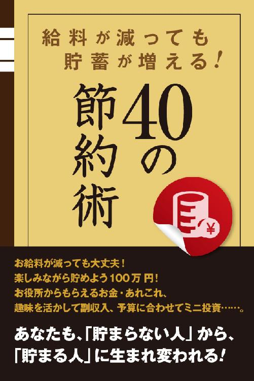
給料が減っても貯蓄が増える！ 40の節約術
◆はじめに
現在の日本経済は、バブル崩壊後の不景気の荒波にどっぷりと飲み込まれ、デフレスパイラルというらせん階段を転がり落ちている状態。値を下げ続けても「もの」は売れず、世の中はますます不景気に。
私たちを取り巻くのは、会社の倒産や失業の危機、そしてまた給料やボーナスのダウンという現実。
主婦も、独身ＯＬも、そしてオトーサンたちだって、「せめてあと３万円、いや１万円でも給料が高ければ──」なーんて思いつつ、日々暮らしているのです。
それでも、こんなご時世だからこそ、「どっこい、生き抜いてやるぅ！」という強い意志と、したたかな根性を持つべきでしょう。「そんなこと言ったって、お金が降ってくるはずもないし......」って、そんなこと、当たり前です。ただ、ぼやいているだけではダメ！ 節約・倹約を真剣に考えるようになる時代だからこそ、お金を貯めるチャンスなのです。
「だって、お給料が下がってるのよっ！」
はいはい、承知してますとも。
本書には、ちょっとした工夫で楽しみながら節約することができるコツを、たくさん紹介してあります。そしてまた漠然と「お金を貯めなきゃ」、ではなくて、しっかり計画的に、無理なく貯めるワザも満載。預貯金のアドバイスや投資でお金を増やす方法まで、わかりやすく解説してあります。
大切なことは、「無駄」はいけませんが「無理」もいけない、ということです。無駄をそぎ落とすのはいいけれど、度が過ぎて体をこわしてしまうのでは、ダイエットのやり過ぎと同じで本末転倒。揚げ句の果てにリバウンドで「浪費家」になっちゃったなどということになっては、笑うに笑えませんよね。
節約も貯蓄も、まず、自分のライフスタイルにあった計画を立てること、目標を持つことが肝心。
無理な節約・無理な貯蓄、そしてごほうびやうれしいことがなーんにもない！ というのでは、決して長続きしません。
さあ、上手に節約、しっかり貯めて、あなたも「貯蓄アップ」をめざしましょう！
給料が減っても貯蓄が増える！
40の節約術 目次
●ウィークポイントを探せ
デフレも収入源も克服
絶対貯めるぞ１００万円！
１ 経済の流れを知る
２ 無理のない計画で、楽しく貯蓄
３ デフレの今、強いのは現金
４ 「貯まらない人」と「貯められる人」
●買い物のコツ・節約のワザ
生活上手はお金が貯まる
賢く無駄なく暮らしましょう
１ 買い物上手になるコツ
２ 旬の食材を食べる
３ 閉店前の「デパ地下」をねらえ
４ 家庭菜園で節約とうるおいを
５ 水道光熱費・その他を節約する
６ リサイクル、いつも意識してますか？
●こんな特典、知らなかった
郵便貯金から「デパート友の会」まで
何がオトク？ 預貯金研究
１ 郵貯の「ぱ・る・る」はスグレモノ
２ やっぱり基本は積立定期
３ 「ペイオフ」って何だろう？
４ インターネットバンキング
５ オイシサいっぱい「デパート友の会」
６ 損をしないクレジットカード活用術
７ お店の数だけポイントカード？
８ 金券ショップを味方につけよう
９ おトクな預け先としての「投資」
10 楽しみながら貯めよう１００万円！
●よく見るとムダがいっぱい
自分のライフステージに合わせて
見直そう！ 保険料に住宅ローン
１ 見直そう「生命保険」
２ 不要な保障を徹底チェック！
３ 独身者の保険
４ 「自動車保険」を見直す
５ 「火災保険」を見直す
６ 「住宅ローン」をチェックする
７ 保険会社も経営破たん？
●デフレの今は現金が強い
お役所の補助金や趣味を活かした副収入など
めざせ！ 収入アップ
１ 失業にも耐える、裏ワザ研究
２ お役所からもらえるお金・あれこれ
３ こんな副業はいかが？
●初めてだって大丈夫
１万円からＯＫ
予算に合わせてミニ投資
１ 投信積立
２ るいとう
３ 投資信託
４ ｅワラント
５ 金
●特典もいろいろあるぞ
預金利息より魅力アリ！
投資の基本を知って株主になろう！
１ 株主になろう！
２ 株の買い方いろいろ
３ 株で資産を増やす方法
４ 銘柄選び
５ 「株式」用語集
第１章
●ウィークポイントを探せ
デフレも収入減も克服
絶対貯めるぞ１００万円！
１ 経済の流れを知る
●バブル崩壊とデフレっていったい......？
80年代後半の、「バブル」と呼ばれた好景気。その好景気が90年代に入るとあっという間に終焉を迎え、バブルは崩壊した！ そして日本経済はデフレスパイラルにどっぷりとはまってしまったのです。物価下落と不景気が連鎖反応で後退し続け、日本経済は今も悪化の一途をたどり、会社の倒産や失業といった恐怖におびえる日々が続いているのです。
と、これではあまりに説明が超特急でよく分からないという人のために、もう少しゆっくり解説すると......。
■バブル景気とその崩壊
１９８０年代後半、日本は金融緩和により、お金が余っていました。つまり誰もが「お金持ち」だったのです。そこで企業はさらにお金を増やすべく、余ったお金を財テクに利用しました。その典型が土地。なにしろ１億円で買った土地が、またたく間に２億円、３億円と値上がりしていきました。こうなると土地を持っているだけで億万長者。企業や投資家たちは、こぞって土地を買いあさり、銀行は有頂天になって、彼らにどんどん、お金を貸したのです。
しかし90年代に入り、金融の引き締めが行われると、土地などの資産の価値があっという間に暴落してしまいました。最盛期に借金までして用意した１億円で買った土地が、値上がりどころか、１０００万から２０００万円の価値しかなくなってしまったのです。５分の１から10分の１という信じられない大暴落。結局、企業や投資家に残されたものは、投資したときの価値を大幅に割り込んだ土地や資産、そして、莫大な借金でした！
そんなときこそ頼りになるのが銀行、と思いきや、銀行もたいへんな騒ぎになってしまいました。他人を支援するどころではない、なにしろ貸したお金が戻ってこなくなってしまったのです（これを「不良債権を抱える」という）。こうして銀行にも、お金がまったくなくなってしまいました。
■デフレスパイラル
世の中は、あっという間に不況になってしまいました。企業は大痛手。財テクに失敗したうえ、生産しても、ものが売れない状態になってしまったのです。
土地の値段をバカみたいに上昇させた好景気を、中身のない泡に例えて「バブル」と呼びました。１億円で買った土地が、実際には１億円の値打ちはなかったのですから、まさに「バブル」です。そして、90年代に入っての大暴落を「バブルがはじけた」と表現しています。「バブル時代」の終焉でした。
で、「デフレ」です。日本経済は大打撃をこうむりました。しかし、デフレといっても悪いことばかりではありません。消費者にとっては物価が下がるのは大いに結構。いいデフレだってあるのです。ところがそれがスパイラル（らせん）状に悪循環を繰り返していくと、経済は悪化の一途。つまり......。
不況になって、ものが売れなくなると、企業は安売りをする！ 安くすれば利益が落ちて、企業の収益が悪化する！ 当然、その企業で働く人たちは給料が下がる！ 給料が下がれば財布のひもを締めて、ますますものを買わなくなる！ さらにものが売れなくなる!! と、こういう悪循環が「デフレスパイラル」です。
では、そこから脱出する術はないのでしょうか。
■消費のパワーで不況脱出！
倹約・節約ばかりでは、景気回復は望めません。倹約・節約で、確かに自分の家の（あるいは個人の）支出は減りますが、世の中全体を見渡したとき、決して得策とは言えないのです。やはり不況脱出のためには、消費のパワーが必要です。つまり......。
ある程度財布のひもをゆるめてお金を使えば、ものが売れて企業の景気がよくなる！ 給料がアップし、ますます消費意欲がわく！ さらにものが売れて景気がよくなる！ と、こうなるわけです。
結論は、景気回復のためには、消費のパワーも必要だということです。倹約・節約も、自分のライフスタイルに合わせて上手に楽しくしたいもの。無理せず貯めよう「１００万円」！
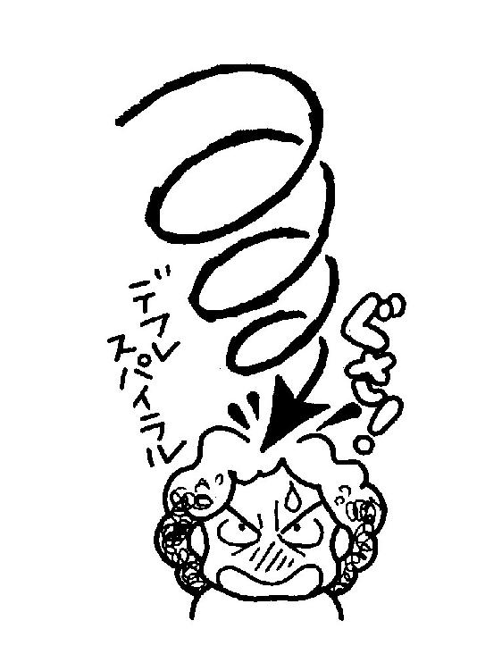
２ 無理のない計画で、楽しく貯蓄
●お金を貯めたいがために、悲惨な暮らし？
何が何でもお金を貯める！ と固く心に決めて、おいしいものをがまん、素敵な洋服をがまん、とにかく何でもかんでもがまんして、節約に次ぐ節約！ ちょっと待って。それって、あまりに無理しすぎでは？ 無理は精神衛生上よくないし、何より生活にうるおいというものがなくなってしまいます。どうせ貯蓄をするのなら、余裕を持って楽しみながら貯めましょう。
■倹約・節約って、どういうこと？
「倹約・節約」って、どういうことでしょう？ 勘違いしている人も多いんじゃないでしょうか。例えば「１００万円貯めるぞ！」という目標を立てます。そして「今日から倹約・節約だ。三度の食事を一度にして、新しい服は絶対に買わない」──って、それは無理というもの。「倹約・節約」は、「無駄づかいはしない」、あるいは「○○の分を浮かす」ということのはず。決して、体をこわしかねないほどのギリギリの生活をすることではないのです。
■例えばこんな節約法が
生活費の中でかなり大きなウエートを占めているのは、やはり食費。それを切りつめるには、外食を減らすことと、買わずにすむものまで買わないこと！ これにつきます。例えば......。ペットボトルの麦茶やウーロン茶をスーパーやコンビニで買うと、２リットル入りで２００～２５０円はします。それをお湯をわかしてティーバッグで入れれば、10分の１の値段でできます。月に15本消費する人なら２０００円は浮く計算。あなたがもしお勤めをしているなら、毎日のお昼代はどうでしょう。会社近くの店でランチ・定食を食べれば、安くても７００～８００円。お弁当屋さんやコンビニ弁当でも５００円前後。そこで手製のお弁当！ 朝、５分早起きして、多めにつくって残しておいた前の晩のおかずを詰めればいいだけ。主婦の場合は、それを昼食のおかずにします。こうすると、少なく見積もっても１カ月で１万円は浮く計算です。
■計画的に貯める
ま、だいたいお金を貯めるのは、何らかの「使う目的」があってのこと（のはず）。「洋服を買う」「クルマを買う」「マイホームを建てる」「子どもの教育費」その他、使いみちがあって初めて、その目標に向かって「お金を貯めるぞ」という気持ちになれるものです。「老後が心配だから貯蓄」という人だって、老後に使うお金を貯めているわけで、死んだとき残すためということではないでしょう。だから「お金を貯める」、そのこと自体を、目標にしないようにすべきでしょう。
そしてもう一つ、お金を貯めるなら、目標を持って「計画的に貯める」こと。
で、それではどうすればいいのかというと、基本は「天引き」スタイル！ 次のお給料前に、残った分を貯蓄にまわそうなんて思っても、こんな、なりゆきまかせの考え方をしていては、なかなか残せるものではありません。「お友だち同士の食事会に誘われちゃって」「バーゲンで使いすぎちゃった」などと言っているうちに、むしろ赤字になっちゃったりして──。
収入やライフスタイルは人それぞれに違っても、支出を見直し、しっかり計画的にお金を使えば、必ず貯蓄はできるはず。たとえ１万円ずつでもいいのです。少額でも、毎月確実に積み重ねていくことが大切。「独身だから好きなことに使っちゃえ」という気持ちも、まあ、分かりますが、お金を一番貯められるのは、独身時代と子供のいない新婚共稼ぎ時代です。
そこで、まず自分のライフスタイルをしっかり把握し、その中で目標を持って無理のない計画を立てましょう。ダイエット同様、「いついつまでにこれだけ貯める」「この使いみちのためにいくら貯める」「毎月○○円、貯蓄する」といった具体的な計画を立て、無理なく楽しく貯蓄しなければ、長続きしませんぞ！
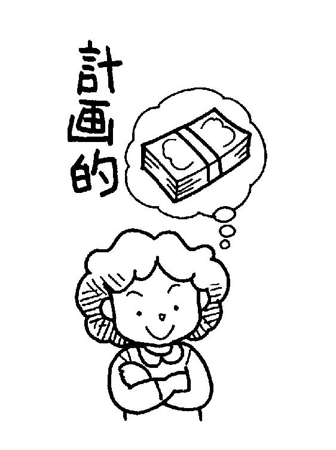
３ デフレの今、強いのは現金
●デフレを乗り切るには？
何度も言うように、今はデフレの時代。そんな現代は、何と言っても現金を持っている人の勝ち！ いくら「もの」の値が下がっても、お金がなければ買いたいものが買えないのです。そしてまた、必要なものだけ買って、あくまで現金をできるだけ減らさないようにすることが大切です。
■実質金利で考えてみよう
「ちょっと待って。お金を貯め込んでいたって金利は安いし、あまりいいことないんじゃない？」と、まあ、そう思うのも無理はありません。でも、デフレで下がる一方の物価が年に３％下がれば、金利が１％でも、実質金利４％ということになります。逆にインフレで物価が３％上がってしまうと、金利が５％でも、実質金利は２％ということになってしまいます。
やや極端な例で説明しますと、今、手に持っている１００円で、今日はパンが１個買えるとします。それが明日には、さらに物価が下がって、同じ１００円でパンが２個買えることになったとしましょう。今日買ったパンを大事に明日まで取っておいても、明日になれば、昨日は１００円だったパンは50円の価値しかなくなっているわけです。
以前は１５０円売りだったパンが、１００円になっていたからといって、まとめ買いするのは損をすることになるかもしれない。それなら、今日必要な分だけ買って、残りは現金で持っていましょう──というわけです。やはりデフレの今、頼りになるのはお金。現金がなくちゃ、ということのようです。
一家の財布は一つ、みんなで頑張って現金をかき集めるのだ！
４ 「貯まらない人」と「貯められる人」
●貯まらない原因はコレだ！
「どうしてだろう？ ちっともお金が貯まらない」「もう少し、貯金できると思うんだけど......」と、悩んでいる人が多いといいます。なかには「こんな不景気の世の中で、お金なんて貯まるわけないじゃん！」と、達観（？）している人も。でも、ちょっと待って──。
■お金が貯まらない人の共通点があった！
「ちっとも貯金できない」「お金が全然残らない」という人たちには、実は、共通点があったのです。それは......。
・金銭の出納をキチンと控えていない（＝家計簿をつけない）。
・リボ払いや分割払いで「今すぐショッピング」をしてしまう。
・毎月の多少の赤字には目をつぶり、ボーナスでやりくりする。
とまあ、こんなところです。思い当たる項目はありませんか。えっ、全部該当する!? そんなあなたは、かなり重症。
１００万円貯めるために必要なこと、それは小さな努力。「うーん、努力かぁ。努力するのは子供のころから苦手で......」って、コラコラ、いきなりあきらめちゃいけません。あくまで《小さな》努力でいいのです。
■お金を貯めるためのキーポイント
①お金の出入りをこまめにチェックしましょう。ぜひ、家計簿をつけることをおすすめします。「私、独身なの......」という人も、金銭出納帳か、せめてお小遣い帳をつけましょう。そうすると知らないうちに消えていってしまうお金を徹底的にチェックできるのです。これは実際やってみると、かなりの額になるはずです。
②お給料が出たら、まず、貯金してしまいましょう。25万円の手取りがあったら、例えば５万円をすぐに貯蓄にまわします。自分で自分から、強制天引きするわけです。初めからお給料は20万円しかないものと思いましょう。①が、どうしても続かないという人も、これだけは実行してください。
③「ローンで今すぐお手元に！」なんていう言葉についフラフラッとして、多額の買い物をすることをひかえましょう。ローンで購入しようと考えたら、まず、総額でいくら払うことになるのか計算して、よーく考えてみてください。長期間のローンでは、ゾッとする金額になることも。
何度も言いますが、ケチケチしながら「ひたすら貯めろ」と言っているわけではありません。お金は使うためにあるのですから、「使うために貯める」で、いいのです。「今すぐ欲しいっ」というのでは、わがままな子供がだだをこねているのと同じ。「欲しいものがあれば、お金を貯めて買う」という考え方に切り替えましょう。
④ボーナス依存の考え方も、ぜひ改めてください。いつ、どれだけ、ボーナスがカットされるか分からないこの時代に、ボーナスで払えばいいやという考えで買い物をするのはとても危険です。例えばボーナスを当て込んだ住宅ローンを組んでいたりするなら、いつカットされてもいいように、普段の給料から少しずつでも貯めておくくらいの気づかいが必要でしょう。
とまあ、この不況の世の中を渡っていくにはこれくらいは当たり前。そしてなおかつ、上手にお金を蓄えましょう。
第２章
●買い物のコツ・節約のワザ
生活上手はお金が貯まる
賢く無駄なく暮らしましょう
１ 買い物上手になるコツ
●エンゲル係数は何％？
前述のように、生活費の中でも大きな割合を占める食費。女性にとって一番身近で、節約しやすいものです。買い物上手になるためには、まず食費について考えてみましょう。まず生活費の中の食費の占める割合、「エンゲル係数」を把握すること。意外に高い割合が出たのではないでしょうか。理想としては、収入に対して15％～20％くらいにおさえられれば合格と言えるでしょう。
エンゲル係数には、外食や調味料なども含まれます。もちろん、食べ盛りの子どもがいるなどの家族構成にもよりますが、やはり15％～20％くらいをめざしてみてください。「ええっ、それは無理！」なんて思わずに、今の食生活を見直してみると、ずいぶん無駄があるものです。例えば、前章でも書きましたが、コンビニなどで買うペットボトルの麦茶やウーロン茶、会社勤めの人や主婦の毎日のランチ代などは、自分でつくることで節約できます。やはり、「買わなくてすむものは買わない」という姿勢が、節約の基本。少しずつ無駄をなくして、かしこい節約生活をおくりましょう。
■まとめ買いのススメ
第１章の「■実質金利で考えてみよう」の項目で少々極端な例をあげましたが、現実問題として、今、あなたが食生活を管理する立場なら、スーパーのチラシを見て、日替わりの特売品を求めて歩くのは、一見やりくり上手なようで、けっこう無駄な品物を買っているもの。本当のやりくり上手になるためには、「まとめ買い」がおすすめです。そのためには、まず、献立づくりから始めましょう。台所をあずかる主婦にとって、毎日の献立を考えるのは頭の痛いこと。そこで、１週間分は無理でも、３～５日分の献立を決めてしまいます。献立は大ざっぱでいいので書き出してみること。メインにする肉と魚、副菜や汁物の具など書き出してみることで、献立のバランスが分かるし、買うものが必然的に決まります。野菜など一回で使い切れない食材は、後日のみそ汁の具などに使い回すことも忘れずに。買い物に行く前には在庫のチェックをしましょう。調味料はこの在庫チェックを参考に、そろそろなくなりそうなものが特売などで安くなっていたら、購入します。
■まとめ買いの注意点
ではここで、まとめ買いする際に気をつけたいことを書いておきましょう。
まず、まとめ買いに限らず、買い物をするときによく言われることですが、夕方など空腹時の買い物は避けること。お腹が空いていると、何を見てもおいしそうに見えてしまい、誘惑に負けて、ついつい余分なものまで買ってしまいがちです。また、買い物は、なるべく歩いていくこと。帰りの荷物の重さを考えると、いくら安くても不必要なものは買わなくなります。さらに店内ではカートを使わないようにしてください。そして重いものから買うようにするなど、楽をしないようにすれば、いらないものまでつい買ってしまうということもなくなるはずです。
前もって献立を考えてから買い物に行くと、当然そのメニューに合わせた食材を求めてしまうわけですが、ここでもうひと工夫。特売品や目玉商品があったら、それに合わせてメニューを替えるくらいの機転も備えましょう。豚の薄切り肉を合い挽き肉に替えるくらいの幅を献立に持たせておくといいでしょう。献立をあくまで《大ざっぱに》立てようといった理由は、ここにあります。また、自分の家庭の消費量を知っておくことも大事なポイント。特売品や見切り品で安くなっていても、食べきれないほどの量を買ってしまっては、結局、捨てることになってしまいます。どんなに安くても「わが家の消費量」を頭において、無駄のないように買い物をしましょう。
■保存上手は節約上手
まとめ買いしたのはいいけれど、食材を冷蔵庫に詰め込みすぎては、いろいろなロスが生まれます。
詰め込みすぎは冷蔵庫内の冷気の循環が悪くなるため、電気代が４～５％も割高になりますし、必要な食材がどこにあるかわからず奥のほうまで引っかき回していると、ドアを開けている時間が長くなるため使用電力が増えます。また、頻繁にドアを開閉すれば、庫内の食品が傷む原因にもなります。そこで、冷蔵庫の扉部分に食材リストをマグネットで止めておくなどの工夫をしてみましょう。冷蔵庫の中に入っているものがドアを開けずに分かりますし、残り物などのチェックにも役立ちます。いつも冷蔵庫の中を整理整頓して、食材を無駄なく使うように心がけましょう。
無駄をなくして節約するためには、このように、ちょっとした時間を使い、手間を掛けることが必要です。まとめ買いした食材は、冷凍したり、ゆでるなど手を加えて保存したりしておきましょう。いざというときに役立ってくれます。
■冷凍保存
保存といえば冷凍保存というほど、フリーザーはどこの家庭でも大活躍。でも、冷凍食品を買ってきて入れておくだけという人も多いようです。
そこで、安くまとめ買いしたものをそのまま、あるいは調理して保存しておく方法を素材別にご紹介しましょう。でも、家庭の冷凍庫では、急速冷凍は無理と思っている人も多いようですが、アルミホイルやアルミトレーを底に引くだけで普通より早く冷凍できるし、また、自然解凍するときもアルミホイルやアルミトレーにのせておけば素早く解凍できます。
◎これは便利！ 素材別冷凍保存アドバイス
・ご飯......お茶碗一膳分をラップに正方形に広げ、重ねて保存。
・おもち......重ならないようにして、ビニール袋に入れる。
・食パン......買ってきた袋ごと保存。
・ネギ・三ツ葉・パセリ......みじん切りにして容器か、ビニール袋に入れる。
・ショウガ......そのままビニール袋に入れるか、おろしてラップに包む。
・ホウレンソウ・ブロッコリー......下ゆでしたのち小分けにしてラップかビニール袋に。
・トマト......そのまま冷凍保存できる。
・青のり......袋のまま冷凍しておけば、変色しない。
・玉子焼き......食べやすく切ってラップに包む。
・塩ザケ......焼いてから、ラップかビニール袋に入れる。
・カレー・ミートソース......容器に入れる。
・トンカツ......パン粉を付け、ラップに包むか、揚げてからラップに包む。
・肉類（牛・豚・鶏）......使う量を小分けにして、ラップかビニール袋に入れて保存。
・ベーコン......一回に使う分を小分けにしてラップに包む。
・ウインナソーセージ......袋のまま冷凍。
・魚類......１尾なら内臓を取って、切り身・干物は１切れずつラップかビニール袋に。
・油揚げ......熱湯で油抜きをしたのち、ラップに包んで冷凍。
２ 旬の食材を食べる
●旬の食材、ご存じですか？
肉類は別として、野菜や果物、魚介類には「旬」というものがあります。旬とは野菜・果物なら、よく熟して最も味のよいときをいい、魚介類なら漁獲量の多い時期を指します。......とまあ、そのはずですが、最近では野菜・果物は温室栽培が広まり、一年中出回るものが増えました。魚も養殖が盛んになり、また冷凍技術の発達により、さまざまな種類の魚が一年中店先に並んでいる......。
しかし！ です。やはり旬の食材は味が違うもの。野菜は栄養価が最も高い時期であり、魚は脂がのった新鮮な時期。少々割高でも旬の食材を食べることで、季節感を味わい、より豊かな食生活をおくることができるはず。日本人に生まれてよかった！
◎季節で分かる旬の食材一覧表
１月
野菜......ホウレンソウ・大根・ニンジン・レンコン・ヤマイモ・小松菜・ワサビ
果物......リンゴ・ミカン・キンカン
魚介類...タイ・ブリ・マナガツオ・タラ・サワラ・カジキ・伊勢エビ・カズノコ・イカ・塩ザケ・貝柱
２月
野菜......大根・水菜・京菜・春菊・カリフラワー・モヤシ・ワケギ・ワサビ・干し大根
果物......ミカン
魚介類...アンコウ・ブリ・イワシ・ボラ・オコゼ・シラウオ・カニ・カキ
３月
野菜......モヤシ・小松菜・春菊・芥子菜・ウド
果物......ミカン
魚介類...ワカサギ・メイタカレイ・ハマグリ・サザエ・トコブシ
４月
野菜......キャベツ・タケノコ・エンドウ・タマネギ・アスパラガス・フキ・ニラ
果物......ハッサク・イヨカン
魚介類...タイ・ニシン・サバ・アジ・マグロ・トビウオ・タチウオ
５月
野菜......エンドウ・タマネギ・タケノコ・フキ・ニラ
果物......イチゴ・夏ミカン
魚介類...カツオ・ハモ・カマス・イサキ・キス・コイ
６月
野菜......ジャガイモ・エンドウ
果物......イチゴ・ビワ
魚介類...ハマチ・シタビラメ・カマス・アナゴ・アユ・タコ・車エビ・アワビ
７月
野菜......キュウリ・ナス・トマト・カボチャ・タマネギ
果物......夏ミカン・スイカ・サクランボ
魚介類...ハモ・タチウオ
８月
野菜......キュウリ・ナス・トマト・サヤインゲン・カボチャ・冬瓜・シソ・唐辛子・新ショウガ
果物......スイカ・ブドウ・モモ・アンズ
魚介類...イワシ・ハスダイ・ヒラアジ・アカエイ・ドジョウ・ハモ・アワビ
９月
野菜......キュウリ・トマト・アキナス・キャベツ・冬瓜・新ショウガ・カボチャ・枝豆・ウズラ豆・ヤツガシラ・サトイモ・ラッキョウ
果物......ブドウ・イチジク・ナシ・ザクロ
魚介類...──サンマ・サバ・アジ・イワシ・タチウオ・ハゼ・スズキ・モンゴイカ
10月
野菜......サトイモ・サツマイモ・レンコン・白菜・マツタケ・シメジタケ・ハツタケ
果物......ナシ・カキ・クリ
魚介類...サンマ・サバ・イワシ・ハマチ・ハゼ・サワラ
11月
野菜......白菜・ホウレンソウ・春菊・ゴボウ・カブ・マツタケ
果物......ナシ・カキ・栗・ミカン
魚介類...イカ（マイカ・ヤリイカ・スルメイカなど）・カレイ・サケ・マグロ
12月
野菜......大根・カブ・白菜・サツマイモ・江戸ネギ・ユリ根
果物......リンゴ・ミカン・キンカン
魚介類...タラ・ブリ・カキ・ハマグリ・伊勢エビ
いかがでしょう。日本の「味暦」とでも言いましょうか、なかなかの季節感。今日では時間的に少しずつ、ずれたりしてしまっているものもあるかと思いますが、食卓で季節を感じられるという、ささやかなぜいたくを与えてくれる食材たちです。
３ 閉店前の「デパ地下」をねらえ
●よいものを安く買うなら「デパ地下」
最近、主婦やＯＬ、はたまた独身男性から単身赴任のオトーサンにまで大人気の「デパ地下」。ご存じの通り、「デパートの地下食料品売り場」の略称。各デパートとも、なかなか個性的な食品が数多く並び、スーパーの食品売り場とはひと味もふた味も違う特色を出しています。
■「デパ地下」の魅力
デパートが食料品を扱い始めたのは、まだ百貨店と呼ばれていた大正時代のこと。それが今のように地下に集約するようになったのは、まだ意外に歴史も浅い30年ほど前の、１９７０年代。
その「デパ地下」が、今、「グルメの激戦地」として注目されているのは、欧米の有名高級食材（つまり「ブランド」っていうこと！）を販売したり、「タイムサービス」「本日限り」「たった今焼き上がりました」など、「限定」「できたて」といった、消費者の購買意欲をかき立てるキーワードを上手に使っているということに、理由がありそうです。
高級レストランの総菜を並べる百貨店もあります。家族そろって高級料亭に行くとなると、かなりの出費を覚悟しなければなりませんが、総菜ならそこまでの心配はいらない、というわけです。
とにかく、こだわりの総菜や厳選食品が並び、人気スイーツなども充実しています。「おいしくておしゃれで、なおかつ安い！」という条件を満たしてくれるのが「デパ地下」なのです。
そういった意味からも、「デパ地下」最大の魅力は、閉店間際の値引き！ 何しろデパートは品質本位、売れ残ったものを、また明日売ろうとはしません。どんどん安く値引いて売り切ってしまおうという作戦ですから、買うほうもそれを見逃す手はありません。上等の肉や魚介類が、かなり安く買えますから、ぜひ閉店間際にのぞいてみましょう。
もっとも時間からいっても、ねらっていたものが売り切れという場合もありますので、タイミングが肝心！ です。
４ 家庭菜園で節約とうるおいを
●自家製の野菜が食卓に並ぶ──
そんな情景を思い浮かべてみましょう。食卓に彩りをそえ、きっと食欲も増すことでしょう。節約になることはもちろん、食生活自体が豊かになり、心も豊かになるはずです。庭付きの一戸建て住宅でなくとも、マンションのベランダ・窓辺などでも、野菜は十分育ってくれます。初心者でも簡単にできる栽培方法を紹介しましょう。
■ベランダでできる家庭菜園
ベランダ菜園の代表はミニトマト。初心者でも簡単に収穫できます。水栽培のプチトマトもありますが、近所の花屋で、小さなポット植えの苗を買ってきて、育ててみましょう。大きめの鉢やプランターに園芸用の土を入れ、苗を植え替えるだけ。「鉢やプランター？ 園芸用の土？ けっこうお金がかかるんじゃない？」といったご心配には及びません。いずれも「１００～２００円程度」で買うことができます。
あとは日当たりのよいところに置き、水やりだけ欠かさなければ育ちます。苗が伸びてきたら、添え木を立ててあげてください。ときどき米のとぎ汁をかけてあげたり、野菜クズ、お茶ガラなどを土に埋めてやると肥料になります。
最近では、ナスやキュウリなどの苗も売られていますが、いずれもベランダで十分育つ野菜です。ぜひ、試してみましょう。
■テーブルの上のミニ菜園
テーブルの上で野菜を育てるなんていうと、ちょっと想像がつかないかもしれません。種や苗を買わずに簡単にできる手づくり野菜です。
こちらはベランダ菜園よりもっと簡単。根がついているネギやミツバ、ニンジンなどを、根から３㎝くらいのところから切り、浅めの皿などに水をはり、そこに根の部分をつけておくだけ。葉の部分が伸びてきますから、上から少しずつ切り取って使いましょう。薬味に使うネギやミツバは少量ですみますし、ニンジンの葉が茂ったら、みじん切りにしてスープに浮かべたりして楽しめます。なかなか便利で、重宝しますし、何よりテーブルの上がにぎやかになります。
パセリ・セージ・タイム・バジル・ペパーミント──。身近なハーブをあげても、ずいぶんたくさんの種類があります。ハーブはほとんどの種類が丈夫で育てやすいので、ベランダで鉢植えにしても、手軽に楽しめます。種から育ててもいいのですが、苗や鉢植えを買ってきたほうが無難でしょう。日当たりのいい場所に置いておけば、とてもよく育ち、摘んでも、すぐまた伸びてきます。
ハーブティーや入浴剤として楽しむのが一般的ですが、ハーブオイルも、ガラスポットで簡単につくれます。セージ・タイム・バジルなどをオリーブオイルと一緒に、密閉できるガラスポットに入れ、窓際の日当たりのいい場所に置くだけです。１日１回よく振るのを忘れずに。約２週間で熟成し、ドレッシングなどに使えます。ドライハーブにするには、枝ごと摘んで乾燥した場所で日陰干しします。手で簡単に、葉がパラパラ崩れるところまで乾燥すれば出来上がり。ガラスびんなどで保存しましょう。
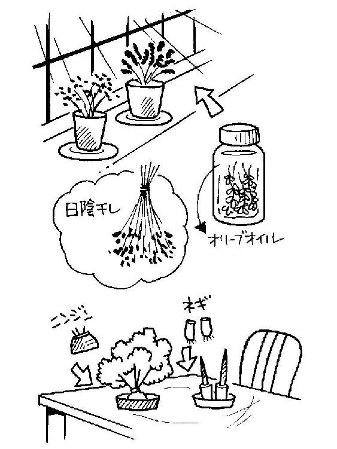
５ 水道光熱費・その他を節約する
●節約のポイントは、とにかく無駄をなくすこと
そのためにたいせつなことは、まず、意識改革！ つまりケチるのではなく、限りあるエネルギーの無駄をなくすという、広く大きな考えに意識を変えていく必要がありそうです。また、これは家計を預かる主婦だけが気をつけてもダメ。家族全員の協力のもと、みんなの節約に関する意識を変えなくてはならないでしょう。特に生活に密着したことなので、子供には、しつけという感覚でするといいでしょう。
■水道代
「節水」ということを、夏の水不足のときしか考えないというのでは意識が低すぎます。日本は水資源に恵まれているためか、つい無駄づかいする習慣になってしまっているようです。また、たとえばお風呂の残り湯を洗濯に利用していたりする人や、トイレのタンクにレンガなどを入れて水洗量の工夫をしている人でも、食器洗いのときや洗顔、歯みがきのときに、水を流しっぱなしにしている人がけっこういたりします。でも、１分間水を流しっぱなしにすると、12リットルにもなるのです。朝シャン５分で60リットル、ジャージャー水を流しながら車を洗えば、15分で１８０リットル！ 「チリも積もれば山」という言葉もあります。生活全般を見直して、常に節水ということを心がけて生活するようにしたいものです。
また、水を再利用することも考えてみましょう。前出のように、洗濯のとき、お風呂の残り湯を利用することによって、１カ月４５００リットルの水が節約できるといいます。ちなみにバスタブに張る１回の水の量は約１８０リットル、全自動洗濯機の１回の使用水道料は約１１０リットル。どれだけ節水できるか分かるというもの。そのほか、庭やベランダの草花にあげる水は米のとぎ汁なら肥料にもなりますし、雨水を溜めておいて利用するなどの工夫をしたいものです。
■電気代
私たちの家庭は、電力会社と使用アンペアの契約を結んでいます。一般家庭の場合、アンペア数は10～60Ａ（アンペア）まであり、大きい数字になるほど基本料金が高くなります。今、自分の家で結んでいる契約アンペア数を確認して、アンペア数が大きい家庭は見直してみてはどうでしょう。参考までに書くと、２ＬＤＫのマンションに住んでいる４人家族の平均的家庭の場合、30Ａの契約で電気量は十分、間に合うはずです。
また、「待機電力」による消費電力の節約ということもバカにできません。待機電力とは、メインスイッチを切らずに、リモコンスイッチでつけたり消したりしていたり、コンセントを入れっぱなしにしておくことで消費される電力のこと。つまり電気製品をいつでも使用可能にしておくときの電力をいいます。実はこの待機電力、家庭の電力消費量の10％以上を占めているといいます。昼間、誰もいない家庭はもちろんですが、夜でも就寝前には主電源は必ず切る、不要なコンセントは抜くという習慣をつけたいものです。
■電気製品別節約術
待機電力の節電ができたら、次はそれぞれの電気製品の、無駄な電力についての節電を考えてみましょう。
▼テレビ......見てもいないのにつけっぱなしにすることが多く、家電製品中の無駄の王様！テレビの消費電力は音が大きいほど多く、また、画面が明るいほど多いのです。必要以上にボリュームを上げることはひかえ、また画面はホコリがつきやすいので、こまめに掃除することを心がけましょう。
▼照明器具......各部屋を見渡すと、白熱球になっている部屋が多くはありませんか。照明の電気代節約は、家中の白熱球を蛍光灯に替えることから始めましょう。蛍光灯の寿命は、白熱球の約６倍、消費電力は約４分の１。蛍光灯は断然お得です。 今は白熱球と同型の「電球型蛍光灯」もあり、こちらはもっとお得！
▼電気掃除機......掃除機の節約は、まずパワーの切り替えスイッチでできます。掃除機は、その消費電力がパワーの切り替えによって違ってきます。カーペットやじゅうたんは「強」、フローリングの床や畳の部屋は「中」というようにパワー切り替えをこまめにすることで、電気代の節約ができます。また、フィルターの掃除や「ゴミパック」の交換も大切です。取り替えサインが出るまで使用していたのでは、吸引力が落ちるだけでなく、電力をフルパワーで消費することになります。フィルターやゴミパックの掃除や取り替えをこまめにすることは、電気代を節約するだけでなく、ダニ対策にもなります。
▼エアコン......エアコンは、家電製品の中で、消費電力はナンバーワン！どうしても使ってしまう時季や、ほぼ通年で使っている家庭では、まず風の流れをさえぎらないために、エアコンの前に家具などを置かないようにしましょう。また、フィルターの掃除をこまめにして、風量を一定に保つように気をつけます。冷房でも暖房でも、温度設定をきちんとして、部屋が一定の温度になったら、スイッチを切るようにします。例えば真冬に春のような格好をして、暖房ガンガンでは、お金を捨てているようなものです。
■ガス代
ガス代の節約には、コンロの火を必要以上に大きくしないことが一番です。やかんやお鍋の底から、炎がはみ出しているのは火力の無駄。気をつけましょう。そういう意味では、やかんや鍋は、底が広いほうがお得、ということになります。また熱効率で考えると、コンロの火を中火にしてお湯をわかしたときのほうが、強火でわかしたときより、少しだけ安上がり。急ぐとき以外は、少々時間がかかっても、中火でわかすようにしましょう。
また、お風呂もせっかく一度わかしても、すぐに入らなかったり、家族でバラバラに入ったりしたのではガス代の無駄。みんなで協力して節約しましょう。
■電話料金
近年、各家庭への電話の普及率はめざましいものがあり、電話は私たちの生活に、なくてはならないものとなりました。そしてここ数年間で携帯電話が急な勢いで普及すると、電話は１人１台の時代となりました。
また、一般家庭にもファックス機能付きの電話機が普及すると、私たちの周りは新しい通信手段が増え、ますます便利になりました。ファックスは手紙を送る感覚で、必要な用件を紙に書いて送ることができるので、長電話の防止策にもなります。とはいえ電話の持つ、最も便利な機能は、やはり話すこと。遠距離に住む肉親や友人とのおしゃべりは捨てがたいものです。そういう人たちにおすすめしたいのが、各電話会社で提供しているさまざまな割引システム。自分の生活にあった割引の方法を選び、節約してみましょう。
携帯電話の料金は、家庭の電話より高めですが、こちらも各電話会社独自の割引料金設定を利用すれば、ずいぶん節約できるでしょう。
さらに、電話と同じ感覚で利用料金が安いものに、携帯電話やパソコンのメールがあります。長い文章を送っても、その料金は、長電話１回分の通話料に比べれば、ずいぶん安上がりです。
このように現代は、電話・ファックス・携帯電話・メールと、通信手段も多種多様。便利すぎるほど便利になった世の中、利用する側が自分のライフスタイルに合ったものを選んで契約、うまく使い分け、賢く節約しましょう。
■ガソリン
電話ではありませんが、車も１人１台といえるほど、増えている現代。とはいえ、維持費・保険料・駐車場代・税金と、車は所持しているだけでお金がかかるもの。そこで車に関する節約を考えると、ガソリン代の節約くらいしかありません。ガソリン代の節約は、２通りできるといえます。
まず、運転技術による節約。ガソリンは効率よく使わなければ、お金をまき散らしているのと同じ。急発進や追い越しのときなど、効率を考えずに乗っているのではないでしょうか。カラ吹かしやアイドリングはやめましょう。これらは環境に悪いのはもちろんですが、ガソリンの無駄づかいにもなります。走行時もいわゆる経済速度、一般道は時速40～50㎞、高速道路は時速80㎞での走行を心掛けるようにします。この速度は、ガソリン消費の効率が最もいいのです。
ガソリン代そのものの節約もたいせつ。通勤途中や近所などで、一番安い店を探しておきましょう。ポツンと一軒だけあるより、ガソリンスタンドが何軒も並んでいる地域のほうが、安いというデータも見逃せません。１リットル当たり３円、４円の違いでも、長い間には大きな違いになります。また、ガソリン用プリペイドカードを買ったり、ガソリン会社のメンバーズカードをつくると、料金の割引があります。さらにタイヤの空気圧まで気にするようになれば、完璧です。
６ リサイクル、いつも意識してますか？
●意識と生活を見つめ直して改善する
リサイクルが根づいた現代生活。いろいろなものが他の製品のリサイクルによってつくられています。リサイクルとは、資源の無駄づかいをやめ、できるだけものを捨てずに、再生できる製品はどんどん再利用しようということです。まず身近なことから考えてみるといいでしょう。
身近なリサイクルの第一歩は、何と言ってもゴミの分別でしょう。ゴミの分別の方法は各自治体によってさまざまですが、燃えるゴミ、燃えないゴミ、プラスチック・かん・びん・紙類などの資源ゴミといった具合に、家庭レベルでできることは率先して行う姿勢が大切です。買い物をする際も、燃えないゴミに分別されるトレー容器入りのものはなるべく買わないようにするなど、自分の周りをよく見回して、面倒がらずに、生活を改善していきましょう。ではここで、リサイクルに関するいろいろな知恵をご紹介。
■生ゴミ利用知恵袋
・ミカンの皮......煮出した液を畳拭きやお風呂洗いに。日に当てて乾かしたのち布袋に入れると、入浴剤に。
・リンゴの皮......黒ずんできたアルミ鍋に芯や皮を入れて煮込むときれいになる。
・レモンの絞り皮......ガラスのコップ磨きに。
・大根・ニンジン・キュウリ......切り落とした尻尾の部分をタワシとして利用。料理の途中で包丁を洗うときやシンク磨きに。
・米のとぎ汁......油で汚れた食器を、とぎ汁を含ませたスポンジでこする。
・うどん、そうめんなどのゆで汁......シンク磨き・食器洗いに。
・残った牛乳......床を磨いたり、洗顔に。
・柑橘類の皮......干して網の袋に入れて、入浴剤に。そのままトイレなどの芳香剤に。
・お茶ガラ......何回分かをまとめて、固く絞って畳にまき、ほうきで掃くと、ホコリがとれてきれいさっぱり。また、日に当てて乾かしたものをカーペットにまいて、掃除機で吸えば髪の毛や糸くずもよくとれる。さらに、鉢植えの土にのせれば肥料に。
・卵の殻......細かく砕き、お湯と酢を少々入れて、ガラスのコップ洗いに。
・コーヒーの粉ガラ......小さな器などに入れて、冷蔵庫の脱臭剤に。灰皿に入れて臭い消しに。
■不要品の再利用
・使用済みアルミホイル......丸めてシンクの排水口に入れておけば、アルミが濡れて発生する金属イオンの作用でヌルヌルしない。また、アウトドアでは、丸めて野菜の皮に押しつけてこすると、うすく皮がむける。
・針金ハンガー......折り曲げて、洗った（雨に濡れた）クツや帽子を干すときに。また、植木の鉢カバーやラップホルダーにする、など。
・タオル......もちろん、ぞうきんに。
・バスタオル......三つ折り、または四つ折りにして簡単に縫い、バスマットに。
・ペットボトル......プランターやシャベルなどの園芸グッズに。
■リサイクルショップ・利用のすすめ
リサイクルショップをもっと利用してみませんか。小さくなった子供服、太ってしまって着られなくなった服、結婚式の引き出物の食器やなべ、電化製品など、とにかく不要になったものは、ぜひ一度、持ち込んでみましょう。家具なども、粗大ごみで出せば料金を取られるので、安くても売ることができればもうけもの。
また、公共のリサイクル施設でも、家具やオーディオ製品を修理あるいは販売しているところがあります。提供してもいいし、けっこうお得な掘り出し物もあったりするのでオススメです。
■レンタル・リサイクルショップ・フリーマーケット
子どもの成長は早いもの。使う時期が限られているベビーベッドやベビーカーなど大きなものは、レンタルすれば後々じゃまにならないし、買うより安く利用できます。また、リサイクルショップやフリーマーケットを上手に利用して、余分な出費をおさえましょう。最近はフリーマーケットの利用者が急増中です。
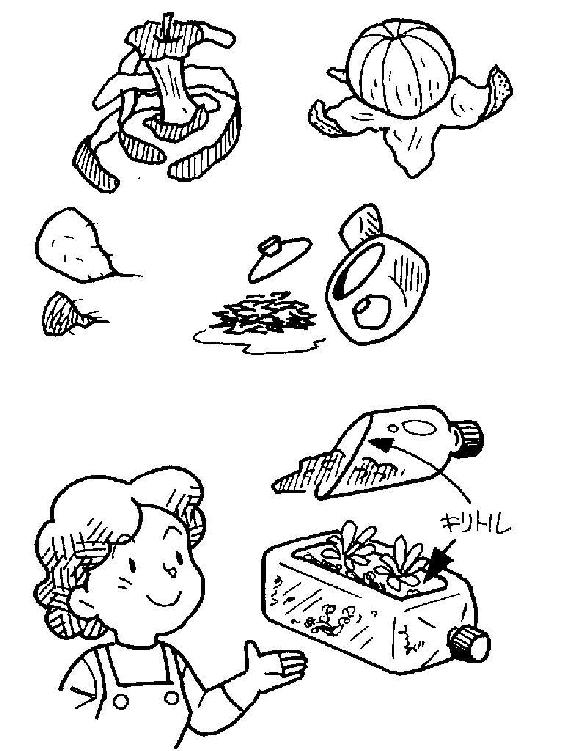
第３章
●こんな特典、知らなかった
郵便貯金から「デパート友の会」まで
何がオトク？ 預貯金研究
１ 郵貯の「ぱ・る・る」はスグレモノ
●民間金融機関にはないメリットあり
「ぱ・る・る」って何のこと？ 正式には、郵便局の「送金機能付総合通帳」のことで、銀行の総合口座に当たります。セールスポイントになっている「７つの機能」というのが、①預ける ②受け取る ③支払う ④貯める ⑤借りる ⑥使う ⑦送金する──。これだけ聞いてもピンと来ませんが、銀行にはない郵貯ならではのうまみがいろいろとあるのです。この機会に隅から隅までチェックしてみましょう！
■「７つの機能」
①「預ける」
出し入れ自由のおサイフ代わりに使える口座のことを、銀行では「普通預金」といいますが、郵便局では「通常貯金」と呼び方が違います。おサイフとしての便利さからいえば、「ぱ・る・る」は最強といえるかも。
なぜなら、まず郵便局の、全国津々浦々に約２万４０００軒という、窓口数の多さ。
民間金融機関の場合、地域によって店舗配置にバラつきがあるために、転勤や引っ越しのたびに、その地域で近くて便利な銀行に口座を開き直すといった苦労がありますが、その点、郵便局ならまずどこへ行っても大丈夫。窓口の取扱時間も午後４時までと、銀行より１時間長めですよね。
次に、何といってもＡＴＭの便利さです。ザッと並べてみましょう。
▼その１......取り扱い時間が長い
郵貯のＡＴＭは、場所ごとに取扱時間が違うので、事前に調べておくことが必要です。利用者の少ない場所では、平日午後５時30分まで、休日は扱わず、という場合もありますが、逆に利用者の多い場所や地区の集配局だと、平日朝７時から午後11時まで、休日でも朝９時から午後９時までという、ＡＴＭもあります。
▼その２......時間外手数料が無料
平日の夜間はもちろん、休日も「ホリデーサービス」といって、時間外手数料がかかりません！ 平日のうちに下ろし忘れたお金も、安心して下ろしに行けます。
また、最近増えてきたコンビニなどの24時間ＡＴＭにも、この場合は手数料がかかってしまいますが、郵貯も加わるようになって、ますます便利になりました。まさに、おサイフ感覚ですね。
▼その３......通帳だけでも引き出し可能
これも郵貯のＡＴＭだけのメリット。キャッシュカードか通帳か、どちらかを持って行けば引き出せるというのはありがたい。おサイフからカードを出さずに通帳で引き出し、同時に記帳も済ませるという手間いらずが「ぱ・る・る」流です。
②「受け取る」
給与振込口座（勤務先により指定がある場合はダメですが）や年金受取口座に指定できます。
③「支払う」
銀行同様、公共料金やクレジットカードなど各種の決済口座に使えます。
④「貯める」
１冊の「ぱ・る・る」には、「定額貯金」（預入期間６カ月以上10年以内）や「ニュー定期」（同１カ月以上４年まで）などの貯蓄商品を、最高21件までセットできますが、元利合わせて１人１０００万円までを、国が保証してくれることになっています。郵便局は２００３年に公社化されましたが、この点は変わりありませんので、ご心配なく。
ただし、この保証枠は、同時に郵貯の利用枠でもあって、これを超えるお金は、「ぱ・る・る」以外のところに預けなければいけないのですね。でも、１０００万円では物足りない、という人にも抜け道があります。「財形貯金」や「住宅積立郵便貯金」、また窓口が郵便局でも郵貯商品ではない「国債」などは、１０００万円枠を超えても一定の条件のもとで利用できます。
⑤「借りる」
銀行の定期預金の場合と同様ですが、「定額貯金」「ニュー定期」をセットしておくと、それを担保にその残高の90％（最高３００万円）を限度に、「ゆうゆうローン」という低利の貸付が受けられる仕組みのこと。貸付金利は、定額貯金の場合は返済時の定額貯金の金利＋０・25％、ニュー定期の場合は＋０・５％となり、より金利の低いものが担保として自動的に選択されるようになっています。
⑥「使う」
「ぱ・る・る」のキャッシュカードは、そのままデビットカードとして、加盟店での決済に使えます。現金を下ろしに行く手間がいりません。
⑦「送金する」
「ぱ・る・る」口座間ならリアルタイムで送金でき、しかも送金額にかかわらず（３万円以上・未満といった区別なく）、手数料は窓口を利用してもわずか１４０円、さらにＡＴＭを使えば１３０円という安さですみます。
■郵便局を使って証券運用
証券会社を利用する人は、郵貯との提携の有無を要チェック！ もし提携していれば、証券会社の口座と「ぱ・る・る」間のお金の移動が、手数料ナシでできてしまうのをご存知ですか？
郵貯ＡＴＭからも証券会社の口座への入出金ができるのをはじめ、「ぱ・る・る」口座の資金を証券買い付け代金に回したり、逆に売却代金を「ぱ・る・る」に繰り入れたりと、自由に資金を使い回すことができるのです。
わざわざ証券会社に出向かなくても、最寄りの郵貯ＡＴＭを使って気軽に投資生活が楽しめるのは、ありがたいですね。
■「振替口座」なら限度額なし！
ここでちょっと「ぱ・る・る」からはズレますが、郵貯限度額を超える大口のお金を管理する立場の人にも、郵便局の安全性を活用するための裏ワザがあるのをお教えします。
郵便局では、決済専用口座として「振替口座」も持つことができます。銀行の当座預金と同じで、利息こそ付きませんが、限度額が一切ないので、金庫代わりに使いたいという人にはうってつけです。（※「ペイオフ対策」の項目もご参照下さい。）
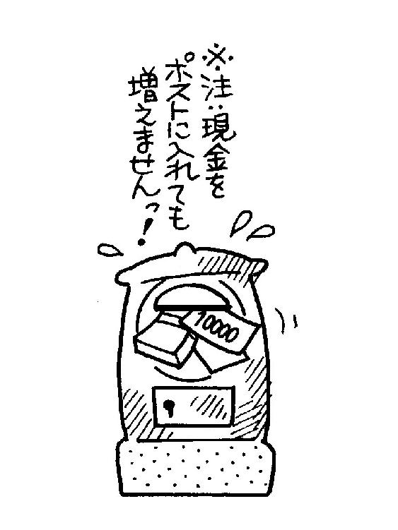
２ やっぱり基本は積立定期
●「まず１００万円」貯めるには？
「貯金なんてできたためしがないわ」とお嘆きのアナタ、「お金がある人はどんどん増えていく」ような気がしませんか？ そう、まとまったお金さえあれば、それを元手に投資や各種金融商品の活用といった利殖プランも立てられますが、それもなければお話になりません。
まずは１００万円でいいので、「まとまったお金」を作るところから始めたい。そのためのサクセス・プランをお教えしましょう。
■「自動積立」から始めよう
貯蓄成功の秘訣をその道のベテランたちにたずねれば、結局「毎月コツコツ、着実に」が最多回答。
というわけで、貯蓄を思い立ったら最初に始めたいのが、銀行・郵貯の「自動積立」です。これを設定しておくと、普通口座から毎月一回決められた日に、一定の金額を積立口座へ移してくれます。振替日を給料日の翌日に設定しておけば、給与天引きと同じ感覚で、「その金額ははじめからないもの」として生活するクセをつけられます。積立口座は、普通口座より利率が高く、しかも半年複利で利息が増えていくため、預入期間が長くなるほど有利になります。
一回の積立金額の設定条件は、銀行によって違いますが、四大メガバンクの場合、
◎東京三菱 １万円以上・１円単位
◎ＵＦＪ １万円以上・１円単位
◎みずほ ５０００円以上・１０００円単位
◎三井住友 １０００円以上・１円単位
と、自分の事情に合わせた金額設定が可能です。
■ボーナス併用で意外に早く目標達成
十分なボーナスをもらえるあなたなら、漠然と「気がついたら貯まってた」という積み立て方よりも、「○年で１００万円」とハッキリ目標金額と達成期間とを決めて、
ローン計画を立てるような感覚で、「ボーナス併用積立」計画を作ってみましょう。
例えば、月々たった１万円の積立でも、年２回のボーナスから44万円ずつ積み立てる設定にすれば、何と１年で１００万円達成です。スゴイ！ 「達成期間」「ボーナスから取れる額」「月々の積立額」、この３点のバランスをあなたなりに考えて設計してみて下さい。
■貯まったそばから「おまとめ」サービス
積み立てたものを積みっぱなしにしておかないのが、最近の積立口座のシステムです。各銀行が扱っている「自動積立定期」では、３カ月、６カ月、あるいは１年、２年、３年、といった単位を「おまとめサイクル」として設定し、その期間ごとに貯まった積立金額を、より利率の高い「スーパー定期」などの定期預金へと、自動的に振り替えてくれます。面倒見のいいサービスですね。
■勤務先の「財形貯蓄」は特典いっぱい
あなたの勤務先に、財形貯蓄制度があるなら、ラッキーです。何といっても、社内財形は、一般の金融機関の積立よりも高利回りになっているからです。給与天引きで知らず知らずのうちに貯金ができるという点では最も頼もしい制度でしょう。ただし、引き出し可能日が決められていたり、または申し込んでから数日後になるなど、急に入り用になったとき自由に引き出せないのが難点といえば難点ですが、だからこそ貯めやすいともいえます。
また、財形制度は「一般」「住宅」「年金」の３本立てとなっていて、このうち一般財形には預貯金と同様、利息に20％の課税がありますが、住宅財形と年金財形の場合は、両方合わせて５５０万円までが非課税枠とされているのです。
しかもこれ、「同時に５５０万円まで」という意味なので、若い時期にはマイホームめざして住宅財形に専念、住宅をゲットしたら年金財形にチェンジ、という具合に時期をずらせば、５５０万円の非課税枠を別々に２回使えることになります。
一般より有利な「持家融資」「教育融資」が利用できるのもメリットです。
さらに会社によっては、奨励金を積立額に加算してくれる制度を採用しているところもあります。
就職・転職を考えているあなたなら、こんなところも会社選びの重要ポイントとしてお忘れなく。
３ 「ペイオフ」って何だろう？
●「ペイオフ解禁」──で、何が変わったの？
２００２年４月、日本の民間金融機関の「ペイオフ解禁」となりましたが、それが預金者にとって何を意味するのか、よくわからないまま、という人は結構多いようです。『解禁』という言葉のマジックで、何か目新しいシステムでも利用できるようになるのかナ、といいことのように考えているあなた、あとで泣かないために本当の意味をお勉強しておきましょう。
■「ペイオフ」は、銀行があなたに責任を持てる範囲の限定
これまで日本では、「預金者保護法」のもとに、預金先の金融機関の経営が破たんしても、預金の全額が保護される決まりになっていました。
その「イザという時」に備えて、各金融機関（すべての銀行、信用金庫、信用組合、労働金庫）は強制的に「預金保険機構」に加入していて、破たん後の預金者への払い戻しに応じきれない分も、そこからまかなえることになっていました。これを「預金保険制度」といいます。
しかし、これでは金融機関の自己責任意識を薄れさせるとの批判もあって、１９９６年６月に、この「預金者保護法」が改正されました。アメリカ流の「ペイオフ」制度を導入することになったのです。
具体的にどういうことかといいますと、「破たんした金融機関に口座を持つ預金者一人につき１０００万円までの元本と利息は保証する、でも、それを超える分については、破たん金融機関の財務状況に応じて弁済金・配当金を支払うことで勘弁してくれ」という制度に変わるのです。
ただし預金者の不安に配慮して、この制度の施行は２００２年４月まで凍結されていました。それで、実際のスタートを「解禁」と呼ぶようになったのです。何だか、不安を抑えるためのマスコミの作戦のようですね。
しかも２００２年はまず定期預金のみについての適用で、普通預金については２００５年４月から、と再延長が決まりました。そうそう簡単には、話が進みません。
■「ペイオフ」に有効な、預け分けの法則
何しろ、大きな現金をプールしている企業や管理組合はこれからの対策に必死です。
もちろん個人にとっても、１０００万を超える財産の保護のためには、「ペイオフ」のルールをよく理解して、賢く「預け分け」することが必要です。
▼《ルール１》保護される単位は「１預金者１口座」
同じ銀行でも複数の支店に何冊も通帳を持っていて、それぞれが数百万円以下だから大丈夫、と思っているあなたはご注意。保護されるのは、あくまで１金融機関につき１人１０００万円。同一人のものと判断される通帳は、届出時に提出されているデータをもとに、「名寄せ」という統合作業が行われ、１つの口座としてまとめて扱われることになるのです。企業が複数の支店で別々に口座を作っている場合でも、１つの口座としてまとめられてしまいます。保証はお一人様１０００万円まで、が鉄則です。
よってこれからは、同じ銀行の預金合計額が１０００万円を超えないように「預け分け」しておく必要があります。
そこで気になるのは、別々に口座を持っていた銀行同士が合併した場合。旧銀行時代の２冊の通帳を持って行っても、やはり１口座として扱われるのでご注意を。
▼《ルール２》保護されるのは日本に本店のある金融機関のみ
１人１０００万円の保証の対象となるのは、前述の「預金保険機構」に加入している金融機関のみ。だから、外国銀行は対象外。
また、日本の金融機関が窓口でも、外貨預金は保護対象に含まれないので、注意してください。
ちなみに、預金保険機構に加入していない農林中金、農協、漁協、水産加工協同組合などの金融機関には、「農水産業協同組合貯金保険制度」という同様の制度があってこちらは保証を受けられるのでご安心を。
▼《ルール３》破たん後、保証額さえも引き出せない一時凍結期間がある
金融機関の破たん後すぐは、「資金援助方式」といって、合併や援助の引き受け先を探す期間が数日間はあります。それが確定してからペイオフが発動し、財務整理が始まります。
この、ペイオフが発動してから《ルール１》でお話しした「名寄せ」作業が終了するまでの期間は、口座は一時凍結状態となって引き出しも預け入れもできなくなってしまうのでご用心。
ただし凍結期間が長期となる場合、１口座60万円を限度に仮払いを受けることができます。
こうした不便を避けるためにも、日頃から格付け機関による評価、株価の動きなどをチェックし、より安全な金融機関への移し替えなどの自衛策も心がけましょう。
▼《ルール４》破たん前に亡くなっていた人の遺産口座はどうなる？
その場合は保護額が拡大されることがあります。また亡くなった人の通帳は、１人分として数えられます。ただし、その人が亡くなったのが、破たん前なのか、破たん後なのかで大きく異なるので注意してください。
破たん後であれば、亡くなった人の口座も１人１口座の法則がそのまま適用されて、１０００万円までの保証となります（もちろん、それを超える分もゼロになるわけではなく、破たん金融機関の財務事情に応じたお金が支払われるという点も同じです）。
ところが破たん前になくなっていた場合は、（相続人の数）×１０００万円までが保証されるので、ありがたいといえます。
■郵便局の振替口座が避難先？
第３章の「■『振替口座』なら限度額なし」の項目でご紹介した、預け入れ限度額なしという郵便局の振替口座。
法人でなく個人でも、一定の条件のもとに開設可能なので、この低金利時代、利息よりも安全第一、金庫代わりで十分、というあなたには、「ペイオフ」から避難するためのかしこい選択肢かも。特に集合住宅の修繕積立金など、億単位の共有財産を預かる立場にある人には、みんなが困らないための防衛策としてオススメです。このほか、遊んでいる現金は、国債に換えておく、という手もあります。国が発行する国債は、固定金利（１％程度）で償還期間（満期のこと）は10年物が中心。元本と金利が保証されているので、長期の定期預金で１０００万円を超える分は国債に回してもいいでしょう。
また不変の価値があるイメージで、近年「金」投資の人気が復活しているようですが、この運用は「ドル建て」となるため、円高リスクを背負っていることを忘れずに。
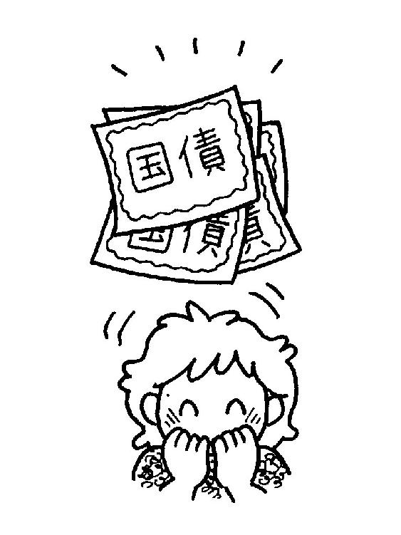
４ インターネットバンキング
●ネットバンクの魅力って何？
──「インターネットバンキング」という言葉、最近よく耳にしますね。ここ数年でずいぶん増えました。何がそんなに魅力なのでしょう。ネット専用バンクのほか、普通の銀行がネット上での取引をするもの、ネット上に支店を設けている場合など、種類はいろいろあるようですが......。
■金利の高いインターネットバンク
最近どんどん増えているインターネットバンキングは、実は金利が高め！ 理由はというと、窓口営業の銀行に比べ、人件費等経費が安くすむため、その分が預金金利にはね返ることになるからです。同じ銀行でもネット口座やネット支店なら、金利が２倍以上というところもあります。普段、銀行の低金利に泣かされている利用者にとっては、高金利設定はかなりウレシイ数字、何よりありがたい話ですね。最近はコンピューターからだけでなく、ケータイを使っての取引も可能になるなど、便利さの面でもかなりの充実を見せています。また、インターネット専用の金利の有利な定期預金の作成ができたり、ネット上で宝くじの購入もオーケー、さらには投資信託や外貨預金の購入も可能になるなど、サービス面もどんどん充実しています。
このようにインターネットバンキングは、かなりのスグレモノ。自宅にいながら安い手数料で振り込みや残高照会もできます。これもまた、かなりの魅力ではあります。
ところでここで心配なのが、不正悪用されるなどセキュリティの面ですが、最近は不正悪用された場合の保険がセットになった商品もあります。こうなるともう、いたれりつくせりという感じですね。
さて、インターネットバンキングを利用するにあたっては、サービス内容が各社それぞれ異なりますから、申し込む前に各銀行のホームページを十分にチェック、検討し、自分にとって使いやすいものを選ぶようにしましょう。
また、パスワードや暗証番号は自分で厳重に管理すること。さらに操作方法を何度も間違えると利用できなくなり、再度手続きが必要な場合もあるので、しっかり把握しておくことが大切です。
５ オイシサいっぱい「デパート友の会」
●ショッピングが趣味なら「デパート友の会」へ
買う・買わないはともかく、デパート歩きが大好き、というあなたなら、絶対見逃すとソンなのが、各デパートで運営されている「友の会」制度。
会員優待セールのハガキを送ってくれるのよね、ぐらいに考えていた無関心派のあなた、実はこれ、立派に財テクができるオイシイ制度なのです。
■何と年利８・３％の高利回り！
「友の会」の仕組みは、毎月一定額の積立をし、一年後（半年というコースもある）の満期時には、それまで積み立てた12カ月分プラス、もう１カ月分のボーナスが加えられた金額の「お買い物券」がもらえる、というもの。
これを貯蓄として計算すると、何と年利８・３％もの高利回り投資ということになるのです！ バブル時代の貯蓄型保険並みですね。預貯金の利回り０コンマ数％という超低金利時代に、これを見逃す手はありません。
積立額は、デパートによって違いますが、最も気軽な３０００円から、大口なところ５万円までの範囲で、各社とも数種類のコースを用意しています。５０００円コース、１万円コースなどが始めやすくて人気があるようです。
友の会制度を廃止したデパートもありますが、おなじみのものは次の通り。
○三越「三越友の会」
○高島屋「ローズサークル」
○伊勢丹「クローバーサークル」
○東武百貨店「クレソンサークル」
○東急百貨店「ファミリークラブ」
○阪急百貨店「阪急友の会」
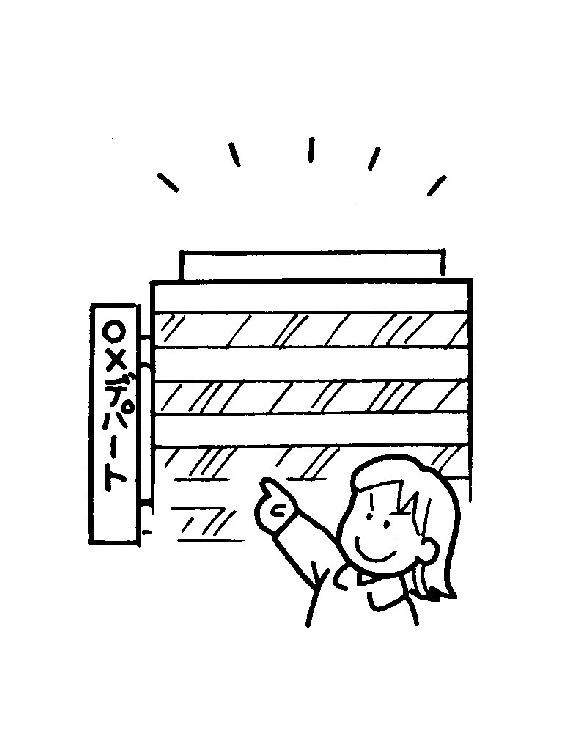
■こんなにある、お買物券の有効利用法
いくら高利回りでも、そのデパートでしか使えない「お買物券」は不便、とためらっているあなたに、それでも使える活用術をお教えしましょう。
まずは、必ずまとめ買いするとわかっている交際上の必需品──といえば、そうですね、お中元・お歳暮などは「ここで買う」とデパートを決めてお買物券を使えば、予算を大きく浮かすことができます。また、結婚式の引き出物など、予定の決まっているお祝い事のために積み立てれば、実質的な割引となります。
年間通して、あまりデパートでは買わないから、せっかくのお買物券を使いきれずに終わりそう、というあなたには、奥の手。金券ショップ（後掲参照）で売却しましょう。手数料は取られますが、支払った分はほぼムダにはなりません。ちょっとした貯金ができたことになりますね。
■「友の会」メンバーはポイントカードでも優遇
最近、あらゆるデパートや量販店、スーパーマーケットなどで出しているポイントカード。デパートのポイントカードは、ネーミングもオシャレで凝ったものが多いですよね。（例：西武「クラブオンカード」、東急「クラブキューポイント」、そごう「ミレニアムカード」）
デパート発行のポイントカードの場合、現金やクレジットでの決済だけでなく、お買物券での決済にもポイントが付けてもらえるので、二重のおトク感です。お気に入りの「マイ・デパート」を決めておくと、上手にお買物ができますね。
■うるおい生活の強い味方
節約も大切だけど、暮らしの折々に、ちょっとしたぜいたくが欲しい。そんなあなたにとっても、「友の会」の趣向を凝らしたメンバー優待特典はうれしいかも。
お誕生日プレゼントや、美術館招待、観劇招待など、少額の現金よりも夢が嬉しいという人向けのコースもあるのです。阪急百貨店友の会の「宝塚観劇コース」は有名ですね。関東では、西武「セゾンクラブキッズ」の東京ディズニーランドギフト券コースも。
まずはぜひ、デパートのサービスカウンターに問い合わせてみましょう。
６ 損をしないクレジットカード活用術
●あなたのライフスタイルに合ったカードを選んでますか？
今や国内で発行されているクレジットカードは数千種類ともいいます。私たちも、１人に１枚、どころかおサイフをのぞけば、友人・知人の義理で入ったカード、１度だけのサービスを受けるために入って使わないままのカードなどなど、余分なカードがダブついている人が多いでしょう。
どのカードを残し、どのカードを捨てるか？ あなたらしいカード選びのためのチェックポイントをお教えしましょう。
■現金で支払うよりもおトク？
ひと昔前は、金融機関やデパートでしか発行されていなかったクレジットカード。今では、あらゆる業種の店舗・サービス機関で競って発行されています。
以前は珍しかった「年会費無料」というのは、今では常識。バブルの頃のように、アメックスカードなど年会費の高いカードを持っていることがステイタスとされていた時代は終わりました。高級仕様の会員情報誌を送ることをやめて、「年会費はいらないからカードを持っていてくれるだけでいい」というように企業の姿勢も変わりました。それにつれて、クレジットカード独自の特典も増えています。
①化粧品量販店発行の場合
......現金払いよりもクレジット払いの方がお店のポイントカードへの加算が多い。
②レンタルメディアチェーン「ＴＳＵＴＡＹＡ」発行の場合
......クレジット払いだと、請求時に一括10％オフ。
③デパート発行の場合
......クレジット払いだと、決済時に一律５％オフ。
という具合に、後払いのクレジットのほうが優遇される、といった逆転現象があちこちで起きています。
年間を通してよく利用するお店が発行しているクレジットカードは、しっかり抑えておきたいものです。
■よく使う乗物によって選ぶという手もあり
あなたが年間を通して最も多額のお金を支払っている交通機関は何ですか？
①長距離の通勤定期を使ってる！ 旅行ももっぱら電車が中心という人
２００１年10月、画期的な改革がありました。「みどりの窓口」でクレジットカードが使えるようになったのです。それまでは現金でしか買えなかった定期券、同じように旅行代理店を通せばクレジット決済できるのにＪＲ窓口ではできなかった乗車券・特急券などもＯＫになりました。もちろん、ＪＲ発行の「びゅうカード」もクレジット機能付きに。毎月の定期券をこれで決済すれば、アッという間にポイントがたまってキャッシュバックや旅行券がゲットできます。他の電鉄発行のカードも同様です。
②出張で飛行機を使う機会が多い。帰省や旅行も飛行機派
年間搭乗回数の多いあなたなら、言わずと知れた「マイレージ」（航空券と引き換えられるポイント）を貯められる航空会社発行のカード、もしくはポイントをマイレージと交換できる、提携企業のカードがおススメです。新たにカードを作る前には、必ずチェックしましょう。
③通勤もレジャーも、移動はもっぱらマイカーで！ のドライバー派
石油会社発行のカードなら、利用額に応じてガソリン代が割り引かれたり（昭和シェル石油「Ｘカード」・出光興産「出光カード」・ジャパンエナジー「ＪＯＭＯカード」）、車検やタイヤ交換にマイルポイントがついてガソリン代にできる（コスモ石油「コスモカード」）、といったシステムもあり。
■「リボルビング払い」は高くつく
手数料が一切かからない一括払い（ボーナスも含む）はいいのですが、分割となると手数料がかかってしまいます。特に、実際の買物金額にかかわらず毎月１万円程度が引き落とされる「リボルビング払い」の場合、支払いを考えると一見ラクなようですが、年利は何と10％台となり、一般の買物ローンを組むよりずっと高い買物になってしまいます。最近は、通常のカードの他に、「リボルビング専用カード」を作ってほしいという勧誘が増えましたが、その手には乗らないほうが賢明でしょう。
７ お店の数だけポイントカード？
●つくるべきか、つくらざるべきか、それがモンダイだ
首都圏に住む人が持っているポイントカードの平均枚数は11枚にもなるといいます（カードメーカーのリコー調べ）。
実際、買物に行った先々で勧められて作ったポイントカードでおサイフは厚くなる一方。いっそ、つくらないほうがいいのかしら？ でもそれって損？
迷っているあなたは、ポイントカードを作る意味を再チェックしてみましょう。
■要はお得意様の優遇策
「まいど、ごひいきに」──昔ながらの小売商店の店主なら、すべてのお得意客の顔がわかっていて、さりげなく「おまけ」をつけたりできるわけですが、大型店・チェーン店ともなると、来るお客も不特定多数、接客するほうも大人数が時間交代で、となるので、せっかくのお得意様へも、特別サービスなどできるものではありません。すると、よそのお店に目移りされて、簡単に離れられてしまう心配がありますね。
ポイントカードは、その昔ながらのお得意客へのサービスを、カードを媒介にして実現したものだと思えばいいでしょう。よく利用してるから、サービスしてもらえる、そう考えれば、繰り返し使う可能性のあるお店のポイントカードは、とりあえずつくっておいたほうが、サービスを受けられる機会が増えるというものです。
サービスの内容は、今では店の商品現物や景品というパターンは珍しくなり、ほとんどがキャッシュバック方式といえます。業種によって還元率さまざまですが、最高といえるのが８～10％になる家電量販店。次いで外食チェーンも、年間利用額に応じて還元率がアップするシステムで５～10％。飲み会の幹事を引き受ける予定のある人にはオススメです。
ポイント還元のほか、特別セールなどのお買い得情報やサービスクーポンをいち早く送ってくれるといった、情報メリットもあります。年に数回、ポイント還元率が高くなる「ポイントアップ期間」を設けるお店もあります。情報チェックはしっかり、おこたりなきよう！
８ 金券ショップを味方につけよう
●金券活用上手はやりくり上手
「少しでも臨時収入があったらな」「少しでも出費を抑えたいな」毎月のやりくりに奮闘中のそんなあなたに、その両方を叶えてくれる耳寄りな情報。お宅から最寄りの金券ショップを探しましょう。コンサートのディスカウント・チケットを探す時ぐらいしか行かない、というあなたは、あまりにもったいない。使い始めたらやみつきになりそうな、金券活用テクニックを伝授します。
■眠っている金券がピンチヒッターに
お宅のあちこちの引き出しに、金券類は眠っていませんか？ わざわざ買うというよりも、いただき物やサービス品としてもらうことが多い金券。デパート商品券、図書券、文具券、ビール券、おこめ券、アイスクリーム券、などなど種類も豊富ですが、「それぞれ使えるお店が限られているから」としまっておくなら、金券ショップでさっさと現金化してしまいましょう。
手数料は取られるものの、人気の高い全国デパート共通券なら額面の95％程度、店舗限定のお買物券でも90％程度の価格で引き取ってくれます。もともといただき物なら、それでもありがたい、懐がさびしい時の臨時収入になってくれます。
いかにもお金の代わりといえそうな商品券類だけでなく、新聞屋さんがサービスで置いていった、何てことない遊園地の入場券や芝居の招待券、といったものも買い取ってもらえるものもあります。チケット類も遠慮せずに持って行ってみましょう。
■定価で買うのが馬鹿らしくなる!?
さてこの金券ショップ、お買物やレジャーに行く前に必ず立ち寄りたい。
なぜって、先にお話しした各種商品券やチケットをはじめ、ロードショーの鑑賞券、ＪＲ乗車券、ハイウェイ券などが、ズラリとディスカウント価格で売られているのですから！ 定価で買いに行く前に、ここに希望のチケット類が出ていないかをぜひ、チェックしてみてください。
■デパートの駐車場料金を払わずに済ます裏ワザ
デパートの場合、３０００円、５０００円などの一定額以上の買い物をすれば駐車料金は無料、ただしそれ未満なら１０００円以上の高い駐車料金を取られてしまいます。でもそのためだけにいらない買い物をするのなら、必要買い物額だけの商品券を買ってしまいましょう。そして、帰りがけにでも金券ショップで現金に戻します。わずかな手数料分の負担だけで、高い駐車料金が浮いてしまいます。
■テレカで電話料金が払えるって？
テレホンカードが、挨拶代わりに使われていた時代がありましたね。お店や会社の宣伝、お祝い返し、名刺の代用品などなど、途切れることなくたまっていったテレカ。また、ごひいきのアイドル写真入りや、凝ったデザインのものなど、使うためでなくビジュアルコレクションとしても珍重されました。
ところが、街角の公衆電話がすっかり携帯電話に取って代わられてしまった今、使う当てのなくなったテレカが、ご家庭で何枚も眠っていませんか？
金券ショップで売ろうかな、という人もいるでしょう。確かに売れますが、買取価格は５００円のテレカが３７５円、と率は低め。
それよりも、ＮＴＴの窓口にテレカを持って行けば、50円の手数料を差し引いたテレカの額面で、お宅の固定電話の通話料金を支払えるのをご存知ですか？
うちは自動引き落としにしてるからダメだ、という人にも朗報。テレカの金額分を前払いしたということで、翌月の請求からその分を差し引いてくれるというからうれしい。ただし、支払えるのはテレカだけに通話料金に限定。ほとんど通話料を請求されていない人が、基本料金の支払いに当てようとしても、それはできません。
■ちょっと意外なテレカの使い道
面白いのが、ビジネスホテルの全国チェーンである「東横イン」では、宿泊料金を、テレカをはじめ、図書券、商品券などの各種金券で支払うことができるのです。しかも手数料ナシ、お金と同じように額面通りで扱ってくれます。出張する機会のある人は、要チェックです。さあ、今日から、自宅で「宝探し」をしてみませんか？
９ おトクな預け先としての「投資」
●「損をしそう」と決めつけてない？
この章の最後にチェックしておきたいのが、「投資」という選択肢。預貯金と違って、リスクがあるというイメージから、堅実派のあなたは、避けて通ってきたかも。でも、投資の中にも「冒険型」と「堅実型」とがあるのです。ここでちょっと、お勉強してみましょう。
■あなた流のポートフォリオを設計しよう
財産を賢く殖やそうと思ったら、全額を一カ所にどーんと預けておくだけではダメ。特にこの超低金利時代では、放っておいたら倍になる、というような貯蓄商品はもう存在しないわけですから、資金を小分けにして、一部は預貯金、一部は投資商品、という具合に複数の運用先を組み合わせる「ポートフォリオ」（金融商品の組み合わせプランニング）という考え方が必要です。
設計のポイントは、①絶対これだけは崩さないという「安全性」、②すぐ引き出せる分を確保する「流動性」、③安全よりも高い利益をめざす「収益性」といった三種類の目的別に金融商品を選び、資金を配分すること。
具体的には、①は定期性の預貯金や財形貯蓄、年金積立、国債など、②は普通預金など、③は証券会社で扱っている投資信託や株などの有価証券、といったところ。
③の中でも安全性重視の「ローリスク・ローリターン」型、収益性重視の「ハイリスク・ハイリターン」型、またその中間タイプなど、さまざまな商品があるので、自分でよく納得して選ぶことがたいせつ。
ローリスク・ローリターン型の代表は、公社債投信や、毎月コツコツの投信積立。
株といえば、ハイリスク・ハイリターンの典型と思えますが、毎月１万円から指定銘柄を買える分だけ買っていくというコツコツ感覚の「るいとう」という商品もあり、小口でも分配金や株主優待が受けられるので、オイシイかも。売買のタイミングや上手な運用のコツなど、詳しくは第６章～第７章を参照してください。
10 楽しみながら貯めよう１００万円！
●５００円玉で１００万円!?
５００円玉貯金がひそかなブームになっているらしい。ゲーム感覚で楽しみながら貯められるというのが魅力。「一度おサイフに入ったら絶対使わない」など、自分自身との約束事をしっかり決めて、コツコツ貯めるのがコツらしい......。
ほかにもいろんな貯め方を紹介します。
■コインも積もれば山となる
５００円玉貯金とは、買い物のおつりで発生した５００円玉を、使わずに貯金するというもの。５００円ずつですから、貯まるのはゆっくりですが、あわてずあせらずマイペースで貯められるというのがいいようです。自分の性格に合わせて、その日、おサイフに５００円玉が３枚あったら、迷わず全部貯金という人もいれば、無理すると私は続かないからと、１枚だけ貯金箱へ入れるというやりかたもアリ。ただし大事なのは、「目標を持って貯める」という姿勢。「何となく」では続かないようです。「旅行費用を貯める」「毎月２万円が目標」、そして「１００万円貯める！」まで頑張ってみましょう。
■副収入で貯める
また、副収入のある人が、その分は絶対使わず貯金するというのも、なかなかいい方法。アフターファイブでアルバイトをしている人、お休みの土・日で副収入を得ている人はずいぶん増えましたが、その収入を上手に貯蓄に回している人も多いのです。こちらもやはりしっかり貯めるコツは、目標を持つことですが、加えて、副収入分は、はじめから「ないもの」として生活をしている人が、貯められる人のようです。
■バカにできない「つもり貯金」
ご存じのように、「したつもり」「食べたつもり」「買ったつもり」になって、その分を貯蓄に回すということです。「タバコをやめたが吸い続けているつもりで」、「毎週末食事に行ったつもりで」「洋服を買ったつもりで」その分をしっかり貯金するわけです。意志が強くないとなかなか続かないかもしれませんが、目標を立ててがんばればだいじょうぶ。
とまあ、いろいろな貯金のしかた、ご紹介してみました。「これなら私にもできそう」というものがあったら、ぜひチャレンジしてみて！
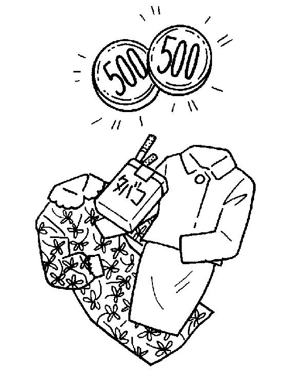
第４章
●よく見るとムダがいっぱい
自分のライフステージに合わせて見直そう！
保険料に住宅ローン
１ 見直そう「生命保険」
●あなたにピッタリの保険は？
まさかのときのためにあるのが「保険」。それでも一人ひとりライフスタイルは違うし、それは言葉をかえればそれぞれリスクが違うということ。本人が亡くなったとき、あるいは病気やケガで入院したとき、それぞれの経済的リスクや不安に対しての保障が「保険」です。この２点をもう一度、じっくり考えてみましょう。
■自分のライフスタイルに合わせて
未来のことなんて、誰にも分からない。人生の先は読めないのだ──。
今日元気で会社に行った人も、明日も元気で出社できるとは限らない。いや、無事に帰ってこられるかどうかも......と言ったらおどかしすぎでしょうか。いやいや、実際、生きていくことは危険と背中合わせなのです。
さて、「保険」は万が一に備え、まさかのときの経済的負担を和らげるために入るもの。予期せぬ事故などで本人が死亡した、あるいは病気やケガで入院、などということになったとき、家族や本人の大きな経済的リスクを軽減してくれるのです。我々の人生は年齢によって、あるいは結婚した、子供ができたというように状況が変わっていきます。要するに、年齢や状況によってライフスタイルが変わっていくわけです。死亡保障が一番必要なのは結婚して子供が生まれたときでしょうし、教育の面で一番お金がかかる、子供が中・高・大学生などというときに働き手が大病をわずらえば、家計はたいへんなことになってしまいます。また、子供が成長して巣立ってしまえばホッと一安心と思いきや、今度は老後の生活保障が必要になります。つまり大きく分けて、「死亡」・「医療」・「老後」、３つの保障を考える必要があるわけです。その他、マイホームを建てたとき、脱サラしたときなど、変わっていくライフスタイルに合わせて、その都度、保険も見直しが必要ということになります。
■「保険料」は必要コストと割り切る
こう考えてくると、やはり保険料は必要コスト。ならば「掛け捨ては損」という考え方を改めるべき。「掛け捨てではもったいような気がする。貯蓄も考えて......」という人は少なくないが、予定利率（積立に回される部分の運用の最低保障利回り＝契約の終了時まで適用される）が最悪の今、「貯蓄までも」と欲張ると、結局保険料が高くなってしまいます。ここはやはり、保険は保険、貯蓄は貯蓄と分けて考えたほうがよさそうです。そしてまた、保険が「安心を買うための必要コスト」とするならば、当然、収入とのバランスも考えるべきでしょう。あれこれと保障を付けすぎて、保険料を払うので、せいいっぱい、貯蓄どころではない、なんてことになっては意味がありません。
■忘れちゃいけない「公的年金」
ここで、「公的年金」についても考えてみましょう。一家の大黒柱にもしものことがあったときには、公的年金から、子供が18歳になるまで受け取り可能な「遺族年金」が支払われます。自営業者には年間約１０３万円が「遺族基礎年金」として支払われますが、これは子供の数によって加算されます。
また、会社員なら「遺族厚生年金」、公務員なら「遺族共済年金」が追加されることになります。これら公的年金でたりない部分を保険で補うと考えればよいわけです。
ですから現在の保険料がかなり負担になるようなら、減額を考えてみましょう。補償額を減額し、毎月の保険料を安くするわけです。また、保障の面で大差ないのなら、いろいろ比較して、少しでも安い商品に乗り換えてしまうことも検討してみましょう。ただし今の保険を解約、新たに加入するとなると、年齢が上がってしまった分、保険料も高くなったりしますので、よく検討してから。また、かなり長い間加入していたものでなければ、それまで支払ってきた額を考えると、びっくりするほど少ない額しか戻ってきません。ここはその保険を活かして、別の形に組み替えてもらうなどするといいでしょう。
どうしても解約、という場合は、古い保険の解約は、新しい保険が有効になってからにします。
もちろん保障の削りすぎにも注意しなければなりません。責任世代に「もしものこと」があった際の保障不足は、あとに残った家族を泣かせることにもなりかねません。保険はあくまで「万が一のリスクに備える」ためのものなのですから。
さらに最近は、インターネットで加入可能な商品もあります。こちらは保険会社が人件費などの経費を抑えられるため、その分、保険料が安く設定されていたりしますから、検討の価値あり、です。
２ 不要な保障を徹底チェック！
●特約カットなどで安くする工夫を
「生命保険」においては、やはり、今、入っている保険が本当に自分にピッタリのものかどうかを見極めることが必要でしょう。本人のリスクにあった、死亡保障、あるいは入院保障になっているかどうかをもう一度、徹底的にチェックしてみることをおすすめします。必要な保障以外の特約はカットすれば、保険料を今よりもっと安くできるはずです。
保険には大きく分けて、「保障重視型」と「貯蓄重視型」があります。「生命保険」「医療保険」「終身保険」などは「保障重視型」、「養老保険」「個人年金保険」などは「貯蓄重視型」となります。しかし前項にも書いたとおり、最近は不況のせいで「貯蓄重視型」はすっかり魅力を失ってしまいました。
この不景気の世の中、運用の悪化で、予定の配当に達しないとか、保険料が値上げされたなど、腹の立つことばかりです。「今、生命保険に入るなんてバカバカしい」と思っている人が大勢いるというのも、もっともな話ではあります。実際、生命保険を長期固定の金利商品と考えるなら、この低金利時代に加入するのは考えものでしょう。しかし、いざというときには、やはり保険が頼りになるわけで、それなら少しでもかしこく無駄なく加入することを考える必要があります。
■死亡保障を「減額」する！
生命保険に加入するにあたって一番たいせつなことは、いったいいくらの保障があればいいのか、ということです。
「俺は独身だから、死亡保障なんかより、医療保障のほうがたいせつ」「女房も若いし子供もいないから、葬式代だけでいい」「子供が３人いるから、ウン千万くらいないと安心できない」といったように、人それぞれ、「いくらの保障が必要？」という数字は違ってきます。現在のライフスタイルにもう一度照らし合わせてみて、死亡保障額が大き過ぎると思ったら、保障額を減らす「減額」をおすすめします。これは現在の保障の一部を中途解約するということ。当然毎月の保険料が軽減されることになります。現在の補償額を減額することで、10年後でも数十万、最終的に30年後を見ると２００万～３００万円も保険料の支払額が違ってきたりします。これだけ違えば、その分のお金をほかに回すことで、もっと有効に使えるということになります。
ただし、一定の金額以下の減額はダメ！ という保険会社もあるので、営業員などによく相談してみてください。
■必要のない「特約」はカット
「主契約」の保険本体とは別に付ける保障が「特約」です。その中には死亡保障以外の、いろいろな特約がついていたりします。各保険会社でさまざまですが、主なものは次のようなものでしょう。
・「入院特約」......病気で入院した際に、入院給付金が出る。
・「通院特約」......退院後、通院が必要な際に出る。
・「成人病特約」......成人病での入院の際、入院給付金に上乗せして給付される。
・「特定疾病定期保険特約」......成人病など特定の病気になった際に出る。
・「定期保険特約」......一定期間の死亡保険金をプラスする特約。
その他、保険会社によって、本当にいろいろあります。セット商品になっていて外せない場合もありますが、基本的に必要・不必要を選べるので、再検討して外せるものはカットしてしまいましょう。あれもこれもと欲張っては保険料がかさんで、使うかどうかも分からない（できれば使わずに済ませたい）保険料の支払いのために、必死に働いたり節約したりということになります。そのせいで体をこわしたりなんてことになったら、まったくもって本末転倒な話になってしまいます。一定期間の死亡保険金が上乗せになる「定期保険特約」、ガンや心筋梗塞、脳卒中になったとき一時金が出る「特定疾病定期保険特約」あたりは、外してもよさそうな「特約」。これらを外すのとそのまま払い続けるのでは、最終的に数百万円もの差が出ます。やはり再考の余地アリ、でしょう。
■医療保障はどうなっている？
右ページの「特約」の項でも紹介しましたが、確かに突然の病気やケガで入院したなどというときに頼りになるのが「医療保障」です。一家の大黒柱に寝込まれてしまったら......そう考えるだけでも「ぞっ」としますね。受験生の子供がいる、家のローンがほとんど残っている、なんていう場合は特にです。しかし「医療保障」もまた、保険料と保障内容を再検討してみる必要があります。本当に必要な保障だけにすることで、保険料を引き下げることができるからです。
基本となる公的な医療保険で間に合うことも多いので、あれもこれもと欲張るより、それぞれの特徴と保障内容を十分に比較・検討して、自分にあったものを選ぶようにしましょう。
病気やケガで、まず保障の基礎となるのが「健康保険」。サラリーマンや公務員、自営業者が公的健康保険に入っていれば、自分で負担する医療費は、かかった分の３割です。かなり軽減されますが、それでも長期入院ともなると、たいへんな金額になることも。そこで医療費の自己負担額が一定額を超えたとき、加入されている健康保険に申請すると、超えた分の医療費が高額療養費として支給される制度があります。それが「高額療養費制度」です。この制度による自己負担額は一般７万２３００円＋（医療費－24万１０００円）×１％。（ただし上位所得者は13万９８００円、低所得者＝非課税世帯は３万５４００円と、基本となる数字やマイナス額が違ってきます）。例えば１カ月間に入院などで50万円の医療費がかかったとします。その際の自己負担額は７万２３００円＋（50万円－24万１０００円）×１％＝７万４８９０円。
ただし、差額ベッド代や食事療養費などは全額自己負担となります。
また、社会保険に加入している人、つまりサラリーマンなら、有給休暇を使って休むこともできますし、その分をオーバーしたら「疾病手当金」がもらえます。給料の60％が保障され、同じ病気でも１カ月ごとに申請を行えば、最長１年６カ月支給されるなど、福利厚生制度が充実しています。
貯蓄の乏しい家庭ほど医療保障は高くすべきといいますが、職場の保障がしっかりしているのなら、そこまで高い保障を付ける必要はないということになります。
■学資・年金保険は貯蓄になる？
「学資保険」「個人年金保険」「養老保険」などは、貯蓄型の保険と呼ばれていますが、果たして貯蓄になっているのでしょうか。払い込んだ保険利用の総額よりずっと少ない元本割れというパターンも珍しくないかも。そんなときは思い切って解約してもいいでしょう。繰り返し書きますが、予定利率が低い貯蓄型の保険を払い続けても、プラス分はいくらもなかったり、いろいろな特約が付いていたりするとマイナスになることだってあります。たいした貯蓄になりそうもなければ、貯蓄は貯蓄、別に積み立てたほうがよいといえます。
また、一応貯蓄にはなっているが、保険料がかなりの負担になっているときは、「払済」を検討してみましょう。「払済」とは、生命保険料の払い込みを中止しますが、解約はせず、その時点までに蓄積された解約返戻金（＝責任準備金）をもとに、保障額が少ない保険に変更することをいいます。この場合、保険期間は変更されずに、加入していた保険と同種の保険もしくは養老保険に変更となります。その際、もとの保険契約は消滅し、特約の保障はなくなってしまうので注意してください。例えば医療保障を特約で付けていた場合、別の医療保険に入ってから、「払済」にします。また解約返戻金が少額の場合や保険の種類によっては変更できない場合もありますから、いずれにしても、事前に保険会社に相談・確認をするようにしましょう。
■保険料を一括払いする
「一括払い」とは、月払保険料の整数倍の金額をまとめて払い込むこと。そうすることにより、一定の割合で保険料が割り引かれます。
例えば半年払保険料、年払保険料のまとめ払いは「前納」といいますが、月払いより、半年前納なら１％以上、１年分なら２％以上割り引かれる場合もあります。そうなると、銀行に預けたときの金利以上になりますから、一括払いのほうがおトクということになります（「一時払い」は、契約締結時に、全保険期間に対する保険料を全額払い込むこと）。
もちろんこれは、貯蓄型保険に限りません。
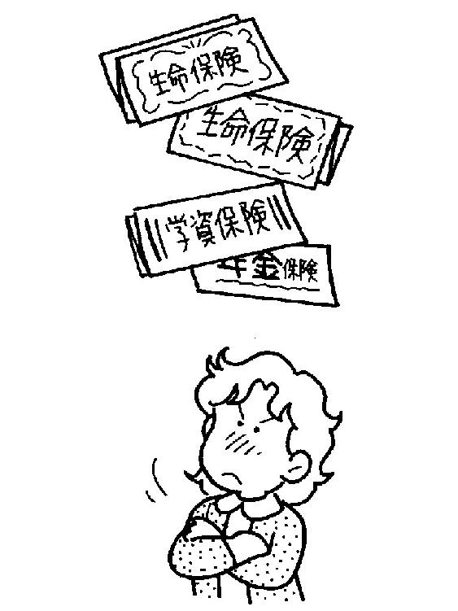
３ 独身者の保険
●もし、あなたが独身の場合のお得な保険
あなたが学校を卒業し新入社員として会社へ入る、あるいは新たな職場に再就職する、なんてことになると、早速保険の営業員さんがやってきて、あれこれとパンフレットを広げて説明してくれる。でも、どれがいいのか、細かな補償について、まるでわからない......。
■日額５０００円程度の補償が目安
扶養家族がいない独身者には、高額な「死亡保険金」は不要。むしろ病気やケガなどに備えるほうがいいでしょう。保険の営業員などがいきなりすすめてくるのは、ほとんどが死亡保障が２、３千万円の高額な定期付き終身保険。この手の商品は、まず入る必要なし。
また、医療費の自己負担が２割から３割に上がったからといって、医療保険の保険金額を１・５倍にしなければならないかといったら、そんなことはない。公的な健康保険が適用される治療なら、前項の「高額療養費制度」もあります。１日、２、３千円の保証が得られれば足りるはず。ただし、実際の入院には健康保険ではまかなえない費用も発生するので、ある程度の上乗せは必要でしょう。それでも若いサラリーマンの独身者なら、日額５０００円程度の準備で大丈夫でしょう。
保険は万が一のときのためのもの。自分の人生、どのようなリスクが考えられるか、そしてそのリスクの発生確率などをよく検討すれば、おのずと必要な保障は見えてくるはずです。
また、年配で独身の人は、「貯蓄型」のものをすすめられたりもするでしょう。事実、バブルの高金利時代には、養老保険などの利回りが預貯金の利率を大きく上回り、保険に貯蓄を求めた時代もありました。その頃の考えのままの人は、その考えを改める必要があります。これも繰り返し言いますが、保険は本来、あるリスクに対する保障を得るための必要経費。ましてやこんな不景気な現代に、保険に貯蓄性を求める考え方はナンセンスといえるでしょう。
４ 「自動車保険」を見直す
●「自賠責」だけで足りますか？
自動車保険は、万一のことを考えて任意保険にも加入しておくべきでしょう。車を持つなら、車に乗るなら、自動車保険は不可欠。ところが、自賠責保険に関しては加入が義務付けられていますが、任意の保険に加入している人は、約70％。残りの30％の人は未加入といいます。そして未加入の人にその理由をたずねると、やはり「高いから」、という声が圧倒的。
■内容をしっかり把握しておきたい自動車保険
実際に事故を起こしてしまうと、責任に応じて損害を負担しますが、何千万もの損害額になることもあります。あなたがもしその立場になったとき、すべての預貯金を解約して......足りるでしょうか。こう考えると、やはり自動車保険は必要です。ならば、やはり少しでも安い保険を探したい。でも、ちょっと待ってください。自動車保険の場合は特に、安さばかりに目を奪われていてはいけません。保険の内容をしっかり把握していないと思わぬ賠償責任を負わされてしまうことにもなりかねないからです。事故を起こしてしまったときの対応や、どの程度まで幅広い保障があるか、付随するサービス（24時間対応その他）についても、ぜひチェックしたいもの。安かろう悪かろうでは、特に保険の場合、泣くに泣けません。それでも低価格が企業努力によるものであるなら、契約者にとって、こんなにうれしいことはありません。
また「安全運転なら、最大○％お得！」といったコマーシャルに飛びついて、見積もりを出してもらったら意外に高くなってしまったという声もよく聞きます。どうしてそうなるのかというと、こうした保険は「リスク細分型保険」といって、個々の契約者のさまざまな条件をもとに、保険料が決められるからです。年齢・居住地域・運転歴・性別などが条件となります。あなたが事故率の高い年齢だったり、事故率の高い地域に住んでいたりすると、保険料は高く設定されてしまいます。もちろん逆なら、保険料も割安になりますが──。
どんな要素がリスクになるのかは各社で異なりますから、それぞれの見積もりを比較してみることが大切。また、本人以外の運転者、年間走行距離なども、要素として考えられる場合が多いようです。いずれにしてもお得なのが「優良ドライバー」。もしあなたが「優良等級（16等級以上）」なら、ここで新たに見積もりを取るメリットはありそうです。
■ここでもう一度見積もりを取ってみよう
さて、それでは早速電話などで見積もりを取ってみようという際に、「えっ？ えっ？」と、とまどってしまうことがあります。「車の形式」にはじまって、「運転免許取得日は？」「搭乗者障害の金額は？」「運転者家族限定の有無は？」などといきなり聞かれても、スッと答えられないこともあるからです。そこで「免許証」はもちろん、「車検証」と「保険証券」は、手元に準備しておきましょう。またインターネットでは、さまざまな会社の自動車保険の見積もりを一括して、無料で請求できるページもあります。各社の保険料はもちろん、補償プランや事故対応などの徹底比較ができます。依頼後数日で、メールやファックス、郵送など、希望する手段で見積もりが届きます。
自動車保険の保険料を再検討してみたいというときに、最も便利です。
実際に契約する際にも、インターネットで契約すると数％割引される商品もあります。また、同じ契約者が２台以上契約すると、２台目の車の保険料が割引になるなどのサービスもあったりします。
■「人身障害補償保険」
「人身障害補償保険」は自動車事故で死亡したり、後遺障害やケガを負った場合に、過失割合にかかわりなく保険金が支払われる保険です。つまり、これまでは交通事故の被害者となったあなた自身にも過失があるとみなされたときには、過失比率、つまりあなたがどれくらい悪かったのかに応じて加害者からの賠償金が減額されていました。また、過失割合について当事者同士でもめると、それが解決するまでは保険金を受け取れませんでした。その過失分をすぐにカバーしてくれるというものです。その事故について、どちらがどのくらい責任があるのかといったことは後回しにして、加入するときに決めた契約金額の範囲内で、保険会社が損害の認定をすると、入院費などをすぐに支払ってもらえます。多少保険料が高くなっても、検討の価値のある商品だと思われます。
５ 「火災保険」を見直す
●「地震・雷・火事・親父」とは、よく言ったもの
火事はホントに恐ろしいものですね。財産が何もかも、家ごと全部燃えてなくなってしまうのですから。自分の持ち家でも、あるいは賃貸住宅に住んでいる人も、ほとんどの家庭が火災保険に入っていると思いますが、いざというときに頼りになるのは、やはり保険でしょう。
■保険金が満額支払われない場合がある？
火災保険に加入していれば、いざというときには必ず保険金が満額支払われると思っている人もいるようですが、そうとは限りません。「えっ」と驚く人もいるかもしれませんが、火災保険は、損害を受けた建物や家財の評価額を超えた分は、支払われないことになっているのです。
具体的にどういうことかといいますと、保険金額３０００万円の火災保険に加入していて、２０００万円で買った家が火事で焼けてしまったとき、支払われるのは最大２０００万円ということになります。そしてまた逆の場合も考えられますね。新築した３０００万円の価値のある家が不幸にも全焼してしまったが、２０００万円の保険にしか入っていなかった場合、もちろん２０００万円しか支払われないわけです。ケチケチしすぎも考えもの。というわけで、「保険金額＝評価額」とするのが、火災保険に加入する際の大前提ということになります。
■火災保険料が引き上げられる
「超」低金利継続による弊害として生損保会社は契約時に契約者に約束した運用利率（予定利率）が継続できなくなっています。そこで大手損保会社は、破たんの危機防止策として予定利率の引き下げを行うことができるという当該法改正を受けて、２００４年４月以降の新規契約分よりマンションにかける火災保険の保険料引き上げを発表しました。
住宅金融公庫では、火災保険は強制加入のため、かつ借入金の全額を返済するまでは一般の火災保険を契約することができませんから、加入者にしてみると値上げを回避することは不可能ということです。なお、民間金融機関は独自の規定を設けており、民間銀行ではほとんどが任意加入となっています。
■火災保険を見直すいい機会かも？
引き上げの対象はあくまで新規契約者ですから、既契約者は関係ありません。それに住宅ローンの借入申込み時に全期間分の保険料を一括で前納しているはずです（分割払いもあります）。しかし、加入したのがかなり以前だったなら、これを機会に保険内容を見直してもいいかもしれません。
▼時価評価から「新価保険」への契約変更
住宅金融公庫の特約火災保険を利用の場合、保険金額（契約金額）を建物の時価評価（時価額）によって決めていましたが、保険契約期間中でも「新価保険（価格協定保険の場合には再調達価格）」に変更できるようになりました。そこで万一の場合を考えて見直してみてはいかがでしょう。従来の「時価額」とは、同等のものを再度建て直す際に必要な金額から、何年も使ってきた分を差し引いて計算した金額で、消耗による目減りや昨今のデフレ下においては取得時にくらべ評価額はかなり下がっているはずです。これに対して「再調達価格」は、同等のものを新たに建築、あるいは購入するために必要な金額のこと。火災などで建物が燃えてしまっても、時価から再調達価格へと評価方法を変えることで、保険金によって新たに同等の建物を建て直すことが可能となるわけです（再調達価格いっぱいに保険金がかかっている場合）。
▼繰上げ返済などでローンを完済した場合
ローンの返済が終了した後も保険契約が存続している限り、火災保険は満期日まで効力が有効です。また住宅金融公庫の場合、ローンが残っている間は前述のように一般の火災保険への加入はできませんが、完済後は従前の保険をそのまま継続してもよし、保険金額や保険期間を見直すもよし、また、別の保険に再加入することも可能となります。
６ 「住宅ローン」をチェックする
●低金利時代もそろそろ終わり？
以前は住宅ローンといえば、住宅金融公庫、あるいは年金などの公的融資が中心でした。それが今は、低金利時代を経て、またまた長期金利が上昇中。金利が上がれば、当然のことながら、住宅購入の資金もよけいに必要になります。今から家を買う人にとっては、どんなローンを選ぶか、あるいはどんな返し方をしていけばいいのか、ここが思案のしどころのようです。
■30年先の金利なんて読めない！
さて、これまでは金利の上昇局面では固定金利、金利の下降局面では変動金利がよいといわれてきました。そんな時代に公庫などの長期固定金利が有利とされてきたのは、「今後、金利は上昇する」という前提があったからです。
しかし、現在の日本経済はデフレスパイラルから抜け出せず、株価も低迷を続け、未だに不良債権処理に追われています。金利を上げればいいという考え方もあるでしょうが、そんなことをすると借金を抱えている中小企業や個人が、共倒れになりかねません。ゼロ金利政策が継続されているその理由はこの点にあります。
ただし、最近になって、しばらく続いた低金利時代も、そろそろ終わりを告げそう、という気配も見え始めています。さらに国債の格下げやインフレターゲットの設定などで、急激に金利が上昇する「ハイパーインフレ」（短期間で急激に進行するインフレ）の懸念も、一部ではささやかれています。
このように、まるで先の見通しが立たない今、30年先の住宅ローンの金利を決めることはあまりにもリスクが大き過ぎるという考え方もあります。
■住宅金融公庫はだいじょうぶ？
公庫は２００６年度末に廃止される予定ですが、それでも現段階では公庫など公的住宅ローンを第一に考えるべきでしょう。
公庫の場合、金利も低いし返済終了時まで金利が確定している点が何より安心です。公庫は２段階固定金利ですが、当初10年間の金利が低く設定されているのもうれしいですね。また、公庫の証券化支援事業を活用し、民間の金融機関が販売する「新型ローン」も、利用したいところ。こちらも長期固定金利で借りることができるローンです。一括して５０００万円まで借りられますから、金利の違う複数の融資を組み合わせる公庫のような面倒さがありません。さらにローン保証料はいりませんし、繰り上げ返済の手数料も無料です。
■民間ローンは金利動向を読んで
さて、金利が上昇傾向にあるときは長期固定を選ぶほうが有利ですが、金利がいったん上がったといっても、まだしばらくは低金利の世の中だろうと考えるならば、民間の金融機関もぜひ視野にいれるべき。なにしろ今後金利の動き方によって、返済総額が何百万円も違ってくるのですから、じっくり考えて選びましょう。
もちろん金利が同じでも返済期間を短くすれば、同様に返済総額もかなり違ってきます。35年返済を25年にしたら、何百万円という単位で違ってきたりということもありますから、共働き家庭など現時点で収入に余裕があれば、考えてみてもよさそうですね。
■デフレ時代は繰り上げ返済
住宅ローンの借入金は１０００万円、２０００万円という金額になりますし、加えて金利がかかります。では、銀行の金利はというと、定期預金ですら０・１％以下。銀行に預けて貯金するよりも、どんどんローンを返済していったほうがはるかにお得、ということになります。
インフレの世の中では住宅そのものも値上がりしていきますし、物価も上昇しますが給料も上がっていくため、大きな借金をしても返済はそれほど苦しくはならないはずです。ところが今のようなデフレの世の中では、せっかく借金をして買ったのに、資産（この場合は家）の価値は下がる一方、おまけに給料はほとんど上がらずという泣くに泣けない状態です。貯金をしても低金利なので利息は限りなくゼロに近い！ となれば誰が考えてもマイナス資産を減らすため、やはりせっせとローン返済に力を入れるべきでしょう。
実際繰り上げ返済すると、金利や返済期間、借り入れ額によって違いますが、１００万円以上も節約できる場合もあります。
■「頭金」など、住宅購入の際にかかるお金
マイホーム購入の際にまず必要なのは、「頭金」。一般的に２割程度は準備したいといわれています。頭金が十分でなければローンで組む分、つまり借入金が増えてしまい、結局利息分が増えてしまうからです。がんばって頭金を増やせば、それだけあとが楽になるというわけです。２００万円頭金を余分に払えば、金利３％で35年返済の場合、利息分が約１２０万円も違ってきます。頭金は多いほどいいということになります。これもまた、立派な節約といえるでしょう。
そしてさらに、売買契約やローン契約などの契約書を交わす際に、「印紙税」がかかります。もちろん普段よく見かける１枚２００円の印紙──ではありません。例えば３０００万円の物件なら、１万５０００円の印紙が必要。また、家を買うと登記が必要になりますが、その際には「登録免許税」が発生します。普通、司法書士さんに手続きをお願いすることになりますが、数万円の費用が発生します。そしてローンを利用する際に発生する諸費用もバカになりません。前述の印紙税などのほかに、金融機関には「事務手数料」も払います。「ローン保証料」もかかります。また借り主が死亡したなどのアクシデントに備え、「団体信用生命保険」にも加入しなければなりません。
■メンテナンスなどの維持費
購入後は「固定資産税」が、毎年かかります。新築当初は軽減されますが、その後上がって負担が増えます。
メンテナンスのことも考えておかなくてはなりません。マンションなら修繕積立金という名目でプールするわけですが、こちらも古くなるほど高くなります。一戸建てでももちろんプールは必要で、10年も経てば、「外壁を洗わなくちゃ」「屋根の修繕が必要」などといろいろ出てきます。「マイホームを手に入れた！」と、浮かれてはいられません。まだまだ、「上手に生活して、上手に貯めなくっちゃ」なのです。
■それではどうする？ 住宅ローン
さてさて結論が出ませんが、これはあなたの現在のライフスタイルに合わせて考えるしかなさそうです。
例えば教育費がかかる40代なら、家計への負担を軽減させるために低利の長期固定ローンがいいでしょうし、まだ独身なら将来結婚したのち、売ったり貸したりということを考えて、繰り上げ返済が有利なものを考えるべきでしょう。新婚の二人で、頭金が２割に足りないがという場合は、同じ民間ローンでも金利変動できつくならないよう、返済終了時まで同じ金利のものや、10年ものの固定金利選択型などがいいでしょう。
また、どうせ先が読めないのなら、その時々に一番有利な金利を自由に選べるようにローンを組むようにすればいいということになります。具体的には、３年固定や５年固定金利などで組んでおいて、３年後、５年後にまた、その時点で最もよいローンを選び直すわけです。その頃にはもっといい商品（ローン）が発売されているかもしれませんし......。
実際、「上限金利設定」式のローンも発売されるなど、民間ローンでも差別化がはかられているようです。それぞれ個性を打ち出しているということですね。また、その銀行に口座を開設したり、給与振り込みなどの実績があると、住宅ローンの金利が優遇されるというものも。さらには住宅ローン残高から普通預金の残高を差し引いた金額だけにローン利息がかかるという、預金連動型住宅ローンも登場しました。これなどは預金の金額次第ではローン金利０％もありえます。繰り上げ返済と同じメリットが得られるということになりますね。
いずれにしてもいくつものローンの特徴を徹底的にチェック、返済期間、返済方法金利など、あらゆる方向からのチェックをおこたりなく！
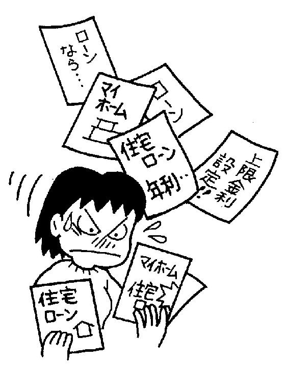
７ 保険会社も経営破たん？
●保険会社選びは慎重に
さてさて、少なくとも生命保険は（もちろん他の保険もそうですが）、私たちの日々の生活において、発生する可能性のあるリスクに対する保障、つまりは安心を与えてくれるものであるはず。ところが信じられないことに、その保険会社が経営破たんしてしまうという現実が。「その保険会社は、保険に入っていなかったの？」なんていう、オトボケな話も出る始末──。
■経営を圧迫した「逆ザヤ」
以前は保険会社が経営破たん、要するに「つぶれる」なんて、想像もできませんでした。ところが１９９７年に日産生命が破綻すると、２０００年から２００１年にかけて、千代田生命、協栄生命、東京生命が続けて経営破たんに追い込まれました。いずれもいわゆる「逆ザヤ」による経営困難が原因です。バブル時代に設定された契約者に保障する５・５％という高い予定利率を運用実績が大きく下回ってしまったこと（＝逆ザヤ）による経営破たんでした。
では、私たちが加入している保険会社が破たんしてしまったら、今までかけ続けていた保険は、いったいどうなってしまうのでしょうか。そのために、契約者を保護する目的で、「生命保険契約者保護機構」が設立されました。
この機構は、保険業法に基づき設立された法人で、保護機構の会員である生命保険会社が経営破たんした場合、保険契約の移転などの際の資金援助や補償対象保険金の支払いに係わる資金援助および保険金請求権の買い取りを行うことなどで、保険契約者の保護をはかり、生命保険業に対する信頼性を維持することを目的としています。
しかし、２００１年３月までは「死亡保険金」や「入院給付金」は全額保護されていましたが、同年４月以降は、将来の保険の支払いに備えて積み立てられている分（＝「責任準備金」）の90％までしか保護してもらえないことになってしまったのです。さらに「養老保険」「個人年金」など貯蓄性の高いものは減額されますし、その保険契約を別の保険会社が引き受ける際には、契約条件が厳しくなります。
また、保険金の支払いは継続されますが、破たんした保険会社の更生計画を裁判所が認定するまでは解約もできません。もっともこの場合、「すぐに解約！」というのも考えもの。というのも、解約して他の保険会社の商品に入りなおすと予定利率はさらに下がってしまいますし、年齢が上がった分保険料も高くなります。それならカットされてしまった保障分を掛け捨ての安めの保険でフォローするほうがいいかもしれません。
いずれにしても保険会社ですら、安心という時代ではなくなってしまった、というのが現実のようです。これから新たに生命保険などに加入する場合は、「ムーディーズ」などの格付け機関で、その保険会社の経営状態をチェックしてからにするといいでしょう。さらに保険会社の経営の安全度を示す指標の一つである「ソルベンシーマージン比率」も、ぜひ調べておきたいところです。これは『会社四季報』『会社情報』などにもその数値が掲載されている、保険金支払いリスクに対して、保険会社の実際の支払い能力がどの程度あるのかを示すものです。数値が高いほど安全性が高いことになります。ただし、一般的にはソルベンシーマージン比率が２００％を超えていれば安全といわれてきましたが、この数値をクリアしていた保険会社の経営破たんも発生しました。今後はさらに慎重にこの数値をチェックしておいたほうがよさそうです。
第５章
●デフレの今は現金が強い
お役所の補助金や
趣味を活かした副収入など
めざせ！ 収入アップ
１ 失業にも耐える、裏ワザ研究
●不景気も、みんなで稼げば恐くない
第１章でも書きましたが、デフレの世の中で最も強い味方は現金。やはり、いざというときの出費に備え、日々の暮らしを節約で乗り切りつつ、しっかり現金を蓄えておかねばなりません。また、実際失業してしまったときの、ピンチの乗り越え方も研究しておきましょう。
■とにかくみんなで稼ぎまくろう
失業率は５％を超え、世の中お先真っ暗、自分が、あるいはご主人が、今日にも職を失うかもしれません。その際は貯金を切り崩してがんばりつつ、妻もパートに出て家計を助けたりということをすべきでしょう。「稼ぐに追いつく貧乏なし！」といいますが、事実、まったく働かないよりは、必ずプラスになるのですから。雇用保険の改正によって、パートタイマーや派遣労働者も、一定の条件を満たすことによって、雇用保険に入れるようになりましたし──。
■失業してしまったら
ここで実際、あなたのご主人が失業してしまったという仮定で、考えてみましょう。当座は雇用保険がありますが、収入減は避けられません。そうなると住宅ローンや教育費の占める割合が多い家庭は、もう、たいへん！
しかしあわててパニックにおちいってはいけません。あなたの家庭が住宅ローンを抱えているのなら、借り入れ先の金融機関に相談に行きましょう。銀行だってこの不景気の世の中で、これ以上の不良債権を持ってたまるかと、返済期間の延長など、相談にのってくれるはず。教育費で悩んだら奨学金制度を考えてみましょう。大黒柱の失職や病気・入院などが家計を圧迫、修学が困難という人のために、「緊急採用（無利子奨学金）」の制度があります。卒業後始まる奨学金の返還は無利子・長期ですから、利用しない手はありません。
２ お役所からもらえるお金・あれこれ
●知っておきたいお役所の補助金サービス
自治体の運営は税金でまかなわれているわけで、そう考えると税金を納めている我々としては「当然の権利」なのであって、「お役所からお金をもらう」というのはちょっと違うかもしれない。だとしたらなおさら、当然の権利を見落とす手はありません。まあ、そのへんはともかく、いろいろな補助金制度その他、何でも役立ててしまおうというわけです。
以前から、地域・自治体によっては人口減少の著しい傾向が、特に若年層を中心に問題とされていたりします。そこで地域定着を促進し、活力あるまちづくりを進めることを目的に、お役所もいろいろな補助金のサービスを行っています。もちろん大都市もその一層の充実を図っています。自治体によって種類や金額、資格など、助成対象はさまざま。それでも条件を調べて、もらえるものはもらっちゃいましょう。
■「家賃補助制度」
「えっ、ホントに家賃を補助してくれるの？」という具合に、意外に知られていないのがこの制度。新婚や子供のいる家庭に、その地域に定着してもらおうと、一定期間、家賃の一部を行政が補助してくれるというシステムです。
今より一回り大きな部屋に住む、家計の助けにするなど、役立て方はいろいろ。現在、自分が住んでいる自治体に、自分向けの家賃補助制度はある？ ぜひチェックしてみましょう。
「でも、オレ、独身だし......」という人にだって、例えば東京都新宿区の場合なら、実質家賃が９万円以下の民間賃貸住宅に居住している18歳から28歳までの単身世帯に、１万円（家賃が１万円以下ならその額）の助成金が３年間支給される「単身者世帯向け家賃補助制度」というシステムがあるのです。
また「新婚世帯向け」や「多子ファミリー向け」「高齢者向け」「障害者向け」「ひとり親向け」などは、かなりの自治体で家賃補助制度があります。資格その他、ぜひ居住している自治体に問い合わせてみることをおすすめします。
■「出産一時金」
妊娠・出産は、病気ではありませんから、分娩費や入院費などは健康保険の適用外となるため、全額自己負担となってしまいます。かなりの出費となるため、その負担を補うために、健康保険や国民健康保険には「出産一時金」支給の制度があります。支給額は子供１人につき30万円ですが、付加金がつきそれ以上になる場合もあります。１人につき、ですから、双子なら60万円ということになります。また、不幸にも死産・流産の場合でも、妊娠12週目以降であれば支給の対象となります。さらに「出産貸付制度」などの名目で、出産前でも支給予定額の、例えば８割までなら先に「お貸しします」という制度のある自治体も。
妊娠により会社を退職した場合、退職後６カ月以内の出産なら、「出産一時金」は、会社にいたときに加入していた健康保険から支払われることになります。
■「出産手当金」
産休のために給料がもらえない会社勤めの人には、その間の生活保障のために、「出産手当金」が支給されます。ここでちょっと気をつけたいことが一つ！ 実は「出産手当金」は、退職後６カ月以内に出産した人にも支給されます。ですから妊娠を機に退職する場合は、退職日をよく考えて！ また産休中、給与がもらえる場合も、その額が出産手当金より少なければ差額を受け取ることができます。
給与額は、標準報酬日額、つまり１日分の給与の６割。支給期間は出産予定日前42日間プラス出産後56日間の、計98日分が支給されます。例えば月収20万円の人なら、20万（円）÷30（日）×０・６×98（日間）で、約39万円受け取れることになります。出産が予定日より遅れたときは、その分も加算されます。ただしその遅れた出産日が退職後６カ月を１日でも超えてしまうと、出産手当金は支給されない！
とすると、１週間や２週間、予定日がずれてもいいように、おめでたでの退職は、やっぱりよーく時期を考えて。もらえるものはもらわなくちゃ！
■「育児休業給付金・育児休業職場復帰給付金」
「育児休業給付金」は、雇用保険の加入者、つまり勤務先の会社などが、１歳未満の子供を養育するために育児休業を取得する被保険者に対して、給付金を支給する制度です。育児休業は、会社に申し出れば男女問わず利用できます。
条件は、次のとおり。
・雇用保険の一般被保険。
・１歳未満の子を養育するために育児休業制度を利用する人。
・育児休業開始前２年間に賃金支払い基礎日数が11日以上ある月が12カ月以上ある者（11日以上働いた月が12カ月以上ある）。
といった条件を満たさなければなりません。金額は原則として、休業開始時の給与の30％を最大10カ月分（育児休業期間で、子供が満１歳の誕生日の前日まで）。申請期間は、育児休業開始日の翌日から10日以内となっています。
「育児休業者職場復帰給付金」は、会社勤めの人が育児休業をとった後、職場に復帰して６カ月雇用された場合に給付されるものです。
条件は、次のとおり。
・育児休業取得期間と同じ職場に復帰すること。
・育児休業終了後６カ月以上続けて勤務した場合。
といった条件を満たすこと。金額は、休業開始時の給料の10％相当×育児休業給付金を受けた月数分。つまり育児休業給付金を10カ月受給したら、同じ10カ月間となります。例えば休業前の月収が25万円で10カ月休業したら、育児休業給付金が25万（円）×０・３×10（カ月）で75万円、さらに育児休業者職場復帰給付金が25万（円）×０・１×10（カ月）で25万円、受け取ることができます。なお、休業中は、厚生年金保険料と健康保険料の支払いは免除になります。申請期間は、職場復帰し、６カ月働いた日の翌日から２カ月以内となっています。
■児童手当
人生で一番お金がかかるのは、何と言っても子育て期間中。そこで、国の補助を受けて自治体から未就学児のいる家庭に支給されるのが「児童手当」です。
支給対象は、６歳到達後最初の３月31日までの間にある児童（義務教育就学前の児童）を養育している者（家庭）。日本国内に住所があれば外国人でもその対象となります。ただし、前年（１月から５月までの月分の手当については前々年）の所得が一定額以上だと、所得制限により児童手当等は支給されません。支給額は、月額、第１子 、第２子は５０００円 、第３子以降は１万円となっており、原則として、毎年２月、６月、10月に、それぞれの前月分までが支払われます。
■「乳幼児医療制度」
乳幼児の保健向上、つまり健康の保持増進を図り、特に疾病率の高い乳幼児に対する適切な医療の確保をするため、必要な医療を容易に受けられるようにという目的で設けられたのが「乳幼児医療制度」。乳幼児が医療機関において、医療の給付（入院・通院）を受けた際の医療保険自己負担額について、その費用を乳幼児医療費などの名目で助成しますというもの。
この制度も児童手当同様、所得制限などがあるので、自治体の窓口で相談してみましょう。
■「失業給付金」
会社を辞めたが、まだ本人に働く意志がある、というとき雇用保険から支払われるのが「失業給付金」。「非自発的離職」といわれる倒産・解雇などによる離職の場合も、もちろんオーケーです。明日も明後日も働く意志がありながら、「失業した！」というときにもらえるのが「失業給付金」なのですから。
つまり失業給付金とは、働く意志と能力があって再就職先を探している人がもらえるお金。女性が出産をひかえ、仕事が続けられなくて退職した場合も、当然もらえます。普通、失業給付金は、退職の翌日から１年以内にもらい終えなければなりませんが、妊婦の場合は、受給期間の延長制度により最長４年まで延長することが可能です。出産後、ひとまず子育てに専念し、その後失業給付金の支給を受けながら職探しができるというわけです。
失業給付金を受け取ることができる、具体的な資格は以下のようになっています。
・会社員（一般被保険者）の場合は、会社を辞める前の過去１年間に働いていた日数が14日以上ある月が通算して６カ月以上あり、雇用保険に加入していた期間（保険料を払っていた期間）が６カ月以上あった人。
・パート・アルバイト契約社員（短時間被保険者）なら、離職の日以前２年間に、賃金支払基礎日数11日以上の月が12カ月以上あること。「短時間被保険者とは１週間の所定労働時間が20時間以上30時間未満の人」
そして、ここが肝心、
・あくまで就職する意志のある人。
退職し、「専業主婦」になる場合はもらえませんし、就職の意志があっても特殊な場合はダメ。「オレは、プロ野球選手をめざして日々トレーニングにはげみながら、年に１回、新人入団テストを受けている。どうだ、立派な就職活動だろう」とまあ、こんな場合は残念ながら認められません。
また、就職する能力のある人というのも条件となります。病気・ケガの人、妊娠中の女性などは、働く意志があっても、働く能力がないとみなされる場合もあります。ただし前記のように、このような場合には受給期間の延長が可能となることも。
受け取れる金額は、勤めていたときの１日当たり給与の６～８割×給付日数。勤続５年未満なら90日、５年～10年未満の場合は１２０日。
不本意ながら職を失っても、まだまだがんばる道は、いくらでもあります！
■確定申告
まず「確定申告って、何？」という人のために簡単に説明しましょう。毎年１月１日から12月31日までの１年間にその人が得た所得に対して、所得税がかかります。そこで１年間の所得を確定させ、税金を納めるシステムが確定申告です。サラリーマンなど給与所得者の場合は、「源泉徴収」というかたちで天引きされています。
毎年２月から３月にかけて確定申告の時期がきますが、自営業者の場合は、必ず確定申告をしているでしょう。しかし自営業者だけでなく、サラリーマンなどの給与所得者も確定申告をすることにより、税金が戻ってくる場合があります。また、確定申告による還付請求は、５年間請求できますから、今まで確定申告していない人で確定申告することにより還付されるという場合は、ぜひ確定申告をしてください。
なぜ、税金が還付、つまり戻ってくるのかというと、「源泉徴収」はあくまで「だいたいこのくらい」という概算額で決められるため、ピッタリの数字ではありません。というのも、その年の年末が過ぎなくては税金の正確な数字は分からないわけで、つまり税金の前払いを一年間してきたことになります。そこで、あとからきちんと清算しましょうというわけです。
その方法は、まず年末の「年末調整」。12月で１年分の収入がはっきりすると、会社では改めて所得税額をきちんと計算し、払いすぎた分があれば戻し、足りなかった分を徴収したりして、納税が完了します。
ところが、「年末調整」でも、清算しきれないものが出てきます。「医療費控除」と「雑損控除」です。それらは確定申告で清算されます。この場合は自分で税務署へ申告します。自営業ならば、この「確定申告」のみで税額が確定します。
■「医療費控除」
「医療費控除」とは、自分自身や家族のために医療費を支払い、１年間にかかった医療費が10万円を超えたとき、一定の金額の所得控除を受けることができる制度です。医療費控除は、所得金額から一定の金額を差し引くもので、控除を受けた金額に応じた所得税が軽減されることになります。
医療費控除の対象となる医療費は次のとおり。その病状などに応じて一般的とされる支出の水準を著しく超えない金額とされています。
①医師または歯科医師による診療・治療の対価。ただし健康診断の費用や医師などに対する謝礼金などはダメ。
②治療・療養に必要な医薬品にかかったお金。市販の風邪薬などの購入代金も、認められます。ただし、ビタミン剤や美容・おしゃれに関するものなど（美容整形やダイエット食品など）は、医療費となりません。
③病院、診療所や、介護老人保健施設などへ収容されるために発生した費用。急病や事故によるケガなどで病院に運ばれる際の費用です。
④マッサージ師、指圧師、鍼灸師などによる施術の対価。
⑤保健師、看護師などの療養上の世話の対価。病人の付添いを家政婦さんにお願いした際などの療養上の世話の対価も認められます。
このような場合の、その年の１月１日から12月31日までの家族全員の医療費の領収書をかき集めてみましょう。一般に所得の多い人が確定申告すると有利です。
■「雑損控除」
あまり聞き慣れない言葉かもしれません。雑損控除とは、不幸にも、火事や台風などの災害、盗難または横領などによって、資産に損害を受けた場合、一定の金額の所得控除を受けることができる制度です。これ以外、例えば詐欺や脅迫の場合には、雑損控除は受けられません。知り合いにお金を貸して踏み倒された、などというのもダメ。そしてまた、損をしたら何でも控除となるのかというと、そうはいきません。あくまで「日常生活に必要」なものに限られます。日々の生活に通常必要な住宅、家具、衣類などの資産でなければならず、別荘や事業用の資産、書画・骨董、貴金属などで１組または１個の価格が30万円を超えるものは控除の対象外となります。
雑損控除として控除できる金額は、次の二つのうちの、いずれか多いほうの金額になります。
①差引損失額 総所得金額×10％
②差引損失額のうち災害関連支出の金額 ５万円
また、損失額が大きすぎて、その年の所得金額から控除しきれないという場合には、翌年以後も３年間を限度として、繰り越して各年の所得金額から控除することができます。台風で家が壊れてしまったなどというときにはかなり助かりそうです。
なお、被害にあったときに警察署や消防署から被害届の届出証明書をもらっておくこと。被害を証明する書類がないと、雑損控除は受けられません。
■家を買って税金を取り戻す
住宅ローンなどを利用してマイホームを新築したり購入した場合、一定の要件に当てはまるときは、「住宅取得特別控除」（「住宅借入金等特別控除」ともいう）によって税金が還付され戻ってきます。この控除を受けるためには、確定申告をする必要がありますが、サラリーマンの場合は、１年目で確定申告をすると、２年目以降は年末調整で控除が受けられるしくみになっています。またローンを組んで増改築、つまりリフォームの場合も一定条件に当てはまれば受けられます。
ローン控除を受けるための条件や控除額、上限額はいつ入居したかによって違ってきますから、自分の場合は、どの制度に該当するのかを知っておく必要があります。また、控除額の上限はその人の所得税額という決まりもありますので覚えておきましょう。控除前の所得税が25万円の人の場合、控除額も25万円ということになります。
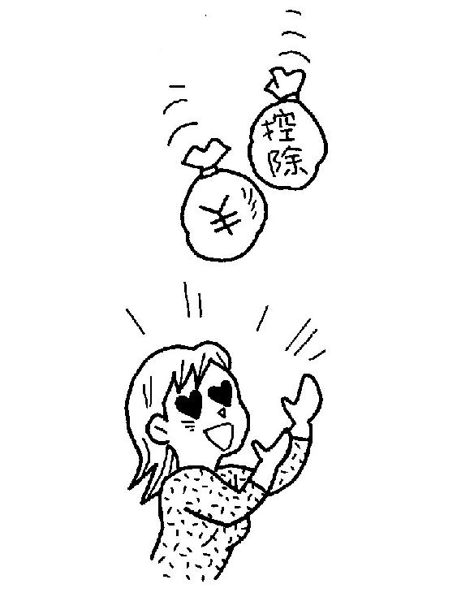
３ こんな副業はいかが？
●副業の選び方
みんなで稼ぎまくり、控除や給付金など、もらえるものはもらっちゃえということで、何となく、強くたくましく生き抜いていけそうな気がしてきたと思いますが......。
それではここで、「どうせ仕事をするのなら、趣味や特技を活かしたい」「資格を取って、楽しく仕事がしたい」という人のために、在宅など、手軽に稼げる副業をご紹介しましょう。
■「教育訓練給付制度」
昔から、いざというときには「《手に職》を持っているヤツが強い」とは、よく言われてきた言葉です。もし今あなたが何らかの仕事に興味を持ち、専門学校に通い、必要な資格を取ろうとします。そのときあなたが雇用保険の被保険者となって（会社に勤めて）３年以上経っていたら「厚生労働省教育訓練給付制度」が適用されることも。この制度が適用されると、その講座を修了すれば、受講料の２～４割、最大20万円が支給されます。「趣味が高じて」でも何でもいいのです。とにかく手に入れたスキルは、一生使える資格なのですから。
■こんな副業、ご存じですか？
①ＰＯＰライター......スーパーなどで見かけるプライスカードやショーカードの丸みを帯びた数字や文字を手書きで作る仕事です。フェルトペンやデザイン用の平筆などを使って素早く書きます。絵やデザインが好き、という人向きですが、慣れれば誰でも書けるようになります。こまめに営業、近所の商店街からデパートまで、クライアントを増やせばまとまった収入も期待できます。商品や販売促進の知識もあればなおよいですね。
②筆耕技能士......「賞状技法士」とも呼ばれる、筆で文字を書く仕事。「お習字大好き！」という人ならピッタリ。冠婚葬祭の案内状やデパートなどの贈答品ののし紙など、賞状にとどまりません。いろいろな書類の清書代行など、幅広く仕事をとって活躍している人も。
③校正......「校正」とは、出版物が本になる前に、誤字・脱字をはじめ、文字などの間違いを見つけて正す仕事です。本に限らず活字好きの人向き。本や新聞はもちろん、カタログやパンフレット、チラシにいたるまで、出版物、印刷物は校正作業を経て、はじめて印刷に回されます。出版社、新聞社、印刷屋などから仕事が出ますが、自宅でできる仕事というのが魅力かも。
④Ｗｅｂデザイナー......ホームページをつくる仕事です。今、最も旬な仕事かも。企業から個人まで、自社あるいは自分のホームページを持つことが大人気。そんなクライアントの要望に応えて、ホームページをつくってあげる仕事です。コンピューター大好き人間向き。Ｗｅｂ制作会社や広告代理店と契約している人や、人材派遣会社に登録、フリーで仕事をしている人も多くいます。これまた環境さえ整えれば、自宅で仕事ができるのが魅力でしょう。
⑤ペットシッター......動物好きにピッタリの仕事。ペットの世話をする、ペットのベビーシッターのようなものと思えば間違いないところ。散歩代行のみのような場合もあれば、飼い主が長期出張で留守をする１カ月間預かるなどというものまで、条件はさまざま。フリーでやっている人が大勢います。健康管理やしつけなど、最低限の動物の知識は必要でしょう。ご近所へのポスティングや、口コミで仕事が広がることが多いようです。犬を飼っている人同士、猫を飼っている仲間など、それぞれしっかりコミュニケーションしていますから。ペット人口が増えている今、需要が増えている職業ではあります。
⑥ネイリスト......「ネイリストって何だ？」と、これは遅れているオトーサンの台詞。ピカピカに磨いたり、カラーリングにネイルアートまで、「ツメのことはおまかせ！」というのが「ネイリスト」です。サロンと契約する場合が多いようですが、それ以外にも職場は多様化、自宅で開業する人も増えています。仕事を気に入ってもらえてリピーターが増えていけば、かなりの収入を得られることも。おしゃれの部分だけが目立つネイルアートも、実は、しっかりとツメの健康管理ができなくては、意味がありません。医学的知識も必要なのです。
いかがでしょう、参考になりましたか？ ここでは特に、お休みの日など、上手に時間をつくれば副業としてできる仕事を紹介しました。
あこがれの仕事につく、趣味が仕事になる、そんな夢が現実になったら素晴らしいことです。努力のかいもあるというものですね。
■コワイ!? 「内職商法」
ところで、「内職商法」ってご存じでしょうか。
「確実にもうかる。絶対仕事を回してやる。そのためにはこの講座を受講、技術を身に付ける必要がある」といって、教材とは言えないような教材を送ってきたりする。もちろん、受講料だけ取って、仕事あっせんなんてうそっぱち。万一契約してしまったあとで「おかしい」と思ったら、すぐに解約手続きを。「内職商法」なら、契約書を受け取ってから20日間、一般的な電話勧誘にのってしまった場合も８日間なら、「クーリング・オフ制度」で解約できます。また、いきなり商品を送りつけてきて、料金を請求されるケースも。「ネガティブオプション」といいますが、この場合は、もちろん支払い義務も商品を返送する必要もありません。ただし到着後２週間は商品を使用せずに保管しておく必要があります。その後は、日付が明記された宅配便の伝票などを保管しておけば、どう処分しようとこちらの勝手です。
不景気の世の中、わけのわからない、いかがわしい商法も増えています。トラブルを防ぐためには、あくまでき然とした態度をとることが肝心です。
第６章
●初めてだって大丈夫
１万円からＯＫ
予算に合わせてミニ投資
１ 投信積立
●投資の初心者でも１万円なら安心
月々１万円から分散投資が可能なのが投信積立。少ない資金でオーケーというのは、投資の初心者向き。そもそも投信積立とは、投資信託の積立のこと。では投資信託とはどういうものかというと、まず投資家からお金を集め、それを一つにまとめて複数の株式や債券に分散投資します。そこで上がった収益が、投資家に分配されるというしくみ。株式中心、債券中心など、種類は豊富にあります。
■少額でも「投資」ができる
「投資」というと、資金がたくさんいるのではないか、値下がりで大損をするのではないかなど、ついついリスクを先に考えてしまいがち。
ところが、最近では驚くほど少ない資金で投資を試してみることができます。このところ、一般の投資家でも、無理なく株に投資してもらおうと、月々１万円から投資できる、さまざまな種類の商品があります。「投信積立」・「るいとう」・「投資信託」・「ｅワラント」など、資金額や売買の方法をよく検討してみましょう。値下がりのリスクが恐いという人も、資金に余裕がない人も、少額でできるので、とりあえずチャレンジしてみる価値大です。
慎重に確実に増やしていきたい、少々冒険してみたいなど、自分の性格や志向に合わせて、株で気軽に資産運用してみてはいかがでしょう。
■投信積立
毎月一定額を積み立てていく投資信託のこと。月々１万円から始められます。銀行や証券会社で扱い、指定したファンドを毎月自動的に買い付けてもらいます。一定の金額で買えるだけの口数を定期的に購入していく「ドル‐コスト平均法」という手法を使うので、平均買い付け単価が抑えられるという点が期待できます。株価が高いときは少なく、株価が安いときは多く株を買い付けるので、リスクの分散も期待できます。販売手数料や信託報酬が安い低コストファンドをねらい、安い間は買い続け、値上がりしたら売るというスタンスで、利益を確定しましょう。
２ るいとう
●１万円からの株式投資
「るいとう」は、「株式累積投資」のこと。毎月１万円からできます。指定した銘柄を月一回決められた日の寄付値（その日の一番最初についた値段）で買えるだけの株数を買い貯めていく、手軽な株式投資スタイルです。つまり、株を少しずつ積み立てていくということです。
■「るいとう」も株式投資
普通、株式投資というと、何十万円もの資本がかかります。「るいとう」は、短期的な値上がり益を狙うのではなく、中・長期投資で、その企業の株主になることを目的に株式投資を行う人にとっては、利用価値の高い制度といえます。
資本も毎月１万円からと、もっとも少額なお金で本当の株を買う手段です。つまり、少額ではあっても継続的に少しずつ投資する「るいとう」も、立派な株式投資ということになります。ですから持ち株数に応じた配当金相当額が自動的に、配分・再投資されますし、また株主優待も、持ち株に応じて受けられます。毎月の累積投資により１単位株（通常は１０００株が１単位）に達し、名義書き換えが終わると株主になれます（それまでは証券会社名義）が、１単位の株数は銘柄によって異なります。
■初心者向きの「るいとう」
「るいとう」は、株や投信を買いたいけど、どんなタイミングで買っていいのかわからないという初心者にもおすすめ。最適なタイミングでは買えないかもしれませんが最悪のタイミングということもない買い方なので、安値で買い続け、上がったら売り、じっくりかまえて資産をつくっていきたい人向けです。当然、底値で買って、ドンと上がったら即、売ってという、一発ねらいのギャンブラーには向きません。
銘柄は、その証券会社の選定した銘柄から選べます。できれば知名度があり、将来性が期待できる企業がねらい目です。
ただし、その会社がつぶれたり、株がメチャクチャ下がったりしてしまえば、大損ということも。リスク分散のためには、資金に余裕ができたら積立額を複数の銘柄に分けて購入すればいいでしょう。
■「ドル‐コスト平均法」
また「るいとう」は、毎月一定の日に一定の金額で購入しますから、「ドル‐コスト平均法」のしくみにより、一株当たりの平均購入単価を抑えられます。「ドル‐コスト平均法」とは、定期的に一定の金額を継続して投資する方法です。特に長期の投資に向いているといわれる理由は、長く続けるほど、より幅広い価格で証券を購入することができるからです。
つまり、基準価格が高いときには少ない口数を、基準価格が安いときには多くの口数を購入することになり、平均買付け価格が安定し、結果的に毎月一定口数を購入する場合より安く購入できます。
■売りたいときはどうする？
売りたいときは、その証券会社に連絡、希望を伝えれば、申し込みの翌営業日の寄付値で売却されます。その場合、１単位の株数でなくても一株からＯＫ。でも、一部だけ売るときには１単位株の10分の１以上の株数が必要です。
手数料が少々割高ではありますが、例えばミニ株といっても大企業の株を１万円から買うことは不可能ですし、なにより少額からなので、分散投資も可能になるのは魅力ですね。
３ 投資信託
●投資信託ってどういうもの？
投資信託（ファンド）は、資金運用のプロが投資家から集めた資金を複数の株式や債券に投資するというものです。分散投資ができるので、リスクが分散されます。投資対象を絞り込めば、株の値動きを楽しむこともできます。資金は１万円からでＯＫ！
■ちょっと冒険してみたい短期決戦派に
投資信託は、投資信託委託会社が運用し、信託財産の管理を信託銀行が行います。財産の管理というのは、帳簿の管理や価格の計算、および有価証券などの保管・決済といった業務です。まあ、面倒なことをいろいろおまかせするなど、信託銀行はマネージャーと金庫の番人を掛け持ちしてもらっているようなものでしょうか。
投資信託は、元本保証ではなく、また預金保険の対象にもなりません。儲かれば儲かった分だけ、損をすれば損をした分だけ、すべて顧客である投資家にはね返ります。ただし多くの株式などに投資するため、リスクが分散されるということはあります。逆に特定の業種や地域などに絞って、スリリングな値動きを味わいつつハイリターンをねらうというパターンもアリ、です。こまめに値動きをチェック、値上がりしたら即売却。短期決戦の冒険家向きといえるでしょう。これまで日本では、投資信託というのは、どちらかというと一般の人には認知されていませんでした。しかし、今後ますます、個人の資金運用の一環として、投資信託がその一端を担っていくことは、米国の４０１Ｋプランの例を見ても間違いないと思われます。
■分配金と再投資
投資信託は、普通、年に１～２回ある決算時に、原則として投資家に分配金が支払われます。分配金は受け取って元本を再投資する、または元本に分配金を加え元本を育てることもできます。また、運用益が多いほど分配金は増えますが、運用方針によってはそうならない場合も。
４ ｅワラント
●「株の魅力は、そのギャンブル性」という人におすすめ
究極のスリルを味わうのなら、「ｅワラント」。ワラントとはワラント債（新株引き受け権社債）のオプションを証券化したもので、個別の銘柄を売買する権利を証券化したものです。「ｅワラント」とは、ゴールドマン・サックス・インターナショナルのカバーワラントのこと。仕組みが複雑なことに加え、一つの銘柄に複数のワラントが発行されているので、損得の仕組みをキチンと把握してから投資すべきでしょう。最大の魅力は株式投資に比べ、収益が何十倍にもなる可能性があることです。
■その魅力は、ゼロか、はたまた何十倍か！
「ｅワラント」の場合、値動きの大きい銘柄を選び、売却のタイミングを見極めることで、高収益が期待できます。こまめなチェックと、タイミングをつかみ短期で勝負をつけるという点から、冒険心旺盛な人（ギャンブル派？）にはうってつけ。ｅワラントは、個別株式、株価指数、外国為替など（これらは原資産と呼ばれます）を対象として発行されます。通常、原資産の動きに連動しながら、より大きな値動きをする傾向があります。
ｅワラントには、「コール型（原資産価格が上昇すると、ｅワラントの価格も上昇するタイプ）」と「プット型（原資産価格が下落すると、ｅワラントの価格は逆に上昇するタイプ）」の２つがあります。ｅワラントへの投資の基本は、コール型にしろプット型にしろ、要は安く買って高く売ることです。値上がりすると思えばコール型を買い、下がると思えばプット型を買えばいいというわけです。買ったその日に売ることも可能です。ｅワラントはまた、期限付の有価証券であり、権利行使期間が終了してしまうと、その価値がなくなってしまうという有価証券です。例えばコール型ｅワラントを買い付けたのち、満期までに原資産価格が予想通りに上昇せず、行使価格を上回らないときには、利益を得る機会を失うことになってしまいます。ただしこの場合その損失は、買付代金に限定されます。とまあ、こんな具合に、ゼロになるか、はたまた何十倍になることもあるので、それが魅力です。
５ 金
●「金」を持っているだけで、リッチな気分？
先行き不安な現代社会、国際的価値のある「金」による資産設計は、資産を確実に守るものといえるでしょう。金は価格が毎日変動しますが、その価値は決してゼロにならない安定財産といえるでしょう。その金を積立という簡単なシステムで、長く無理なく貯め続けていけば、着実に資産が増えていくことでしょう。
■純金積立
「有事の時の金」という言葉があるように、「金」は世界中で普遍的な価値を誇っています。株や債券は企業の倒産などで、一瞬のうちに紙屑同然となる可能性がありますが、金はそれ自体に価値を持つ資産です。また、貨幣価値が急落するようなことがあっても、金の価値変動は緩やかです。ですから純金積立は、資産のリスクヘッジとして、かなりオススメです。
一般的に月々３０００円から始められる純金積立。１０００円単位で毎月の積立額を設定できます。その積立期間は一年間ですが、自動継続もできます。価格変動のある商品ですが、「ドル‐コスト平均法」を用いることで、価格の変動リスクを少なくしています。
「純金積立」は取り扱う会社により、年会費、買い付け手数料に違いがあります。
また、その日に買い増しをすることや、指定金額で一カ月間毎日購入するシステムなどがあります。これは、毎日一定の金額で「金」を買い続けていくシステムですから、金価格が安いときには多く、高いときには少なく購入。着実に純金をため続けられるというわけです。その日その日の価格で、ドッと多額投資をすることはありませんから、リスクを分散できます。それに月の平均価格でまとめて買うよりも、わずかですが多くの量が買えるので、長期になればなるほど有利といえます。
■いつでもまとめ買いができるシステムも
金の価格が下がったときやボーナス時などに、いつでもまとめて純金を購入できるシステムを取り扱っている会社もあります。申し込み額は、１万円からというのが一般的。まとめて購入された純金は、純金積立に加算されます。
■「金」の等価交換
金は保有しているだけで、大切な資産といえますが、貯まったところでジュエリーやコイン、バーに等価交換できるというメリットも見逃せません。また、取り扱い会社による、その時点での買い取り価格での現金化も、もちろんＯＫ。貯まってきたら、値動きのタイミングを上手にとらえて売却できます。そのためには値動きの幅をいつもチェックしておくことがたいせつです。
第７章
●特典もいろいろあるぞ
預金利息より魅力アリ！
投資の基本を知って
株主になろう！
１ 株主になろう！
●株主になって資産を増やそう
「株」なんて、一般庶民である我々には関係ない世界......なんて、思っていませんか。ところが最近は若い女性でも、株を所有していたりします。少額の資金でも株を購入、値上がりや売買を楽しめるようになったからです。
■株ってどういうもの？
まず、株とはいったいどういうものかを知っておきましょう。
「株式（株券）」とは、企業が資金を調達するために発行するもの。つまり、株式は出資を証明するものです。その株式を購入して企業の資金調達に協力する人を株主といいます。「株式を買う」ということは、株式会社の所有者（＝株主）になるということで、企業の経営に参加する権利を出資金の割合に応じて持つ、企業があげた収益を配当金として受取る権利を持つことができます。
株主になるためには、当たり前ですが、株を買わなくてはなりません。「株」の買い方には、株の種類によって「単元株」「ミニ株」「るいとう」の３通りありますが、それぞれの投資の仕方の特徴を、よく理解する必要があります。そしてまた、自分の投資のスタイルを決めて、「短期売買タイプ」でいくのか、「長期保有タイプ」でいくのかを、使い分けることがたいせつです。
■株にはつきもの、リスクとリターン
ご存じのように、株式投資には、株価変動によるリスクとリターンがつきものです。企業の業績の見通しがよければ株価は上昇（＝株が買われる）しますが、企業の業績の見通しが悪ければ株価は下落（＝株が売られる）するというわけです。
昔から、どんな人に聞いても、親戚身内に１人くらいは「株で大損をした！」なんていう人がいて、「株は素人が手を出すモンじゃない」などと言われてきました。実際、投資した会社がつぶれてしまえば株券は紙くずになってしまいます。
しかし、そうやって株価が変動することが株のおもしろみでもあるわけです。株価が変動するから資産を増やすこともできるし、逆に損をすることもあるのです。株式に投資するときの心構えといえば、まず、この点でしょう。ですから資産運用に余裕のあるときに投資することが肝心です。ギリギリの生活をしていながら、一発逆転の大儲けをねらって、有り金全部をつぎ込んで......と、これはやめましょうね。
■株は、少額の資金で楽しみながら
というわけで、安易に株は儲かると思ってはいけませんが、今は少額の資金でも株を楽しめる時代ですから、必要以上に怖がることもなさそうです。そして自分の資産を投資するのですから、株式投資は自分の判断で売買を行うべきでしょう。専門家のアドバイスはともかく、安易に他人の意見に流されて損をしたのでは、納得できる株式投資にはならないでしょうから。また、種類によって短期的な値動きや、相場の変動に流されない冷静な判断力が必要ですし、自分の投資した企業の業績や、為替や金利の動向、経済全体の状況などを観察し、把握する必要があります。
そう、それなり勉強も必要ということです。
また株価は物価の上昇に連動しやすいため、インフレ対策として金融資産の一部を株で保有していると、リスクの分散にもなります。
さらに「株主優待」というメリットも見逃せません。株主優待とは、企業が株主に対して自社製品やサービスを提供してくれるもので、自社製品を無料でくれたり、お買い物券をもらえるなどなかなかウレシイものです。こんな低金利の世の中です、オマケである株主優待の商品やサービスの金額のほうが、預金の利息以上にオイシイこともありそうです。
楽しみながら資産を増やすために、株のしくみ、方法を十分理解したうえで、あなたもチャレンジしてみては？
２ 株の買い方いろいろ
●株の買い方には３通りある
──ということは、前項で書きました。ここではそれぞれの特徴を、さらによく理解できるよう、解説してみました。
■単元株で買う
株を売買するときに、一定の株数を一単元とする株式を「単元株」といいます。一単元の基準株数は銘柄によって違います。一般的に株式投資とは、この単元株での売買を指し、一単元以上の株式保有者を「株主」といいます。各証券取引所やジャスダック市場に上場している銘柄は、すべてこの単元株で取引されます。
以前用いられていた「単位株制度」を廃止し、「単元株制度」が 導入されたのは２００１年６月の商法改正のとき（10月１日施行）。従来の単位株制度では、株式は額面50円なら１０００株、額面５００円なら１００株といったように、一定の単位でなければ売買できませんでした。つまり、個人投資家が株式を購入するには、まとまった資金が必要だったのです。また、会社が売買単位を引き下げるにも、一単位当たり純資産額５万円以上という規制により、実質的に下限が設けられていました。
そこで、こういった規制をなくし、会社が自由に売買株数を決められるように「単元株制度」が導入されました。
たとえば、一単元が１０００株の銘柄で、一株５００円なら50万円ほどの資金が必要になります。単元株で買うのは短期売買をしたい、市場が開いている時間に株式をまめにチェックして売買ができるとか、資金に余裕があるなどの人に向いています。
単元株制度の導入によって、売買単位を引き下げる会社が増え、少額の資金でも投資できるようになれば、個人投資家層がますます拡がるという効果が期待されます。
■ミニ株で買う
ミニ株とは「株式ミニ投資」の略称。単元株の10分の１の株数で売買できる株式投資です。つまり、50万円の単元株ならその10分の１の５万円ほどで購入できます。単元株では購入できない銘柄や、これから値が上がりそうな銘柄を買って値上がりを待つとか、10万円くらいの資金で複数銘柄に投資して少しずつ買い増していくなど、いろいろな方法が考えられます。複数の会社に分散投資ができますから投資リスクも分散させることができます。
ただし、ミニ株は売買のタイミングに要注意です。売買の注文を出した翌営業日の寄付値での執行となります。ミニ株は一部の証券会社での取引になりますし、銘柄も証券会社によって違います。また、ミニ株では株主となりませんが、配当金や換金できるものなら、株主優待が持ち株数によって分配されます。しかし、ミニ株は単元株より売買手数料が割高なので、低コストの証券会社を選ぶことも重要です。いずれにしても、ちょっと試しに株を買おうと考えている人には最適でしょう。
■るいとう
前章で説明していますが、さらに説明を加えておきましょう。るいとう「株式累積投資」は、月１万円以上１０００円単位で、毎月決められた日の寄付値で株式を買えるだけ買うという仕組みです。つまり、株式そのものを積み立てていく方法です。株価が安いときは株数の購入が多くなり、株価が高いときは株数の購入が少なくなるため、結果として株価が平均し、ドル・コスト平均法の効果を期待できます。毎月決められた金額での購入なので、売買のタイミングの失敗が少なくできます。つまり、株の単価が平均化されることによって、難しい売買のタイミングを気にしなくてすみます。また、積み立てている株数が単位株に達した時点で、株主になることができます。「るいとう」は、配当金が再投資に回りますので、長期にわたって続けていくと有利です。もちろん投資資金が少なくてすむという点もメリットでしょう。長期間かけて資産を増やしていきたい人向きの商品といえます。ミニ株同様、取り扱い証券会社が限られていますので、注意してください。
■中国株
人口だけじゃなく、何から何までスケールの大きさを感じさせるのが最近の中国です。２００２年の経済成長率は、なんと、８％！ ２００８年には北京オリンピック、２０１０年には上海万博の開催も決まったとなれば、これは、インフラ関連銘柄がねらい目でしょう。インフラとはインフラストラクチャーの略。生産や生活の基盤を形成する構造物。ダム・道路・港湾・発電所・通信施設などの産業基盤や、学校・病院・公園などの社会福祉・環境施設などの社会的生産基盤となる産業のこと。
とにかく日本の昭和30年代をほうふつさせる高度経済成長が見込まれそうだし、実際、２０１０年までにＧＤＰを２倍にするとの目標を掲げ、メチャメチャ元気だ。とすると、特にインフラ関連の場合、その２０１０年まではかなりの成長が期待できることになるし、国有企業ということで安定感もあります。
でも、中国は共産国家なので資本主義の国と同じように考えていいだろうか、情報は確かなんだろうか、ホントにこのまま高度成長が続いていくの、配当はきちんと受け取れるの、といった疑問にお答えしていきます。
さて、日本から投資できる中国株の市場は香港、上海、深セン。上海と深センの市場は、別名「本土市場」とも呼ばれています。上海と深センの市場には上下10％の値幅制限がありますが、香港の市場にはありません。
配当に関しては、日本の証券会社を通じて売買している場合は、日本株と同様に、その証券会社を通じて配当を受け取ることができます。
銘柄的には、やはり前記のインフラ関連がおすすめ。何といっても中国は、これから急成長をとげるであろうお国。鉄道、高速道路、空港などの産業は、電力、資源などとともに期待できるし、ハイテク関連もますます伸びていくはずです。
値動きはかなり激しいので少しずつ分散して買うほうが無難でしょう。また中国株は、高配当や無償増資がしばしば行われるという魅力もあります。ただ、権利確定日が毎年変わったり、国内の株に比べて情報がやや不足しがちなことはいなめません。そこで最近増えている中国株専門サイトや証券会社のホームページで、こまめに情報をチェックするようにしましょう。
また、中国の株式市場は政府の外資導入政策と呼応しているため政策に関しても注視していく必要があります。
...と、まあ、簡単に紹介してみました。 もし、興味を持たれたら、各証券会社のパンフレットやホームページなどで、ぜひ研究してみてください。窓口や電話でもていねいに教えてくれます。
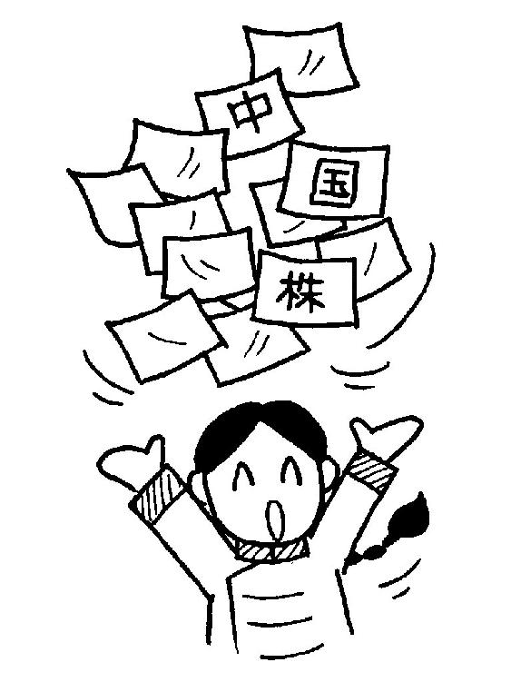
３ 株で資産を増やす方法
●「売却益」と「配当益」
株で資産を増やす方法は二通りあります。まず、株を取得価格より高い価格で売却して、その売却益（キャピタルゲイン）で増やしていく方法です。次に、「株式」そのものを買い貯めて行く方法で、株価の上昇による含み益で、資産そのものを増やしていきます。つまり、配当益（インカムゲイン）により資産を増やしていきます。それぞれ銘柄の選び方や買うタイミングの考え方が違います。
■売買益を目的にした株式投資
売買益を目的に株を購入する場合、まず、購入時に「売る」ということを念頭において購入しなくてはなりません。そして事前に「ここまで値が下がったら売る」ということを決めておくことです。保有株が値下がりしたからといって、ズルズルと保有し続けるという、あいまいな態度でいてはいけません。事前に決めておいたことを守り通せば、損をしても軽く済むはずです。
売買益を目的に資産を増やしていく場合、①短期で株を売買してお金を増やしていくパターン、②値上がりしそうな株を選び、中・長期でゆっくり増やしていくパターンがあります。①のパターンは、株価チャートを一日に一回はチェックすることができるまめな人向きです。②のパターンは株価変動のリスクに耐えられる、値上がりをじっくり待てる人向きといえるでしょう。もちろん、短期のパターンだけ、中・長期のパターンだけでもいいですし、両方のパターンを銘柄によって組み合わせてもいいでしょう。
■配当益を目的にした株式投資
企業が利益の一部を株主に還元してくれるものを「配当」といいます。初めて株に投資しようという人でも、配当益で資産を増やすという方法は、失敗が少なく、手堅いやり方といえるでしょう。つまり、この方法は確実に資産を増やしたいという堅実派向けの方法です。配当は銘柄により違いますが、年１～２回もらえます。そして、配当を受けるための条件は、単元株の保有者ということと、各企業が定めた「権利確定日」に株主名簿に株主として名前が記載されていることです。権利確定日は、だいたい決算日と同じ日に設定されていますが、決算月は、各企業によって違います。
複数の銘柄に投資する場合などは、配当益の受け取りが違ったほうが、楽しみが増えるというもの。各企業の決算月を知っておくことも投資をするうえではたいせつなことです。
権利確定日に名簿に名前が記載されるためには、権利確定日の５営業日前までに、株を購入しておく必要があります。
また、配当があるのは、決算後、株主総会が終わってからです。その目安としては、決算から３カ月くらいでしょう。
配当益を目的に投資する場合の方法として、決算月の違う銘柄をいくつか購入して、次々に配当を受け取れるようにする方法もあります。さらに、権利確定日が近づくと、株価は上昇傾向になりますから、そこで売却して売却益を得るという方法もあります。配当利回りは──《１株当たりの配当span class="upright"÷株価×１００》で求められます。たとえば、株価５００円、１株当たりの配当12円の場合、《12円÷５００円×１００＝２・４％》の配当利回りとなり、預貯金金利よりはるかに有利といえるでしょう。
というわけで、売買益か配当益か、悩んでしまうところですが、どちらを目的に資産を増やしていくかは、自分の性格や生活パターンなど、さまざまな要素を考慮して、自分に合ったやり方を決めるといいでしょう。
■ちょっとあてにしたい株主優待
株主になることの楽しみの一つに「株主優待」があります。企業から株主へ年１～２回、自社製品や優待券などがプレゼントされるのです。お食事券や割引券、招待券などさまざまなプレゼントがあります。株主優待を受けるには、当然のことながら、条件があります。必要な株数を保有していることと、割当基準日（配当と同様で決算日と同じ）に株主であることです。
また、優待品も配当と同様で、決算日から３カ月後あたりに送られてきます。配当と株主優待をねらい目に複数の銘柄を購入して、楽しみながら株式投資をしてみるのもいいでしょう。ただし、株主優待はあくまでもよろくです。そのことばかりに気を取られて、企業の財務状況や業績のチェックを怠っての購入はいけません。きちんとチェックすべきところはチェックしておかないと、優待どころか元手までなくしてしまうこともありますよ。
４ 銘柄選び
●いよいよ株式投資、実践編！
株を買うにあたって、売買益で資産を増やすのか、配当益で資産を増やすのかという目的によって、投資の仕方が違ってくるということは理解頂けたことと思います。そして、その目的と自分の生活パターンや性格などを考慮して、自分に向いている投資をすることが、投資に失敗しないコツといえるでしょう。
■株式の銘柄選びは情報収集から
さて前記のようなことをあらかじめ決めたうえで、初めて銘柄を選ぶということになります。銘柄とは株式を発行している企業名のことで、これを「株式銘柄」といいます。株式には１銘柄ごとに４ケタの数字が付けられています。これを銘柄コードといい、上場、公開している銘柄には必ず銘柄コードがついています。では、銘柄はどうやって決めるといいのでしょうか。
銘柄選びは、まず情報収集から始めます。株を買うということは、基本的に自分の資産を増やすという目的があるのですから、投資する企業についてよく知らなくてはなりません。初めて株を買うときは、やはり、聞いたことのある社名の企業などを選んでしまいがちですが、自分のイメージと企業の実態とは往々にして違うものです。投資しようとしている企業の事業内容や業績、資産状況などといった実態を冷静に判断して、把握しておく必要があります。企業の情報は、新聞やテレビなどからも入手できますが、それでは限度がありますから、もっとデータ化されたものを調べる必要があります。では、どのようにして調べたらいいのでしょうか。
この会社のデータを調べるために『会社四季報』という書籍があります。『会社四季報』には、１ページに２社ずつ、それぞれの企業のあらゆる情報が載せられています。上場企業は、多様な事業展開をしているところも多く、的を絞りにくいものですが、その企業の中心的事業は何なのかとか、社会的に高い評価を受けている事業内容は何かなどということが調べられると、その企業についてずいぶん分かるのではないでしょうか。
そういったことも『会社四季報』に載っています。
■『会社四季報』
『会社四季報』は、３月、６月、９月、12月の年４回発行されています。毎号購入して、長いスパンで企業を分析、判断するというのがよりよいものだと思いますが、毎号買わないまでも１回だけでは内容の変化は分かりません。なるべく新しい号を購入し、自分なりに分析してみましょう。『会社四季報』の内容は次のとおりです。
①社名・会社概要・事業内容欄......銘柄コード・社名・決算期・設立年月・上場年月のほか、会社の特色・関連事業など事業内容や各事業の構成比が記されています。
②コメント欄......その会社のトピックス的情報が記載されています。収益の状況や新規事業の展開計画、リストラの計画なども記されています。
③株主構成欄......その会社の株式の上位をどんな人（法人）が、どのくらい保有しているか、つまり、上位10位までの大株主を記載しています。１単元が何株かも記載されています。また、株主優待がある銘柄には、「優待」の表示があります。優待内容は、巻末にまとめて載っています。そのほか、全株主中で外国人投資家の占める比率も記載されています。
④財務欄......財務諸表を大まかに記載。株主資本比率・利益余剰金・有利子負債など財務面から会社を判断できます。
⑤業績欄......過去３期の実績と２期の予想が記載されています。会社の規模を示す売上の推移・営業利益・経常利益・最終的な利益などのほか、１株利益（ＥＰＳ）・１株あたりの配当と配当金もわかります。１株利益（ＥＰＳ）は、最終的な利益を全株式発行数で割った金額で、これを株価と比較することで、株価が割安か割高かということが分かります。
■目的別銘柄選びの注目ポイント
▼その１ 『会社四季報』で調べる
『会社四季報』で、社名を知っている企業、株主優待の内容が気に入った企業など、何らかのことがらで、自分が注目する企業について調べてみます。さらに目的と照ら合わせて、投資する銘柄を絞りこんでいくとよいでしょう。
○売却益で勝負しようという人は......
・業績で予測する → 業績大幅アップ予測の銘柄に注目。
・発行済み株式数で予測する → 発行済み株式数が少ない銘柄は、売買が思うようにできない可能性があるので、要注意。
○配当益で勝負しようという人は......
・業績の推移で予測する → 今までの業績の推移を見極めて、業績が着実に伸びている企業に注目。
・資本異動で予測する → 株式分割を繰り返している企業に注目。
・配当実績で予測する → 業績の伸びに沿って配当を増配している企業は注目。
・財務内容で予測する → 有利子負債が多い企業は、要注意。財務内容に問題はなくても、株価が割安か割高かという点も考慮しておきたいことがらです。
▼その２ 株価の指標で調べる
株価が高いか、低いかを表す指標にＰＥＲ（株価収益率）とＰＢＲ（株価純資産倍率）があります。
○ＰＥＲ＝株価÷ＥＰＳ（一株あたりの利益）
○ＰＢＲ＝株価÷ＢＰＳ（一株あたりの純資産）
で算出できます。
ＥＰＳは年ごとの企業の利益水準の変化をみるための指標で、その企業の利益が上がっているかどうかの判断材料になります。
ＥＰＳは《税引後利益÷発行済み株価数》で計算できます。また、ＢＰＳは企業が解散したときの一株あたりの価値を示したもので、企業の安定性をみるための指標です。企業がお金を持っているかどうかの判断材料になります。
ＢＰＳは、《純資産÷発行済み株式数》で算出します。
では、株価の割安、割高の判断はどこでするかというと、ＥＰＳ、ＢＰＳの倍率は、どちらも低いほうが「割安」になります。株価が割安ということは、これから株価が上がる可能性があるという判断ができるのです。数値的にはＥＰＳは明確な基準がありませんが、同業他社との比較がわかりやすいでしょう。ＢＰＳは１倍割れで割安と判断できます。このほか、株式投資の指標としてはＲＯＥ（株主資本利益率）、配当利回りといったものがあります。ＲＯＥは投資した資本が有効に使われているかどうかをみる指標で、《税引後利益÷株主資本×１００》で求められます。配当利回りは、配当はどのくらいもらえるかをあらわし、《一株当たりの配当金×株価×１００》で求められます。
『会社四季報』や指標をうまく組み合わせたり、企業のサイトや新聞などをフル活用して、財務が健全で、業績が好調で、さらに割安な銘柄を選べるようになりましょう。
■「売り」と「買い」のタイミングはチャートでみよう
▼「株価チャート」って、何？
銘柄が決まり、さあ、注文ということになりますが、その前にもう一つ。株は買うタイミングをみる必要があります。株価は変動するものです。どんなに優良な企業でも、株価が下がるということがあります。株価が下がり気味のタイミングで買う人はいないはず。そこで、特に売却益を目的とする場合、このタイミングが重要になってきます。
売買のタイミングをみるときに、必ず参考にしたいものが、「株価チャート」というものです。これは、過去の株価の推移をグラフにしたもので、相場のパターンや傾向を分析することができます。株価チャートは「ローソク足チャート」と呼ばれるものが一般的です。これは、１日、１週間、１カ月といった期間の株価の推移をローソク足で「始値」・「終値」・「安値」・「高値」の四つの値段で表しています。始値より終値が高く取引が引けたときは、グラフを白（陽線）で表し、始値より終値が安く引けたときは、グラフを黒（陰線）で表し、区別しています。また、チャートは少なくても一年くらいの長期トレンドを把握するためにありますが、過去の推移は分かっても、将来の予想はできません。つまり、チャートの分析は、売買のタイミングを判断する一つの材料に過ぎないということを、認識しておいて欲しいと思います。
※「ローソク足」......始値・終値・安値・高値をローソクのような形で表しています。株価が上昇基調のときには、グラフは白いローソクが多くなり、株価が下落基調のときには、グラフは黒いローソクが多くなります。
▼トレンドに乗る
株価チャートは、細かな株価の上下があるものの、長い期間を捉えると、大きな流れとして、「右肩上がり」になっているものと「右肩下がり」になっているものがあります。この右肩上がりとか、右肩下がりになっている株価の流れを「トレンド」といいます。トレンドを見極めて把握することが、売買のタイミングをつかむポイント！ つまり、株式投資で儲けるためには、右肩上がりのトレンドに乗ることが、とても大事なことなのです。さらに、株価トレンドには株価の推移の傾きが、ゆるやかなところと急なところがあります。ゆるやかな傾きは勢いが下がり気味、急な傾きは勢いがあるということを表しています。この点も見逃してはいけません。
▼右肩上がりのトレンド
株価のトレンドが右肩上がりになっていく時は、次のような傾向がみられます。
①上昇した株価がいったん下落した場合に、この下落がどの段階で止まるか、そして以前に下落したときよりも高い水準で再び上昇（下げ止まり上昇）に転じたときに、右肩上がりの上昇トレンドになります。
②①の下げ止まり上昇の後、この上昇が以前につけた高値を超えて上がっていった時、右肩上がりの上昇トレンドになります。
▼ローソクの形はトレンドの強さ
トレンドの強さの判断は、ローソクの形。ローソクの足には、陽線（白）と陰線（黒）があることはすでに書きました。このローソクの足は、ローソクの柱の部分が大きい陽線「大陽線」・柱の部分が小さくて下ヒゲがついている陽線「下ヒゲ陽線」・柱の部分が小さくて上ヒゲがついている「上ヒゲ陽線」があります。
大陽線は、株価が、始めから終わりまで大きく上昇したことを表しています。また、下ヒゲ陽線は株価をいったんは下げたものの、その後、また上昇したことを示し、上ヒゲ陽線は、いったん上昇したが、売りに押されたことを示しています。なお、上下のヒゲの長さは短いほど「強い」とされています。「陰線」の場合も同様のことがいえます。ローソクの柱の部分が大きい陰線「大陰線」は株価が始めから終わりまで大きく下落したことを表しています。「下ヒゲ陰線」はいったんは下げたものの、大きく戻したことを示し、「上ヒゲ陰線」はいったんは上昇したものの、その後大きく下げた、始値より取引が安く終わったということを示しています。
このように「ローソクの足」の形を読み取ることで、トレンドの強さが分かってきます。
▼移動平均線
移動平均線は、毎日または毎週・毎月の終値の平均を取り、グラフで表したものです。平均を取る期間によって、10日移動平均線、25日移動平均線、75日移動平均線などがあります。平均的数値をとらえることで、株価の変動の傾向がとらえやすくなります。売買のタイミングをとらえる上で、とても参考になります。
○移動平均線の典型パターン
・買いパターン → 下がってきた移動平均線が横ばいになるか、上向いてくると、株価は移動平均線の上を抜けて、上昇トレンドに。
・売りパターン → 上昇してきた移動平均線が、横ばいになるか、下がってきたところで、株価が移動平均線の下に抜けていき、下落トレンドに。
▼出来高
売買の約定が成立した、株数を表しています。「ローソク足チャート」の下部にある棒グラフの部分です。一本の棒グラフが、一本のローソクを形成する間の出来高を表しています。棒グラフの棒の部分が長いほど出来高が多く、売買が活発だったということです。
株主の利益の最大化は、配当だけで測られたり行われるものではなく、効率的な経営を通して会社の価値を高めることが株主の利益の最大化につながっていきます。
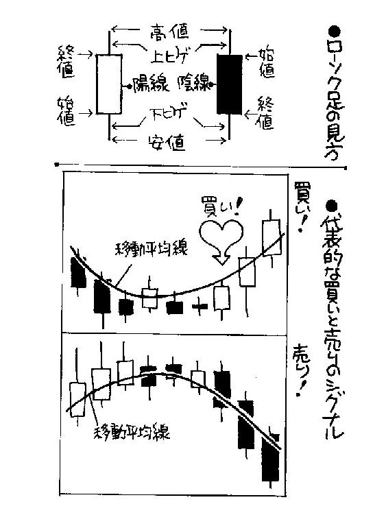
５ 「株式」用語集
【あ】
●ＲＯＥ（株主資本利益率）......株主資本が効率的に事業に使われているかを示す。ＲＯＥの水準が高いと、その企業の将来的な収益性や成長性が有望で、株主への利益還元率もよいと判断できる。
●ＥＰＳ（一株当たりの利益）......毎年の企業の利益水準の変化をみる指標。ＥＰＳが高いと企業の成長性が期待できる。
●移動平均線......一定期間（毎日・毎週・毎月）の終値の平均をとり、グラフ化したもの。10日移動平均線、25日移動平均線、75日移動平均線などがあり、平均をとる期間によって、短期的、中期的に株価変動の傾向がとらえやすくなる。
●押し目......値上がりトレンドにある銘柄が一時的に値下がりすること。その時に買うことを「押し目買い」という。
【か】
●会社四季報・チャートブック......会社四季報は企業の基本的なデータ、個別銘柄の情報などを掲載した情報誌。チャートブックは過去の株価の動きや売買高をグラフ化した「チャート」集計したデータブック。
●株価レーティング......日経平均株価などを参考に、ある一定期間内の株価の上下の値動きの可能性についてアナリストが格付けしたもの。あくまでも参考値として認識したい。
●キャピタルゲイン課税......株式などの売却益（キャピタルゲイン）に対する課税をいう。確定申告が必要な「申告分離課税」で、税率は20％。現在、株式売買益の税率は２００７年12月31日まで特別措置として、10％に軽減されている。
【さ】
●信用取引......顧客が約定代金の一定比率の金額（委託保証金）を証券会社に担保として預け、買付資金や売付証券を証券会社から借りて売買を行い、所定期間内に返済する取引のこと。
●自社株投資......資産運用先として、自分の勤める会社の株を買うこと。つまり自分の会社に株式投資するわけ。自社株を給与天引で買う持株会が、わが国では普及している。
●債券格付け......企業や政府および地方自治体などが発行する債券がデフォルト（元利金の支払いが不能になること）になる可能性のランク付け。「ＡＡ＋」「Ａ」「Ｂ」「Ｃ」と進むと、それだけデフォルトの可能性が高くなる。
【た】
●単位株制度......１９８２年の改正商法で導入された制度。額面×株数＝５万円という計算のもとに、５万円になる株数（例えば、５００円額面であれば１００株、５万円額面であれば１株）を単位株と称している。
●単元株制度......単元株制度とは、市場で取引可能な株数の単位を定めること。
●チャート......株価の動きをグラフにして、過去の相場の動きを研究するもの。普通、１日あるいは１週間といった期間中の「始値」「終値」「安値」「高値」を示す「ローソク足」で表される。
●天井・底......株価が上がっていくときにできる、いくつかの山の高いところを指す。最も高い山の天井を「大天井」という。また、値下がりしていくときの谷を底といい、最も低い谷を「大底」という。下がり続けた株価上昇に転じ始める状態を「底打ち」という。
【は】
●日足・週足・月足・年足......株価の高低の動きをそれぞれ１日単位（日足）、週単位（週足）、月単位（月足）、年単位（年足）でとらえたもの。株価トレンドを短期的にとらえるときは、日足・週足で、長期的にとらえるときは月足・年足を使う。
●ＢＰＳ（一株あたりの純資産）......企業が解散したときの一株あたりの価値を示している。株価の底値の判断基準になる。ＢＰＳが高いほど企業が安定しているといえる。
●ＰＥＲ（株価収益率）......株価が一株あたり利益の何倍になっているかを示す指標。ＰＥＲが高いと利益に比べて株価が割高、低いと割安と判断する。
●ＰＢＲ（株価純資産倍率）......一株あたりの解散価値と現在の株価を比べたもの。企業が解散した場合に株主に分配されるべき金額を表している。この数値が高い銘柄ほど、純資産に対しての株価が割高であるといえる。
●ファンドマネジャー......投資信託の対象銘柄の選定や、売買のタイミングを決定する担当者。顧客から集めた資金を運用する、投資のプロ中のプロ。
●分散投資......分散投資には「銘柄分散」と「時間分散」の２つの方法がある。銘柄分散とは、複数の銘柄に分けて投資すること。ある銘柄が下がっても、他の銘柄が上がることもあるので投資額全体が値下がりしてしまうリスクを軽減できる。時間分散とは、一度に買い付けてしまうのではなく、例えば毎月など、定期的に、定額で買い付けること。株価が高いときには少なく、安いときには多く買うことになる。（＝ドル‐コスト平均法）。
【や・ら・わ】
●約定......証券会社を通して、市場で価格を取り決めて、売買を成立させること。値段を「約定値段」または「出来値」といい、それに購入株数を掛けたものを「約定代金」という。
●優先株......配当（または残余財産）を、普通株より先に受け取る権利を持つ株式。欧米や韓国では、優先株が会社の乗っ取り防衛策として普及している。
※本書のデータはすべて、２００４年１月現在のものです。
給料が減っても貯蓄が増える！
40の節約術
発行日 ２０１２年12月20日電子版発行
著 者 節約術研究会
本作品の全部あるいは一部を無断で複製・転載・配信・送信したり、ホームページ上に転載することを禁止します。
本作品の内容を無断で改変、改ざん等を行うことも禁止します。
また、有償・無償にかかわらず本作品を第三者に譲渡することはできません。
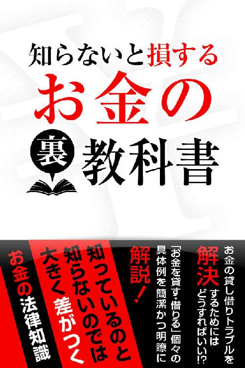
●はじめに
お金にまつわるトラブルは非常に多いです。実際、弁護士が相談を受ける大部分は、お金に関するトラブルです。
しかも、お金というのは人の関係を良くもすれば悪くもします。
例えば、「迷惑を掛けないから」と言われて保証人になったためにあとで大変苦労し、頼んだ人とのつき合いもなくなったということはよく聞く話です。
このようにお金のトラブルで苦労したり、人の関係が悪くなったりしないためには、なによりも正しい知識を持つことが重要です。
本書はお金に関するトラブルについて網羅しています。
とくに、最近、民法改正、新破産法の制定、民事再生法の改正、貸金業規制法の改正、新不動産登記法の制定など重要な法律の制定・改正が続いていますが、それらについても言及して最新の情報を取り入れています。
本書がお金のトラブルを防止する一助になれば幸いです。
著 者
『知らないと損するお金の裏教科書』～目 次～
第１章【お金の貸し方・借り方の法律】
Ｑ１ 借用書がないと、お金を返してもらえないの？
Ｑ２ 「借用書」と「金銭消費貸借契約書」とは違うの？
Ｑ３ 借用書の数字は「壱弐参」のように書かなければいけないの？
Ｑ４ 借用書を訂正するには？
Ｑ５ 契約書は必ず２通作らなければいけないの？
Ｑ６ 印紙がないと借用書は無効？
Ｑ７ 認印でも借用書作成は可能？
Ｑ８ 返済期限の定めがない借金は？
Ｑ９ 利息と遅延損害金はどう違うの？
Ｑ10 公正証書って何？
Ｑ11 公正証書はどこでどうやって作るの？
Ｑ12 連帯債務と連帯保証はどう違うの？
Ｑ13 資金使途を急に変えたら？
Ｑ14 夫が妻の実印を勝手に使って借金、妻の責任は？
Ｑ15 消費者金融の利率が29・２％、違法では？
Ｑ16 日掛け金融の金利は違法に高いのでは？
Ｑ17 白紙委任状に実印を押してしまった
Ｑ18 手形貸付ってどんなもの？
Ｑ19 借金を止めさせる方法はない？
Ｑ20 保険証券は担保になるの？
Ｑ21 権利証は担保になるの？
Ｑ22 保証書制度がなくなった？
第２章【保証人になる前に】
Ｑ１ 保証人の責任ってどんなもの？
Ｑ２ 連帯保証人と単純保証人は、どう違うの？
Ｑ３ 役員は会社の債務の連帯保証人にならなければいけない？
Ｑ４ 商工ローンのいわゆる根保証ってどんなもの？
Ｑ５ 民法で根保証契約の規定ができた？
第３章【おカネの返し方、返してもらい方】
Ｑ１ 金融業者が毎月の返済に領収書をくれない
Ｑ２ 一括返済時に借用書を返して欲しいが？
Ｑ３ 返済を早めたら当初定めた利息はどうなるの？
Ｑ４ 債権の譲渡を受けた別の会社から督促が
Ｑ５ 借金に時効はあるの？
Ｑ６ 10年以上返していない借金に業者から返済の要求が
Ｑ７ 借金まで相続するの？
Ｑ８ 借金の相続放棄はどのようにすればいい？
Ｑ９ 住民票は本人でなくても取れる？
Ｑ10 内容証明郵便による請求にはどんな意味があるの？
Ｑ11 裁判所から「支払督促」が......、どうすればいい？
Ｑ12 裁判所から訴状が......、正式な裁判に対処するには？
Ｑ13 差押えになると家財道具まで取られるの？
Ｑ14 夫が借金、離婚したら妻の責任はなくなるの？
Ｑ15 貸した相手が自己破産、貸した金はどうなるの？
Ｑ16 借主が会社の場合、社長の責任は？
Ｑ17 少額訴訟ってどんな仕組み？
Ｑ18 返済が滞ると給料は全額差し押えられるの？
第４章【借金の整理】
Ｑ１ 借金整理の方法、その長所と短所は？
Ｑ２ 司法書士に債務整理の代理ができるの？
Ｑ３ 個人の信用情報を調べるにはどうしたらいい？
Ｑ４ 弁護士に頼めば取立ては収まるの？
Ｑ５ 債務整理の弁護士費用はどのくらい？
Ｑ６ 借金の整理、弁護士であれば誰でも大丈夫？
Ｑ７ 悪質弁護士の見分け方
Ｑ８ 過払いならお金は返ってくるの？
Ｑ９ 過払い請求にはやはり領収書が必要？
Ｑ10 新しい破産法の制定、どんなところが変わったの？
Ｑ11 保険外交をやっているが破産は可能？
Ｑ12 公務員を辞めないと破産できない？
Ｑ13 破産したら、会社を辞めなくてはいけない？
Ｑ14 破産したら、携帯電話はそのまま使える？
Ｑ15 破産したら、自動車は取られてしまうの？
Ｑ16 破産を申し立てれば、給料の差押えは止まる？
Ｑ17 破産を申し立てる裁判所はどこ？
Ｑ18 破産にはどれくらいの期間が必要？
Ｑ19 破産手続きには、裁判所に何度も行くことが必要？
Ｑ20 破産手続きにかかる費用はどれくらい？
Ｑ21 ギャンブルで作った借金は免責されない？
Ｑ22 勤めていた会社が破産、遅配の給料はもらえない？
Ｑ23 別れた夫が破産、受け取っていた養育費はどうなる？
Ｑ24 再度の破産、免責は受けられる？
Ｑ25 個人再生手続きは、どのように？
Ｑ26 小規模個人再生手続きと給与所得者等再生手続き
Ｑ27 収入の不安定なアルバイト生活、個人再生手続きは利用できる？
Ｑ28 住宅資金特別条項ってどんなもの？
Ｑ29 外国人は日本で破産することはできない？
Ｑ30 個人再生の最低弁済額はいくら？
Ｑ31 特定調停ってどんなもの？
第５章【ヤミ金・悪質金融業者撃退法】
Ｑ１ ヤミ金ってどんな貸し方をするの？
Ｑ２ 登録業者だから安心と思うのは間違い？
Ｑ３ 整理屋ってどんな業者？
Ｑ４ 紹介屋ってどんな業者？
Ｑ５ 買取り屋ってどんな業者？
Ｑ６ チケット金融の仕組みとは？
Ｑ７ 車・家具リースの実態とは？
Ｑ８ 年金担保金融とは？
Ｑ９ システム金融ってどんな貸し方をするの？
Ｑ10 賭博場でできた借金をどうするか？
Ｑ11 破産したら、ヤミ金融からしつこい勧誘が
Ｑ12 押し貸しって何？
Ｑ13 借りてもいない業者から返済の要求が、どうすればいい？
Ｑ14 ヤミ金業者への有効な対処法は？
Ｑ15 詐欺の共犯になることを恐れて警察に届けられない
Ｑ16 お金の貸し借りでトラブルにならないために
Ｑ１ 借用書がないと、お金を返してもらえないの？
お金を貸したのですが、知人だったので借用書を作成しませんでした。ところが、知人は約束どおり返してくれず、「借用書がないから返す必要はない」と言う始末です。借用書がないと返してもらえないのでしょうか。
◆借用書がなくても契約は有効
借用書がなくても契約は有効であり、返済を求めることは可能です。
民法では、お金を返すことを約束して、そのお金を受け取れば金銭消費貸借契約は成立するとしています。したがって、契約書を作成せず、口頭の約束だけでも契約の効力は生じるわけです。
これは、近代私法の原則である契約自由の原則に基づくものであり、契約書を作成するかどうかを当事者の意思に委ねているわけです。
そうは言っても契約書は作成しておくべきでしょう。
その理由は、
①争いになったときの証拠になる
②契約の内容を明らかにしておくことができる
③記憶の補助手段になる
④意思決定が慎重になる
という効用があるからです。
とくに、会社間の取引で契約書がない場合には不利に働きます。会社間の取引では契約書があるのが当然であるという前提があり、契約書がないのは何か理由があるのだろうと思われるからです。
また、契約書があることによって無用な紛争を防ぐことができます。
したがって、契約書は必ず作成しておくべきです。万が一、契約書を作成できない事情がある場合は、メモでもかまいません。形式にこだわる必要はなく、とにかく書面にしておくことが重要です。
Ｑ２ 「借用書」と「金銭消費貸借契約書」とは違うの？
知人にお金を貸すので借用書を作ろうと思うのですが、サンプル書式にタイトルが「借用書」と書いているのもあれば、「金銭消費貸借契約書」と書いているのもあり、よく分かりません。意味が違うのでしょうか。
◆どちらも法律上の意味は同じ
「借用書」も「金銭消費貸借契約書」も法律上の意味は同じであり、契約書の効力に変わりありません。したがって、どちらでもいいわけです。もっとも、民法の条文では「消費貸借」と表現しているので、「金銭消費貸借契約書」のほうが法律に忠実といえるかも知れません。
重要なことは契約本文の内容であって、タイトルはあまり気にすることはありません。
そうはいっても、タイトルを気にする方は多いようです。
依頼者から「この契約書は『覚書』がいいのか『確認書』がいいのか」というように相談されることはよくあります。
「そんなのどっちでも一緒ですよ」と答えたのでは身も蓋もないので、一応契約の内容を聞いたうえで、答えるようにはしていますが。
このようにタイトルは重要でないといっても、タイトルと契約の内容とがずれている場合には問題があります。
例えば、契約の内容は労働契約なのに、タイトルを「業務委託契約」と名付けて、労働基準法の適用を避けようとする場合などです。
この場合、「業務委託契約」とタイトルを付けているからといって労働基準法の適用が回避できるわけではなく、契約の各条項の内容によって労働基準法等の適用の有無は決まります。
紛争を事前に防止するためにも、このような紛らわしいタイトルは避けるべきであり、内容に沿ったタイトルにすべきでしょう。
Ｑ３ 借用書の数字は「壱弐参」のように書かなければいけないの？
借用書に、貸した金額を書くときに、「壱、弐、参」と書かないといけないのでしょうか。
◆後で金額を改ざんされるのを防ぐため
貸した金額が「１００万円」のときに「一〇〇万円」と書かずに「壱百万円」と書くことがよくあります。これは、後で数字を改ざんされることを防ぐためです。とくに、「一」「二」「三」という数字は、横棒を一本増やすだけで金額が変わるので改ざんされやすいため、「壱」「弐」「参」と書くことが多いのです。
しかし、最近は横書きの契約書も多く、その場合に、「壱百万円」と書くと不自然に見えるせいか、「１００万円」と算用数字で書いている契約書もよく見ます。
このように算用数字で契約書を書いても、もちろん契約としては有効です。
ただ、数字を「壱、弐、参」と書いたとしても、算用数字で書いたとしても、改ざんを防ぐために契約書は２通作っておくべきでしょう。
かりに１通しか作らない場合には、コピーをして、原本またはコピーを持っておくようにして下さい。
なお、２通作成した場合に、２通の契約書を少しずらして割り印することがあります。
これも契約書の偽造を防止することが目的です。もっとも、割り印をしなかったとしても、契約の効力には関係がないので心配する必要はありません。
Ｑ４ 借用書を訂正するには？
借用書を作るときに書き間違えてしまいました。どのように訂正すればいいでしょうか。
◆２本線と印鑑で訂正する
ときどき借用書を書き間違ったときに訂正をどのようにすればいいのですかと相談されることがあります。
いちばん丁寧なのは次の方法です。
２本線で抹消し、（横書きの場合）その上に訂正する文言を書きます。そして、欄外に例えば「６字抹消、５字挿入」と書き、その下に双方の印鑑を押します。
内容証明郵便の場合は、このような訂正方法によります。
これに対し、簡便なのは次の方法です。
２本線で抹消し、（横書きの場合）その上に訂正する文言を書きます。そして、抹消した箇所に双方の印鑑を押します。「○○字抹消、○○字挿入」ということは書き込みません。
２つの訂正方法のうちどちらが正しいというわけではありません。
要は、偽造したものではなく、双方合意の上で訂正したものであることを書面上で明確にしておくことが重要なのです。
したがって、あまり重要でない内容を訂正する場合には、２本線で抹消し、そこに印鑑を押すという簡便な方法で十分です。
われわれ弁護士が作成して裁判所に提出する書面でも、訂正がある場合は、簡便な方法で訂正しています。
しかし、金額を訂正するような場合には簡便な方法での訂正は避けたほうがいいでしょう。
このような重要な箇所の場合は、そもそも訂正すること自体が問題であり、できれば訂正ではなく契約書を作成し直したいものです。
Ｑ５ 契約書は必ず２通作らなければいけないの？
契約書は必ず２通作らないといけないのでしょうか。また、当事者全員が署名捺印しなければならないのでしょうか。銀行で融資を受けたときは、１通しか作らず、しかも、銀行の印鑑がなかった記憶があるのですが
◆何通作るかにはあまり意味がない
契約書を作る理由は、①争いになったときに証拠にする、②契約の内容を書面で明らかにしておく、③書面にすることで記憶の助けとする、④書面を作ることによって意思決定が慎重になる、という効用があるからです。
そうすると、契約書はこの要求を満たせばいいのですから、契約書を何通作るかはあまり意味はないということになります。
また、２通作成すると、印紙代が２倍必要となりますが、１通だけで済ませれば、それだけ印紙代を節約することができるというメリットもあります。契約金額が高いと印紙代もばかになりませんから。
したがって、１通だけ作成して、あとはコピーでもいいといえます。コピーさえあれば、後で契約書の原本を偽造したとしても、コピーと付き合わせれば、偽造したことは分かるからです。
また、契約書では当事者全員が署名捺印するのが通常ですが、契約は当事者の口頭での合意でも成立するぐらいですから、貸主が署名捺印しなくても契約としては有効です。
銀行から借り入れるときの契約書は、貸主である銀行は印鑑を押さず、借主が署名捺印して差し入れる形式になっていることが多いようです。このように差入れ形式にする理由は、これだけで前述の契約書を作成する理由としては十分足りるし、印紙代を節約できるからです。
ただ、これは銀行という信用力のあるところだから許されることです。通常は、当事者双方が署名捺印するようにすべきでしょう。
Ｑ６ 印紙がないと借用書は無効？
友人にお金を貸したときに借用書を作ったのですが、印紙を貼っていませんでした。この借用書は有効でしょうか。
◆印紙の有無や印紙額が適正かは契約の効力には影響しない
借用書などの契約書に印紙を貼付していなくても、契約が無効になるわけではありません。また、後に裁判になったときに、証拠として認められないわけでもありません。
すなわち、印紙の有無や、印紙額が適正かなどは契約の効力にはまったく影響しないのです。
しかし、印紙を貼付しないことは脱税となり、印紙税額の３倍相当の過怠税が課されることになっています。
また、偽りその他不正の行為により印紙税を免れようとしたときは、１年以下の懲役もしくは20万円以下の罰金という刑事罰が課されることもあり得ます。
このように印紙を貼付しないことが脱税になるとしても、契約の成否には影響しないことから、多くの弁護士は当該契約書にいくらの印紙を貼るべきかについて十分な知識がないかも知れません。そのため、顧問弁護士に「この契約書の印紙額はいくらになるでしょうか」と聞いても即答できないことがあるかも知れませんが、そのようなことがあっても、「うちの弁護士さんは大丈夫かなあ」と思わないで下さい。
私もときどき顧問会社から印紙額を聞かれることがありますが、即答できないので、必ず調べてから答えるようにしています。
参考までに代表的なケースの印紙額を挙げておくと、次のとおりです。
１万円以上10万円以下の金銭消費貸借契約書
印紙額 １通につき２００円
３万円以上１００万円以下の売上代金に係る受取書
印紙額 １通につき２００円
継続的取引の基本となる契約書
印紙額 １通につき４０００円
Ｑ７ 認印でも借用書作成は可能？
友人にお金を貸したので借用書を作ろうとしたのですが、相手が実印を持ってくるのを忘れたため、文具店で認印を買ってきて押してもらいました。この借用書は有効でしょうか。
◆実印でなくても契約は有効に成立する
契約は口頭の約束でも有効に成立します。とするなら、押す印鑑も実印でなく認印でも当然に有効です。
それでは、なぜ実印を要求されることがあるのでしょうか。
裁判になったときに、「私は契約していない。この契約書に押してある印鑑は私のものではない」という主張がなされることがあります。
ところが、実印を押してあり、それに印鑑証明書を添付している場合には、「この印鑑は私のものではない」という主張はほとんど認められないでしょう。
また、契約書に印鑑を押したことは認めても、「何の書類かよく分からなかった。言われるままに印鑑を押しただけである」と主張されることもしばしばあります。
しかし、実印は重要な印鑑であると認識されていますから、実印を押す場合は慎重になるはずであると考えられています。したがって、契約書に実印を押しているのに、「何の書類かよく分からなかった」という主張は通りにくいでしょう。
このように、わざわざ実印を押すのは、争いになったときに、①契約したのが本人であること、②契約する意思があったことの証明を容易にすること、という目的があるわけです。
したがって、お金を貸す立場に立てば、実印を押してもらい、印鑑証明書を添付してもらったほうが安全でしょう。
かりに、設例のように実印を忘れたのであれば、認印でも仕方ありませんが、署名は必ず自筆でしてもらって下さい。ワープロで打った氏名に認印を押しただけでは、後に本人であることの確認が容易でなくなり、争われる元になるからです。
Ｑ８ 返済期限の定めがない借金は？
知人にお金を貸したのですが、返済期限を定めませんでした。貸してから１カ月経ったころ急に資金が必要になったので返済を求めると、知人は「そんな急に言われても困る」と言って返してくれません。
◆返済期限を定めない契約も有効
お金を貸すときに返済期限を定めた場合は、その返済期間が過ぎれば遅滞となり遅延損害金が発生します。
例えば、返済期限を平成17年３月２日と決めたときは、３月２日までに支払わなければならず、支払わないときには、翌日の３月３日から遅延損害金も含めて支払わなければなりません。
お金を貸した場合はこのように確定した返済期日を決めることが通常でしょうが、いろいろな事情から返済期日を定めない場合もあり得るでしょう。そのように返済期限を定めない契約も可能であり、契約としては有効です。
では、その場合いつでも返してくれと言えるのでしょうか。あるいは、期限を定めていないのですから、貸主は返してくれと言えないのでしょうか。
この点について民法４１２条３項は、「債務の履行について期限を定めていないときは、履行の請求を受けたときから遅滞になる」と定めており、また、民法５９１条１項は、「返還の時期を定めていないときは、相当の期間を定めて返還の催告をすることができる」と規定しています。したがって、金銭消費貸借契約で期限の定めのない場合は、いつでも返還を求めることができるのですが、「すぐに返せ」とは言えず、ある程度の期間を決めて、そのときまでに返せと言えるということになります。
突然返せと言われても借りたほうも困るので、ある程度余裕を与えなさいというわけです。なお、返済を求める方法にはとくに制限はなく、口頭、メールなどでもよいのですが、返済を求めたという事実と、その日付を証拠として残しておくために、配達証明付内容証明郵便で行うのが適切でしょう。
Ｑ９ 利息と遅延損害金はどう違うの？
利息と遅延損害金の違いがよく分からないのですが。
◆遅延損害金とは債務不履行の損害賠償金
利息とは、元本債権の存在を前提として発生する元本の収入と説明されています。
分かりやすくいえば、お金を借りた人は、そのお金を使って利益を得ているのですか
ら、その対価を支払いなさいというわけです。
利息は定めないことができます。また、利息を取ることは定めても、利率は定めな
いこともできます。利率を定めなかった場合は、法定利率は年５％とされています。
ただし、商人間においては、法定利率は年６％と若干高くなっています。
これに対し遅延損害金は、金銭債権において債務不履行があった場合の損害賠償金ですので、「利息」とは性質が異なります。「遅延損害金」といういい方のほかに、
「遅延利息」といういい方もしますが、「遅延利息」は「遅延損害金」と同じ意味です。
遅延損害金は契約で定めていれば、それに従いますが、利率を定めていない場合は、年５％とされています。ただし、商人間においては年６％となっています。
この年５％（あるいは年６％）という遅延損害金は、現代のような低金利時代では大きな意味を持つようになり、例えば交通事故の損害賠償事件において、交渉が長引いて支払いが遅れると、遅延損害金だけでも大変な額となることがあります。
このように、利息と遅延損害金は当事者が約束すればそれに従うのが原則ですが、金銭消費貸借契約においては、当事者が約束すればいくらでもいいというわけではなく、利息制限法によって次のように制限されています。
元本10万円未満 年利20％以下 遅延損害金年29・２％以下
元本10万円以上１００万円未満 年利18％以下 遅延損害金26・28％以下
元本１００万円以上 年利15％以下 遅延損害金年21・９％以下
ただし、貸金業規制法及び出資法により、貸金業者が貸し付けた場合において、一定の要件を満たすときは、利息の上限利率は29・２％まで認められています。
Ｑ10 公正証書って何？
金融業者から融資を受けようと思うのですが、公正証書にして欲しいと言われています。公正証書にはどのような意味があるのでしょうか。
◆公正証書を作成しておくといきなり強制執行ができる
金融業者が公正証書を作成する最大の理由は、公正証書を作成しておくと、債務者が返済できなくなったときに裁判手続きを経ずにいきなり強制執行ができるからです。
そのため、公正証書が作成されていると、給料をもらっている人や、自営業者で銀行取引のある人には非常に脅威となります。
ところが、金融業者はこのような公正証書の意味を十分説明しないまま、委任状と印鑑証明書を提出させることが多く、そのため債務者のなかには公正証書を作成したことさえも知らない人が多いのが実情です。
債務整理の相談を受けるときに、「公正証書を作成していますか」と聞いても、ほとんどの人が「いろいろ書かされたからよく覚えていません」と答えます。
そこで、「印鑑証明書は渡しましたか」と聞くことにしているのですが、印鑑証明書を渡したと答える場合はほとんど１００％公正証書を作成していると思ったほうがいいでしょう。というのは、委任状に実印を押して、印鑑証明を添付すると、金融業者の社員が債務者の代理人となって公正証書を作成することができるからです。
経験からいうと、公正証書を作成する金融業者は、取り立てが厳しいことが多いようです。したがって、印鑑証明書を要求する金融業者から借りる場合には返済の見込みが確実な場合に限るなど、十分注意したほうがいいでしょう。
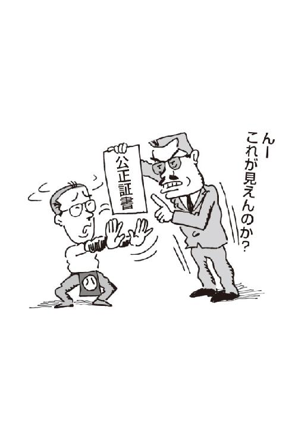
Ｑ11 公正証書はどこでどうやって作るの？
公正証書はどこで作ればいいのですか。作るときにどのような書類が必要ですか。
◆公証役場において公証人が作成する
公正証書は公証役場において公証人が作成します。
公証人は、元裁判官、元検察官、元法務局出身者がほとんどであり、定年が70歳なので再就職先として人気があるようです。
公証役場は全国にあり、東京都には45カ所もあります。公正証書はどこの公証役場で作成してもかまいません。
金銭消費貸借契約において公正証書を作成する目的は、①裁判手続きなしで強制執行できるようにしておくということが最も大きいのですが、それ以外に、②通の借用書などの私文書と比較して証明力が強い、③公証人がチェックすることにより契約関係が明確になる、④確定日付としての効力を持ち、日付の優劣が問題となる場合に意味があるという意義もあります。
公正証書を作成する場合は、当事者が公証役場に出頭することが原則とされていますが、遺言証書や死因贈与以外は代理人でも作成することが可能です。
代理人による場合には、本人の印鑑証明書と実印の押されている委任状が必要です。委任状には委任事項を記載しておく必要があり、通常は、委任状に契約書のコピーを付けて割り印します。
代理人は弁護士でなくてもなることが可能であり、金融業者が作成する公正証書は、ほとんどが金融業者の社員が借主の代理人となって作成しています。
作成手数料は、金銭消費貸借契約書の場合は、貸金の金額が１００万円までであれば５０００円です。公正証書の原本は原則として20年間公証役場で保管し、当事者には正本、謄本が交付されます。
Ｑ12 連帯債務と連帯保証はどう違うの？
夫婦で住宅ローンを借りたのですが、妻の私は連帯債務者となっていました。連帯保証人に比べて責任は重いのでしょうか。
◆連帯保証債務は主債務者と保証人の間に主従関係を発生させる
連帯債務とは、貸主とそれぞれの借主との間に独立した金銭消費貸借契約があり、これが結合したものと考えてよいでしょう。連帯債務者はそれぞれが対等な関係といえます。
これに対し、連帯保証債務は、債務者の債務を保証するわけですから、債務者と保証人との間には主従の関係があります。
具体的な違いとしては、連帯債務では、債務者の１人について契約が無効・取消となった場合でも他の債務者に影響しないのに対し、連帯保証債務の場合には、債務者に生じた事由は、すべて保証人に効力が生じます（ただし、破産、民事再生などにおいて例外があります）。
しかし、連帯債務にも保証人的役割があり、そのような具体的役割に着目するならば、連帯債務と連帯保証との実際上の違いはあまりないといえるでしょう。
このように保証人的役割があるという意味では共通しているのですが、金融機関は、連帯債務貸付ではなく、連帯保証貸付にすることが多いようです。
というのは、債権譲渡したり、契約条件を緩和するような場合に、連帯保証の場合であれば、債務者に対してだけ手続きを行えば、連帯保証人にもその効力が及ぶのに対し、連帯債務の場合は、それぞれが独立して金銭消費貸借契約があるという性質上、連帯債務者全員とその手続きを行わなければならないという煩雑さがあるからです。
設例のように配偶者が連帯保証人ではなく、連帯債務者になったのは、配偶者も不動産を共有しているなどの特別な事情があったからでしょう。
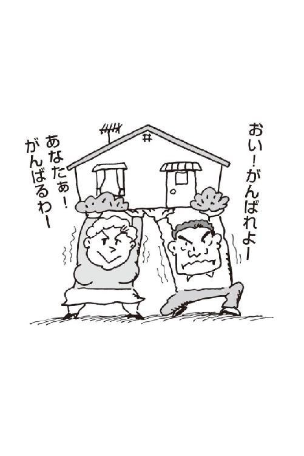
Ｑ13 資金使途を急に変えたら？
銀行から借り入れるときに資金使途を書きましたが、急に必要になって別の目的に使ってしまいました。問題があるでしょうか。
◆一括の返済を求められる可能性がある
金融機関から借入をするとき、必ず資金使途を書かせられます。
事業者であれば、例えば機械購入資金とか、短期運転資金とか書くことが多いでしょうし、個人の借入であれば、例えば教育資金とか、リフォーム資金とか書くことが多いでしょう。
このように資金使途を書くのは、主に次のような理由によります。
①融資したお金がどのように使われるかは、貸付金の回収の成否に影響するため。
例えば、「機械購入資金」とすると、機械購入により生産能力が高まり、収益が上がることから資金回収は可能であろうと思って融資するわけです。
②貸付金を好ましくない資金に使うことを防ぐため。
極端な例ですが、使途を「ギャンブル」と書いた場合、それは好ましくない資金ですから、金融機関が融資するはずがありません。
③貸主の責任を回避するため。
社会的に問題のある融資を断り、金融機関としての責任を回避するためです。ただ、消費者金融業者のなかには、ギャンブルに使うことを薄々承知しながら、「生活費のため」と書かせることがあり、使途の記載が単なる言い訳に使われている面もあるように思います。
このように資金使途を書かせることは、融資する側にとっては非常に意味のあることです。そのため、金銭消費貸借契約書には、「資金使途を偽った場合には期限の利益を喪失させ、一括で返済する」という条項が入っていることがあります。このような条項が入っている場合に、資金使途を偽ったことが分かった場合は、一括の返済を求められる可能性がありますから、注意すべきでしょう。
Ｑ14 夫が妻の実印を勝手に使って借金、妻の責任は？
夫が私の実印を勝手に持ち出し、保証人欄に私の名前を書いて印鑑を押し、お金を借りてしまいました。私に責任はあるのでしょうか。
◆実印を押していることについて負う責任はそれぞれのケースによって異なる
実印というのは大切なものという社会通念があります。それゆえ、契約書に実印を押して印鑑証明書を添付していると、「何も考えずに印鑑を押した」とか、「私は押していない」と言ってもなかなか認めてもらえず、責任を免れることは非常に難しくなります。
しかし、それはそれぞれが別々に生活している場合のことです。
夫婦のように一緒に生活している場合は、実印を持ち出すことも、印鑑証明を取ることも比較的容易にできます。
そうすると、実印を押しているというだけで配偶者が保証人になることを承知していると信じたとしても、安易に信じた債権者にも落ち度があるといえます。
夫婦ではなく、子が勝手に親の実印を持ち出して親を保証人とした事例ですが、「子が血縁の緊密さを悪用して、自己の利益を図る目的で親の実印を使用し、親の代理人として行動することはしばしば見られることであるから、貸す側は実印と印鑑証明書を差し入れたというだけで代理権があると信じたのはいささか軽率である」として親の保証責任を否定した判例もあります。
もちろん、夫婦であれば実印を勝手に使われても常に責任は生じないとはいえません。夫がそれまで何度か妻の実印を使用しており、それを妻も認めていた場合には、たとえ問題となった契約については承知していなかったとしても、表見代理が成立し、妻が責任を負う場合もあるでしょう。
結局は、個々の具体的事情によって異なるとしかいえません。
ただ、実印を押しているからといって常に責任を負うわけではないので、諦めることはないでしょう。
Ｑ15 消費者金融の利率が29・２％、違法では？
消費者金融業者からお金を50万円借りたのですが、利率が29・２％でした。ところが、あとで本を読むと、法律上、利率は18％以下と書いてありました。どうして違うのでしょうか。
◆一定の要件を満たす書面を交付すれば利率の上限は29・２％に
利息制限法で認められている利率は、次のとおりです。
元本10万円未満 年利20％以下
元本10万円以上１００万円未満年利18％以下
元本１００万円以上 年利15％以下
設例の「本を読むと、法律上、利率は18％以下と書いてあった」というのは、この利息制限法のことをいっているわけです。
ところが、貸金業規制法及び出資法では、貸金業者が貸し付けた場合において、一定の要件を満たす書面を交付した場合には、利率の上限は29・２％とされています。
これが「みなし弁済」といわれる規定であり、貸金業者は、このみなし弁済が適用されるという考えの下に、利息制限法を超える利率を適用して貸し出しているのです。
一定の要件を満たす書類とは、貸付契約書（「17条書面」といわれています）と、受取証書（「18条書面」といわれています）のことですが、最近、最高裁はこの要件を非常に厳格に解釈する姿勢を打ち出しました。その結果、貸金業者が交付する書面の多くは、最高裁の考え方を前提にすると法律の要件を満たさないと思われます。
そのため、設例の場合でいえば、29・２％の利息を取ることは認められず、18％で計算し直さなければならない可能性が高いと考えられます。
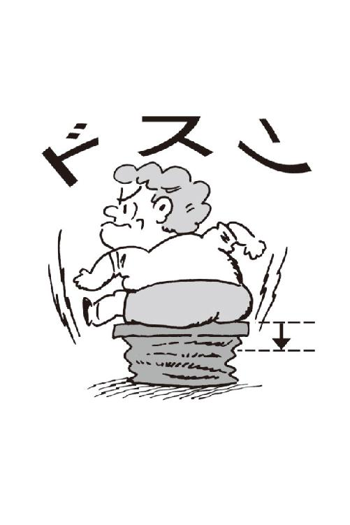
Ｑ16 日掛け金融の金利は違法に高いのでは？
私は飲食業を営んでおり、日掛け金融からお金を借りています。金利が高いようなのですが、違法ではないでしょうか。
◆毎日貸金の回収を図る日掛け業者には「日掛け貸金業者の特例」がある
日掛け金融と呼ばれる金融業者は、法律上は「日賦貸金業者」と呼ばれています。
日掛け金融業者は、飲食店などの営業主に貸付け、ほぼ毎日、営業している店に集金に赴いて貸金の回収を図っています。
日掛け金融業者は、出資法の「日賦貸金業者についての特例」という規定において、他の金融業者は金利の上限が29・２％とされているのに対し、54・75％まで金利を取ることが認められています。
このような高金利が認められているのは、日掛け金融業者はほとんどが零細業者であること、他の貸金業との兼業を禁止されていること、毎日のように集金に赴くので回収にコストがかかることなどが理由とされています。
しかし、今日の低金利時代においては消費者金融の29・２％でも高いという印象があるのに、54・75％の金利を取ることが認められるというのは不思議というしかありません。
飲食店でも、ある程度の売り上げがあり黒字になっていれば銀行などから融資を受けることができます。それゆえ、日掛け金融業者から借りるのは、必然的に赤字経営のところが多くなります。
日掛け金融業者は毎日集金に来ますが、前日の売り上げが少ないときもあるでしょうから、そのようなときは当日の材料の仕入れ代金まで返済に充てることになり、赤字経営なのにますます魅力のない店になるわけです。実際、私の経験でいえば、日掛け金融業者から借りていたお店はすべて閉めてしまいました。
54・75％という金利はどう考えても高いですから、日掛け金融には手を出さないほうが無難でしょう。
Ｑ17 白紙委任状に実印を押してしまった
金融業者から融資を受けたのですが、そのときに何も書いていない委任状に実印を押さされ、印鑑証明書も渡しました。どうすればいいでしょうか。
◆適法な金融業者は白紙委任状を取ることはない
貸金業規制法20条は、貸金業者は、公正証書を作成するための委任状を取得する場合には、白紙委任状を取ってはならないと定めています。
これは、公正証書は裁判手続きを経ずに直ちに強制執行ができるため、濫用の危険性が大きいからです。
さらに、金融庁事務ガイドラインでは、公正証書を作成するための白紙委任状だけでなく、白紙委任状全般について、その取得は貸金業規制法で禁止している不正、又は著しく不当な手段に該当するおそれが大きいとしています。
したがって、適法な貸金業者であれば白紙委任状を取ることはまずありません。
白紙委任状を取られたというのであれば、それは違法な業者でしょうし、それだけに危険は大きいです。
白紙委任状を使って公正証書を作成された場合、それは直ちに強制執行ができるという強い効力があるだけでなく、公証人によって作成された書面だけに信用性も高いとみなされます。
そのため、あとから委任は無効であるとして争うことは非常に難しいのが実情です。
そこで、まず委任を解除する旨の通知を内容証明郵便で出しておくべきです。委任契約は原則として各当事者はいつでも解除できるとされているからです。
しかし、すでに公正証書を作成されている場合には、公正証書の無効を主張して請求異議の訴訟をするしかありませんが、それは困難を伴うことを覚悟して下さい。
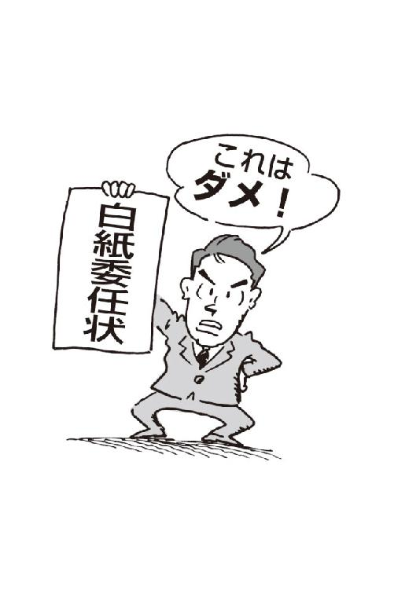
Ｑ18 手形貸付ってどんなもの？
金融業者から融資を受ける際に手形を振り出して欲しいと言われました。手形を振り出したことはないのですが、どのような意味があるのですか。
◆利点が多く、金融機関でしばしば利用される
手形貸付とは、借用書の代わりに手形を振り出させ、借主に、手形額面から満期までの利息を差し引いた金額を渡す形態の貸付です。
これに対し、借用証書の差し入れを受けて貸し付ける形態を証書貸付といいます。
手形貸付は次のような特徴があり、金融機関でよく利用されています。
①手形不渡りのおそれという心理的圧迫のため、履行が確保される。
②当座勘定で決済することができる。
③貸主は、手形訴訟という簡便な訴訟を利用できる。
④手形要件が決まっているため、手形作成等が簡易である。
⑤貸主は、手形割引により容易に資金化できる。
⑥手形の支払期間が比較的短期のため、貸付け条件の変更を行いやすい。
⑦手形は、手形金額が10万円未満の場合、印紙税が非課税となるなど、安い。
このような理由から手形貸付を利用されることは比較的多く、それゆえ、手形貸付
だからといって心配することは本来はありません。
もっとも、商工ローン業者の中には、このような本来の意味の手形貸付でなく、もっぱら借主が支払いができなくなったときに手形訴訟を利用するためだけに手形の振出をさせる場合があります。また、手形も統一手形用紙を用いた手形ではなく、私製の手形を使っています。
その理由は手形訴訟は書面のみによる審理のため、非常に早く判決が出るからです。ある商工ローン業者は、このような手形貸付に基づき大量の手形訴訟を提起していたのですが、それは手形訴訟制度の濫用ともいうべきことから、東京地裁は、商工ローン業者の私製手形に基づく手形訴訟を認めませんでした。
Ｑ19 借金を止めさせる方法はない？
主人が何度も借金を繰り返し、そのたびに貯金を取り崩したり、実家の援助を受けて返しています。何とか借金を止めさせる方法はないでしょうか。
◆止められるかどうかは結局本人の意思
私の経験からいえば借金の原因の多くは、ギャンブルか、女性のために使った場合のようです。飲食というのは、それに付随するだけで、飲食だけで多額の借金をすることはあまりないように思います。
そして、家族に言われて借金をスパッと止められる人もいますが、借金を何度も繰り返す人がいるのも事実です。
借金を止めるかどうかは、結局本人の意思次第なのです。
よく家族や両親が心配して借金を肩代わりするケースがあります。それ自体は責められることではないですが、その場合には、家族が直接金融業者と話して返済するのは止めたほうがいいでしょう。
なぜなら、そのように家族が本人に代わって支払っても、金融業者にとっては「本人が払えなくても家族が払ってくれるいいお客」になりますから、本人に再び勧誘の電話がかかってくる可能性が高いからです。
家族が「もう貸さないで下さい」と言ったとしても、それをきちんと守る業者ばかりとは限りません。
このような場合は、弁護士や司法書士に依頼して債務整理を頼んだほうがいいと思います。そうすれば、弁護士等が介入したということが記録に残りますから、通常の貸金業者であれば二度と貸さないでしょう。
しかも、家族だけで返済した場合は、利息制限法を超える約定金利を支払うことになってしまいがちですが、弁護士等が介入すれば利息制限法に引き直した残元金だけを支払う交渉をします。そのような点からも、やはり弁護士等に頼んだほうがよいと思います。
Ｑ20 保険証券は担保になるの？
生命保険の保険金を担保に知人にお金を貸し、保険証券を預かっています。ところが、知り合いから保険証券を持っていても何の意味もないと言われました。本当でしょうか。
◆ただ預かっているだけでは担保にならない
返済できなくなったときに、物で返してもらったり、その物を売却してその代金で返してもらうのが担保です。
これらは物的担保と呼ばれており、民法は、担保として留置権、先取特権、質権、抵当権の４種類を定めています。
留置権は、債権の弁済を受けるまでその物を留置できる権利です。
先取特権は、法律の規定に従い、他の債権者に先立って弁済を受けることができる権利をいい、給料も先取特権とされています。
質権は、債務者などから受け取った物を占有し、その物について優先して債権の弁済を受けることができる権利です。質権の対象となるのは物に限らず、債権も対象となり、保険金受取請求権も債権の一種として質権の設定が可能です。
抵当権は、債務者などの占有を移さないで、不動産について優先して債権の弁済を受けることができる権利です。
その他、特別法で認められた担保や、判例上認められた担保である譲渡担保、再売買の予約などがあります。
担保は、それぞれ成立するための要件や、第三者に対抗する要件が定められています。その方式によらずに担保を設定したとしても、それは有効な担保となりません。
設例でいえば、保険金受取請求権は債権質として担保の対象となりますが、保険証券を受け取っておくだけでは足りず、保険会社にそれを主張するには、保険会社の承諾が必要となります。したがって、その手続きをせず、保険証券を預かっているだけでは何の意味もないことになります。
Ｑ21 権利証は担保になるの？
知人にお金を貸すので担保として抵当権をつけてもらおうと思ったのですが、「登記されると信用がなくなるので止めて欲しい。その代わり権利証を預けておくから」と言われました。権利証を持っていれば担保を取っているのと同じでしょうか。
◆株券や手形と違い権利が表象されているわけではない
一般に権利証といわれている書類は、登記済証のことです。この書類は登記がなされたときに登記権利者に交付されます。
権利証が交付されるのは、申請した登記が完了したことを通知するためです。
しかし、権利証のより重要な役割として、将来、各種登記をするときに、本人であることの証明ないし不動産の所有者であることを証明するために必要な書類となるということがあります
例えば、不動産を売却するときには権利証が必要になるのであり、その意味では重要な書類といえます。
しかし、権利証は株券や手形と違い、権利が表象されているわけでありません。登記が完了したことの通知と、本人であることの証明ないし不動産の所有者であることの証明のために必要なだけであり、それ自体に財産的価値があるわけではないのです。
権利証は前述のような重要な機能を有しているため、紛失しても再発行はされませんが、それに代わる保証書があれば権利証がなくても登記は可能です。
保証書とは、登記を受けた成年者２人以上が、登記義務者が人違いでないことを保証した書面です。そのため、権利証を紛失したことにして保証書を作成すれば権利証がなくても所有権移転登記などができることになります。
このように権利証は大事な書類ですが、担保としての価値はないので、持っていてもあまり意味はないということになります。
なお、法改正により、登記はオンライン申請で行うことが可能になったため、次第に権利証はなくなっていくでしょう。
Ｑ22 保証書制度がなくなった？
保証書による登記申請が廃止になったと聞きましたが、どのように変わったのでしょうか。
◆保証書制度に変わり、事前通知制度となる
Ｑ21で、権利証を紛失しても保証書によって登記が可能と書きました。
しかし、保証書を利用して不正な登記がなされるなど保証書制度が悪用されることがしばしばあり、そのため、改正された不動産登記法では、保証書制度を廃止し、それに代わり事前通知制度を採用することにしました。
事前通知制度とは、登記申請がされた場合、登記所から本人を確認するための書面が、本人限定受取郵便によって郵送されるものです。
なお、新しい不動産登記法は平成17年３月７日から施行される予定です。
Ｑ１ 保証人の責任ってどんなもの？
知人から「保証人になって欲しい。絶対に迷惑をかけないから」と言われています。昔お世話になった方で断りきれず困っています。
◆保証人になるときは覚悟を決めて
保証人は債務者が返済できなければ、すべての責任を負うことはよく知られていると思います。それにもかかわらず、保証人になって苦しむケースは相変わらず多いようです。
保証人は借りたお金を使っていないわけです。それなのに返済の責任を負うわけですから、同情せざるを得ません。もっとも、なかにはお互いが保証人になり合って、消費者金融からお金を借りるケースもあり、このような場合はあまり同情できませんが。
保証人になって苦しんでいる人は、あとで考えるとなぜ保証人になったのかと思うのでしょうが、おそらく保証人になったときの債務者の頼み方が尋常でなかったからだと思います。
お金を借りる人は、最初は他人に迷惑をかけてまで借金したくないと思っているでしょう。そのため、保証人を頼もうなんて夢にも思っていません。ところが、次第に借金が増えていき、金融業者から「保証人をつけないと貸さない」と言われると、ここで借りられないと返済が滞ってしまいますから、何とかして保証人になってもらおうと思います。そのため、頼む方は必死であり、頼まれる方は迫力負けするのでしょう。
しかし、そのような状態は債務者としてはもはや末期症状です。まもなく弁護士に相談して破産をしたり、あるいは夜逃げ同然で連絡が取れなくなったりして、すべての責任が保証人にかかってきます。保証人になった場合は、最悪、その債務を自分で払うぐらいの覚悟を決めておくべきであり、その覚悟がなければどんなに頼まれても断るべきです。
Ｑ２ 連帯保証人と単純保証人は、どう違うの？
連帯保証人になったのですが、貸主からいきなり返済を要求されました。借りた人は十分返済する能力があるのですから、その人から返済してもらうべきではないでしょうか。
◆連帯保証の場合にはいきなり請求されても拒めない
保証債務は、主たる債務に従属する性質があります。したがって、主たる債務が無効の場合には、保証債務も無効になり、主債務者が債務を弁済すれば、保証債務もなくなります。
この点は、単純保証も連帯保証も保証債務である以上同様ですが、責任のあり方では２つに違いがあります。
単純保証の場合には、債権者が主たる債務者に請求せずに、いきなり請求を受けた場合には、まず主債務者に催告すべきであると言うことができます。
また、債権者からの請求に対し、主債務者に弁済する資力があり、執行が容易であることを証明して、まず主たる債務者の財産を執行せよと言うこともできます。
さらに、単純保証人が複数いる場合には、保証人はその割合に応じた責任しか負いません。例えば、５００万円の債務について、２人が単純保証した場合は、それぞれ２５０万円ずつしか保証の責任を負わないことになります。
これに対し、連帯保証の場合には、そうはいきません。責任がずっと重くなります。
債権者が主たる債務者に請求せずに、いきなり請求を受けても拒むことができません。また、債権者からの請求に対し、まず主たる債務者の財産を執行せよと言うこともできません。
さらに、連帯保証人が複数いても、それぞれが全額を保証しなければなりません。先の例でいえば、債権者が、資力のありそうな連帯保証人を狙って５００万円全額を請求すると、それを拒むことができないわけです。
このように、単純保証に比べて連帯保証の責任は重いといえます。
Ｑ３ 役員は会社の債務の連帯保証人にならなければいけない？
会社役員になりました。すると、社長から、会社が借り入れている債務の連帯保証人になることを求められました。応じなければならないのでしょうか。
◆社長から頼まれても連帯保証する義務はない
日本の金融機関は、中小企業に対する融資に対し、社長はもちろん会社役員まで連帯保証人になることを求める傾向にあります。そのため、会社が倒産すると自宅まで取られてしまいかねません。
オーナー社長であれば、それも致し方ないのかもしれませんが、通常の給料生活者が出世して役員になった場合には、それは悲劇といえます。
連帯保証契約は、貸主と保証人になろうとする人の間で締結される契約ですので、いかに社長に頼まれたとはいえ自分の判断で契約するか否かを決めることができます。
また、商法などの法律においても会社役員が連帯保証する義務を定めているわけではありません。
そうはいっても、社長から頼まれて断ることは難しく、結局は、連帯保証人にならざるを得ないことがほとんどではないでしょうか。
以前、知人から、「今度役員になるのだが、役員になると連帯保証人になることを求められる。万が一のことを考えて、自宅を妻の名義にしておきたいのだが大丈夫だろうか」と相談されたことがあります。
これは、自宅を妻へ名義移転したことが詐害行為として取消の対象になるかどうかの問題ですが、その時点では連帯保証債務を負っていないのですから、債権者を害したことにはならず、名義移転は有効と思われます。しかし、会社や金融機関がそれを知れば信用がなくなるのではないか、と答えたことがあります。
このようなことを心配しないといけないのは、企業の収益力を分析することなく、何でも個人保証に頼ろうとするからであり、そういった金融機関の姿勢にも問題があるのではないでしょうか。
Ｑ４ 商工ローンのいわゆる根保証ってどんなもの？
商工ローン業者から事業資金を２００万円借りるので保証人なってほしいと知人から頼まれ、断り切れず応じました。ところが、後になって商工ローン業者から、債務者は５００万円借りているので全額支払えと言われました。このようなことがあるのでしょうか。
◆根保証で思いもしない保証債務を背負う
これは、いわゆる根保証といわれている問題で、思いもしない保証債務を背負い、そのため家庭が崩壊するという悲劇も起こっています。頼まれて２００万円について保証人になったのに、どうしてそれ以上の責任を負うのか理解に苦しむ人も多いようです。
根保証とは、保証の枠があり、その範囲内であれば保証人は責任を負わなければならないという契約です。したがって、５００万円の限度で保証すると、債務者が最初２００万円借りた分は当然保証責任を負いますが、その後、債務者が３００万円を借りた場合、それについても責任を負わなければならないことになるわけです。
このように根保証は保証人に予期しない責任が生じることがあります。
そもそも、保証人になる際、借主から「絶対に迷惑をかけない」と言われ、保証人になることや保証の範囲を十分説明されないまま保証人になることがしばしばあります。そのため、後で貸金業者と保証人との間でトラブルになることもありました。そこで、貸金業規制法では、貸金業者が保証契約をするときは保証人に対し、事前に保証期間、保証金額などを説明する書面を交付するように定めています。
また、金融庁ガイドラインでは、その書面の内容を分かりやすく記載し、内容を十分理解できるようにしなければならないとしています。
さらに、保証人になった場合には、貸金業者と債務者との金銭消費貸借契約内容を明らかにした書面も交付するように定めています。
このように、法律は、保証人が保証している内容を十分理解できるような規定を置いているのですが、それでも理解が十分とはいえず、悲劇は減らないようです。
Ｑ５ 民法で根保証契約の規定ができた？
民法改正により、新たに保証人に関する規定ができたと聞きましたが、どのように改正されたのでしょうか。
◆書面によらない保証契約は無効
まず、保証契約は書面によってしなければ効力がないとしました。これは、保証契約の内容を書面によって明らかにすることで、保証人を保護しようという趣旨です。また、貸金等の根保証契約について定め、保証の額に上限（「極度額」といいます）がない根保証契約は無効としています。
逆にいえば、保証人は極度額という枠内であれば責任を負う可能性があるわけであり、民法改正により根保証がすべて否定されたわけではないことに注意して下さい。
Ｑ１ 金融業者が毎月の返済に領収書をくれない
貸金業者に毎月分割で返済しているのですが、領収書を下さいと言っても一向にくれません。どうすればいいでしょうか。
◆債権者が領収書を渡さないときには弁済を拒むことができる
領収書というのはお金を払ったことを示す受取証書です。
領収書は返済したことの証拠になるものですから、絶対に受け取っておくべきです。
そのため、民法４８６条も、「弁済者は、弁済を受けた者に対し、受取証書の交付を請求することができる」と定めています。領収書の形式は特に定まっていません。ときどき名刺の裏に「金○○万円領収しました」などと書くことがありますが、それでも有効です。たとえ印鑑を押してなくても領収書として無効というわけではありません。
ただ、どの債権について、いつ誰が受け取ったかが分からないと意味がないので、それが分かる程度の記載は必要です。
債権者が領収書を渡さない場合には、弁済を拒むことができ、拒んだとしても債務不履行の責任は負いません。
というのは、弁済をした後で領収書の交付を請求しても相手は応じないことも多く、そのため、弁済と領収書の交付とは同時でなければならない（「同時履行」といいます）と解されているからです。
このように領収書は必ず請求すべきであるし、債権者は交付しなければなりません。
とくに、貸金業者については、貸金業規制法18条で「受取証書はその都度直ちに交付しなければならない」と明記しています。したがって、一般の貸金業者であれば領収書を交付しないことはあり得ないことです。領収証を渡さないのは、違法金利を取っている業者であり、その証拠となることを恐れているからでしょう。
そのような領収書を渡さない貸金業者との取引は早期に止めるべきでしょう。
Ｑ２ 一括返済時に借用書を返して欲しいが？
借りていたお金を一括で返済しようと思い、借用書を返して欲しいと言ったのですが、返済した後でないと借用書は返還しないと言われました。領収書は、返済と同時に交付しないといけないと聞いていたのですが、取扱いが違うのでしょうか。
◆借用書と領収書では取扱いが違う
借用書は、通常債権者が持っているものであり、債権者が借用書を持っている限り、債権は存在していると推定されます。逆に、債権者が、借用書を債務者に返還した場合は、債務はすべて弁済されたと推定されます。
したがって、弁済する際に借用書を返還してもらうことは、非常に大切なことなのです。
なぜなら、弁済しても借用書を債権者が持ったままだと、債務は存在していると推定されてしまい、二重に支払わなければならない恐れが生じるからです。
そこで民法４８７条は、「債権証書は、弁済者が全部の弁済をしたときは返還請求することができる」と規定しています。
ここでいう「債権証書」とは債権の成立を証明する書面であり、借用書もその一種です。
しかし、借用書は、弁済と同時に返還せよとまで言うことはできないと解されています。
なぜなら、弁済と領収書の交付は同時でなければならないとされていますから、それによって債務者の保護としては十分だからです。また、借用書を紛失している場合にまで弁済と同時に返還せよというのは債権者に酷であり、不合理といえるからです。
このように、領収書と借用書とでは取扱いが異なっており、領収書の交付は弁済と同時でなければならないのですが、借用書の返還は弁済と同時でなくてもよいと解されています。
Ｑ３ 返済を早めたら当初定めた利息はどうなるの？
返済期間を１年としてお金を借りたのですが、資金の余裕ができたので期限内に返そうと思っています。しかし、貸金業者は残りの期間分の利息を支払わないと返済を認めないと言うのですが。
◆「期限の利益」は放棄することができる
お金を期限まで借りられることを「期限の利益」といいます。設例でいえば、借りた方は１年間は返済する必要がないのですから、それが借主の期限の利益となるわけです。
民法１３６条１項は、「期限は債務者の利益のために定めたものと推定する」と規定し、２項で「期限の利益は放棄することができる」と定めています。
そうすると、借主が期限の利益を放棄して一括で返済することは何の問題もないように思われ、一般的にはそのように解されています。
ただ、民法１３６条２項但書では、「期限の利益を放棄することによって相手の利益を害することはできない」と定めています。
そうすると、貸した方は期限までの利息を得るという利益がありますから、それを害して一括返済することはできないようにも思われます。
実際、貸金業者の中には、このような理屈を述べて返済を認めないケースもあるようです。
しかし、返済を受けた貸主が業者の場合は、そのお金を他で運用することができるなどの利益を得ることになりますから、一括返済を受けたとしても、貸主は利益が格別害されるわけではありません。
また、一括返済した時に残りの期間の利息まで支払うと、過払いとなってしまい、貸主に不当に利益が生じることになります。
このような理由から、実務上は貸した側は、期限前の返済であっても拒むことができないとされています。
Ｑ４ 債権の譲渡を受けた別の会社から督促が
借りていた貸金業者が廃業したのですが、別の会社から、「債権の譲渡を受けたので支払って欲しい」という連絡を受けました。支払って大丈夫でしょうか。
◆債権譲渡は債権を譲り渡したほうが通知すべき
債権の譲渡とは、契約などによって債権を移転させることです。したがって、債権譲渡は債権者が代わることを意味します。
債務者の了解なしでそのようなことができるのかという疑問があるかも知れませんが、民法４６６条は「債権は譲渡することができる」と定めています（ただし、①法律が譲渡を禁止している場合、②債権の性質上、譲渡が許されない債権、③譲渡禁止の特約をした場合には、債権譲渡は原則として認められません）。
これは、債権は独立した財産であり債権者が代わっても債務者に不利益はないこと、他方、債権者としては投下資本の回収などの必要性があることという理由からです。
そうはいっても、債権を譲り受けたと称するところから請求を受けた場合、債権譲渡が本当かどうかは債務者には分かりません。うっかり支払った後で、それがうそだと分かった場合、本来の債権者に支払う義務が残っていますから、二重払いを余儀なくされることになります。
そのため、民法４６７条１項は、「債権譲渡は、譲渡人が債務者に通知するか、債務者が承諾しなければならない」と定めています。つまり、債権譲渡は、債権を譲り渡した側が通知すべきなのであり、譲り受けた側が通知しても債務者に譲り受けたことを主張することはできないのです。
したがって、債権を譲り受けたと称する人から請求されても、支払う必要はないわけです。
ところで、資金繰りに窮した債権者が複数の人に債権譲渡してしまい、債権譲渡の通知が二重に届いた場合はどのようにすればいいのでしょうか。その場合には、確定日付のある書面が先に債務者に届いたほうが優先することになっています。
Ｑ５ 借金に時効はあるの？
お金を借りた場合の時効は何年ですか。５年という人もいますし、10年という人もいて、よく分かりません。
◆貸した相手が法人か個人かによっても違ってくる
時効には、ある一定の期間事実状態が続くと権利が取得される取得時効と、ある一定の期間権利が行使されなかったことにより権利が消滅する消滅時効とがあります。
取得時効や消滅時効の期間は法律でそれぞれ定められています。
債権の消滅時効は10年とされています（ちなみに、飲み屋のツケの消滅時効期間は１年、弁護士費用は２年です）。
ただ、商行為によって生じた債権は５年間行使しなければ時効によって消滅すると規定されています。
このように一般の民事債権に比べて商事債権の消滅時効期間が短いのは、企業取引に関する法律関係は迅速性が要求されるので、早期に法律関係を安定させる必要があるためです。
貸金業者が法人の場合は、商行為によって生じた債権となりますから、その債権の消滅時効は５年です。
しかし、中には個人の貸金業者もあり、商行為によって生じた債権とならない場合もあります。その場合の消滅時効期間は10年とされています。
大抵の貸金業者は法人ですから、貸金債権は５年で消滅時効にかかることが多いでしょう。
多重債務者の方から相談を受けると、ときどき債権が時効にかかっていることがあります。そのような場合には、時効が成立したことを債権者に主張しておかなければなりません。これを「時効を援用する」といいます。この時効の援用をするときは、後の証拠としておくために、配達証明付内容証明郵便で通知しておくのがよいでしょう。
Ｑ６ 10年以上返していない借金に業者から返済の要求が
ずいぶん前に消費者金融から借金をしたのですが、10年以上返済していませんでした。ところが、最近、「債権の譲渡を受けた」という業者から請求されるようになり、「苦しかったら１０００円でもいいから」と言われています。あまりうるさいので、１０００円だけであれば払おうと思うのですが。
◆時効になった債権だけを買い受ける悪徳業者
時効になっている債権だけを買い受けて回収を図ることを専門にしている業者がいます。時効になっている債権ですから、おそらくただ同然で買っていると思われます。それで、債権の回収ができればぼろ儲けというわけです。
もちろん、時効であると主張されれば法律上は請求できません。しかし、債務者の中には十分な法律知識がなく、支払わなければならないと思ってしまう人もいるため、そのような業者が存在しているのです。
ところで、「とにかく１０００円だけでいいから」というのはどういう理由からなのでしょうか。
これは、時効の援用権を喪失させることが目的なのです。
すなわち、最高裁は、債務者が時効になっていることを知らなかったとしても、債権者に対し債務の承認をした以上、もはや消滅時効の援用をすることはできないとしています。たとえ１０００円でも支払えば債務の承認をしたことになりますから、この最高裁判例の基準からは、もはや時効の援用は許されなくなるわけであり、金融業者もそれを狙っているわけです。
したがって、「１０００円を支払って取りあえずはこの場を済まそう」という考えていると、その後に厳しい請求が待っています。
しかし、仮に支払ったとしても諦める必要はありません。債務者の無知につけ込んで弁済させた場合には、時効の援用権は喪失しないという判例もありますので、その場合は弁護士か司法書士に相談するのがよいでしょう。
Ｑ７ 借金まで相続するの？
私の父が突然亡くなり、調べてみると借金が１０００万円くらいあることが分かりました。相続人は、母と私と妹です。借金まで相続するのでしょうか。
◆マイナスの財産である借金も相続する
相続とは被相続人の財産に属した一切の権利義務を承継するとされていますから、プラスの財産だけでなく、マイナスの財産である借金も当然に相続します。
もっとも、相続人全員が連帯して１０００万円の支払義務を負うわけではありません。金銭債務の場合には法定相続分に従って分割して相続されます。
設例でいえば、母親が５００万円、子供たち２人がそれぞれ２５０万円ずつの債務を負うことになります。
では、遺産分割協議によって、母親だけが借金を相続すると決めることは可能でしょうか。
そのような協議は、協議した当事者は拘束されますが、債権者はその協議に拘束されません。したがって、母親だけが借金を相続すると決めても、債権者は子供たち２人にそれぞれ２５０万円ずつ請求することが可能です。
これだけ借金があるのなら相続放棄すればよかったと思うかも知れませんが、相続放棄は、相続があったことを知ってから３カ月以内に手続きを行わなければならないため、相続放棄ができないこともあり得ます。
実際、債権者の中にはあえて３カ月を過ぎたころを見計らって請求する者もいます。
この点、最高裁は、３カ月という熟慮期間の起算点は、相続人が、相続財産があることを認識したとき、または認識し得べきときであるとしています。
したがって、マイナス財産だけのときは、支払い請求されたときから熟慮期間は進行するので、その後相続放棄することが可能でしょう。（ただし、プラス財産もあるときは、そのプラス財産の存在を知ったときから熟慮期間が進行するので、支払い請求されたときにはすでに熟慮期間が満了していることもあり得ます。）
Ｑ８ 借金の相続放棄はどのようにすればいい？
夫が亡くなり、調べてみると消費者金融から多額の借金していることが分かりました。相続放棄したいのですが、どのようにすればいいのでしょうか。
◆相続したことを知ったときから３カ月以内に
借金も相続しますから、借金が払いきれないほどの額であれば、相続放棄するしかないでしょう。
しかし、相続放棄は、相続したことを知ったときから３カ月以内に手続きをしなければなりません。「相続したことを知ったとき」とは、通常は亡くなったことを知ったときですから、亡くなってから３カ月以内に手続きをする必要があります。
相続放棄する際に注意すべきことは、安易に相続財産を処分しないことです。相続財産を処分すると、被相続人が亡くなってから３カ月以内であっても法定単純承認となり、もはや相続放棄ができなくなるからです。
例えば、被相続人の預貯金を下ろして使ってしまうことは、金額の多寡にもよりますが、法定単純承認とされることが多いでしょう。
相続放棄は、被相続人の最後の住所地の家庭裁判所で手続をします（これを「相続放棄の申述」といいます）。
未成年者の子供がいる場合に子供も相続放棄をするときには、親が法定代理人として手続をします。
相続放棄の申述書類は家庭裁判所に備えています。
申述に必要な費用は、申述人１人につき収入印紙８００円と連絡用の郵便切手です。
申述に必要な書類は、①相続放棄の申述書１通、②申述人の戸籍謄本１通、③被相続人の除籍（戸籍）謄本、住民票の除票各１通です。
なお、３カ月以内に相続財産の状況を調査しても、相続を承認するか放棄するかを判断する資料が得られない場合には、家庭裁判所でその期間を伸ばしてもらうことができます。
Ｑ９ 住民票は本人でなくても取れる？
住民票を移動したとたん貸金業者から請求が来るようになりました。住民票は本人以外でも取れるのでしょうか。
◆理由を明らかにし裏付け資料を提出すれば、貸金業者でも申請できる
多重債務者のなかには、貸金業者からの請求を恐れて住民票を移さないままにしておく人もいます。ところが、子供の学校の関係などの理由から住民票を移したとたん請求が来るようになったということをよく聞きます。
そもそも、住民票に記載されていることはプライバシーの重要な内容を含んでいますから、他人にあまり知られたくない人は多いと思います。
ところが、住民基本台帳法は第三者でも住民票を取得できると定めています。
ただし、不当な目的による住民票の取得は認められません。そのため、住民票の交付申請者は請求する理由を明らかにし、その裏付け資料を提出しなければなりません。
貸金業者が債務者の住民票を申請する場合、申請書に「債務者の所在確認」などと理由を明記し、借用書などの書面を裏付け資料として添付します。そうすれば、貸金業者であっても住民票を取得することが可能です。そのため、住民票を移したとたん請求が来ることがあり得るわけです。
このように住民票を移すと貸金業者に知られるため、住民票を移さないままにしている人もいます。しかし、あまり逃げ回っていても安定した生活はできないのではないでしょうか。むしろ、そのような場合には弁護士や司法書士に依頼して、法律に則ってきちんと債務整理したほうがよいと思います。
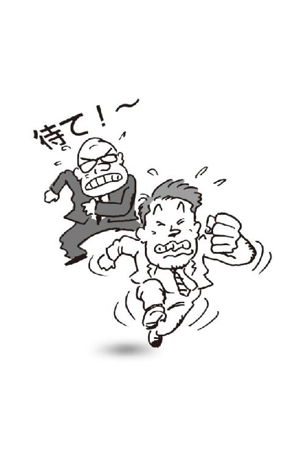
Ｑ10 内容証明郵便による請求にはどんな意味があるの？
知人にお金を貸したのですが、返済期限が来ても返しません。知り合いに相談したら「内容証明郵便を出せばいい」と言われました。内容証明郵便にはどのような意味があるのでしょうか。また、どのようにして出せばよいのでしょうか。
◆法律上意味なくても心理的に圧迫する効果が
内容証明郵便とは、相手に対し、いつ、どのような内容の郵便を出したかを証明する郵便物です。
内容証明郵便の役割として次の点があります。
①郵便の内容がどのようなものかを郵便局が証明してくれる。
内容証明郵便は、相手方用と自分用と郵便局用の３通作成します。そのため、どのような内容の郵便を出したかを郵便局に証明してもらうことができるのです。
②いつ送ったかを証明できる。
③配達証明付にすることにより、相手方に届いたのかどうか、いつ届いたのかを証明することができる。
したがって、解除通知などの場合には必ず配達証明付にしておく必要があります。
内容証明郵便には字数制限があります。横書きの場合は26字以内×20行以内または13字以内×40行以内、縦書きの場合は20字以内×26行以内です。
また、内容証明郵便に資料や写真などを同封することはできません。
内容証明郵便は、前記のような役割があり、解除の意思表示、時効の援用、債権譲渡をするような場合には必ず配達証明付内容証明郵便で出しておく必要があります。
しかし、支払いを請求する場合には、内容証明郵便は督促する手紙の一種に過ぎず、法律上の効果はありません（ただし、時効中断事由の「催告」にはなります）。そのため、内容証明郵便が届いても無視する人も結構います。
ただ、内容証明郵便が来たからといってあわてて支払う人も少なからずおり、そのような心理的に圧迫する効果を狙って内容証明郵便を出すことが多いのです。
Ｑ11 裁判所から「支払督促」が......、どうすればいい？
裁判所から「支払督促」と書いてある書類が届きました。どうすればいいでしょうか。
◆証拠調べをすることなく裁判所が支払いを命じるもの
支払督促とは、債権者の申立てにより、証拠調べをすることなく、裁判所が債務者に対し支払いの督促を行うものです。
この支払督促に対し債務者から異議の申立てがなければ、裁判所は債務者に対し仮執行宣言付支払督促を行い、これについても債務者から異議がなければ確定判決を得たのと同一の効力を得たことになる手続きです。
通常の訴えに比べて支払督促のメリットとしては、
①証拠調べや相手方の言い分を聴かないため、短期間で支払督促の発付が得られる
②申立手数料が通常の訴えの半額で済む
③仮執行宣言を得れば強制執行をすることができる
ということがあります。
そのため、比較的少額の債権で、債務者が債務の存在を争っていない場合に支払督促が利用されることが多いようです。
支払督促は、債務者の立場からすると、それを放置すると裁判で負けたことと同じになりますから、言い分がある場合は必ず異議を申し立てる必要があります。
異議を申し立てる機会は、最初の支払督促がきたときと、２度目の仮執行宣言付支払督促がきたときがありますが、仮執行を防ぐために、最初の段階で異議を申し立てておくべきです。
支払督促に対し異議を申し立てた場合には、通常の訴訟手続に移行することになります。たとえ言い分がない場合でも、一括ではなく分割の支払いを希望するのであれば、異議を申し立て、通常の訴訟の中で分割払いの和解をする方法もあり得ます。
Ｑ12 裁判所から訴状が......、正式な裁判に対処するには？
裁判所から「訴状」が届きました。どのように対処すればいいでしょうか。
◆期日に裁判所に赴き、はっきりと自分の言い分を伝える
裁判の通知には裁判の期日が書いてあると思います。
訴状に書かれている相手の言い分がおかしいと思う場合には、その裁判期日は絶対に欠席してはいけません。欠席すると相手の言い分を認めたとみなされて、敗訴します。
地方に住んでいるのに、それと離れた貸金業者の本店所在地の東京などで裁判を起こされることもあります。遠方のため裁判に行けそうにない場合には、自分の住んでいる地域の裁判所に移して欲しいと申し立てることができます。その場合、裁判所は、当事者の公平性などを考慮し、債務者の住んでいる地域の裁判所に移送してくれることがあります。
相手の言い分がおかしいと思うときには、裁判期日に裁判所に行き、自分の言い分を伝えなければなりませんが、裁判の当日に口頭で言い分を伝えようとしてもなかなか正確に伝わらないでしょう。そのため、事前に言い分を書いた書面（これを「答弁書」といいます）を作成し、裁判所と相手方に送っておくことが望ましいです。答弁書はファックスで送ることも可能です。
裁判は自分でもできますが、手続きが面倒でよく分からないとか、会社を休んでまで行けないという事情もあると思います。
そのような場合は、弁護士に依頼すればいいでしょう。また、簡易裁判所での裁判であれば、司法書士に依頼することも可能です。
こちらの言い分はないが、一括で支払うことはできないと思った場合には、裁判官に分割で支払いたいと言えば、分割支払いの和解が成立する可能性が高いでしょう。そのような場合には、わざわざ弁護士や司法書士に頼まなくても、自分で行うことも可能だと思います。
Ｑ13 差押えになると家財道具まで取られるの？
借りたお金を一括で支払えという判決が言い渡され、その後、動産の強制執行の通知が届きました。家財道具まで取られるのでしょうか。
◆裁判所が認める差押え禁止財産
借りたお金を払えという判決が言い渡されますと、その判決に基づき、債務者の財産を強制執行することが可能になります。
しかし、民事執行法は、差押え禁止財産として、債務者の生活に欠くことができない衣服、寝具、家具、台所用品を挙げています。したがって、これらの財産は差押えられることはありません。
そして、東京地方裁判所民事21部（民事執行専門部）では具体的に次の家財道具を差押え禁止財産として挙げています（ただし、※印のものが数点ある場合には１点に限られます）。
整理タンス、※洗濯機（乾燥機付きを含む）、ベット、洋タンス、調理用具、食器棚、食卓セット、※冷蔵庫（容量を問わない）、※電子レンジ（オーブン付きを含む）、※瞬間湯沸し器、※ラジオ、※テレビ（29インチ以下）、※掃除機、冷暖房器具（ただし、エアコンを除く）、※エアコン、※ビテオデッキ
こうしてみると、ほとんどの動産が差押え禁止財産となっていることが分かります。したがって、動産執行されたとしても、通常の家財道具を差し押さえられることはなく、引き続き日常生活を営むことができます。
私も何回か動産執行を申し立てたことがありますが、差し押さえられる財産があったことは１度もありませんでした。
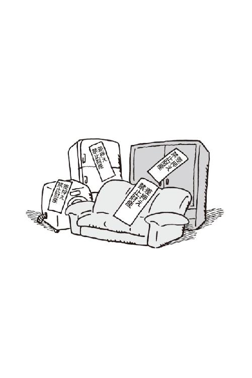
Ｑ14 夫が借金、離婚したら妻の責任はなくなるの？
夫が借金をして、毎日のように催促の電話がかかってきて、私にまで払えと言います。夫は離婚したらお前の責任はなくなると言っていますが、離婚したほうがいいでしょうか。
◆まともな貸金業者なら債務者でない妻に請求することはない
夫の借金を契機に離婚するという場合、二つのケースがあり得るでしょう。
一つは、借金をした夫に愛想を尽かして別れたいという場合です。
離婚原因として、夫の借金が理由になることは、かなりあります（私は、借金ばかりして家庭を顧みない夫であれば、さっさと離婚したほうがよいと思います。他人がとやかく言うことではないかも知れませんが）。
もう一つは、本当は離婚するつもりはなく、何とか夫を支えていきたいのだけど、債権者からの取り立てを避けるために形だけ離婚するというケースです。
しかし、債権者からの取り立てを避けるために離婚してもまったく意味がありません。
まともな貸金業者であれば、そもそも債務者でない妻に請求することはありません（なお、ここでいう「まともな貸金業者」というのは、大手貸金業者という意味ではありません。ある大手貸金業者は、親などの第三者に支払い請求をして問題になったことがあります）。
他方、違法な貸金業者は、離婚しているといってもお構いなしです。同居している限り、離婚していたとしても妻にも請求する恐れがあります。
妻には返済義務がないのですから、離婚しても法律上の意味はありません。
そもそも、私は、形だけ離婚して取り立てを免れるという消極的な発想自体が好ましくないと思います。むしろ、弁護士や司法書士に依頼してきちんと債務整理を行って、夫婦で一からやり直すという前向きの考えをした方がよいのではないでしょうか。
Ｑ15 貸した相手が自己破産、貸した金はどうなるの？
貸した相手が自己破産してしまいました。私が貸したお金はどうなるのでしょうか。
◆ほとんど回収は見込めないと考えるのが現実的
債務者が破産宣告を受けた場合、その債務者に一定の財産があれば、その財産を売却して、その売却代金を債権者に配当します。それによって債権者は一部返済を受けられることはあります。
しかし、多くの破産事件は債務者に財産がないため、債権者に配当されることはほとんど期待できません。仮に一定の財産があり、それを換価して配当するための原資が集まったとしても、税金などを支払えばおしまいということが多く、一般債権者に配当されることは少ないのが実情です。
したがって、貸した相手が自己破産した場合、ほとんど回収は見込めないと考えたほうが現実的です。
もっとも、破産手続き終了後、債務者の任意の返済に期待することはできます。すなわち、個人破産において、債務者が破産して免責決定がなされると、債務者の支払い義務はなくなりますので、法律上請求することはできなくなりますが、免責された債務は、自然債務といって、任意に返済することは可能な債務とされています。そこで、債務者の厚意で任意に返済することを期待することはできるかも知れません。しかし、実際に厚意で返済したというケースはあまり聞きません。
このように、破産した場合には債権を回収できる可能性はほとんどないと考えたほうがよいのです。結局、破産するような相手にお金を貸したことを反省するしかありません。
人にお金を貸すときは、回収が可能かどうかをよく見定め、返済が滞るなどの予兆が見えたら、早期に回収を図る努力をすべきであり、破産したらもはや手遅れと考えたほうがよいでしょう。
Ｑ16 借主が会社の場合、社長の責任は？
知人が経営する会社の資金繰りが大変だと言うので、その会社にお金を貸したのですが、返済できなくなりました。その会社には資産がないので、社長に払ってもらいたいのですが、可能でしょうか。
◆会社が融資を受けているからといって社長に返済を求めることはできない
会社と社長とは別の人格です。したがって、会社が融資を受けているからといって、社長に返済を求めることはできません。
それだからこそ、金融機関は、会社に融資する際には社長（代表取締役）の個人保証を取るのです。
ただ、次のような場合は例外的に会社社長が責任を負う場合があります。
まず、法人格否認の法理といわれている場合です。
これは、会社と代表者が別人格であることを不当に利用したり、会社とはいっても名前だけで、実質的には代表者の個人企業と同視できるような場合に、法人格を否認することができると解されています。
このような場合には、たとえ会社の行為であったとしても、代表者の行為とみて、代表者に責任を追及することができます。
また、商法２６６条の３第１項は、取締役が職務を行うにあたり悪意又は重大な過失があるときは、第三者はその取締役に対し損害賠償請求できると定めています。
したがって、会社が借り入れをするときに、財産状態が悪く、返済は不可能であるのに、当該取締役があたかも返済できるように説明して借り入れた場合には、悪意又は重過失があるとして、その取締役に対し、損害賠償請求することができるでしょう。
設例の場合でも、前記のような法人格を否認できる場合や商法２６６条の３に基づく請求ができる場合には、社長に対し責任追及することができます。しかし、それは例外的な場合であり、あくまでも原則は会社の債務について、社長個人に対し責任追及することはできないと考えたほうがよいです。
Ｑ17 少額訴訟ってどんな仕組み？
知人にお金を貸したのですが返さないので、自分で裁判をしようと思っています。自分で裁判をするのであれば少額訴訟がいいと言われたのですが、どのような制度でしょうか。
◆１回の期日で審理を終え直ちに判決を言い渡す手続き
少額訴訟手続きは、原則として１回の期日で審理を終え、直ちに判決を言い渡す手続きであり、簡易裁判所で行われます。
対象となる事件は、60万円以下の金銭の支払いを請求する事件です（従来は30万円以下とされていましたが、60万円以下に改正されました）。金銭の支払いを請求する事件といっても多様なものがありますが、そのうち、争点が比較的単純な事件が少額訴訟に向いているといわれています。
実際に少額訴訟となっているのは、売掛金、賃金、賃料、敷金返還、交通事故による損害賠償などが多いようであり、この種の類型に少額訴訟にふさわしい事件が多いといえるでしょう。
少額訴訟では、１日で審理を終えるよう１期日で審理を完了するのが原則とされています。そのため、証拠は即時に取調べが可能なものに限定しています。また、判決の言渡しは原則として、口頭弁論終結後直ちに行うものとされています。
このように、１回の期日で終わらせるためには事前の準備が不可欠です。
そのため、こちらの主張を要領よくまとめ、また、貸金請求であれば借用書などの証拠書類を事前に提出しておくのが望ましいでしょう。
なお、少額訴訟を訴えられた被告が、少額訴訟を望まず通常の訴訟手続を希望するときは、最初の期日のいちばん始めに、通常手続を希望する旨を申述しておく必要があります。
少額訴訟の判決に対しては、控訴することはできませんが、２週間以内であれば、判決をした裁判所に異議を申し立て再審理をしてもらうことができます。
Ｑ18 返済が滞ると給料は全額差し押えられるの？
お金を借りるときに公正証書を作ったのですが、返済が滞ったところ、いきなり給料を差し押さえられました。給料全額が差し押さえられてしまうのでしょうか。
公正証書を作成していると、裁判手続をせずに強制執行が可能です。そのため、いきなり給料を差し押えられることがあり得ます。
ただし、給料の４分の３は差押え禁止財産ですので、差し押さえられるのは給料の４分の１だけです。なお、給料の４分の３の金額が33万円を超えるときは、33万円までは差押え禁止財産ですが、それ以上は差し押えられます。
もっとも、公正証書が白紙委任状を濫用して作成された場合や、過払い金があり、実際には債務がないような場合には、強制執行に対し、執行の停止または執行の取消しを申し立てたうえで、請求異議の訴えを提起して争うことが可能です。
Ｑ１ 借金整理の方法、その長所と短所は？
あちこちから借金をしていてこのままでは支払いができそうにありません。借金の整理にはどのような方法がありますか。
◆どれを選ぶかは個別の事案ごとに考慮して
いわゆる多重債務者の借金の整理としては一般的には次の方法があります。いずれを選ぶかは、メリット、デメリットを考慮して個別の事案ごとに決めるしかありません。
任意整理
裁判制度を利用せず、弁護士・司法書士が債権者と交渉して、和解をする手続きです。この手続きのメリットは裁判制度を使わないため、柔軟な処理ができることです。しかし、債権者との個別の交渉が必要であること、また、多額の債権額がある場合には返済が困難というデメリットがあります。
破産
破産者の財産を清算して債権者に配当する一方、債務者の借金をすべて免責して生活の再生を図るものです。メリットは借金がすべて免責されるということですが、他方、財産があれば処分されてしまうこと、資格制限を伴うなどのデメリットがあります。
個人再生
裁判手続を通じて、債権額を減額し、減額した債権について各債権者に分割払いをする手続きです。任意整理と破産のデメリットの解消を狙ったものです。ただ、債務者の収入がある程度一定していること、借入額が５０００万円以内であることなどの制限があります。
特定調停
簡易裁判所で、調停委員が間に入って、債権者と債務者が借金の返済について合意する手続です。債権者が譲歩しない場合には、成立しないというデメリットがあります。
Ｑ２ 司法書士に債務整理の代理ができるの？
これまで債務整理は弁護士しか代理できないと思っていたのですが、司法書士も代理できるのでしょうか。
◆簡易裁判所における司法書士の代理権
司法書士の主な業務は、不動産登記などの登記手続き事務でしたが、それにとどまらず、これまでも破産申立書、訴状などの書類を作成することにより債務整理にもかかわってきました。
しかし、このたび特別の研修を履修し、法務大臣の認定を受けた司法書士は、簡易裁判所において訴訟代理人になることが認められることになりました。（これを「認定司法書士」といいます。本書で司法書士という場合は、すべてこの認定司法書士を意味しています。）
また、司法書士が金融業者に対し受任通知を出した場合にも、債務者への直接の取立てが禁止されるようになり、貸金業者との交渉において代理行為ができるようになりました。
これまで司法書士は任意整理の代理はできないとされていたため、様々な債務整理の手続きを債務者の状況に応じて柔軟に活用することができませんでしたが、今後は、司法書士が債務整理を受任した場合にも、債務者の状況に応じて柔軟に使い分けることができるようになります。
ただし、破産申立ては地方裁判所の管轄のため、司法書士は代理人になれません。また、過払い金がある場合に、その請求額が１４０万円を超える場合には、地方裁判所の管轄となるため、司法書士は代理することができません。
このように司法書士の業務内容が従来に比べて拡大したことから、債務整理にも積極的にかかわる司法書士が増えており、各地の司法書士会でも法律相談を行っています。一般的にいって司法書士の費用は弁護士費用よりも安い傾向にあるため、今後も司法書士が債務整理事件を受任する件数は増えるのではないでしょうか。
Ｑ３ 個人の信用情報を調べるにはどうしたらいい？
寝たきりになった父親に借金があるようなので、その整理をしようと思います。父がどれだけ借りているのか調べるためには、どのようにすればいいでしょうか。
◆個人信用情報機関で所定の申込みを
金融業者の個人信用情報機関には次のところがあり、債務者の氏名、生年月日、住所、電話番号、勤務先、契約日、契約の種類、極度額、支払い回数、利用残高、月々の支払い状況等の情報を登録しています。
また、一部の機関相互では、事故情報について情報交流をしているそうです。
全国銀行個人信用情報センター
銀行など
株式会社シー・アイ・シー（ＣＩＣ）
信販会社、クレジット会社など
全国信用情報センター連合会
消費者金融
株式会社シーシービー（ＣＣＢ）
外資系クレジット会社など
株式会社テラネット
銀行系クレジット会社など
自分の登録されている情報については、これらの個人信用情報機関で所定の申込み用紙を使って申し込めば簡単に開示してもらうことができます。
情報を開示してもらった結果、誤りがあれば訂正を申し立てることもできます。
開示手続きは原則として本人が行かなくてはなりませんが、本人が行けない事情がある場合は、親族などの場合は代理が認められるようです（ただし、各機関によって取扱いが異なります）。また、情報機関によっては郵送での開示手続きも認めているようです。
したがって、以上の各機関で開示してもらえば、父親の借金の状況はある程度明らかになります。ただこれらは正規の業者です。ヤミ金業者などは登録されていないので、そのようなところから借りた場合は分からないので注意が必要です。
Ｑ４ 弁護士に頼めば取立ては収まるの？
毎日のように取立ての電話がかかってきます。弁護士や司法書士に頼めば取立てが止まると聞きましたが、本当でしょうか。
◆司法書士が受任した場合にも直接取立てが禁止される
弁護士や司法書士が債務整理を依頼された場合、まず最初に、金融業者に対し受任通知（「介入通知」ともいいます）を送ります。
貸金業規制法21条１項６号は、弁護士や司法書士が貸金業者に対し、債務整理を受任した旨を通知した場合には、貸金業者は、それ以降は債務者に対し、直接の訪問はもちろん、電話、電報、ファックスなどを利用して直接取り立ててはならないと定めています。
したがって、弁護士や司法書士から受任通知が届いた後は、債務者に対する請求はぴたっと止まります。もっとも、大手クレジット会社など規模の大きい会社では、たまに行き違いで受任通知後も請求のハガキが届くことがありますが、苦情を言えばそれ以降の請求は止まります。
従来は、このような取立ての禁止は、弁護士が受任した場合だけに限られていたのですが、最近の法改正により、司法書士が受任した場合にも取立てが禁止されることになりました。
したがって、執拗な取立てに困っているのであれば、早急に、弁護士や司法書士に依頼したほうがいいでしょう。
もっとも、債務者のなかには、取立てが止まったことですっかり安心してしまい、それ以降、債務整理に協力的でなくなる方も見受けられます。
債務者としては、依頼したのだから、後は弁護士や司法書士がすべてやってくれると思っているのかも知れませんが、あまり非協力的だと債務整理の手続が進まず、場合によっては辞任するということもあり得ます。
債務整理を依頼しても人任せにせず、積極的に協力する姿勢が望ましいと思います。
Ｑ５ 債務整理の弁護士費用はどのくらい？
弁護士に借金の整理を頼もうと思っていますが、貸金業者にそのことを話したら、弁護士に頼むと高くつくから止めたほうがいいと言われました。弁護士費用はいくらぐらいかかるのでしょうか。
◆東京３弁護士会のクレジット・サラ金法律相談センター
弁護士費用は、従来は弁護士会が標準の弁護士報酬規則を作り、各弁護士はそれに従っていたのですが、標準報酬規則の存在が独占禁止法に違反するということで廃止されました。そのため、弁護士によって費用にかなりばらつきが出ています。
また、東京や大阪などと地方とでは、弁護士費用も違うのが実情です。
ただ、東京３弁護士会のクレジット・サラ金の法律相談センターでは標準弁護士報酬規定を例示していますので、それを参考にすると次のとおりです。なお、このような事件を扱う多くの弁護士は、弁護士費用の支払は分割払いでもよいとしているようです。
任意整理手続き
着手金 １社２万１０００円×債権者数
報酬金 着手金と同額 ただし、減額や過払い金がある場合は別途費用
したがって、債権者数×４万２０００円となる場合が多いようです。
破産手続き
着手金 21万円から42万円（債権者数、負債総額によって異なります）
報酬金 免責が得られたときは、着手金と同額以下
したがって、総額で42万円程度となる場合が多いようです。
個人再生手続き
着手金 住宅ローン特則なし 31万５０００円以下住宅ローン特則あり 42万円以下
報酬金 事案簡明な場合 21万円
実際は、破産と同様の42万円程度となる場合が多いようです。
Ｑ６ 借金の整理、弁護士であれば誰でも大丈夫？
借金の整理をしようと思っていますが、弁護士であれば誰でも大丈夫でしょうか。
◆「提携弁護士」と呼ばれる弁護士たち
残念ながら、弁護士であれば誰でも大丈夫というわけでありません。
とくに問題なのが、非弁提携弁護士（単に「提携弁護士」と呼ばれることもあります）といわれている弁護士です。
このような弁護士は、整理屋グループと組んでいることが多いのですが、実態はさまざまです。
整理屋グループが弁護士事務所を借り、事務員も整理屋グループの仲間である場合もあれば、一応、弁護士として独立して事務所を構えているが、整理屋グループから多重債務者を大量に紹介され、事件処理する弁護士もいます。
このような提携弁護士の問題は、何よりも弁護士費用が極めて高いということです。弁護士会法律相談センターの標準弁護士費用の数倍になっていることもしばしばあります。
それ以上に問題なのは、提携弁護士は事件処理をきちんとしていないことが多いということです。依頼者が心配になって問い合わせても、事務員が対応するばかりで、弁護士からきちんとした回答がないことも多々あります。
提携弁護士になるきっかけはさまざまですが、懲戒処分を受けて仕事に困った弁護士に整理屋が持ちかけたり、すでにいる提携弁護士が他の弁護士を紹介したり、あるいは、直接「多重債務を処理する弁護士募集」というダイレクトメールを送りつけたりしてリクルートしているようです。
このような弁護士に依頼することは食い物にされるだけなので、絶対止めたほうがいいです。もし、「私の依頼している弁護士は提携弁護士かも知れない」と不安に感じたら、弁護士会主催の法律相談で相談してみるとよいでしょう。
Ｑ７ 悪質弁護士の見分け方
提携弁護士かどうかを見分ける方法を教えてください。
◆貸金業者が紹介した弁護士は絶対ダメ
提携弁護士というのは、整理屋と組んで債務整理を行う弁護士です。
従来は、提携弁護士といわれている人は高齢の弁護士が多かったのですが、最近は30代でも提携弁護士と疑われる弁護士もいるそうなので、年齢だけでは決められません。
また、広範囲に大量に広告している法律事務所は問題であるといわれることもあります。実際、大量の広告を出していた弁護士が整理屋と組んでいたことが分かり、弁護士会から懲戒処分を受けたことがあります。しかし、弁護士の広告は自由であり、まじめな弁護士も広告は出していますから、広告しているというだけで提携弁護士と決めつけるのは失礼かも知れません。
そこで、提携弁護士かどうかの見分け方ですが、貸金業者が紹介した弁護士は絶対止めたほうがいいでしょう。
貸金業者が自分に不利になるような弁護士を紹介するはずがありませんから。
また、弁護士の事務所に行ってもほとんど事務員が対応し、弁護士は挨拶だけというのも問題です。そのような場合は、整理屋が事務所に入り込み、運営を行っている可能性があります。
さらに、地方の事件を東京や大阪の弁護士が何十件も処理するのも疑わしいというべきでしょう。数件ならともかく、遠方なのに何十件もの事件を適切に処理することは難しいので、通常の弁護士であれば遠方の事件を何十件も受任するようなことはしません。
そうはいっても、悪質弁護士かどうかを見分ける決定的方法はありません。知り合いの弁護士がいない場合には、弁護士会が主催している法律相談で紹介された弁護士に依頼するのが一番無難ではないでしょうか。
Ｑ８ 過払いならお金は返ってくるの？
貸金業者から10年以上も借りては返すことを続けていたのですが、次第に借金が増えて支払えなくなりました。弁護士に相談したところ、過払いになっているからお金は返ってくると言われました。どういう意味でしょうか。
◆取引期間が５年を超えるような人は払い過ぎになっている場合がある
利息制限法では、元金が10万円以上１００万円未満の利率は18％以下と定めています。しかし、貸金業規制法及び出資法によれば、貸金業者が一定の要件を満たしていれば29・２％まで利息を取ることを認めており、実際、ほとんどの貸金業者は29・２％近くの利息を取っています。
ところが、「一定の要件」について最高裁は厳格に解する姿勢をみせており、そのため、裁判になった場合、「一定の要件」を満たすことができず、そのため29・２％の利息が認められる可能性は少ないのです。
そこで、貸金業者に対し、返済した取引経過をすべて開示してもらったうえで、18％の利率で計算し直すと、余分に支払った利息は元金に充当されますから、元金が減ります。
そして、取引期間が長いと元金がゼロになり、さらに長いと払い過ぎになるわけです。
これが過払いという意味であり、法律上のいい方をすれば、貸金業者に対し、不当利得返還請求権に基づき返還請求をするということになります。
したがって、取引期間が５年を超えるような人は払い過ぎになっており、払ったお金が返ってくる可能性が高いわけです。
私が扱った事件でも過払い金が１００万円を超えたケースも少なくありませんが、すべて回収に成功しています。
毎月まじめに返済し、それが長期にわたっている人は、一度弁護士か司法書士に相談してはどうでしょうか。
Ｑ９ 過払い請求にはやはり領収書が必要？
貸金業者から長年借りては返すことを繰り返しており、過払いになっていると思うのですが、領収書を残していません。領収書などの証拠がなければ過払いの返還請求はできないのでしょうか。
◆貸金業者に対し取引経過の開示を求める
過払い返還請求は払い過ぎたので返してくれという請求ですから、払い過ぎの証拠として領収書や契約書があればいうことはありません。しかし、ほとんどの債務者は、家族に分かると困るなどの理由から領収書は保存していないようです。
だからといって、過払いの返還請求ができないことはありません。
弁護士や司法書士が債務整理を依頼された場合、貸金業者に対し受任通知を送るとともに、取引経過の開示を求めます。
そうすると、貸金業者は当初の契約時に遡さかのぼって取引経過を開示します。ほとんどの貸金業者はまじめに開示してきますから、それに基づいて計算すれば領収書がなくても差し支えがないことになります。
ただ、会社ぐるみではなく担当者レベルの行為と信じたいのですが、まれに取引経過を改ざんして開示するケースがあるので、注意が必要です。
また、10年を超える取引がある場合には、計算し直すと過払いになることは明らかです。そのため、貸金業者が取引経過の開示を渋ることがあります。とくに最近は過払い請求が増えているせいか、開示を拒むケースが増えているようです。
その場合には、最終的には裁判をするしかありません。
裁判においては、過払い請求に長けた弁護士は、取引履歴の文書提出命令を申し立てたり、本人の記憶に基づいた取引経過で計算したり、10年前の元本をゼロとして、その後の開示した取引経過に基づき計算したりという工夫をして、訴訟で成果をあげています。したがって、領収書がないからといって、過払い返還請求を諦める必要は決してありません。
Ｑ10 新しい破産法の制定、どんなところが変わったの？
このたび破産法が改正されたと聞きました。どんな点が変わったのでしょうか。
◆旧破産法を廃止してまったく新しい破産法が制定された
新しい破産法は、平成16年５月25日に成立し、平成17年１月１日から施行されています。
これは従来の破産法を改正したのではなく、旧破産法を廃止して、まったく新しい破産法を制定したものです。それだけに変更点は全面的で多岐にわたっており、変更点を要約することは困難ですが、個人破産についていえば、主な変更点は次のとおりです。
①破産者が自由に使える自由財産の範囲を現金99万円と拡張しました。したがって、破産しても、現金は99万円まで所持することができます。また、自由財産の範囲を拡張する制度を導入しました。
これは、個人破産者の生活を保障し、経済生活の再生を図るためです。
②免責手続き中の強制執行等を禁止しました。
これまで免責確定まで強制執行されることが可能であったことから、破産を申し立てても給料などの差押えをする金融業者がいて、経済生活の再生に支障をきたしていました。そこで、これを禁止することにしました。
③破産者が扶養義務者として負担すべき費用は免責されないなど、非免責債権の範囲を拡張しました。
破産者が扶養義務として負担すべ費用とは養育費などです。これらの債権は、債権者の保護の必要性が高いからです。
④免責不許可事由等の調査に対する破産者の協力義務を課しました。
調査を効率的に行うとともに、手続きの公正さを確保するためです。
今後、各地の裁判所で新しい破産法に従った運用が始まり、従来とは異なった運用がなされる可能性が高いので、その動向に注意して下さい。
Ｑ11 保険外交をやっているが破産は可能？
破産しようと思いますが、保険の外交員をしています。破産することはできるでしょうか。
◆破産者に一定の資格が制限される
破産手続きのデメリットは、破産者に一定の資格が制限されることです。
制限される資格は非常に多いのですが、代表的な例を挙げると生命保険募集人、損害保険代理店、証券会社の外務員、警備員、弁護士、公認会計士、税理士などです。
他方、医師や薬剤師、看護師などは資格を失うことはありません。
なお、破産すると選挙権を失うのではないかという誤解があるようですが、選挙権は憲法で認められた重要な権利ですから、安易に選挙権を奪うことは許されず、破産によって選挙権や被選挙権を失うことはありません。
また、年金や生活保護を受けている人が破産しても、それらを受給する権利は失いません。
住民票や戸籍に記載されることもありません。
前記のように破産により資格が制限される場合がありますが、免責が確定すれば制限された資格は復活しますので（これを「復権」といいます）、それ以降はこれらの職業に就いても何ら問題ありません。
現在、破産の申し立てから免責確定までの期間は３カ月少しと非常に短くなっており、しかも、新しい破産法により免責の公告をする必要がなくなりましたので、さらに短期間で破産手続きが終了すると思われます。したがって、復権するまでの期間はより短くなるでしょう。
以上のとおり、生命保険の外交員などが破産した場合に資格が制限されることになるのですが、免責確定までの期間や復権するまでの期間が以前より短くなったため、デメリットはかなり軽減されるのではないでしょうか。
Ｑ12 公務員を辞めないと破産できない？
私は公務員です。借金が増えて破産するしかないと思うのですが、公務員を辞めないといけないのでしょうか。
◆特殊な公務員以外は資格の制限を受けない
破産宣告を受けると、公務員のなかでも、公安委員、人事官、公正取引委員などの特殊な公務員は資格制限があります。しかし、一般の公務員は、地方公務員であれ、国家公務員であれ、資格が制限されることはありません。
私が相談を受けたケースでも公務員の方が何人もいましたが、みなさん公務員を辞めずに破産手続きが終了しています。
ただ、なかには破産するような人間には重要な仕事は任せられないとして、閑職に回されたという人もいますので、つらい立場に立たされることはあり得るかも知れません。
なお、公務員の方のなかには公務員共済から借り入れをしている人も多いと思います。この場合、給料から天引きされていると思いますが、破産宣告によって天引きのための委任関係が終了するので、破産宣告後は給料から天引きすることは許されない
というのが判例の見解と思われます。ところが、公務員共済組合によっては、天引きは委任によるものではないという理由を立てて、破産宣告後も引き続き給料から天引きしている事例があり、問題になっているようです。
共済組合だけに返済することは一部の債権者にだけ弁済することを意味し、問題となるおそれがあるので、依頼している弁護士によく相談したほうがよいでしょう。
Ｑ13 破産したら、会社を辞めなくてはいけない？
破産したことが会社に分かってしまい、会社から辞めてくれと言われました。会社を辞めないといけないのでしょうか。
◆退職する義務はなく会社が退職を強要することもできない
破産した場合、資格が制限され、警備員、保険外交員など一定の業務に就くことはできないのですが、一般の会社の場合、退職する義務まではないし、会社が退職を強要することもできません。
ただ、金融機関の場合には、破産するほどの借金を作ったことが金融機関の従業員としての適格性の問題となり、借金の程度がひどければ解雇事由となりうる余地はあります。しかし、金融機関でなく一般的な業務をする会社であれば、通常は破産したことが業務の適格性に影響を与えるとは思えません。
したがって、会社が、破産したことを理由にその従業員を解雇することは難しいでしょう。
なお、「破産したら会社に破産したことが分かるのですか」と聞かれることがありますが、破産しても官報に載るだけであり、裁判所から会社に通知が行くわけではありませんから、会社に分からないまま破産手続きが終了することは多いです。
ただ、その破産者が会社から借り入れをしているときは、会社も債権者の１人になりますから、裁判所から通知が行きますので、その場合には、破産したことが会社に分かってしまいます。
破産したことが会社に分かってしまうと、実際上、会社に居づらくなるかも知れません。私が債務整理を受任したケースでも、会社に居づらくなったので辞めたほうがいいのではないかと相談を受けたことがあります。
しかし、せっかく借金を整理して生活を立ち直らせようとしているのに、ここで職を失うと再び生活が破綻しかねません。そのため、私は、「会社を辞める義務はないのだから、会社にしがみつきなさい」というアドバイスをするようにしています。
Ｑ14 破産したら、携帯電話はそのまま使える？
破産した場合、家財道具も取られてしまうのでしょうか。また、携帯電話はそのまま使っていいのでしょうか。
◆民事執行法で差押えを禁止している財産
破産すると、破産宣告のときに破産者が有する一切の財産は破産管財人が管理、処分することになります。しかし、破産管財人が管理、処分しない財産もあり、これは自由財産と呼ばれています。したがって、この自由財産に該当すれば、破産者が自由に管理、処分することができます。
自由財産としては、具体的には次の財産があります。
①99万円以下の現金及び裁判所が自由財産と認めた財産
②差押え禁止とされている財産
③破産管財人が財団から放棄した財産
④破産宣告後に破産者が新たに取得した財産
このうち、民事執行法は、差押え禁止財産として、生活に欠くことができない衣服、寝具、家具、台所用具、畳及び建具などを挙げています。
また、差押え手続費用にも充たないような価値のない財産も差押えを禁止しています。
家財道具は生活に欠くことができないものですから、破産しても基本的には家財道具まで取られることはありません。
また、携帯電話は売却しても差押え手続き費用に充たないでしょうから、差押え禁止財産に含まれ、破産者が自由に管理処分することが可能であり、没収されることはありません。
このように、破産したとしても、家財道具も携帯電話も手放す必要はありません。
なお、破産後に受け取った給料は、破産宣告後に破産者が新たに取得した財産ですので、自由財産となります。したがって、破産したとしても、破産した後に受け取る給料は自由に使ってよいことになります。
Ｑ15 破産したら、自動車は取られてしまうの？
破産しようと思うのですが、子供の送り迎えに自動車がどうしても必要です。自動車は取られてしまうのでしょうか。
◆新破産法による自由財産の範囲の拡張
破産手続きは、破産者が持っている財産を換価して、それを債権者に配当する手続きです。自動車も財産価値がある以上、売却することが原則になります。しかし、その自動車が古い年式で財産的価値がないものであれば、それを売却することさえできないわけですから、換価処分されることはありません。
どの程度であれば財産的価値がないといえるかは裁判所によって取り扱いが異なりますが、現在の東京地裁の取り扱いでいえば、自動車を査定して20万円以下の場合は財産的価値がないとして破産財団を構成しないという扱いです。したがって、このような場合は引き続き自動車に乗り続けることができます。
では、査定したら20万円を超えた場合はどうでしょうか。
この場合は、これまでであれば破産管財人が換価処分するか、親族に査定額で自動車を買い取ってもらうという処理をしてきました。その後、親族が破産者に使用することを認めれば、破産者が自動車を乗り続けることができるわけです。
しかし、新しい破産法の制定により、自由財産の範囲の拡張という制度ができ、裁判所が、日常生活に不可欠な物であると判断した場合には破産者の自由財産とすることができるようになりました。
もっとも、自動車が子供の送り迎えに不可欠といっても、他の手段がまったくない場合とそうでない場合とでは異なるでしょう。また、自動車の査定額があまりに高い場合は問題でしょう。
したがって、一概にはいえませんが、自動車が不可欠である事情を具体的に申し立てれば、裁判所が自由財産と判断する可能性は高く、その場合には自動車を乗り続けられることになるでしょう。
Ｑ16 破産を申し立てれば、給料の差押えは止まる？
貸金業者から給料を差し押さえられました。破産を申し立てればすぐに給料差押えは止まりますか。
◆破産を申し立てれば給料の差押えは止まる
破産を申し立てた場合において、破産者に一定の財産がある場合には破産管財人がついて破産手続きが始まり、債権者が個別に債務者の財産を差し押さえることは禁止されます。したがって、破産手続きが開始されて破産管財人がつけば、給料の差押えはできなくなります。
これに対し、破産者に財産がないため破産手続きが開始されず、破産管財人がつかない場合には、これまでの扱いでは、免責が確定するまで給料を差し押えることが可能とされていました。
この点については異論もあったのですが、最高裁は、免責審理期間中に強制執行して得た利得は、免責許可が確定した後も不当利得にならないと判断しました。この判例により、破産手続きが開始しない同時廃止事件については、免責許可が確定するまでは強制執行によって貸金を回収することが可能でした。
そのため、破産を申し立てても、一部の強硬な貸金業者は給料の差押えを行い、それが破産者の生活を再生させることの障害になっていました。
そこで、新しい破産法では、破産の申し立てをすると、同時に免責許可を申し立てたとみなすという規定を置いたのです。
そのうえで、免責許可申し立てがあり、かつ、破産手続きの廃止決定がされた場合は、免責許可の申し立ての裁判が確定するまでは強制執行、仮差押えなどが禁止され、すでに強制執行などがなされている場合には、それを中止するという規定が設けられました。
したがって、設例についていえば、破産を申し立てれば給料の差押えは中止されることになります。
Ｑ17 破産を申し立てる裁判所はどこ？
破産を申し立てるのは、どこの裁判所ですればいいのでしょうか。
◆住所または居所を管轄する地方裁判所に申し立てる
破産者が個人である場合には、住所または居所を管轄する地方裁判所に申し立てます。（ただし、その個人が営業者のときは、主たる営業所の所在地、外国に営業所があるときは、日本の主たる営業所の所在地を管轄する地方裁判所になります。）
「住所」とは、その人の生活の本拠地をいいます。
通常は住民票をおいている場所が住所となるでしょうが、それに限られるわけではありません。転居したのに住民票だけ残しているケースもあるでしょう。その場合には、転居したところが生活の本拠地ですから、そこが住所となります。
生活の本拠地は複数あることもあり得ます。その場合には、申し立てることができる裁判所も複数生じることになります。
「居所」とは、住所のように生活の本拠地とまではいえないけれど、多少の期間継続して居住する場所をいいます。
勤め人の住所以外の勤務地の住居などがこれにあたるとされています。
なお、日本国内に居所がないときは日本での最後の住所地の地方裁判所が管轄し、これらの規定によっても管轄裁判所がないときには、債務者の財産の所在地の地方裁判所が管轄裁判所となります。
なお、新しい破産法によって、個人の場合で連帯債務や連帯保証の関係にあるときや夫婦については、すでに破産裁判所が係属している地方裁判所に申し立てることができるようになりました。これは、このような関係にある場合には債務の発生する原因が共通することが多く、同一の裁判所で事件を取り扱った方が効率的な処理が可能となるからです。
したがって、これらの関係にある場合には、同じ裁判所で扱うことができるようになりました。
Ｑ18 破産にはどれくらいの期間が必要？
破産を申し立てようと思いますが、手続きはどの程度の期間で終了するのでしょうか。
◆新しい破産法の制定により手続きは迅速化している
破産の申し立てから免責許可決定が確定するまでの期間は、裁判所によって若干違いますが、東京地方裁判所の場合だと、次の期間を目安にすればいいでしょう。
同時廃止事件（破産者に財産がなく、破産管財人がつかない場合）
......３カ月半程度
管財事件（破産者に財産があったり、とくに管財人が調査する必要があるなどの理由から破産管財人がつく場合）
......４カ月半程度
この間、裁判所に行くのはほとんどの場合、１回または２回です。
また、破産管財人がついている場合は、破産管財人から事情を聞かれるため、打ち合わせなどをする必要があります。
もちろん、大規模破産事件や財産の換価手続きに時間がかかる事件もあり、そのような場合は、何度も打合わせをしたり、債権者集会を何回も開いたりして、長期になることもあります。しかし、事件の割合としては、前記のように短期間で終了する事件のほうが圧倒的に多いのです。
従来、破産手続きは手続きの厳格な処理を重視していたため時間がかかっていました。しかし、それは破産者の生活の再生には障害にしかならないし、債権者にとっても迅速に処理されたほうがメリットがあると思われます。そこで裁判所でも迅速な処理を進めるようになり、その結果、先のような短期間で破産手続きが終了するようになっています。
しかも、新しい破産法の制定により、免責の審尋は裁判所の判断で行わなくてもよいようになり、また、免責決定の公告が廃止されましたから、さらに手続きは迅速化すると思われます。
Ｑ19 破産手続きには、裁判所に何度も行くことが必要？
破産手続きでは、裁判所に何度も行かないといけないのでしょうか。
◆最近の裁判所は破産手続きの簡素化・迅速化の傾向にある
破産手続きでは、従来、破産を申し立てた際の審問と免責のための審尋がありました。そのため、同時廃止といって、破産者に財産がないために破産手続きを開始する必要がない場合でも、裁判所に最低２回は行く必要がありました。
しかし、近時、裁判所は破産手続きをできるだけ簡素化・迅速化しようという傾向にあります。
厳格な処理をして時間をかけるよりも、手続きのスピードアップを図ったほうが、破産者の生活の再生に資するし、債権者にとっても不良債権を早く償却ができるなどのメリットがあるからです。
このような理由から、多くの裁判所では、破産者が裁判所に行く回数を減らす傾向にあり、東京地方裁判所では、同時廃止事件で、破産申し立てに弁護士がついている場合は、破産者が裁判所に行くのは免責審尋の１回だけです。
免責審尋では、裁判官から「事情の変更はありませんか」と聞かれる程度であり、審尋に要する時間は１分もありません。
なお、今般、新しい破産法が制定され、免責審尋は行わなくてもよいことになりました。今後、特に事情を聞く必要がある人だけ免責審尋を行うのか、従来どおり全員に免責審尋を行うのかは裁判所の運用によって異なることになりますが、東京地裁では従来どおり、全員に免責審尋を行う予定のようです。
以上のように、裁判所に行く回数は裁判所によって異なりますが、１、２回で済みます。
しかし、このように手続きが簡素化されたとはいえ、破産を安易に考えるのは問題です。とくに、浪費などで借金を作った人は生活の見直しを図るべきでしょう。一度破産すると、７年間は原則として再度の免責は認められないのですから。
Ｑ20 破産手続きにかかる費用はどれくらい？
破産手続きの費用はどのくらいかかりますか。
◆予納金が低額になり破産手続きがしやすくなった
東京地方裁判所での同時廃止事件（破産者に財産がなく破産手続きが開始されない
場合）の破産申し立て費用は、次のとおりです。
印紙代 １５００円
切手代 ４０００円
予納金 即日面接の場合 １万０２９０円
それ以外の場合 １万５０００円
（平成17年１月１日から若干減額されています。）
少額管財事件（破産管財人が就任する事件）の場合には、事件の大きさにもよりますが、予納金として21万６０９０円が必要です。
なお、これらは実費であり、破産申立てを弁護士等に依頼する場合には、それ以外に弁護士費用が必要です。
これまで破産事件においては、同時廃止でなく管財人が就任する事件では、個人破産で予納金が最低50万円、法人破産では予納金が最低70万円が必要とされていました。
しかし、これではお金がないから破産しようというのに、その破産するにもお金がかかるという非常に不合理な事態が生じていました。
そこで、予納金をできるだけ低額にして、破産手続きを利用しやすいようにする努力が進められて、管財事件であっても予納金を20万円強としました。しかも、管財人の了解を得ることが前提ですが、一括で支払えない場合は分割でもよいことにしています（東京地方裁判所の場合）。
ただし、裁判所の扱いは全国共通でないため、従来どおりの取り扱いの裁判所もあります。したがって、詳細は各裁判所に問い合わせてみて下さい。
Ｑ21 ギャンブルで作った借金は免責されない？
ギャンブルで消費者金融から多額の借金をしました。返済は不可能であり、破産するしか方法はないと思うのですが、ギャンブルで作った借金は免責されないと言われました。どうすればいいですか。
◆正直に申告し誠実に破産手続きに協力する
破産法２５２条１項４号は、「浪費または賭博その他射幸行為によって著しく財産を減少させたり、過大な債務を負担した場合は、免責不許可事由になる」と定めています。
しかし、破産者のなかには多かれ少なかれギャンブルや浪費などで借金を作った人がいて、それは決して少ない数ではないと思われます。それらのすべてが免責されないとすると、ほとんど免責制度は意味をなさなくなります。
そもそも、条文の表現は、「著しい財産の減少」「過大な債務の負担」とされていますから、かりにギャンブルなどで借金を作ったとしても「著しい」「過大な」といえない程度の財産の減少、債務の負担は、免責不許可事由にならないと考えるべきでしょう。
また、たとえ免責不許可事由にあたるような場合でも、裁判所は、破産に至った経緯などの一切の事情を考慮して免責許可をすることができるとされています。
そこで、破産者が破産に至る事情を正直に申告し、破産手続きに誠実に協力すれば、そのような事情をも考慮して、裁判所が免責の許可決定をすることは大いにあり得ます。
実際免責されなかった事例というのは、浪費がひどいだけでなく、破産手続きに不誠実な態度であった場合がほとんどです。
したがって、たとえギャンブルで作った借金であったとしも、経済的生活の再生に強い意欲を持っているのであれば破産申立てを検討すべきですし、免責が許可される可能性も高いと思います。
Ｑ22 勤めていた会社が破産、遅配の給料はもらえない？
私が勤めていた会社が破産しました。以前から給料の支払が遅れており、３カ月分の給料を受け取っていません。会社が破産すると、遅配している給料ももらえないのでしょうか。
◆給料は従業員の生活の基盤 保護の必要性が極めて高い
従来も、従業員の給料は、破産手続きにおいて一般の債権よりも優先的に扱われてきました（優先的破産債権）。
ところが、破産手続きにおいて税金等は、財団債権といっていつでも弁済してよい債権とされており、給料よりも優先されていました。そのため、破産会社にある程度財産があってもほとんど税金の支払いに充てられ、従業員の給料まで配当できないことが多くありました。
しかし、給料は従業員の生活の基盤となるものですから、保護の必要性が極めて高い債権です。
そこで、新しい破産法では、給料（労働債権）のうち、①破産手続き開始前３カ月間、②退職金については、退職前３カ月間の給料の総額に相当する額を財団債権としました。
これにより、給料は優先順位が上げられるとともに、破産手続き開始後、直ちに弁済を受けることも可能になりました。
もちろん、会社に財産がなければ給料が財団債権となったとしても支払いを受けられないのですが、従来に比べると給料の支払いを受けられる可能性は高まったと思います。
なお、破産などによって給料が支払われない場合に、未払い賃金の一定範囲を労働者健康福祉機構（旧労働福祉事業団）が立替え払いする制度があります。ただ、立替え払いを受けるには一定の要件が必要であり、また、未払い賃金の全額が立替え払いされるわけではありません。
Ｑ23 別れた夫が破産、受け取っていた養育費はどうなる？
私は別れた夫から毎月養育費を受け取っていますが、今度夫が破産をすることになったそうです。私が受け取っている養育費ももらえなくなるのでしょうか。
◆破産しても養育費の支払いは免責されない
これまでも破産した場合に租税債権、債権者名簿に記載しなかった債権などは免責されない債権とされていましたが、このたび、新しい破産法の制定により、免責されない債権を拡張し、破産者が扶養義務者として負担すべき費用は免責されないことになりました。
したがって、たとえ破産して免責許可決定が確定したとしても、養育費の支払い義務は免責されず、破産者は引き続き養育費を支払う義務が残ることになります。
なお、新しい破産法の制定に伴い、個人再生手続きについても、扶養義務者として負担すべき費用は免責されないという規定が設けられました。そのため、個人再生手続きによって、他の債権は減額されたとしても、養育費は減額されることなく全額支払わなければなりません。
それ以外に免責されない債権としては、次のものがあります。
①租税等の請求権
②破産者が悪意で加えた不法行為に基づく損害賠償請求権
③破産者が故意または重大な過失により人の生命または身体を侵害した場合の損害賠償請求権
④雇用関係に基づいて生じた従業員の請求権及び従業員の預り金返還請求権
⑤破産者が知りながら債権者名簿に記載しなかった請求権
⑥罰金等の請求権
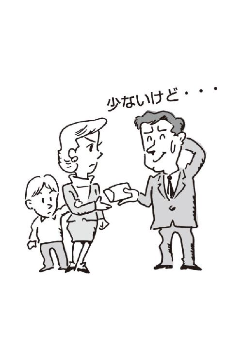
Ｑ24 再度の破産、免責は受けられる？
６年前に破産手続きをして、免責を受けました。しかし、再び借金をしてしまいました。再度の免責は受けられるでしょうか。
◆７年を超えていれば再度の免責も可能
破産事件は年々増加しています。
その原因はいろいろあると思いますが、私は、人間は一度贅沢をしたら元に戻れないという性格に起因しているのではないかと思っています。
例えば、借金が増えて返済に困る状態になれば、本来であれば節約すべきはずです。ところが、そのような借金を抱えた人でも携帯電話料に毎月２万円以上も平気で使っているのです。
「借金しているのに何でそんなに使うのですか」と聞くと、「必要だから」というのですが、借金があるのだから、必要なお金でも少しずつ削って返済に充てるべきではないかと思うのですが。
このような人間の本来の性格によるものか、あるいは勤めている会社が倒産して無職になったという突発的事情なのか、それぞれ事情はあるでしょうが、破産件数の増加だけでなく、一度破産したのに、再び破産申立てをせざるを得なくなる人も増えてきたように思います。
この点について法律は、７年以内に免責を受けていた場合は、再度の免責申立ては免責不許可とすると定めています（従来は「10年以内」でしたが、新破産法により、７年以内と短くなりました）。
逆にいえば、７年を超えていれば再度の免責も可能となります。
また、７年以内であっても、裁判所は破産に至る経緯など一切の事情を考慮して、免責許可を決定することができるとしています。
したがって、たとえ２度目の破産であっても、借金を作った原因、破産手続きにおける誠実な態度などを考慮して、再度免責許可される可能性はあるでしょう。
Ｑ25 個人再生手続きは、どのように？
個人再生手続きとはどのような手続きですか。どのようなメリットがあるのでしょうか。
◆破産と任意整理のいいところを取った手続き
個人再生は、破産事件と任意整理のいいところを取った手続きといわれています。
まず、破産手続きと比較すると、次のメリットがあります。
破産では住宅がある場合には、それを手放さざるを得ませんが、個人再生の場合には、住宅を所有したまま生活の再生を図ることができます。
また、破産の場合には、警備員、保険外交員などの資格が制限されますが、個人再生ではそのような資格制限はありません。
他方、債権者からすると、破産手続きでは債権を回収できないことがほとんどですが、個人再生では一定額の弁済がなされますから、破産に比べてより多くの債権回収を図ることができます。
これに対し、個人再生手続のデメリットとしては、破産では免責許可がなされればまったく弁済する必要がなくなるのに対し、個人再生では３年間にわたり一定の額を弁済しなければならないことにあります。しかし、返済する債務額は相当減額されること、前記の住宅を持ち続けることができることや資格制限がないことなどの個人再生のメリットを考慮すると、この程度の負担はやむを得ないといえるでしょう。
また、任意整理と比較すると、任意整理は、各債権者と個別に話し合いをしてそれぞれ個別に和解契約を締結しなければなりませんが、個人再生ではそのような面倒はありません。
さらに、任意整理の場合は、債権者は元本を割る和解にはほとんど応じないのが実情ですが、これに対し、個人再生では、最低弁済額が原則として再生債権総額の５分の１または１００万円のいずれか多い額（小規模個人再生の場合）とされていますから、弁済総額が任意整理に比べて少なくなるというメリットがあります。
Ｑ26 小規模個人再生手続きと給与所得者等再生手続き
個人再生手続きには、小規模個人再生手続きと給与所得者等再生手続きとがあると聞きましたが、どう違うのですか。
◆個人再生手続きには二つの種類がある
小規模個人再生手続きとは、継続的に収入を得る見込みがある個人の債務者で、無担保再生債権の総額が５０００万円を超えない場合が対象となります。
そして、その収入を原資として、再生債権を３年で分割して弁済することによって残債務が免除されるという手続きです。
なお、弁済期間の３年は、最長５年まで延長することができます。弁済額は、無担保再生債権総額の５分の１または１００万円のいずれか多い方でなければなりません（ただし、無担保再生債権総額３０００万円までは最低弁済額の上限は３００万円、無担保再生債権総額が３０００万円を超える場合には、最低弁済額はその10％以上とされています）。
これに対し、給与所得者等再生手続きは、小規模個人再生の対象者のうち、定期的な収入があり、収入の変動の幅が少ない人を対象にしています。
そして、その人の収入から、生活費などを引いた可処分所得を算出して、その２年分以上を３年間で弁済に充てる手続きです。
小規模個人再生手続きでは、再生債務者の再生計画案に対し、反対した債権者が半数に満たず、かつ、その議決権の額が議決権者の議決権の総額の２分の１を超えないときは賛成があったものとみなされます。
これに対し、給与所得者等再生手続きでは、このような債権者の決議は不要とされており、それだけ手続きが簡素化されています。
ただ、実際には、最低弁済額を計算すると小規模個人再生手続きの方が少なくなることが多いことから、給与所得者であっても小規模個人再生手続きを利用することが多いようです。
Ｑ27 収入の不安定なアルバイト生活、個人再生手続きは利用できる？
個人再生手続きを利用しようと思うのですが、アルバイトのため収入が一定していません。手続きを利用できるでしょうか。
◆弁済は３カ月に１回以上アルバイトでも３カ月単位で安定した収入があれば
個人再生手続きには、小規模個人再生と給与所得者等再生手続きとがあります。アルバイトでも定期的な収入があり、収入の変動の幅が少ない場合には給与所得者等再生手続きが利用できます。しかし、設例では収入が一定しないようですから、給与所得者等再生手続きは利用できないでしょう。
そこで、小規模個人再生手続きが利用できるかを検討することになります。
小規模個人再生は、「収入が継続的にまたは反復して得られる見込み」のある人が対象となっています。
これは、個人再生は将来の収入を元に弁済する手続きですから、収入がある程度安定していなければ弁済ができないからです。
ただ、弁済は３カ月に１回以上とされていることから、３カ月単位で見て収入が安定していれば「収入が継続的に得られる見込みがある」といえるでしょう。
また、農家収入のように１年に１回の収入でも、それが反復されることが確実であれば、「収入が反復的に得られる見込みがある」といえるでしょう。
設例に戻ると、アルバイトといっても正社員に近い立場の人から、短期でアルバイトを繰り返す人までいろいろあると思います。
同一の勤務先で長期にわたって仕事をしている場合には、収入が継続的に得られる見込みがあるといえるので、小規模個人再生手続きを利用することに問題はありません。
これに対し、多少収入が一定でなくても、３カ月単位で見れば安定した収入があり、その収入が将来にわたって確実であれば、小規模個人再生を利用することができるでしょうが、さまざまな職場で短期のアルバイトを繰り返している場合には、手続きを利用することは難しいでしょう。
Ｑ28 住宅資金特別条項ってどんなもの？
破産すると住宅まで手放さなければならないと言われましたが、何かほかによい方法はないでしょうか。
債務者が破産しても、住宅ローンを貸し付けている抵当権者は、破産手続きに拘束されることなく、競売などをして優先的に弁済を受けることができます。そのため、破産した場合には住宅を維持することは困難でした。
そこで、個人再生では、住宅資金貸し付けに関する特則を定め、生活基盤である住宅を手放さずに経済生活の再生を図ることができるようにしています。
これによれば、最長10年間、70歳まで住宅ローンの支払期限を延長することができますし、一般の再生債権の弁済期間内（３年間、最長５年間）は、住宅ローンの支払い額を少なくすることも可能となっています。
Ｑ29 外国人は日本で破産することはできない？
私は外国人ですが、破産申立てや民事再生手続きの申立てができますか。
わが国では、かつては、その外国人の本国における法律で、日本人をその国の人と同様に扱っている場合に限り、その外国人を日本人と同様に扱うものとしていました。
このような考え方を相互主義というのですが、そうすると、その外国人の本国にわが国のような破産制度がない場合、その国籍の人は、日本で長年居住していても日本で破産を申し立てられないという不都合がありました。
そこで、法律を改正し、現在では、外国人を日本人とまったく同一に扱うようにしています。これは、破産法だけでなく、民事再生法でも同様であり、外国人は破産申立てや民事再生申立てができるようになっています。
Ｑ30 個人再生の最低弁済額はいくら？
個人再生では、最低いくら返済しなければならないのでしょうか。
◆個人再生では元本が相当程度減額される
個人再生手続きでは、借入元本が減額されますが、債権者に最低限弁済すべき額も決められています。
小規模個人再生の最低弁済額は、次のとおりです。
なお、債権総額というのは、住宅ローン等を除く無担保債権の総額のことです。
債権総額が１００万円未満
その債権総額の額
債権総額が１００万円以上５００万円以下
１００万円
債権総額が５００万円を超え１５００万円以下
債権総額の５分の１
債権総額が１５００万円を超え３０００万円以下
３００万円
債権総額が３０００万円を超え５０００万円以下
債権総額の10％
ただし、これは最低弁済額に過ぎず、それ以上の支払い計画を立ててもかまいません。
小規模個人再生では債権者の半数以上、または議決権の額が総額の２分の１以上の反対があると再生案は認可されませんから、最低弁済額にこだわらず、債権者の反対がないような再生計画案を作成すべきでしょう。
次に、給与所得者等再生の最低弁済額は、次のとおりです。
前記の小規模個人再生の最低弁済額と、手取り給料から生活費などを引いた額の２年分のうち、いずれか多い方。
実際に計算してみると、小規模個人再生の最低弁済額よりも、手取り給料から生活費などを引いた額の２年分の方が高くなることが多く、そのため、給与生活者であっても、小規模個人再生を利用する人の方が多いのが実情です。
以上のとおり、任意整理では、分割の和解はできても元本を割る和解はなかなか難しいのですが、それに比べると、個人再生では、元本が相当程度減額されることが分かると思います。
Ｑ31 特定調停ってどんなもの？
特定調停という制度があると聞きました。どのような制度なのでしょうか。どのようなメリットがあるのでしょうか。
特定調停は民事調停の一種であって経済的な破綻するおそれのある人が、経済的生活の再生を図るために、債務の調整を申し立てるものです。
申し立てる裁判所は簡易裁判所であり、申立て費用は数百円程度です。
特定調停の特徴は、給料の差押えがなされているなど民事執行手続きがされている場合に、申立てにより民事執行手続きの停止を求めることができる点です。
しかも、通常、執行の停止には担保が必要ですが、特定調停による執行停止には担保提供をさせないでおくことができると定めています。
特定調停は、調停委員が間に入って話し合いによって解決する手続きであり、弁護士に依頼しなくても利用がしやすくなっているので、検討してもよい手続きでしょう。
Ｑ１ ヤミ金ってどんな貸し方をするの？
ヤミ金とは、どのような貸し方をするのですか。
◆「トイチ」どころか「トニ」「トサン」の業者も
数年前まで、ヤミ金業者は「トイチ」と言われていました。これは10日で１割の利息がつくという意味と、ヤミ金の多くが、東京都の貸金業登録番号が「東京都知事（１）第○○○号」であったことから、それを略して「都１」ということに由来していました。
しかし、次第に10日に１割どころか、10日に２割、３割と利息を取るようになり、「トニ」「トサン」と呼ばれるようになりました。
10日に２割、３割の利息となると１年間の利息は天文学的数字になり、返済は到底不可能です。そのため、あっという間に何十ものヤミ金業者から借り入れするようになってしまいます。
従来、ヤミ金に対する規制は厳しいものではありませんでした。
ひどい取り立てをされて警察に連絡しても、近くの交番のおまわりさんが自転車でやってきて、そのうえ、「借りたお金は返さないといけないんじゃないの」なんて言って帰ってしまうこともありました。
しかし、あまりにひどい取立てから自殺者まで出るようになり、また、暴力団の資金源になっていることが分かり、警察も本気で捜査するようになりました。
その結果、やや下火になったようで、ヤミ金から借りたと相談を受ける件数は減ったという印象があります。
ヤミ金は事務所を持っているところもあり、以前はそのほうが多かったのですが、警察の捜査が厳しくなったためか、最近は、プリペイドカード型携帯電話だけの接触が多いようです（「０９０金融」と呼ばれています）。
今後も多様な貸し方が生まれるでしょうが、高利であることではまったく変わらないわけであり、絶対に借りてはいけないところです。
Ｑ２ 登録業者だから安心と思うのは間違い？
貸金業の登録番号が関東財務局（３）第○○○号となっていましたので大丈夫だろうと思って借りたところ、いわゆるヤミ金でびっくりしました。このようなことがあるのでしょうか。
◆貸金業の登録は簡単にできる
設例の「関東財務局（３）第○○○号」というのは貸金業登録番号というものであり、貸金業を行おうとする者が登録を受けた際に発行される番号のことです。
営業所が単独の都道府県にだけ所在する場合には「都道府県知事」が冒頭につき、営業所が複数の都道府県にまたがる場合には「財務局」が冒頭につきます。
都道府県知事登録の場合 東京都知事（２）第○○○○号
財務局登録の場合 関東財務局（３）第○○○○号
となります。
（２）とか、（３）とかは、登録更新回数の意味です。更新は３年に１度ですので、数字が大きいほど以前から業務を行っていることを意味します。
登録業者かどうかは金融庁のホームページで検索できます。
http://clearing.fsa.go.jp/kashikin/index.php
このような登録業者であれば大丈夫かといえばそうではありません。貸金業の登録は簡単にできますから、ヤミ金業者でも登録しているところがあるのです。
また、登録業者でないのに、広告に虚偽の登録番号を記載しているヤミ金業者もあります。設例の業者もおそらく虚偽の登録でしょう。
関東財務局のホームページには、架空の登録番号を記載したり、別の登録業者の登録番号を詐称したりする無登録貸金業を記載しています。
そのホームページの最後には「くれぐれもご注意ください。」と書いていますが、注意を促す前に、そのような悪質な業者はさっさと取り締まって欲しいと思うところです。
Ｑ３ 整理屋ってどんな業者？
借金が増えてしまい、利息も払いきれなくなりました。「借金の整理」「借金の一本化」というチラシをみたので、そこで整理をお願いしようと思いますが、大丈夫でしょうか。
◆提携弁護士と手を組む悪徳業者
それはおそらく「整理屋」でしょう。
整理屋は、全国に広告を出して多重債務者を集めます。そして、整理屋と提携している弁護士（「提携弁護士」と呼ばれています）と組んで、大量に多重債務者の債務整理を行います。
提携弁護士と整理屋との関係はさまざまですが、整理屋が事務所を用意して、提携弁護士の名義だけ借りているケースや、整理屋が提携弁護士の事務所に入り込んで、その中で「事務長」などと呼ばれているケースもあります。
大きな整理屋グループになると、多数の提携弁護士の事務所を支配下に置いているといわれており、提携弁護士から、あるいは直接多重債務者から、多額の売り上げを吸い上げています。
最近は、提携弁護士が外見上独立して業務をしているように見せているケースもありますが、背景に整理屋がいることがあり、提携弁護士かどうかの見分けがつきにくくなっています。ただし、１１４ページに書いたように、整理屋・貸金業者から紹介された弁護士は、提携弁護士と考えたほうがよいでしょう。
また、このような提携弁護士は、弁護士費用が高く、また債務整理の処理がずさんです。
弁護士会でも提携弁護士に対する監視を強化していますが、懲戒処分できるだけの証拠がなかなか集まらないのが実情のようです。
したがって、「借金の整理」というチラシを見たとしても、そこに頼むのは止めたほうが無難でしょう。
Ｑ４ 紹介屋ってどんな業者？
紹介屋とは、どのような業者なのでしょうか。
◆実際には審査せず他の業者を紹介する
「多重債務者でもＯＫ」「すぐに融資します」などというチラシを見たことがあるかも知れません。
普通はそんなチラシを見てもお金を借りようとは思いませんが、借金で毎日の返済に追われている人はそんな心のゆとりはありません。つい融資を申し込んでしまうのです。しかし、融資を申し込んでも、債務者に借入先、債務額などを書かせて審査するふりだけをして、実際は融資しないのが紹介屋の手口です。
そして、「うちでは融資できないが、他の金融業者を紹介する」と言って、他の金融業者を教えて、そこから借り入れさせ、おれの紹介があったから借入れることができたと恩着せがましく言って、借主から融資額の20％から50％を紹介手数料として取ります。
ところが、紹介屋はほとんどが金融業者と連絡を取っていません。紹介屋は経験上、どこの金融業者はどの程度の債務であればまだ貸し付けるのかを知っており、債務者の状況に合わせてその店を教えるだけです。
それも一つのノウハウかも知れませんが、融資額の何十％もの手数料を取るほどのノウハウではないでしょう。
このような紹介屋は、出資法違反、貸金業規制法違反（誇大広告禁止）などでしばしば摘発されています。
Ｑ５ 買取り屋ってどんな業者？
借金の返済に困っていたら、「カードがあれば商品を買ってください。それを担保に融資します」と言われました。大丈夫でしょうか。
◆クレジットカードで買い物をさせ換金する
買取り屋は、「１００万円まで即決融資」などという、いかにも融資するかような広告で多重債務者を集めて、結局は自ら融資しません。この点は紹介屋と同じです。
その上で、「商品を担保に融資する」とか「カードで商品を買ってもらって、信用があるかどうかを審査する」と言って、多重債務者の持っているクレジットカードでパソコン、高級時計、ＪＲチケットなどの換金性の高い商品を買わせます。それを時価の40％くらいの価格で買い取ったり、金券ショップに持ち込んで換金させて、手数料を取ったりします。
したがって、買取り屋は60％もの利益を得ることになります。
多重債務者の多くはクレジット会社からも借り入れており、それ以上の融資は得られないでしょうが、カードでの買い物の枠は残っていることが多く、買取り屋はそれを利用するわけです。
なかには、販売店が買取り屋とグルになっているケースもあり、買取り屋が多重債務者から買い取った後、その商品は再び販売店に並べられるということもあるようです。
多重債務者は、買取り屋にあちこち引っ張り回されてどうなっているのか訳が分からず、僅かなお金をもらって帰されてしまいます。そのため、その時点ではだまされたかどうかも分からない人もいるようです。
もちろん、後にクレジット会社から請求が来て、そのときにだまされたことを自覚するわけですが。
このような場合、認識の程度にもよりますが、カード会社や販売店に対する詐欺の共犯とされる可能性があります。また、あまり件数が多いと、破産を申し立てたとしても、免責が許可されないおそれがありますから注意して下さい。
Ｑ６ チケット金融の仕組みとは？
お金を借りようとしたら融資を断られました。その代わりにテレホンカードを渡されて「代金は１週間後でいい、テレホンカードは金券ショップで金に換えてくればいい」と教えられました。どのような仕組みになっているのでしょうか。
◆年利１２５０％の悪徳金融業者
チケット金融も広告で多重債務者を集めます。そして、借入を申し込んだ多重債務者は、例えば「５万円分の高速道路のチケットを売るから、これを近くのチケットショップで換金するように」と指示されます。そして、チケット代金５万円は１週間後に持ってこいと言われます。
チケットショップに行くと３万８０００円で買い取ってくれるので、多重債務者にとっては３万８０００円の融資を受けたことと同じ意味になります。そのため、なんとなく目的を達したように思いますが、１週間後にチケット金融業者に５万円を持って行かなければなりません。
これは年利に直すと、なんと１２５０％という高利になるのです。
問題は、この場合、チケット金融業者と多重債務者が、チケットの売買の形式を取っていることです。
そのため、チケット金融業者は、チケットの売買であって金融ではないと主張することがあります。
しかし、実態は違法金融にほかなりません。裁判においても売買ではなく、違法な金融であることが認定された判例があります。
現在では、このようなチケット金融は下火になっているようですが、これに代わって、チケットでなくパンストを販売する形にする「パンスト金融」という業者が出てきているそうです。
業者にとっては、扱う商品は何でもよいので、今後もいろいろな手口を用いるでしょうが、仕組みはすべて同じと考えてよいでしょう。
Ｑ７ 車・家具リースの実態とは？
車、家具などのリースを装った金融業者があると聞きました。どのような実態でしょうか。
◆リース料名目でも実態は利息
道路の道ばたの看板に「乗ったまま融資」と書いてあることがあります。それはおそらく車リースを装った高利の金融業者でしょう。
その手口は、次のようなものです。
融資を申し込んだ債務者から金融業者が自動車を買い取り、車の名義も変えます。そして、債務者には売買代金として30万円を渡します。債務者には引き続き自動車の使用を認め、リース料として月４万５０００円を徴収します。
これは実態を見れば、元金30万円を貸して、リース料という名目で月４万５０００円の利息を取っているだけです。これは年利に直すと、１８０％という暴利になります。
もちろん、業者は、「うちはリースしているだけで金を貸しているわけではありません」という言い訳をします。
似たような仕組みで、車でなく、家具のリースを装った金融業者もいます。
私も、そのような業者のリースを受けている人の債務整理を受任したことがあります。
その受任通知の中で、「実態は貸金であり、利息は出資法に違反しており無効である。警察に告訴する」と書いたところ、その業者は「貸金ではなく、単なるリースです」と反論してきました。
それに対し、実態は貸金と同じであること、借主がリース契約をする必然性がないこと、チラシに「融資する」と書いていることなどと再反論したところ、それ以上請求されることはありませんでした。
今後も、車、家具以外の物をリースの対象商品とすることがあるかも知れませんが、手口はすべて同一と考えてよいでしょう。
Ｑ８ 年金担保金融とは？
私は年金生活者ですが、「年金担保に融資します」という広告を見たので借りようと思います。心配はないでしょうか。
◆年金担保の融資は違法
年金を担保に融資する業者は、広告で「年金担保融資」「中高年優遇」といったうたい文句で勧誘します。融資を申し込むと、高利の利息で貸し付けた上で、預金通帳、印鑑、キャッシュカード、年金証書などを預かります。
そして、年金が支給されると、業者は年金の大半を返済金として取得し、残りを融資を受けた高齢者に渡します。このときに、さらに追加融資をすることにしていつまでも返済が終わらないようにします。
しかし、年金は高齢者にとって重要な生活資金であり、そのため、法律は年金を差し押えることを禁止しており、また年金を担保に入れることは独立行政法人福祉医療機構で特別に認められているにすぎません。
したがって、金融業者が年金を担保に取ることは違法です。ところが、これまで罰則規定がなかったために野放しになっていたのが実態でした。
そこで、今般、法律が改正され、年金担保融資の際に金融業者が通帳やキャッシュカードなどを預かると、１年以下の懲役か３００万円以下の罰金という刑事罰を科すことになりました。
また、年金受給者の借り入れ意欲をそそるような広告や説明も禁止されます。
先日、年金を担保に借り入れた高齢者から相談を受け、直ちに金融業者に対し預金通帳、年金証書などの返還を求めたところ、すぐに返還してきました。この業者は以前はまったく返還に応じようとしなかったのですが、早速、法律の効果が表れたようです。
ただ、スポーツ新聞などにはいまだに年金担保の広告が載っているようです。このような業者から借り入れることは絶対に止めるべきでしょう。
Ｑ９ システム金融ってどんな貸し方をするの？
システム金融というのは、どのような貸し方をするのでしょうか。
◆手形・小切手を振り出させることが特徴
システム金融とは、中小企業を相手にファックスやダイレクトメールなどで「電話一本で即日融資します」などと勧誘します。
融資を申し込むと、その会社が振り出す手形、小切手をファックスさせます。それを確認すると銀行振込で融資を行います。その後、融資を受けた会社からシステム金融業者に対し手形、小切手を郵送させる仕組みです。
ファックスのやり取りだけで手形や小切手を送るのもどうかと思いますが、融資を受ける方はワラをもすがる気持ちで必死ですので、あまり深く考えないようです（あるいは、深く考えたくないのかも知れません。）。
システム金融は利息が高利であることも問題ですが、一度借りると次々と同じグループと思われる業者から勧誘のファックスが届くことも特徴です。
借りる方が企業なので、借入金額も１００万円を超えることが普通であり、あっという間に借入総額が増えていきます。
手形、小切手を振り出しているため、不渡り処分を恐れ、必死になって返そうとしますが、高利ですから金利の負担だけでも大変であり、通常は借り始めてから数カ月で倒産してしまいます。
このような業者から融資を受けた場合には、従業員の給料が払えなくなるといった傷口が広がらないうちに早めに弁護士に相談したほうがよいです。手形、小切手がシステム金融に渡っているため強く出られないと思って弁護士に相談することを躊躇する人もいますが、弁護士が受任通知を出すと、振り出した手形、小切手を返還してくる金融業者も結構あります。
もちろん、なかには強硬な業者もいるので安心はできませんが、手形、小切手を取られているからといって諦めずに、きちんと法律に則って対処したほうがよいです。
Ｑ10 賭博場でできた借金をどうするか？
バカラ賭博にはまってしまい、毎日にように賭博場に通っていましたが、負けて掛け金が足りなくなったときに、そこに出入りしている金融業者からお金を借りました。高利のため次第に借金が増えてしまったのですが、賭博場で借りただけに後ろめたさがあり、警察にも相談に行けません。
◆バカラ賭博場に出入りし、賭博資金を貸し付ける悪徳業者
私の依頼者にも同様な人がいました。
その人の話によると、金融業者（大抵は個人営業のようですが）は、バカラ賭博に出入りしている人に対し、賭博資金を貸し付けることを専門にしているそうです。
借りるほうは、賭博をしているときは熱くなっていますから、少々金利が高くても気にしません。「バカラで勝てば、約束した金利に熨 の 斗 し を付けて返してやる」というぐらいの勢いです。
もっとも、翌朝になれば目が醒め、その数日後には返済に追われて青くなるわけですが。
このような賭博の資金となることを知って貸し付けた金銭消費貸借契約について、最高裁は、公序良俗に反し無効であるとしています。そして、民法７０８条は、不法な原因で貸し付けた場合には、その返還を求めることはできないとしています。
したがって、賭博の資金になることを承知で貸した場合には、貸し付けた側は返済を求めることをできないということになります。
そうはいっても、金融業者から返済を求められた場合、警察に相談に行くことは躊躇せざるを得ないでしょう。自分もバカラ賭博という違法行為をしているのですから。もちろん、そういった金融業者は、警察に行けないだろうと思って貸し付けているわけです。
このような場合には、弁護士に相談するしかないでしょう。
Ｑ11 破産したら、ヤミ金融からしつこい勧誘が
破産したのですが、それ以降、毎日のように「お金を貸します」という電話が入ったり、またダイレクトメールが来たりして困っています。
◆官報の情報を基に破産者の名簿を作成
破産を申立てた後に、携帯電話に融資を勧誘する電話があったり、ダイレクトメールが大量に届くという話はよく聞きます。
ダイレクトメールが届くのは、破産した場合には官報にその旨が掲載されるからです。
官報とは、国が発行する新聞であり、公布された法律などが掲載されています。裁判所の公告も掲載されますので、破産した場合も官報に公告されます。
そこには破産者の住所、氏名も掲載されていますので、官報を見れば破産した人の住所が分かるわけです。
もっとも、一般の人が官報を読むことはないでしょうから、破産者の氏名が官報に載るからといって心配することはありません。
ただ、官報の情報を基にして破産者の名簿を作成している業者があり、ヤミ金業者はそこから名簿を買って、破産した人にダイレクトメールで送っているようです。
また、電話番号については官報には載りませんが、これまで借りたことのあるヤミ金業者が債務者の名簿を他のヤミ金業者に流しているため電話がかかってくるものと思われます。
このように破産者にダイレクトメールを送りつけたり電話したりするのは、破産する人は、なかなか借金を止められない人が多く、広告効果が高いことと、１度免責を受けると原則として７年間は再度の免責は受けられないので貸倒れになる可能性が低いという理由のためです。
送られてくるダイレクトメールについては無視するしかありません。しばらくすると送って来なくなります。電話については、いろいろな事情があるかも知れませんが、早急に電話番号を変えるべきでしょう。
Ｑ12 押し貸しって何？
ヤミ金業者と思うのですが、勝手に私の口座にお金を振り込んできました。放置していいのでしょうか。
◆ヤミ金業者が勝手に口座に振り込んでくる
ヤミ金からお金を借りている人は、銀行の口座番号と携帯電話番号のリストがヤミ金業者に出回っています。
そのため、その口座に勝手に振り込んだうえで、電話をかけてきて、「利息を払え」と怒鳴り散らすわけです。
振り込まれたほうも、それを放置すればいいのですが、つい使ってしまうこともあり、そのような場合は結果的には借りたのと同様ですから、「利息を払え」と言われると仕方なく高い利息を払うことになるのです。
いまではこういった押し貸しは珍しくないのですが、勝手に貸し付けておいて返せと言うのは、これまでの常識では考えられませんでした。だから、最初にその手口を聞いたときは驚いたものです。
そのような事案の相談を受けて、ヤミ金に対し「勝手に振り込むな。返すから口座番号を教えろ」と連絡したことがあります。最初はなんだかんだと言っていますが、「それじゃ、このまま放置しておく」というと、振り込んだお金が無駄になってしまいますから、口座番号を教えてきます。
ヤミ金でお金を借りたことがある人は、その銀行口座は解約し、携帯電話番号は変えたほうがいいでしょう。
Ｑ13 借りてもいない業者から返済の要求がどうすればいい？
以前ヤミ金業者から借りていたのですが、すべて返済しました。ところが、別のヤミ金から「貸したので返せ」と言ってきて困っています。
◆手口がだんだん図々しくなっている
勝手に口座にお金を振り込んでおいて「利息を払え」という手口は、振り込むためのお金と振り込む手間がかかります。そこで、お金を振り込まず、貸してもいないのに「貸したので返せ」というと、振り込むお金と手間を省けます。手口がだんだん図々しくなってきているようです。
借りてもないのにお金を返済するだろうかと不思議に思うかも知れませんが、ヤミ金から借りている人は何社からも借りており、しかも10日に１回利息を支払う必要がありますから、ほぼ毎日返済に追われています。
そのため、どこにいくら借りているのか正確に把握していない人も多いのです。あるいは、「そんなところから借りていないはずだが」と思いながらも、請求に恐れをなして支払ってしまう人もいます。
このような場合には借りてないのですから無視するしかありません。そのような目に遭わないために、さっさと携帯電話番号を変えればいいと思うのですが、「仕事で必要だから」と言い訳をして、番号をそのままにしている人も結構います。
ところで、裁判所の名前をかたって裁判所の似た住所を記載して支払いを請求する手口もあります。これに対しては先ほどの請求と同様に無視するのが一番です。
ただ、借りてもいないのに、正式に裁判手続きを通じて支払督促による請求をされることもあるようです。
支払督促は裁判上の手続きですから、これは無視してはいけません。万が一、裁判所から支払督促がきた場合には２週間以内に異議を出しておいて下さい。
手口がだんだん巧妙になってきていますから、無視してよい請求と、無視してはいけない請求を見極めることも重要です。
Ｑ14 ヤミ金業者への有効な対処法は？
ヤミ金業者に対して効果的な対策はないでしょうか。
◆ヤミ金業者には毅然とした態度で対応すること
ヤミ金業者の利息は10日で２割、３割ですから、年利に直すと天文学的数字になります。貸金業規制法は１０９・５％を超える利息の場合には契約は無効としていますから、ヤミ金業者の貸付も契約は無効となり、利息を返す義務はありません。
また、受け取ったお金については、ヤミ金業者の行為が悪質な場合は不法原因給付となって返還義務がなくなるというのが一般的な解釈です。
したがって、借りたからといって後ろめたく考えず、毅然とした態度で対応することが重要です。
そのような態度をすると怒らせてしまうのではないかと心配しておどおどしていると相手の思うつぼです。
とはいえ、ヤミ金業者に対し、自分だけで対処するのは限界があるかも知れません。ヤミ金業者に対しては、やはり弁護士や司法書士に頼むしかないと思います。
弁護士などによるヤミ金業者対策としては、振り込まれるヤミ金業者の口座を凍結することが一番効果的です。つまり兵糧責めです。
従来、金融機関は、トラブルを恐れてか口座凍結には消極的でした。しかし、警察や弁護士会が金融機関にヤミ金業者口座凍結について協力を要請し、これを受けて金融機関は可能な範囲で積極的に対応していくとの姿勢を見せています。
ただ、一番効果的なのは警察による摘発です。警察も積極的に摘発に乗り出すようになっていますから、悪質な取り立てをする場合には、テープで録音するなどしてある程度証拠を揃えたうえで、警察に相談することが望ましいでしょう。
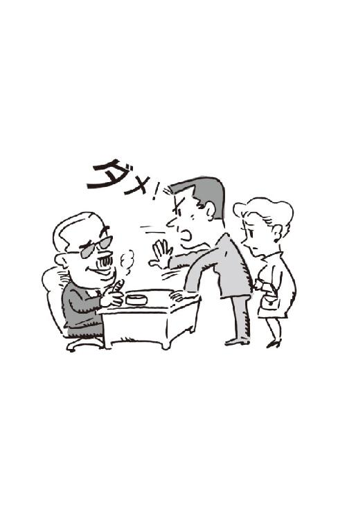
Ｑ15 詐欺の共犯になることを恐れて警察に届けられない
携帯電話に「おいしいバイトしない？」というメールが入り、消費者金融からお金を借りてしまいました。
◆おいしい話には近づかないほうが無難
携帯電話のメールに「おいしいバイトしない？」「消費者金融から取りあえず１００万円を借りて下さい。借入れても、その会社に知り合いがいるから、借入の履歴を抹消してもらえるので大丈夫です。それで、６割をあなたに上げます。」「１００万円を借りて指定の口座に振り込んでくれれば、60万円をあなたの口座に振り込みます。」といって、消費者金融からお金を借りさせる手口があります。
ところが、１００万円を指定した口座に振り込んだとたん連絡が取れなくなり、結局１００万円の借金を負うだけということになります。
だまされた人が知っているのは、相手の名前、携帯電話番号、メールアドレス、銀行口座だけであり、これらは偽名か他人の名義でしょう。
これでだまされる方も問題と思いますが、詐欺であることに間違いありません。
ところが、被害届を出そうにも、だまされた人も、払うつもりがないのに消費者金融からお金を借りているのですから、詐欺の共犯になるおそれがあります。そのため、警察に届けることもできないわけです。
だます側は次から次へと詐欺の手口を考えます。前例の手口はその一種にすぎません。安直にお金が手に入る方法など世の中にそうあるものではなく、おいしい話には近づかないほうが無難と思って下さい。
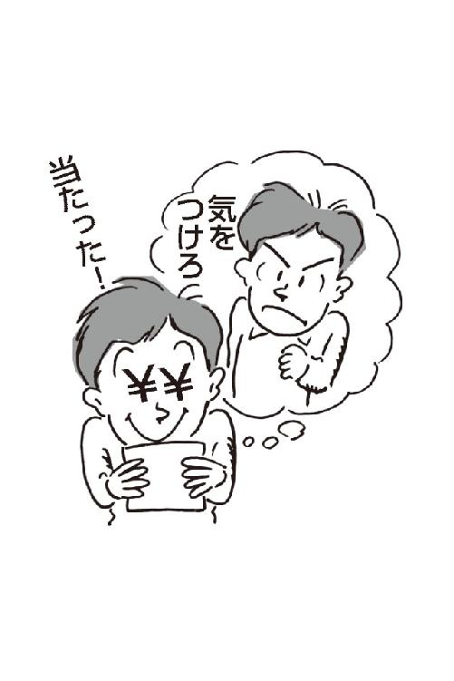
Ｑ16 お金の貸し借りでトラブルにならないために
お金でトラブルにならないようにするにはどうすればいいでしょうか。
◆正しい法律知識、書面の交換、早めの相談
お金の貸し借りはトラブルがつきものですが、それを避けるためには、まず正しい法律知識を持つことです。
また、契約書などの書面をきちんと交わしておくことも重要です。
どのような形式にしていいのか分からない場合には、メモでもいいから書いてもらうとよいでしょう。それだけでも、あるとないとでは大違いです。
そして、不安になったときは、早めに弁護士などに相談することです。法律相談料は通常30分５２５０円です。少々のお金を惜しんで大きな損をしないようにして下さい。
「知らないと損するお金の裏教科書」
発行日 ２０１２年９月28日電子版発行
著 者 お金の法律研究会
本作品の全部あるいは一部を無断で複製・転載・配信・送信したり、ホームページ上に転載することを禁止します。
本作品の内容を無断で改変、改ざん等を行うことも禁止します。
また、有償・無償にかかわらず本作品を第三者に譲渡することはできません。
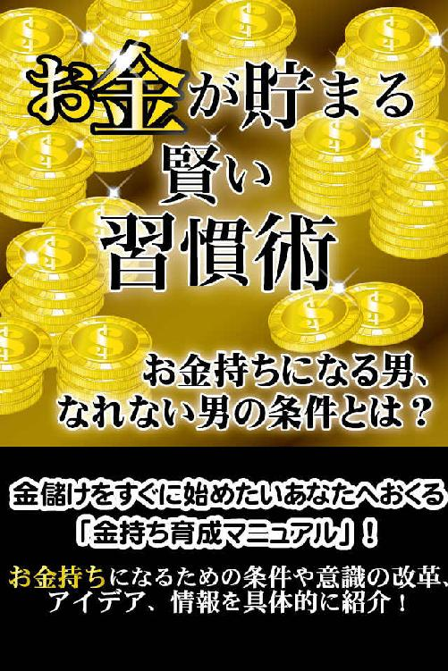
◆はじめに
人間の幸不幸を突きつめてみれば、お金の有無がかなりの影響力をもっている。「お金が人生のすべてではない」という人は、お金の威力を感じることに何度かぶつかり、それに負けた貧乏人である。
同じ人間に生まれてきたら、やはり、貧乏人ではなく、金持ちになりたいものだ。
「命あっての物種」というが、これは貧乏人の発想。金持ちになった人は、「命より金」というシビアな金銭感覚をもっている。金をもって三途の川を渡るくらいの執着が、生きている間に大金を蓄えるパワーになるのだろう。
その金持ちと貧乏人の差は何だろうか、その差は小さな違いから生じる。特に、若いときの考え方や行動の小さな差が、時間とともにどんどん大きくなり、中高年になると『天と地』の差となって表れる。
その差は、生まれつきの性格や置かれた環境・条件といったものではなく、ちょっとした頭の使い方、日常生活の行動パターンであり、お金への執着心といったものから生じることが多い。
金持ちになって幸せな生活を送るか、貧乏人になって一生をみじめに暮らすか、その分かれ道はそのときにはわからない。ところが、その分岐点を左か右へ行ったことで、取り返しのつかぬ大差となる。あのとき鈍行列車に乗ったために、途中で急行列車に追い抜かれてしまい、口惜しい思いをするが、もうどうにもならない。
そうならないため、金持ちへの道を歩くためにも、金のことを真剣に考えることだ。金は世の中の回りものなんてめでたいことをいっているようでは金持ちへの道ではない。
この本では、金持ちになるための条件や意識の改革、アイデア、情報を具体的な項目で紹介した。一つひとつを忠実に守れば、「貧乏人よサヨナラ、金持ちコンニチハ」が約束されるはずである。
お金が貯まる賢い習慣術 【目 次】
第１章●金儲けのスタートラインにつくあなたへ
お金持ちになるには「貯める原点」を知ることが先決だ
１ 金儲けが下手でもお金は貯まるし、上手なはずの人が借金漬けの例もある
２「命あっての物種」とはいうが、それでは金持ちにはなれないと心得るべし
３ 実るほど頭を垂れる稲穂こそ、金儲けの姿勢である
４ 小さなネタでも、その裏には大きな金脈につながっていることを悟れ
５ 上手なあいさつは金儲けの道につながる、大声で明るくあいさつしよう
６ 金儲け人間は太っ腹でもあり、デリカシーももっている人である
７ お金を貯めたければ絶対、「金は使わない」ことに尽きる。これしかない！
８「オレは絶対、大金持ちになる！」10年間、毎朝つぶやいた男に勝利の女神が...
９「自信過剰とウヌボレこそ、金儲け成功の第一歩である」と自己信仰しろ！
10 好奇心は金儲けの原点であり、常識はずれ、ハミ出しが大きな成功をおさめる
11 金儲けのためには、周囲の悪口、コキおろしを気にすることはない。成り金に徹しろ
12 カンと度胸は金持ちの「原点」、ど～んと肝に銘じて行動あるのみ
13 金持ちになるためには、礼・義理・恥の３欠き人間になることが基本である
14 金儲けにも「内助の功」は大きな要素、それには「７つの条件」がある
15 いつも懐の寂しい人は、性格まで寂しくなると心得よ
16 世の中は楽観的な人、悲観的な人に分かれるが、金や人はネアカの人のところへくる
17「早起きは三文の得」──今の時代にも通じる仕事への成功、金儲けへの道
18 トラブルは金持ちへの悪、金持ちケンカせずを日ごろ心がけよう
19 守銭奴ではマイナス、愛されるケチになれば、堂々とケチれて金も貯められる
20 金持ちの信条は「運、鈍、根」が大切、その根底には「人間関係」の重要さも
21 金儲けには上質のセンスが必要で、いつも儲けようとセンスは磨いておく必要がある
22 金を儲けたければ「人に好かれろ」そして「ありがとう」の気持ちをもて
◆ コラム 金儲け哲学10の法則 その１
第２章●金儲けをするときのお金に対する考えを知りたいあなたへ
お金持ちになるには、相応の「お金の使い方」がある！
１「小を積む」ことの計算ができる人は、確実に貯金を殖やせる！
２ 貯金を始めたかったら、まず、何をやりたいか、自分の天職を探せ！
３ 金持ちになりたかったら、現金を運用する方法を考えることが大切だ
４ 倹約とケチは紙一重でも、倹約は金を貯めるが、ケチは身を滅ぼす
５ お酒をツケで飲むような人に、まず金は貯まらない。やはり現金で払おう
６ 金が貯まる家庭は、夫婦が仲良く、バランスのいいことが基本である
７ お金や時間、投資や儲け、資産と分与...「金持ち」の人たちのこんな金銭哲学
８「拘束された時間」をいかに上手に使うかが金持ちになるポイント
９ 金持ちのサイフには名誉も地位も転がり込む。その中身で決まる人間模様
10 職住接近をはかれば時間や交通費などでムダがなくなりお金も貯まる
11 金持ちと貧乏人の差は、貯めようとする意欲、情熱の有無である
12 思わぬ大金は、ほとんど手元に残らないと考えた方がいい
13 金持ちの生き方を見るだけでお金の上手な貯め方が学べる
14 お金は「恋」と似ていてアクションを起こさなければどうにもならない
15 新製品が出てもすぐには飛びつかず１年待つことが大切
16 友人にお金を貸すと、友情もお金も失うことが多い
17 給料日に散財する人は、まずお金は貯まらないことを知ろう
18 禁酒、禁煙をしたからといってもお金は貯まらない
◆ コラム 金儲け哲学10の法則 その２
第３章●金儲けのコツを知りたいあなたへ
お金持ちになるには、人知れず「節約」もする
１「１円を笑うものは１円に泣く」１円玉を拾わないものに金は寄ってこない
２ 事業を始めるなら「人の金を借りること」借金が開業後のエネルギーになるからだ
３ 苦労して得てこそタネ銭の価値あり、35歳までにつくらないと、40歳では遅い
４ お金を殖やす最短の道は「使い道と投資先をリンクさせること」だ
５ 貯蓄好きの名古屋人の金銭感覚を学ぶと貯金は殖えるだけだ
６ 名古屋の堅実、合理性が生んだビジネス界の商習慣の「三タタキ」のすごさ
７ 貯金は最初の１００万円が難しいが、そこへ達すると面白いほど貯まるものだ
８ 大金持ちになったら、協力してくれた人に分配してやる大きなこころをもて
９ 金儲けは、価値あるものへの気配りがもたらしてくれる褒美である
10 金は水と同じで上流から下流へ流れる、腰の低い人の所へ寄っていく
11 セコいと馬鹿にしてはいけない倹約、節約生活は金持ちへの基本である
12 小さい、セコイといわず水道水やトイレットペーパーなど得することをやれ
13 金儲けのためには、セッセと種を播くことを心がけよう
14 金持ちは「貯めるより使うほうが難しい」と考えるもの、いかに有効に使うかが肝心
15 神頼みや縁起をかつぐだけでは金は貯まらない、その前に知恵をしぼるのが先決
16 食費や趣向品を切り詰めたからといってすぐにお金が貯まるわけではない
第４章●金儲けを今すぐに始めたいあなたへ
お金持ちになるには、このアイデアを使うべきだ
１ 人生には好・不調のバイオリズムがあり、そのピンチを脱出するには五つの方策がある
２ 金儲けはアイデア、人のやらないことを先に考え、実行することが第一
３ サイドビジネスを有効に活用し、マルチ思考で儲ける
４ 自治体の暮らしに役立つ制度を徹底利用してラクラク生活をしよう
５ 多重債務の苦しみから脱出するための「おたすけローン」って何？
６ たかが懸賞というなかれ、オイシイことづくめ、日常生活の足しにしよう
７ サイフには必要以上のお金を入れないこと、これが金を使わない基本
８ ネットオークションを上手に使えば手っ取り早い金持ちへの道！
９ パソコンのない人も店にもち込めば競売にかけてくれる所もある
10 妻が働くことは目先の家計補助ではなく５つのメリットがある！
11 巨富を築いた人は貧乏暮らし、コンプレックスもち、その人たちの生き方を学ぼう
12 金儲けを考えたら50万円貯めて株式投資を始めてみよう
13 株取り引き初心者でも勝ち組投資家になれるチャンス！
14 成長国の外国株式には値上がりの魅力があることを知ろう
15 自分を大切にするなら破産は避けよ、根性で立ち直れ！
16 株主優待券は日常生活を豊かにしてくれる！
17 店経営者なら、お客の立場でモノを考えれば収入は殖える
18 これからの時代は「サービス」がお金を生む
◆ コラム お金の格言集 その１
第５章●金儲けのための考えを身につけたいあなたへ
こうすれば金銭感覚が養われ、金持ちになれる！
１ 小さなお金を大事にすると、お金の方から寄ってくる、それに気づいたら金持ちだ
２ 約束・時間を大事にする人は金の方から集まってくる
３ 公私のけじめをつけられないような人は金も信頼も得られない
４ 人に金儲けのチャンスを与えるようになれば、自分も金持ちになれる
５ 共働きでお金を貯めたいなら、夫の収入だけで生活する設計をたてよう
６ お金を貯めるにも、「タダより高いものはない」と心得よ
７ 楽観的な人には、人とお金が集まってくる。お金も円満を好むのだ
８ 朝早く起きようと心がけるだけで、お金の貯まり方が違う
９ 自分とは正反対の友人と付き合うことで金運に恵まれることもよくある
10 金銭に執着する人間を軽蔑する人に、お金は残らないと、心得よ
11 リスクをちゃんと計算しておけば、商売で大失敗することはない
12 長所を伸ばせば道は開ける。「好きこそものの上手なれ」が金持ちへの道
13 金を生み出したいなら、人脈を大切に育てよう、協力してくれる他人の力は大きい！
14 真の金持ちは、ふだんの情報と知恵を制することに努力するものだ
15 成功のための羅針盤として確固とした「座右の銘」を掲げよう
16 金持ちになったらおおらかな気分で、セコセコしないことが肝心だ
17 同じランクの人間と付き合うのではなく、ワンランク上の人と付き合えば金も貯まる
◆ コラム お金の格言集 その２
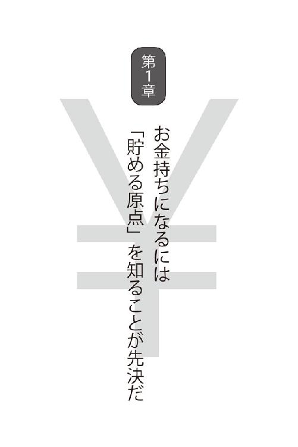
１ 金儲けが下手でもお金は貯まるし、上手なはずの人が借金漬けの例もある
お金を儲けることと貯めることとは別
事業らしい事業を何もしていないのに、数千万円ものお金を貯め、羽振りがいい人はいるものだ。「あの家は何で、金があるんだろう？」と近所の人が不思議がる人だ。
一人暮らしで孤独死したおじいさんが、数千万円の預金通帳を残していた、という話が新聞に報じられることがある。これは、金儲けはできなくても、金を貯めることが上手な典型だろう。
その逆で、事業を手広くやって、成功しているように見えるのに金が貯まらない人がいる。こういう人は、お金を貯めるのが下手なのだろう。
この違いはどこにあるのだろうかといえば、「入る金」と「出る金」のバランスに関係がありそうだ。
つまり、どんなに大きな事業を営んで成功し、大儲けできたところで、入ってくるお金と出ていくお金が同じなら、貯まらないのは誰にでもわかること。要するに、お金が貯まるかどうかは、高速道路の交通渋滞と同じと考えればいいだろう。出口が小さいと自然に車は渋滞する。
お金もある程度の収入があれば、それを使わないようにすれば自然に貯まるわけだ。
その貯まったお金をどんどん殖やせるかどうかは、また別の次元の話になる。
この出口を小さくすることに気づいた人がお金を貯めているわけで、入口も出口も同じ大きさにしている人が金を貯めるのが下手なのだ。
どんな店や事業をやっても、最初から儲かるものではない。しばらくは我慢してお金をできるだけ使わないようにする。商売が軌道にのり、ある程度貯まってきたら、今度は殖えるスピードが、出ていくスピードより大きければ少しくらい出ていくお金が殖えても貯まる。理屈ではそういえても現実には難しい。商売が成功しても、そのまま金持ちになれるとはいえないのだ。
２ 「命あっての物種」とはいうが、それでは金持ちにはなれないと心得るべし
「お金と命、どっちが大事ですか？」
と問われると、「比較できるものではない」と誰もが言うだろう。
「命は金で買われぬ」という諺がある。命は金で買えないが、徳を積むことによって長寿を保つことができるとの意味だ。
「命あっての物種」ともいう。ゆえに、命を何よりも大切にしなければならぬ、というわけである。いくら大金をもっていても三途の川を渡り、死んでから使うことはできない、だから命のほうが大切なのだ。
ところが、「私は命より金のほうが大事だと思っている」と豪語していたのは、東京・祖師ケ谷で城南電機という激安店を営んでいた宮路年雄氏だ。和歌山県生まれの人だが、数年前に亡くなった。その金銭哲学は「命より金が大事」に徹したものだった。
生前、その理由を聞いたことがある。
「もし、金がなかったら生きてたって商売もできないじゃないか」
こんなエピソードがある。かつて従業員に往来を裸で走ったら１００万円あげる、といったそうだが、誰も取り合わなかったという。そのとき従業員にこういった。
「この世は金がすべて。みんなも金持ちになりたいやろ。けどな、そのためには人と同じことをしていてはいかん。私だったら１００万円もらえるなら絶対走るわ。ただし条件がある。お金を先にもらうこと。明日じゃダメや。なぜなら払う側、もらう側とも明日まで生きているという保証はないからや。大切なのは目の前のキャッシュ。私は明日の１００万円よりも今日の１万円を選ぶ。そういう人間や」
従業員もこの言葉に理解を示してくれた、と語っていた。
この人の激安販売の基本は、現金仕入れがあった。アタッシュケースにはいつも数千万円が入っていた。商品の仕入れは時間との勝負、ここぞというとき、キャッシュを出して大量に仕入れる。それだから安く売れる。メーカー品を半値くらいで売っていたので、電機メーカーから出荷停止をくらったこともあったそうだが、それもすぐに解けた。売れに売れたものだから、メーカーも宮路氏を無視できなかった。
「人と同じことをしていては金持ちにはなれないぞ」と、この人らしいエピソードだ。
３ 実るほど頭を垂れる稲穂こそ、金儲けの姿勢である
堂々と胸を張り、気合いで儲ける...
他人に対しては腰を低く、頭を下げて生きることで、金というものは儲けさせてもらえるものだという。「実るほど頭を垂れる稲穂かな」という諺は、その姿勢を語っているものなのかもしれない。
ふんぞり返って他人を見下げるような心がけでは金というものは儲かるものではない。肩で風切って街を歩くのも元気はあるように見えるがどんなものだろう。
だからといって、世間を渡るのに肩をすぼめ、うつ向いてひっそりと歩くようでは、これまた金儲けの仕掛け人としては失格というもの。道路に落ちている物を拾ったぐらいで金が貯まるものではないし、拾った金で金儲けができるはずがない。
金というものは、努力し、アイデアを工夫し、自分の器量に合わせて天からいただくようなものである。胸を張り、上を見上げ、堂々としている人間に、福の神が天から金を授けてくれるものかもしれない。
また、金儲けというものは、タメ息をつきながら行うものでもない。ゆとりのこころでじっくり考え、気合いで行動に移すということが成功をもたらす。
金を儲けるのに、何かのプレッシャーがあったり、ビクビクしたり、悲壮感があったりしたら、まずうまくいかない。イチかバチか、一発逆転のチャンスを狙う金儲けであっても、そこに深刻なムードが少しでも漂っていたら金儲けに水を差すようなものなのである。
金儲けは、ゆとりのこころを失わずに、真剣に取り組むものだ。
たとえば、女性にプロポーズするとき、深刻な顔で迫ったら、女性は警戒心をもってこころを開いてはくれない。だが、真剣になって口説いたらこころを開いてくれるはずだ。
深刻になっていると、本当の姿が見えてこない。真剣に、作戦を立てると本質が見えてくる。金儲けとは、ものの本質を見極めるところから始まるといってもよいからだ。
４ 小さなネタでも、その裏には大きな金脈につながっていることを悟れ
「あれは氷山の一角だ」
...などという。水面から顔を出している小さな氷の山は、それはほんの一部で、その水面下に隠されている部分が巨大な山であるという例は、金儲けを考えるものにとって一つの寓意を含んだ話といっていい。
ところが、氷山の一角から隠されている部分を推測するということは、実にマレである。人は見たままを真実と錯覚する。いや、それが人間というものだ。外見で人を判断するのと同じように、氷山の一角はただそれだけの山として見過ごしてしまう。
金儲けの仕事も、最初は果たして儲かる仕事かどうか、なかなか判断がつきにくい。仕事を始めるとき、人は氷山の一角だけを見て自分の仕事の規模を考えるものだ。
しかし、やがてその仕事が予想外の金の山につながっていることに気づくことがある。それは、金儲けのための嗅覚を働かせているといえるかもしれない。そのとき、氷山の一角を大事な山として取り扱ってきたゆえに突き当たったのが金の山である。
そこに気づかなかった人は、金の山を単なる岩山と見捨ててしまった結果である。
かつて脱サラという言葉が流行った。サラリーマンを辞して独立開業する人たちは、今も多い。昨今の不況時代に、大金を投じて独立開業する人など、人生の自殺行為だという人がいるが、どうしてどうして。いさぎよく会社を辞して自分の道を歩く人は、不況に関係なくいるものだ。なにせ、現代は大企業でもいつ倒産するかわからない時代。リストラだって簡単に実行される。それなら自分の夢だった独立開業にチャレンジしよう、というわけだ。
独立開業で成功するには、氷山の一角である金の山を見過ごしてはならない。
繰り返すが、氷山の一角を嗅ぎとってぶつかるほうが成功の度合いも高い。
小さなネタでも、大きな金脈につながっていることを見つけ出すことを知ろう。
５ 上手なあいさつは金儲けの道につながる、大声で明るくあいさつしよう
「まいど～」「まいどおおきに！」
関西弁で大声で明るくあいさつされると、元気がでる。買い物してもどこか得したような気分になる。そうあいさつされて悪い気にならない。大阪商人のあいさつは、自分はともかく相手をいい気分にさせるよう計算されているのかもしれない。
大阪商人だけでなく、東京でも魚屋や八百屋、激安店などの新鮮さが勝負という商売は客の呼び込みに威勢がいいが、これは客を呼ぶだけでなく、ツキを呼び込んでいるような気がする。金儲けは気合いでやる、というのはそのことだ。あいさつもまた同じ考え方だ。明るく人に声をかけるというのも、金を呼ぶ掛け声でもあるのだ。はずむような相手のこころにしみ込む言葉は、感動も与える。これは値打ちものである。
人に明るく声をかけることができないようでは、どこか心が落ち込んでいる証拠である。とにかく、言葉を発して暗い部分に光を当てることが大切なのである。マイナスイメージを威勢のいいあいさつで吹き飛ばし、凶を吉に、運気をプラスに変えることは、その人の努力なしではできない。まして金儲けをしようと考えている人が、暗い顔では金儲け話はどこかへ行ってしまうし、金運も遠ざかるというものだ。
明るいあいさつで、人に働きかけるということは、相手も気分がいいだろうし、自分も気持ちがよくなる。相手を気分よくさせて、自分に好意をもってもらう。これが単純に人に好かれる金儲けの基本なのである。
「笑う門には福来る」という諺がある。
「和気財を生ず」というのもある。単純に訳すなら、ニコニコしていると金が貯まる、ということだ。
長い人生の中では、ときにガックリと打ちひしがれてしまうこともある。そのとき、たとえ意識的であるにせよ、平気を装い、泰然自若と構えていることが運気も呼び込む。
人間は薄情なもので、景気がいいと寄ってくるが、少し落ち目になると寄りつかなくなるという。人は本能的にマイナスの「気」を悟っているのだ。それを吹き飛ばして明るいプラスの気を呼び込もう。
６ 金儲け人間は太っ腹でもあり、デリカシーももっている人である
金儲けには瞬時に判断を下す男らしさが必要である。商売をやっていく上では、その場で大きな決断を迫られることがある。そのとき、相談してみよう、調査してからなど迷ったり、悠長なことをいっているようでは商機を逸してしまう。
瞬時に判断して決断を下すという男性的な性格がないと商売はスムーズにいかない。儲けにつながらないということだ。事業や商売では人を使うことも多いので、男っぽさが要求される。社員の小さな行動にいちいち反応しているようでは上手な指揮がとれない。
金儲けする男のある側面は、ギャンブラーや勝負師と似ている。しかし、事業家は、そういうカリスマ的な面と同時にデリケートな一面ももっていなければならない。
この人間的でヒューマンな部分を忘れた事業家は、単に勝負に勝って金を儲けた人であり、本当の商売人ではない。本当の商売人というのは、儲けるためにどんなことにも細心の注意を払う人である。金儲けにも気配りが大事なのである。
社員の小さなミスを笑いとばして許してやる度量の大きさも必要だ。もし、それが金儲けのためにプラスになるなら、どんな小さな社員の手柄にも目を向けて誉めてやるというぐらい、神経が細かくなければ成功しない。
豪放磊落な人というのは、物事を複雑に考えるのを好まない人が多い。物事を緻密に計算し、実行することが苦手で、「まあ、いいじゃないか、やってみろ」と言った太っ腹なことが案外、当たる場合が往々にしてある。
反対にいろいろ考えて疑問を分析し、次々に問題を提起していったら、結局、どうもわからない、これは止めておこう、ということになってしまう場合もある。
オーナー会社では、社長が決めて即部下に命令してやらせる「トップダウン」方式が多い。「社長命令だからな」と、社員はこぼしながらもやってみると、うまくいくケースは多い。
社長は自分で「いける！」と判断したからやらせるわけで、自信がある。
ところが、ある企画をみんなに検討しろ、といったものは、まずもってうまくいくケースは少ない。これはよってたかってみんなで企画のつぶしあいになるからである。これでは金儲けは難しい。
７ お金を貯めたければ絶対、「金は使わない」ことに尽きる。これしかない！
今こそ、爪に火をともすケチな暮らしから始める
昔から日本では、貯金を貯めるには「爪に火をともしてお金を貯める」という考え方があった。食うものも食わず、着るものも着ないで、ロウソク代わりに爪に火をともすというケチな生活が基本にある。
そのくらい日常、ケチケチしないとお金は貯まらないといった時代と違い、今は多くの人々が豊かになり、ケチケチ生活をしようという人は少ない。ちょっとくらいお金を使ったからといって生活に困るわけではない、むしろお金は使うためにある、お金は貯めるだけが能じゃないと考える人が増えている。
でも、そんな人でも「お金がほしい、お金を貯めよう」と考えるものだ。
では、今の世の中で「貯金」ができる方法は、どんなものがあるだろうか。
単純にいえば、入金した金を使わず、そのまま残せば「貯金」はできるが、今の世の中で金を使わない生活は考えられないから、どれだけ「使わないか」がポイントになる。
結論からいうと、「お金を貯める最大の秘策」は「金は使わない」ことに限るのだ。
しかし、これは理屈では最高の貯金法だが、現実味は薄い。では、どうするか？
そのポイントは、「使い方」にある。金の使い方の上手、下手が金を貯めることにつながるわけで、たとえば、25万円の給料を得ているサラリーマンが、毎月の家賃や税金などの固定的な支払いをして、残った金が10万円としよう。
Ａさんは、ドライブや露天風呂に入りに行くレジャー費で５万円、あとは飲み代に使って次の給料日にはほぼゼロ。Ｂさんは、飲み代などで５万円、あとはとりあえず貯金。Ａさんの１カ月は、現代の若者の平均的なライフスタイルかもしれないが、貯金はゼロ。これが１年続いても、やっぱりお金は貯まらない。Ｂさんはレジャーを楽しまなかったのとひきかえに、１年で60万円貯めた計算になる。
「お金を貯めよう」という目的からいえば、明らかにＢさんの勝ちである。
お金を貯めたかったら、レジャーをガマンすることだ。１年間、レジャーに行かないものが最後は勝ちである。
８ 「オレは絶対、大金持ちになる！」10年間、毎朝つぶやいた男に勝利の女神が...
「自己暗示」をかけることから始める
知人から聞いたある地方に住む男性の話だが、その男は、「必ず大金持ちになる」といつも自己暗示をかけて行動していたという。この人は、朝目覚めると布団の上に正座し、膝の上でこぶしを握り、目を閉じてこのおまじないをつぶやくのだそうだ。
「オレは絶対、大金持ちになる」と10回、声に出してつぶやく。こうして10年たつと、大金持ちになっていたそうだ。本人は特別に努力したこともない、苦労もしていない、上手に商売したわけでもない、ただ「絶対に大金持ちになる」と信じて毎朝、自分にいい聞かせてきただけだという。この男の信念を理論的に分析してもはじまらない。分析してしまうと大金持ちになった根拠も味も素気もなくなってしまうだろう。つぶやくだけで金持ちになれるとしたら、世の中は苦労しないで生きられる。
しかし、人の人生は信じることは報われ、自己暗示は超能力に似た力を発揮するものだ。この男が金持ちになったということは、自己暗示することで、行動にスピード、自信、迫力が伴い、節約、倹約があれよ、あれよという間に金を殖やした、金儲けのエネルギーとなったと想像はできる。自己暗示が金儲けのエネルギーとなることは誰も否定できないだろう。人間の発散する気配が周囲に対して影響を与えている点も否定できない。人間の「念力」が周囲の環境を変えることができるという、一つの証明でもある。どんなマイナスの状況が自分を取り囲んでいても、自分の念力でプラスに変えていくことはできるのだ。
自営業の人だったら、長引く不況で経営環境が悪化しているケースは多いから、グチも出るし、顔つきも暗くなる。だが、それを超越して明るく振る舞う。社員をかかえている経営者なら、社内に暗いムードが漂い、士気も低下するだろうが、社長が自信をもち、明るく対応すれば社員の不安も吹き飛ぶ。そうしているうちに、新しい仕事が舞い込み、経営に元気が出る。自分を信じて行動してきた結果が「金儲け」の道を拓くことにつながる。前出の男はたぶん、そんな10年ではなかったろうか。自分を信じる男に金はついてくる！
９ 「自信過剰とウヌボレこそ、金儲け成功の第一歩である」と自己信仰しろ！
でも他人には謙虚であることが大事！
人間は謙虚であらねばならない、と成功した人がよくいう言葉である。他人に対していつも一歩へり下り、サービス精神を発揮しながら生きていくということは、なかなかできるものではない。
会社経営者や自営業の人には、他人に負けてはいられないから、リーダー的立場に立つと、ときに謙虚さが失われるものだ。では、その謙虚さと金儲けがどんな関係があるというのか？
どんな人間に対してもヘり下って、暖かい気持ちで接することで、他人に好感をもってもらえる。女性に真にモテる男というのは、同性からも好かれるものだ。
それには、自分では人知れず「自己過信とウヌボレが成功のもと」と心得よう。他人には暖かく、自分には厳しく対処しようということだ。底が浅いウヌボレや自信過剰のキザ男になれということではない。
事業を成功させたり、金儲けするとなれば、ある程度突飛な考え方というものが必要である。
自分に厳しく対処できれば、自信ももてる。その自信は、ウヌボレに近いくらいの自己過信である。これはキザな発言をすれば「自己への信仰」といってもいい。
「オレが考え出したビジネスだから、失敗があるはずがない、必ず成功する！」
そうはいっても人間には失敗することがある。だから次はやめるのではなく、成功へのステップと考えたい。失敗したからといって、自分の考えに自信を失うようでは、思い切った決断を下すことはできない。
「オレなら必ず儲けてみせる」「オレのやることに間違いなんかあるものか」──こういった自己過信とウヌボレが自分の中で燃えたぎっているから、思い切った決断を下すことができるのだ。
この考えが甘いと「金儲け」にはつながらない。一獲千金を目指す人ほど、自分を信じ、チャンスを狙う早道である。
10 好奇心は金儲けの原点であり、常識はずれ、ハミ出しが大きな成功をおさめる
何でも手を出したがる助平心も大切である
好奇心のないやつは、一つのことに夢中になったりしない。お菓子のおまけの「食玩」を集めるのが人気だが、これも好奇心が昂じて集めだしたものだ。
これは金儲けに限らないかもしれない。大きなことをやる場合、集めたりする場合はその動機となるのは、好奇心である。金儲けの道に入り込むような人間は、総じて好奇心が旺盛なものである。「ま、金は使うためのもの。余ったら貯めるさ」といっているようでは、金に執着しているとはとてもいえない。
金儲けを第一義にするということは、海のものとも山のものとも分からないものを狙うことである。海千山千というが、大なり小なりそんな雰囲気をもっている。好奇心なくして、なんで金儲けなどにのめり込むことができるのか。好奇心といえば聞こえはいいが、新しいものに何でも手を出したがる助平心といってもいいだろう。好奇心や助平心、新しいものに興味を示す性癖が、金儲けを志す上で相当に重要な要素を占めているのだ。ときにはヤケドをすることもあるが、好奇心旺盛、たくましいやつは、一度や二度のヤケドでこりることはない。三度目にしっかり成功させ、一・二度目のヤケド分を回収するものだ。好奇心こそが、金を儲けようとする意欲の原動力になることは間違いない、といってよいだろう。
さらに、金儲けには「常識はずれ」「ハミ出し」の分だけ大きな結果を生むといってもよい。何かに投資したとする。手持ちの１００万円を投資して10万円を儲ければいい、と考えるのは常識だ。１０００万円投資なら１００万円......。会社経営もそうだ。これは悪いことではない。
ところが、その常識を無視して１００万円投資したらその10倍の１０００万円儲けてやろうと考えることが、むしろ大切である。
「せいぜい儲けは１００万円」と常識的な結論を出さないで、思い切って大きな目標を掲げ、それに向かってあらゆる手をつくしてみること。常識はずれの構想、目標を描いた分だけ大きな結果を生むのである。
11 金儲けのためには、周囲の悪口、コキおろしを気にすることはない。成り金に徹しろ
見栄や格好で金が貯まったら苦はない
金を儲けるためには、小さな犯罪でも犯してはならない。節税に神経を使い、支払うべき税金を堂々と払って正しく金を儲けるならば、天地神明に誓って恥ずべきことは何一つない。
「あいつは成り金さ」「成り金趣味でイヤなヤツ」「ドケチで付き合いづらいよ」......金に細かい男は、だいたいよくは評価されないものだ。
「ケチだからよ、結構金を貯めてるらしい」
「社内の持ち株は１、２らしいよ」
「飲みに付き合わない分、貯めているらしいよ」
「いやあね...ケチって」
社内の金持ちは、だいたいこんなふうに陰口をたたかれ、コキおろされるものだ。これって、もたないもののヤッカミでしかない。同僚たちの顔色を気にしたら、３回に１回はカラオケを付き合わされる。その分、貯金は殖えないのだ。
金儲けにひとたび志を立て、２年で３００万円、５年で５００万円を貯めると目標を決めたら、社内の悪口など馬耳東風をキメ込んで目標一筋で誘惑に負けない強固な意志をもつことである。ナリフリかまわずに、預金通帳の残高を殖やすためのみ努力をすべきだ。「成り上がり」に徹することが大切である。見栄や格好で金が貯まるのなら、苦労はいらない。
どんなにもっともらしいことをいったところで、金儲けが下手であったり、会社を倒産させてみんなに迷惑をかけるようでは、これは成りサガリである。
美辞麗句を並べたて口説いても、彼女にハンドバッグ一つプレゼントできないようでは、女は満足しない。口先だけのいい加減男として早い時期、別れが待っている。
「勝てば官軍」という言葉がある。どんなに大義名分を並べたてたところで戦いに負けてしまえば、賊軍の汚名に甘んじなければならない。儲けたやつが最後に笑うのである。
12 カンと度胸は金持ちの「原点」、ど～んと肝に銘じて行動あるのみ
金儲けは無から有を生じる
金儲けは、理屈どおりにはなかなかいかないものである。だから「捕らぬタヌキの皮算用」という諺が今もって使われる由縁だろう。
金儲けは無から有を生じるということは、漁師が魚群探知器を使って魚を一網打尽にするのとは根本的に違う。
金儲けへのチャレンジは、ある程度気合いのようなもので、統計数字を眺めたり、経済動向を分析しているだけではラチが明かないこともある。
中には「そんなことはない。金儲けというのはビジネスで経営理論や統計的に科学的な考え方や方法論がしっかりしていれば、より確実にできるはずだ」と反論する人もいるに違いない。確かに、会社経営がドンブリ勘定で通用するものでもない。
しかし、このビジネスは金が儲かるか、儲からないかという判断、路線を大幅に変更するというときなどの決断はパソコン相手の計算によっては出てこない。
そのときに要求されるのは、あくまでも直感である。ある程度のデータを参考にするが、決断は社長やその人のカンに頼るしかない。なぜなら、ビジネスの結果として金儲けになった、ということになり、最初から利益を計上してそのとおりにいくことは少ない。
金儲けは、いうなれば無から有を生じるものだから、どんな最新のマシンを使用しても大なり小なりその方法は出てこない。
カンで判断するとなれば失敗もあるかもしれない。失敗したら無一文、地位も名誉もなくしてしまうかもしれない。とてもルンルン気分でやろうというわけにはいかない。
カンで決断、度胸で勝負ということにならざるを得ない。金儲けの素材を前にして、ああでもない、こうでもないと迷い、ためらっているようでは、まだ本人が金儲け人間として成熟していない証拠である。
カンと度胸は金持ちになる「原点」だと肝に銘じよう。
13 金持ちになるためには、礼・義理・恥の３欠き人間になることが基本である
５年間でこころの弱さから脱却する
「ケイコに励め。土俵の中にカネも名誉も埋まっている」
元・二子山親方は弟子たちにそう言って叱咤激励しながらケイコを見守ったといわれる。そうはいっても１日24時間以上のケイコはできない。ケイコだけでは計れない力士の資質があって、どんなにケイコをしても出世しない力士もいる。プロ野球の選手、歌手、タレントなども練習を積めば一流になれるという保証はない。会社員だって同じだ。
金持ちになれるかどうかも同じこと。もちろん努力や情熱は前提条件であるが、がむしゃらだけの猪突猛進は逆効果である。
そこで、無理なことはせず、金持ちになるためのトレーニングをやることを勧めたい。20代前半から30代半ばの約15年間のうち、３分の１の５年間だけをこれに当てる。この５年間だけ「無理」をするわけだ。それも勤倹、節約といった受身から、まず自分を鍛えていく。
プロ野球選手が春のシーズンを前に行う自主トレーニングのように、まず金持ちになれる体質づくりを行う。
メニューは「３欠き人間」からスタートするもので、「３欠き」とは①礼儀、②義理、③恥の３つを欠くのである。
考えてみると、人は、この３つのためにどれほど自由を剥奪され、経済的も負担を負っていることか。それが、みんな『良い子』になりたいために、若いときからこれを後生大事に守っていく。そこで、５年間は親戚や友人、同僚たちに「３欠き」を実行する。礼や義理の拘束から脱却する。
だが、現実は浮世のしがらみに抵抗し切れず３欠く人間になれず、中途半端の人生を送ってしまう。なぜなら、「仲間外れが怖い」からである。世間体に妥協して３欠く人間になれず、その結果、後悔するのである。
金持ちになるための体質づくりは、まずこの気弱さから脱却することにある。この気弱さを乗り越えなければ金持ちにはなれない。
14 金儲けにも「内助の功」は大きな要素、それには「７つの条件」がある
美人、実家が金持ち、高学歴は当てにならない
人間関係で一番身近なものは家族であり、特に配偶者は家族の中でもっとも密なものである。だからこそ、配偶者の選択は金持ちになりたいと思う人にとっては重要である。
かつて功成り名を遂げた立志伝中の成功者たちが、その要因として「内助の功」をあげる。歴史上で有名なのは、山ノ内一豊の妻だ。その言葉は、妻への感謝であり、その選択を誤らなかった自負といってもよいだろう。
結婚はまさしく金持ちか貧乏人の人生の岐路といってもよい。しかし、多くの人はこの厳然たる事実を忘れて、安易に妻を選んでしまう。
もう一度いうが、妻の尻押しがなければ、金持ちになるのは難しい。
では、どんな女性が結婚後に「内助の功」を発揮してくれるか、例をあげよう。
①健康な女性、②よく働く女性、③質素な女性、④商家出身の女性、⑤係累の少ない女性、⑥楽観的な女性、⑦頭のいい女性──この７つの条件がすべて揃っている女性は、なかなかいないだろう。だが、せめて５つくらいの要素をもっていれば、おそらく結婚10年で、金持ち一家になっているはずだ。しかしその反対に、２つか３つくらいの要素しかもっていない平凡な女性なら、まず金持ちはあきらめよう。生涯、貧乏な暮らしが目に見えている。
これらの要素の中に、「美人である」「実家が金持ち」「高学歴」といったものが含まれていないのに気づくだろうが、これらの要素は金持ちにはつながらない。
「お金は働いて稼ぐもの、もらうものではない」からである。
美人ではないが、健康で質素な女性は、生涯でどれだけ貯蓄に貢献してくれるか、はかりしれない。商家出身の女性はお金の尊さをよく知っているので、金銭感覚も堅実、日常生活の家計の切り盛りが上手だ。
係累の多い女性は、冠婚葬祭などの付き合いが大変だ。
楽観的な女性は、あまりくよくよしないから、男として何かの勝負のときに決断がしやすい。
15 いつも懐の寂しい人は、性格まで寂しくなると心得よ
大金持ちにと思えば懐も温かくなる
アメリカの心理学の始祖といわれるウィリアム・ジェームスは言っている。
「金持ちになりたいと思えば金持ちになれるだろう。徳の高い人間になろうと思えば、そういう人間になれるだろう。学識ある人間になろうと思えば、それは可能だろう。しかし、一つのことだけを願いなさい。いくつも矛盾し合ったことを、すべてかなえようと思ってはいけない」
これは人間の深層心理のメカニズム、自己暗示の神秘について言及したものだが、アメリカの成功哲学を支える基本的な考えといってよい。彼は人間は一つのことをこころから念ずればそれを実現することが可能だといっている。これは潜在意識の働きによるもので、潜在意識は一つの明確なイメージが送られてくるとそれをキャッチする。そして、潜在意識の無限の力により、キャッチしたイメージを現実のものにするというのである。
いつも懐の寂しい人は、性格まで寂しくなるというのは、ジェームズの考えからいっても、当然の成り行きといえる。人間の内面、潜在意識の状態がそのまま現実へ反映されるというのが彼の考えだ。性格つまり内面が寂しければ、外面的な反映、懐が寂しくなるというのは自然の結果なのである。
こころが貧困だと、金持ちにはなれない
つまり、発想の転換が重要になるということだ。多くの場合、外側に現れた結果だけに注目してしまう。お金がないから、こころが貧しくなると考えがちだ。しかし、本当はこころが貧しいから、お金が寄ってこないのだと説くのが、ウィリアム・ジェームスの発想なのだ。大多数の人たちは、成功して富を得るのは何か特別な素質、能力をもった人たちと考えがちである。しかし、それは間違った考えなのだ。裕福と貧困、健康と病気、成功と失敗、その差はコインの表と裏のようなもので、使い方を間違えなければ、欲しいものが手に入るのだ。その使い方とは、積極的心構えをもち望ましい状態をイメージとして潜在意識に送り込むことなのだ。
16 世の中は楽観的な人、悲観的な人に分かれるが、金や人はネアカの人のところへくる
ネアカの人は悪いことも笑いとばす
会社や世の中を見渡すと、「楽観的な人」と「悲観的な人」と大きく分かれていることがわかる。
前者は悪いこと、悲観的な出来事に遭遇しても明るいほうへと導き、これくらい何でもない、何とかなるさ、努力さえすれば自然に道は開けるとくよくよしていない。だが、後者はその逆でもうこれでダメだ。この先もっと悪いことが起こるに違いないと、つぎつぎに悪いほうに連想を働かせる。
どちらが正しいかは一概にはいえないが、そう考えることで「明るい顔」になり、「暗い表情」にもなる。特に人の上に立つ社長や部課長なら、その下のものは「明るい顔」の人につきたい。
ともかく、明るいほうへ思いをめぐらせるといっても、ただやたらと明るいだけでは困るが、どちらかというと、世の中をいつも暗いほうへばかり考えていると、考えることがすべて袋小路にはまってしまい、自分で自分を身動きのとれない状態に追い込んでしまいかねない。そのうち、やっかいなことに周囲にも影響してくる。ネクラな人と一緒にいると、いい話や儲け話があっても楽しくならないものだ。
反対にネアカな人は何でも笑いとばしてしまう。いい話や儲け話もポロッとしゃべってしまう。してみると、楽観的な明るい人というのは、お金のほうから寄ってくるものだ。人も明るくにぎやかで楽しいところに集まってくる。
環境は人間形成の大きな要素の一つだからだ。悲観的な性格が養われる環境に育ったならば、自然に悲観的なものの考え方をするようになる。心配のほうが先に立つから、お金を貯めても心配ばかりしてしまう。人にだまされないか、お金をなくすような目にあわないか、そう考えるたびに消極的になってしまう。そんな人のもとへは「福の神」は寄ってこないものだ。
17 「早起きは三文の得」── 今の時代にも通じる仕事への成功、金儲けへの道
早起きして散歩したり、人より早く働く人......
「早起きは三文の得」という諺はこの人たちに当てはまる。今の若者たちに言わせると「早起きすると、夜眠くなるだけ」とトボケたことを言うものもいる。
確かに、人がまだ寝ている前に早起きして行動すれば、その分余計に働くことになるのだから、目に見えない得をすることになる。
今、大きな会社でも管理職だけを集めて午前８時から「早朝会議」とか、「朝食会」などを実行しているところがある。一般社員が出勤する一時間に会議をやることで、「管理職はやる気なんだぞ」という意思表示をしているようなものだ。これも形には表現できないが、「得」につながることだろう。会社全体が引き締まれば儲けにつながるかもしれない。
サラリーマンでも自営業者でも、朝に強い人がいる。反対に９時、10時まで眠っていないと一日が動かないという人もいる。
客観的に見て、やはり得するのは朝に強いほうだ。毎日、早起きして出勤前に一時間くらい散歩している人もいる。早起きして会社まで歩く人もいる。この人は健康的に得していることだろう。
朝、みんなが出勤前に会社に入り、オフィスの掃除をする人がいる。その反対に、始業ぎりぎりに駆け込んだり、寝坊をしたからといいわけの電話をしてくる人がいる。どちらが得するかというと、圧倒的に前者だ。このことを「働き人間」と「怠け人間」に分けたら、やはり働き人間が金も貯まるだろうことははっきりしている。
今の時代に「早起きは...」の諺は説得力はないが、その言葉の真髄は、金が貯まる人か、貯まらない人かに通じるのだ。
人より早く起きて仕事に取り組もうという意欲や意気込みが、長い目で見るとその人をどんどん向上させ、力をつけさせ、金儲けの道へつながることになるのである。
18 トラブルは金持ちへの悪、金持ちケンカせずを日ごろ心がけよう
目先の欲、一獲千金は邪悪な発想だ
世の中には、頭もよく考え方もしっかりしているのに、お金にさっぱり縁のない人がいる。いつも金にピイピイしているくせに自分を買いかぶり、傲慢不遜である。自負とかを自分に当てはめて考えているようだが、そのくせお金が欲しくてしょうがない俗物人間なのを自分ではわかっていない。また、トラブルメーカーであり、たえず身近にゴタゴタを起こしている。貧乏人へと転落していく軌せきである。
ある弁護士事務所で働いていた人に聞くとそこへやってくる依頼人たちには、一つの共通項があるという。それは、いつも正義をかざす一連の理論家だったということである。自分の言動を絶対正しいと信じて相手に損害賠償を求める人たちなのだが、彼らは総じて貧乏人だという。
「金持ちケンカせず、リッチマンは訴訟はまずしない。相談にくるのはほとんど金に縁のないトラブルメーカーたちですよ」
法廷に自分の権利を訴えるのは誤りではないが、それによって得るものは意外に少ない。裁判にこぎつけるまでの時間や費用もかなりのものである。その放出エネルギーに対して得るもののあまりの少なさに誰もがガッカリする。金持ちへの道とは逆行しているのである。
金持ちとして大成している人は、人間的に円満な人たちが多い。寛容でこころが広い、金を得たからそうともいえようが、こころの広い性格だから大成したのではないか。容姿も福々しい。人間は利害を対立させて社会生活を営んでいる以上、トラブルやアクシデントは避けられない。それをどこかで妥協し、深みに落ちないように前もって解決するのが賢い生き方であり、金儲けの道である。
それには、だまされない生き方をモットーにすることだ。だまされない生き方とは公明正大、フェアな生き方をすることである。目先の欲に迷ったり、一獲千金の邪悪な発想をしていると思わぬトラブルに巻き込まれる。あらゆるトラブルは、金持ちへの道を遠ざける悪と考えよう。
19 守銭奴ではマイナス、愛されるケチになれば、堂々とケチれて金も貯められる
「あいつ、ケチだ」は給料20％天引きから始まる
ケチの基準はなかなか難しいが、会社の給料から毎月10％の天引きはわからないが、15～20％になると同僚たちに、どこからか漏れ伝わってくるものだという。そのうち「あいつケチだ」というレッテルが張られる。
そんなレッテルが張られたことを気にするようでは本モノのケチではない。それよりも天引きが10～20％とアップすることを苦痛ではなく、快楽につながれば金持ちへの階段を昇っていることを確心しよう。
気をつけなければならないのは、そのレッテルに対するヤッカミ、ネタミは相当の逆風になるから会社に居たたまれず、退職を考えることもある。これは敗者。あくまでも「オレはケチじゃない、合理的な金銭感覚の持ち主で、周囲の連中が浪費家なのだ」と自分にいいきかせよう。ケチといわれることを恐れてはならない。マイペースをキメ込まないと途中で挫折する。金持ちへの道も途中でサヨナラということになる。
それにしても、なぜそんなにケチが『悪徳』とされるのだろうか。
「ケチという太った豚は、死んではじめてものの役に立つ」
とはローガウというドイツの詩人だが、たとえ無用でも他人に害は与えないのだ。ケチは、盗みや不倫、暴力のように他者に害悪を与えないし、迷惑もかけない。ケチは加害行為ではなく自己防衛の本能である。むしろ、浪費より美徳であって、罪悪感を抱くことはないのである。考えてみるとケチは、人間の本能であり、それを貫く人は勇者といってもよい。まして、その結果として金をたっぷりと貯めるのだから、人にとやかくいわれる筋の話ではないのだ。
ただし、同じケチでもさまざまなタイプがある。
「守銭奴」というイメージを与えてはマイナス面が多い。これから会社や社会を背負っていこうという若者がこれでは損である。
そこで、一番は「愛されるケチ」になること。ケチを売り物にするわけだ。このトレードマークをつけられると、かえってさわやかなすがすがしいケチ男になる。
20 金持ちの信条は「運、鈍、根」が大切、その根底には「人間関係」の重要さも
「人間関係」のよさが金持ちへの道へ......
大金持ちといわれる人たちの成功の秘密を聞くと、たいていこんなコメントを出す。
「人一倍努力もしたが、運がよかった」
この言葉は、自分自身を謙虚に受けとめているとも思えるが、やはり個人の力を越えた「運」を直感しているからだろう。古くから「運、鈍、根」という言葉があるが、何事においても大成する人はこの３つを信条としている。運命といった個人では抗し切れぬ流れが味方をしてくれないと、どんな仕事も発展はない。また、「鈍感」でないと人は近寄ってこないし、こつこつと続ける「根気」がないと社会は信用してくれない。
大切なことは、金持ちになるために先立つものは、金ではない。人間関係なのだ。ヒューマンリレーションといって人間関係がうまくいかないと、どんなプロジェクトも成功しない。どんなに仕事ができる男でも、孤立していてはどうにもならない。
つまり、金儲けも幸福もすべて「人が運んでくる」のである。運というと、神がかりに思えるが、けっしてそうではない。人間関係がつくりだすものである。
こんなこともいえる。銀行預金などの金利や年金は時間の経過とともに入ってくるものだが、タネ銭はそうではない。人間関係から生じたものである。人間関係は、会社でも自営業でも重要である。誰もが実感しているだろうが、人間関係が乏しいとよい仕事の口も見つからないのが現実である。
悪友・良友を見分けることの大切さ
金持ちは、人との出会いを大切にし、貧乏人はその出会いを生かすことがヘタ、生かす術を知らないのである。ただ、人間関係を豊かにするといっても、問題はその中身であって量ではない。量より質なのである。ここでいう質とは「良友」のこと。せいぜい、10人いれば、ちゃんと面倒を見てくれる。金を運んでくれる友なのだ。
では「悪友」はどうか？ １人もいらないのだ。悪の道へ誘うような悪ではなく、金銭にルーズな友のことである。金持ちになりたかったら、友人を見分ける目ももちたい。
21 金儲けには上質のセンスが必要で、いつも儲けようとセンスは磨いておく必要がある
金儲けの執着心が大金をつかむことにつながる
金を儲けるということにもセンスがある。金儲けのセンスも女性にアプローチし、積極的に獲得しようとするのとよく似ている。ウマ味のある儲け口に、他人より早く手を出すセンスこそ重要なのである。儲かるか儲からないか、短時間で判断し、すぐ行動に移してモノにしてしまうセンスが必要なのである。これはいつも金儲けのことを考えていなければ磨かれないセンスなのである。どんなおいしそうな話がもち込まれても、チラっと見ただけでおしまい、もっと大きな儲け話がほしいんだ、といった顔をするが本当は鈍感だったりする。その反対にすぐに食べたがるが、見当はずれの判断でポイと捨てる。結果は損ばかりしてしまう。センスというのは形ではなく感覚だが、金儲けにも上質のセンスが必要なのである。どうやったら金儲けできるか、考える習慣をつけよう。
22 金を儲けたければ「人に好かれろ」そして「ありがとう」の気持ちをもて
金儲け哲学というより、人生哲学
...といったほうがいいかもしれない。確かな人生哲学をもたずして、優れた金儲け哲学が生まれるはずがない。よく、小ガネが貯まって傲慢になる人がいる。オレはエライ人だ、という顔で振舞う。まことに笑止千万なことである。自分に金が貯まったのは他人様のお陰である。他人様に対し、突っぱったり、構えたり、傲慢になったりするのは、もってのほかである。自分の今があるのは、他人様のおかげである、という「謙虚な気持ち」をもつことである。その感謝の気持ち、「ありがとう」という言葉が金儲けの道につながるのだ。不平、不満、愚痴、傲慢......こういったこころには貧乏神しかつかない。その逆に謙虚、感謝、明朗のこころには良運が舞い込む。これが金儲けにつながるということだ。人に好かれる人間性がなければ、真の金儲けなどできるものではない。
◆ 金儲け哲学10の法則 その１
１ 金儲けは、金の値打ちを知ることから始まる
金儲けは、「金」を大事にするか、しないかではっきり分かれる。
２ 始めることは金儲け（成功）への手がかりである
何かをやめないことは、金儲けへの足固めであり、執着をもつことが第一歩である。
３ 金儲けする人は、「儲かる商売」を見つけるのがうまい
金を貯える人には独特の嗅覚があり、その嗅覚で儲かるビジネスを開発する。
４「時は金なり」約束時間を守れ！
約束を守ることは、お金を守るよりも大切なこと。人との約束を守ることが大切。
５ 金儲けとは、多くの人から感激、歓迎される仕事だ
金儲けは、一般の人たちに「ありがたい」「助かります」という感謝、感激の念があってこそ。
１ 「小を積む」ことの計算ができる人は、確実に貯金を殖やせる！
チリも積もれば山に...つもり貯金のススメ
「おれに貯金がないのは給料が安いからだ」とか、「今の給料があと５万円アップしたら貯金しよう」──たいていの人が貯金のない理由をこういって自分を納得させる。
こういう人というのは、貯金とは一カ月の給料の中で余った分を貯めるものと考えている人。たとえ給料が今の25万円から30万円にアップしても、理屈では前よりも５万円アップしているから、その分を貯金しようと思えばできる。しかし、給料が30万円になると生活レベルもアップさせるのがふつうなので、貯まることはない。人は、お金があればあるだけ使ってしまうのが一般的な習性。概して経済観念のない人ということになる。自分のサイフの中はドンブリ勘定なのだ。
もう一度、おさらいをするとお金を貯めるというのは、余った金を貯金することではなく、貯金を優先させることなのだ。貯えるキッカケをつくることが大事なことなのだ。
「チリも積もれば山となる」の例えで「小」を積むことだ。最初から月に５万円を貯めようと考えず、１万円ずつ貯金しようと実行に移すこと。会社だと給料天引きの積立預金をしてくれるところもある。銀行にもっていくのもいいし、信用金庫などは毎月集金に来てくれる。すると、いやがおうでも１万円は貯まる。１年で12万円。ボーナス時に３万円を積み立てると18万円になる。
「一年でたった18万円か。大した額じゃない」と貯金をしようと考えない人はいう。
それなら、「つもり貯金」というのはどうだろうか。「......をしたつもり」で、その分を貯めていく。「今日は１８０円コーヒーを一杯飲んだつもり」で、帰宅したら貯金箱に１８０円を入れる。「今週は１回、レストランで外食したつもり」で１０００円を入れる。「今月は１回、ドライブしたつもり」で５０００円を貯める。こうして「つもり貯金」した分を月末に開けると、なんと２～３万円も貯まっていたということになる。
ここでいえることは、「小を積む」ことの計算ができれば、確実に貯金は殖える。まずこんなことから始めてみよう。
２ 貯金を始めたかったら、まず、何をやりたいか、自分の天職を探せ！
天職を見つける転職なら悪くない
人には天職というものがある。学卒でスタートした仕事がそうだったという人もいるだろうし、転職に転職を重ねてやっと出会ったのがそうだったという人もいる。
天職を見つけると、いろんなところにそのメリットがでてくる。仕事に没頭すると仕事が面白いから休日にレジャーに出かけなくてもいいし、ストレスも溜まらない。「病は気から」というが健康法にもなる。仕事が面白く、楽しんで一生懸命働くから、お金も入ってくる。使うのがもったいない。この図式こそ、お金が貯まる基本でもある。かつて成功した人の中には大なり小なりこの図式で生きている。
自動車メーカーのホンダの創始者の本田宗一郎氏が会社を興したころのエピソードがある。
車の修理を終えて工場の外へ出ると、もう太陽がかなりの高さにあった。
「おい、うちの会社は誰も出勤してこないよ。何かあったのか？」
前夜から一緒に仕事をしていた相棒に聞いたそうだ。
「いや、今日は日曜日ですから」
曜日も忘れて前夜から徹夜で働いていたのだ。
ホンダの成功は、こんな小さなことから大きくなっていったのだ。
今の時代は、「お金さえあれば、いやな仕事もガマンしてできる」という若い人がいる。お金さえあれば買えないものがない時代だから、それも一理がある。
やりがいのない仕事だが、お金には困らない場合もある。ただ、お金はもともと生活するための手段だから、毎日の生活が楽しくないなら、何もお金を貯める意味はない。そう考えると貯金する気にもなれないだろう。今、一人の人間が「自分でやりたい仕事はこれだ」という天職を見つけるには難しい時代だが、そうそう捨てたものでもない。
「今、この会社を辞めたら損をするな」「もっといい仕事があるはずだ」と自分を納得させるのに精一杯。積極的に自分に合う仕事を見つけようとしないかぎり、一生グチをいって生きることになる。ましてや金持ちとはほど遠い人生だ。
３ 金持ちになりたかったら、現金を運用する方法を考えることが大切だ
１００万円貯まったら株式投資をやってみよう
毎月１万円、２万円と貯金をするだけなら誰にもできる。倹約しよう、節約しようという精神さえ貫けばできる。
ただ貯金を続けているだけでは、なかなか金持ちになるチャンスは生まれてこない。お金を殖やそうと思ったら、やっぱり知恵が必要なのだ。
最近は一般家庭では炭を使わなくなったが、炭火をおこすときにはタネ火というものを使う。貯金もこのタネ火みたいなもので、それを元手に大きな炭火をおこすわけだ。といって、やたら炭を重ねただけでは炭火はつかない。消えたりする。タネ火から火をおこすには、それ相応の工夫が要求されるのだ。
お金を殖やすのも同じで、知恵を働かせなければならない。
それは何か。その方法はあまりに多い。だから面白いのだ。そのもっとも手近な手法が「株式投資」だろう。かつては、株式投資金額は１００万円くらい必要だったが、今や株式投資は10万円程度から運用でき、手軽になっている。
しかし、１００万円の資金であれば、証券会社の手数料を差し引いても儲けがでる。
だが、株式投資は貯金と違い、リスクを伴う。株式投資したその瞬間から、元金の保証はなくなる。車の運転と同じで、事故を起こしたら万一の場合、命を失うこともある。安全地帯があるわけではない。
しかし、株式投資を始めたそのときから、自分の持株の株価が気になってくる。１円、２円値上がりした。値下がりしたといっては一喜一憂する。新聞の経済記事が気になる。メーカーの新商品発表やトップの交代に注目する。株式投資を始める前には気にならなかったことが気になり、毎日の新聞や経済雑誌に目を通すようになる。それが新たにお金への興味となり、株式以外の投資も考えるようになってくる。
お金を貯めるだけではなく、これから財産をつくろう、金持ちになろうと考えたら、何らかのかたちで、現金を運用することを考え、それを実行しないと大きくは貯まらないのだ。
４ 倹約とケチは紙一重でも、倹約は金を貯めるが、ケチは身を滅ぼす
なぜ、ケチがすぎると身を滅すのか
ある会社社長がケチをグチるこんな話がある。
友人の息子が父親とは別の会社を始めた。彼は会社を興す前から、そして立ち上げてからもときどき電話してきては「相談にのってください」と言うので、会社近くのレストランで昼食をとりながら話を聞くのだそうだ。グチというのに、「今日は私がごちそうします」「支払いは私が...」と、これまでについぞ言ったことがないのだということだ。レジの前にきて、せめてポケットからサイフを出すそぶりでもすれば、「少しは出す意志があるのだな」と思わせるし、可愛げもあるというものだが、支払ってもらってあたりまえ。出口のところで、ぴょこんと頭を下げるくらいで、「ごちそうさま」と言わないときもあるというから、ちょっと常識がなさすぎる。どうやら、息子を知る人に聞いたら、仲間内でも有名なケチだったという。
こういうタイプは、自分で使う分は多少のケチだが、他人に支払う分は１円も出さない人だ。当然、仲間たちからは煙たがられる。人付き合いも悪くなる。
前出の社長がいうには、先代は苦労しながら会社を経営してきた。その息子にはあまり苦労しているところは見せなかったから、息子はトントンと育ち、会社を興すことになった。ただケチは親譲りだが、はきちがえたケチだったようだ。ケチを励行すればお家安泰で、人付き合いだって不自由しない、と思っていたことが逆目に出て、数年で会社は倒産したという。ケチが身を滅すのはこんなことからだ。ケチにも、自分にはケチでも他人にはケチでない人もいれば、人にも自分にもケチの人もいる。
「今日は、私がごちそうするよ」と言うと、金を払ってくれる人の顔色など気にせず、ようし、とばかりに高い料理を注文する。支払う側が多少、安めの料理を注文したのにも気づかない。ごちそうしたのはいいが嫌味だけが残る。これでは二度とごちそうはしないだろう。こんなケチと倹約は違う。倹約とは精神の問題だ。いろいろなことに「ムダではないか」と考える。そこからケチや節約の精神が生まれる。こんな人は金を残すのである。
５ お酒をツケで飲むような人に、まず金は貯まらない。やはり現金で払おう
太っ腹な人といわれるが、サイフは軽い
「ママ、つけといて」「おやじさん、よろしく！」なんて、行きつけの飲み屋へ行き、支払いはツケで飲む人がいる。もっとも、今は不況時代、そんな店も昔に比べれば数少なくなってはいるが...。
このツケ払いの『原点』になっているのが、現在のクレジットカードである。カードは、現金がないときにも飲んだり、食べたり、モノを買ったり、それにお金も借りられる。便利なカード社会である。
その一方では、クレジットカード会社や消費者金融が大儲けしている。消費者との間で問題も起きている。現金で払うことを基本にしていれば問題はまず起きない。
小さくても会社を経営している人は、従業員や取り引き先への支払いがある。どういう払い方をするかによって、その人やその企業の経営者の金銭態度を知ることができる。
もちろん、約束どおりに月末に支払うのは基本だが、当てにしていた入金がズレたら支払う方にもその旨いって伸ばしてもらうこともある。ある会社は、取り引き先への支払いは３カ月の手形と決めている。取り引き先が現金化を要求すると、その支払った手形をその場で現金で割り引いてやっているところもある。結局、１００万円の手形だったら、５万円程度の割り引き料を差し引いて95万円を渡す。受け取る側は背に腹は変えられない、仕方ない、と思って割り引きした額をもち帰ることになる。
これは名古屋へ出向した会社員の話だが、支払いは午後３時を過ぎてからしかしないという習慣に名古屋ビジネスはなっているという。
なぜ、３時以降かというと、その時間は銀行の窓口が閉まってしまい、集金した小切手をもち込むのは翌日になる。その小切手が現金化されるのは、もう１日先ということになるわけだ。支払った会社は、１日分の金繰りと金利を得するというわけだ。金曜日の支払いならまるまる３日分の得ということになる。
なんたるセコさと笑うが、これは名古屋人のしたたかさであり、金に対するシビアさを表したものなのだ。名古屋の企業の堅実経営のコンセプトでもある。
６ 金が貯まる家庭は、夫婦が仲良く、バランスのいいことが基本である
金が貯まるのは結婚した最初が肝心だ
子供の教育費がかかるうちは、どこの家庭でもとても貯蓄にまわす余裕がないのが実情だろう。しかし、それでもしっかりと貯蓄している家は多い。そういう家庭は、夫婦が協力し合って貯蓄にまわしているのだ。それができるのは夫婦のバランスがいいからだといわれる。
夫婦でも三つのタイプに分かれるそうだ。
夫は仕事一筋で、子供のことから家計まですべて妻まかせの女房主導型。それだけに奥さんが真剣だ。総じてこのタイプが多い。
二つめは全部を夫まかせで、妻は何一つわからないというタイプ。奥さんが金に無関心なこういう家庭には、まず貯金はない。
三つめのタイプは、何事も夫婦が協力し合っている家庭。この家にはかなりの貯金もある。すべてにバランスがとれている夫婦だから、お金も貯まりやすい。それ以外のタイプの夫婦はどちらかが浪費したり、ケチだったりしていつもお金のことでケンカが絶えなかったりするからだ。
貯金を殖やすのにも、やはり夫婦は仲がよいことが基本なのである。こんな夫婦で貯金をしていくうえで、やはり結婚した最初が肝心だ。普通に貯金はするのだが、貯まると海外旅行に出かけたり、ブランドものを買ったり、しょっちゅうレジャーに出かける......結局、新婚時代にゼイタクすることが夫婦の幸せと思い込んで、貯金を始めたキッカケは幸福づくりで何年かたつ。しっかりものの奥さんは、最初から内助の功を発揮して毎月数万円ずつの定期預金を始める。夫にも内緒で貯えているのだ。
そして２、３年も経つと１００万円が貯まっていて、何かのキッカケで打ち明けられた夫は悪い気はしない。かえって妻に感謝し、自分もムダ使いをしないようになり、夫婦で貯金合戦といううれしい結果になる。子供にいろいろと金がかかるときになっても平気。子供に手がかからなくなるころになると、１０００万円くらいの貯えの運用を相談するようになるうらやましい夫婦だ。それは新婚時代に型づくられるのである。
７ お金や時間、投資や儲け、資産と分与...「金持ち」の人たちのこんな金銭哲学
俳優・Ｈさんの興味ある金銭哲学
一口に「金持ち」といったらどんな人だろう。かつて土地成金といわれた地主は、何もしないで金持ちになった人、事業や商売が成功して儲けた人、親の遺産を受け継いで金持ちになった人といろいろの金持ちのタイプがある。この中で自分でお金をつくった人は、自分なりの金銭哲学をもっているし、自分流の人生観をもっている。お金や時間の使い方を見てもなるほどとうなずける。しかし、毎年国税庁が発表する高額納税者たちの主義主張に対し、一般庶民レベルで考える金銭哲学とはへだたりがある。
今、ＴＶで活躍している俳優のＨさんが新聞のインタビュー記事の中で、こんな金銭哲学を語っていた。なるほどと興味をもったので紹介しよう。
30代でギャラをたくさんもらい始めてから、お金は役者に対する評価の表れだと気づき、それまでは仕事にしか興味がなかったのが、１円でも多く欲しくなったという。ほとんど休みなく働いてお金が貯まったので、ある日、数百万円の札束抱えて、げたばきで自動車販売店に行った。
飯さえ食えれば幸せだし、投資には興味はない。自分の判断力を楽しめる競馬やカジノと違って、投資は利益優先の印象が強くてつまらない。ただ女房に勧められて数年前、ユーロ預金に３００万円分預けたら一年後に90万円儲かった。投資好きの人の気持ちが少しわかってきたという。
子供がなく資産を残しても仕方ないんで、社会貢献も大切だからなるべく国連児童基金（ユニセフ）などに寄付しようと考えているそうだ。
Ｈさんのこの短い話の中に、金に対する考え方がよくわかる。ユーロ預金、90万円の儲け、投資への考え方、自分の資産、貯えた資産の使い道......と庶民のもつ金銭哲学が手に取るようにわかる。誰にも共通する哲学といえるがさて？
８ 「拘束された時間」をいかに上手に使うかが金持ちになるポイント
「時は金なり」という諺は重い
日本人はどんなに親しくても「あなたの収入はどれくらい？」とはめったに言わない。ところが、アメリカへ行った人たちに聞くと、初対面でも「あなたの収入は？」と聞いてくるそうだ。
日本では失礼にとられるこの質問がアメリカでは習慣のようだ。アメリカで講演した人によると、事前のプロフィール紹介のとき、「ミスターＡは、年収○万ドルです」と言うと、聴衆から大拍手が起きたそうだ。講演する人の収入の多募によって聴衆の尊敬する度合いが違ってくるらしい。それだけお金が重要視されているということと同時に、今高収入の人を自分たちのために拘束することを大切に思っているからだ。
日本人もアメリカ人も、人生を構成しているいくつかのファクターの中で、一番大きなパーセンテージを占めているのは、お金であるということは承知しているはずだが、その表現の仕方が違っているということだろう。
「時は金なり」と日本ではよくいわれる。「時は得難くして失い易い」というわけだ。時はむしろ金よりも尊い。これを見過ごさず、時を活用しろ、といっている言葉だ。
ところが、よく使うこの言葉の裏側で、実際にはムダ使いしていることが多い。
時間とお金の関係は密接である。たとえばＪＲの料金。特急、急行、各駅停車によって料金が違う。目的地に早く着くほど高い。飛行機もそうだし、郵便料金も速達のほうが高い。一般的にいって、スピードアップするものは何でもお金がかかる。
だから東京から大阪へ行くのに、料金は高くても新幹線に乗る。移動時間の短縮になるからだ。
時間の使い方というのは、お金を余分に払って時間を短縮するだけでは何もならない。それ以外の時間を、どれだけ有効に使うかということが大事なのだ。たとえば、新幹線で大阪へ行った人が、大阪に着いてからも合理的に使っているだろうか。
お金を貯めるには１日24時間、拘束された時間をいかに上手に使うかが重要なのである。
９ 金持ちのサイフには名誉も地位も転がり込む。その中身で決まる人間模様
ゲーテでさえ「サイフが貧しければこころも病む」
...と大芸術家もいうように、金持ちにさえなれば、ある程度の幸福は手に入るのである。
「富める者が勝つ」（ドイツ）
「金がものをいうところでは、どんな舌も沈黙する」（イタリア）
「金があれば馬鹿も旦那」（日本）
「黄金の靴をはいていれば、世界の果てまで行きつける」（エチオピア）
民族も個人も、残念ながらこの諺に当てはまる。
金持ちを軽蔑し、皮肉り、嘲笑することは易しいが、現実はどの分野でも、支配しているのは金持ちである。
平等のはずの日本でも、もつ者ともたざる者の差はある。そこで、日本人たちはこぞって「中金持ち」（中流意識）を志向した。どちらかというと「金持ち」としての意識である。では本当にそうか？
バブルが崩壊して以来、その意識はみじめである。消費者金融にはまる、企業が倒産する、あげくは戦後最大の24万人もの自己破産......サイフの中身で人間様の幸・不幸は分かれるのだ。
政治も企業も社会もこの「貧富の差」を当然のこととして、ますます強いほうの味方になっていく。にもかかわらず、飽食の時代にぬくぬくと育つ若い世代は、自らの「貧富の差」をあまり意識していない。これはどんどん貧乏人側に追い落とされていても気づきはしないだろう。みんな「中流」を信じている。
それはいかに生きるかで決まるものだろうが、金持ちに飛翔するのか、それでも貧乏人にドロップアウトするのか。その選択はやはり「お金」のある、なしである。勝ち組は金持ち、負け組は貧乏人ということになる。
10 職住接近をはかれば時間や交通費などでムダがなくなりお金も貯まる
時間のゆとりが精神的、金銭的余裕を生む
みなさんは職場に到着するまでどれくらいの時間をかけているのだろうか。片道１～２時間はまだいい方で、２時間以上かけている人も多いだろう。通勤時間というのは、ただ電車や車に乗っている時間だけではない。起床して朝食をとり、身支度を整える、これらの準備時間を含め、【起きてから仕事を始めるまでの時間】と【帰宅して眠るまでの時間】を計算して欲しい。１日のうち、かなりの時間を割いていることに気がつくはずだ。そして、この時間が長ければ長い人ほど、ストレスや疲れを溜め込んでいると自覚できるだろう。職場と住居の往復だけで力尽きてしまい、家に帰っても眠るだけ、たまの休みでストレスを発散させる、という生活パターンは精神的にも金銭的にもあまりオススメできるものではない。職住接近はなかなか実現しにくいだろう。しかし、時間とゆとりある生活が金銭以上の価値があるという考え方をすれば、職住接近には家賃以上のメリットがあることを覚えておいても損はないだろう。
職住接近のメリットをもう一度見直してみよう。やはり最大の利点は自由な時間が増えるということ。朝の生活を例にしてみよう。まず起床時間を遅らせることができる。これが大変ありがたいのは誰にでもわかることだろう。また、早起きすれば出勤までの時間が自由になり、ゆっくりと朝食や身支度に時間をかけられる。散歩や趣味に時間を割けば、健康にもストレスにも都合がよい。肝心の通勤の際にも恩恵が受けられる。満員電車や渋滞のピーク時間を回避できる。これにより疲れやストレスをもち越さないで仕事に取り掛かれるだろう。仕事の能率をアップさせる結果となるはずだ。働く人間だけでなく、事業主もこういった恩恵を再考してみる価値はある。個人差はあるが帰宅時間も早くなると考えられる。寄り道をする心理は「遠い家に帰るのが面倒だ」と思うストレスからくる。職場と住居が近ければ、ムダな寄り道も減り出費も抑えられるはずだ。「ゆとりある生活」はいずれ金銭的余裕にもつながる。最近では職住接近をはかった開発計画も多く、都心にも数多くのマンションがオープンしている。「都心回帰」は金持ちへの入り口だ。
11 金持ちと貧乏人の差は、貯めようとする意欲、情熱の有無である
貯める意欲がなければ貧乏人を覚悟
金持ちと貧乏人の生き方の違いは、その体質が大きく関係しているようだ。さらにいえば、この差は、「お金を貯めようとする意欲、情熱」の有無である。
平凡なことだが、まず初めに意欲ありきであり、それがなかったらとても金持ちにはなれない。あらゆる金儲けのチャンスに恵まれている中で、意欲のないものは、一生貧乏を覚悟すべきである。
お金をノドから手が出るほど欲しくても、貯めようという意欲のまったくない人が多いのも事実だ。20代で給料はすべて消費に回して貯金する意欲のない人たちだ。
「金持ちになりたいが、今は貯金なんかできっこない。そのうちに大きいことをやるよ」とか言って働くことを好まず、少し金が入るとギャンブルかネオン街で散財し、すぐに貧乏人へ逆戻りするタイプである。そのあげくサラ金で借金し、破滅の道へまっしぐらということもある。
貯める意欲というのは苦痛を要求するものである。今のようにモノの溢れた豊かな時代には特にそうである。レジャーや車に携帯電話など、給料をはたく対象はいやというほどあり、世間の流れも「個人消費」をあおる。国家も企業もその方向へと進んでおり、それが美徳とされている。このような世相の中で勤倹・節約の徳目を守るのは、かなりの勇気がいるだろう。
意外な効果のある天引き貯金
独身時代には、「給料10％の天引き貯金」を勧めたい。理屈なしの10％カットだから強い意志があれば、「もらわなかった分」として貯められ、残りの90％でやりくりするはずだ。問題は金額ではなく、そのこころである。その気概であり、情熱である。
若い時代は、金銭的なことだけでなくフラストレーション（欲求不満）が高まる。「貯蓄」を習慣とするには、よほど強い意志をもち、相当な『訓練』を行うことが重要になってくる。
12 思わぬ大金は、ほとんど手元に残らないと考えた方がいい
大金には価値観をこわす毒がある
一獲千金を夢みて宝くじを買うのは、ささやかな庶民の楽しみだが、それ以上の望みをもつとかえって逆効果になりかねない。人間思わぬ不労所得を得ると、多くの場合、ロクなことにならないからだ。
実際問題、宝くじで当てた賞金を元手に事業を興した話はあまり聞いたことはない。まして事業が成功した話題となると、なおさらである。宝くじに限らない。不労所得を目当てに行われる、競輪、競馬、競艇などのギャンブルはみな同じである。ささやかな楽しみ程度でやっている分には、それなりの効用があるが限度を越えると百害あって一利ない。家や土地、あらゆる財産をつぎ込んでも、まだ懲りないとなると、もはや、お手上げといってよい。このほか、パチンコ、マージャン、花札などの賭けごとは、すべて度を越えると、身をもち崩す原因となる。金持ちたる者の生活心情とは完全に遂脱してしまう。自己責任の範囲で、楽しむように自己を律することが肝要だ。
思わぬ大金は、夢にとどめるのが賢明
遺産相続やその他の理由で、思わぬ大金が入ったことを想像してみよう。多くの場合、暫くは放心状態で、何も手がつかないのが本当のところだろう。しかし、これはかなり危険な状態と考えるのが正解といってよい。
なぜならば、金額が多ければ多いほど、それまでの生活信条、価値観がこわれてしまうからである。勤労意欲もそこなわれるに違いない。額に汗して働いていた人がタナボタ式に大金を手にすれば、それまでの自分の行為が空しく感じられても不思議はない。一生涯働かなくてもよいほどの大金ならば、価値観や人生観が崩れても生きてはいけるだろう。しかし、いずれ使い果してなくなる程度の『大金』だと、仕末がわるい。価値観の修正に手間どるからだ。人格が破壊されてしまうことだってあり得るのだ。大金に驚かず、それを利用できるのは、普段から自分の技を磨くことに熱中し、まっとうに金を稼ぐノウ・ハウを身につけている人といえるだろう。
13 金持ちの生き方を見るだけでお金の上手な貯め方が学べる
すべての修業はものまねから始まる
スポーツ選手や歌手などで、ものまねが上手い人は上達が早いといわれている。料理人が料理長のテクニックを学んだり、職人が棟梁のワザを盗んだりするのも同じ理由からだ。相手の優れたところをまねてみると、自分で気づかない欠点や悪いくせなどがよくわかりその分、上達が早くなるのだ。
西欧の音楽家などで、他人に触発され自分の才能を高めた人はたくさんいる。ハイドンはヘンデルの演奏を聞いて「天地創造」を作曲したし、スカルラッティはハイドンの後を追いかけてイタリア全土を旅している。ベートーベンはケルビーンやシューベルトの音楽を絶賛しているのだ。
大事なことは、偉大な人物は優れた人物を素直に認めて、自分を磨く糧にしていることだ。いわゆる評論家風に、他人の欠点をことさらにあげつらったりなどはしていない。相手の長所、美点に着目し、それを自分の栄養分として吸収している。このことは、スポーツ、芸能に限らず、金持ち修業にも当てはまり、大いに参考になるといってよい。
小賢くなると、豊かさもストップする
金持ち修養において一番避けたいのは、小賢しくなることだ。自分より優れた人物や才能に対しすぐに反発を感じ、相手の長所よりも欠点やアラ探しなどをすることだ。こういう人間観察をはじめると、相手から学ぶ機会がなくなり、進歩が止まってしまう。
いかに金持ちとはいえ、いずれ貧乏人へ転落しかねない。
金持ちたる者、いつも大らかに構え、この世の優れたものには拍手を贈るぐらいの胸量はもちたいものだ。その豊かなもの腰と器の大きさが、富を引きつける磁力に変わるのだから。
つまり金持ちにもランクがあるのである。したがって自分のランクを推量し、より上のランクを目指すという心構えは必要だ。このとき、自分より上のランクの金持ちのライフスタイルを素直にまねてみるのは、西洋の音楽家と同様に効果的だといってよい。
14 お金は「恋」と似ていてアクションを起こさなければどうにもならない
10年計画より５年計画を積み重ねる
「金持ちになりたい」「他人より少しでもリッチになりたい」と思うなら、そのことに具体的な設計図を描くことである。頭の中でぼんやり考えているだけでは、たぶん欲求不満になるだけで、何のプラスにもならない。お金は「恋」と似ていて、アクションを起こさなければどうにもならない。好きな相手がいるなら、電話をかけたり、食事に誘ったりして自分の情熱を伝えねばならない。お金も同じで、明確なマネープランをたてることだ。たとえば２年後に１００万円、３年後に３００万円を貯めたいとか、定年までに２０００万円......いや、そんなに高額でなくてもいい、今年中に30万円を蓄えようと、はっきりした金額を決めておくことである。そうすれば一応、目標ができたわけだからあとはそのゴールに向かって作戦を練ればいいのである。だが、このマネープランは平凡なことだが、意外と実行できない。
「給料は安いし、物価は高いし、貯まるわけがないよ」と、ほとんどの人が簡単に諦めてしまう。嘆いていては金は貯まらないのだ。
短期のマネープランをつくること
マネープランの目標を大きくもたないようにすることも、金持ちになる一つの条件である。夢をもち、ビジョンに生きるのもよいが、現実の金儲けはそんなに甘いものではなく、大きな期待を抱きすぎるとかえって挫折するからだ。大きな目標を抱いて失敗するより、目標は小さくともそれを実行できるほうが、はるかにいい。小さい目標でも一歩一歩近づいていけば、その自信の積み重ねがあとで良い結果を生むことになる。
つまり、目標の達成期間は長期よりも短期から始めるほうが確実に貯まる。それには、まず「小金持ちを狙う」マネープランを第一の目標にすること。もし、毎月３万円を貯蓄していたらそれを２倍にする。身近な目標を設定し、その実現をはかるのがマネープランというものである。それが実現したら、また次の新しい目標をつくり、チャレンジする。その繰り返しが「金持ち」の条件をつくるのだ。
15 新製品が出てもすぐには飛びつかず１年待つことが大切
今、本当に必要なのかを見直そう
使い捨て文化を経て、『消費が美徳』とさえいわれた時代が終わった。人々はサイフの紐を固く閉じ、消費を抑えている。しかし、こんな時代でさえ、新製品は続々と発売されていく。企業は「修理するよりも買い換えたほうが安い」という理念を貫き通し、またいい物を作ろうと努力している。どんなにサイフの紐を固くしようとも、企業努力の結晶とも言うべき新製品に、みんなは心奪われることだろう。そして、新製品を買った数カ月後に、格段に性能やデザインのよいものが登場したため、愕然とした思いをした人も多いだろう。この流れは必然である。過去の製品を越えるべく、新製品を作り続けるのが企業なのだから。では、わたしたちは新製品のラッシュにどのように対処していくべきなのだろうか。１年という冷却時間を置けば、欲しかった物が必ず格安で手に入ると信じてよい。ここでは、新製品の移り変わりの早さが最もわかりやすいパソコンを例に取り上げてみよう。
パソコンのスペック（性能）は日々進化している。インターネットが火つけ役となった『パソコンブーム』の起こった数年前ほどではないにしろ、今でも製品の移り変わりは激しい。１～２カ月前に買った新製品が、あっという間に『旧モデル』として扱われてしまうことは当たり前（店頭では「○○年春モデル」などという表示が出ている）。だが、最新のモデルでないとできないことはごく僅かである。ワープロや表計算による書類づくり、インターネットやメールなどは、２～３年前の製品で十分に実行できる。インターネットをＡＤＳＬや光ファイバーなどの高速通信に乗り換える時でも、１年ほど前のモデルで十分に対応している。30万円もする最新モデルを買っても、テレビやＤＶＤが見られる機能や、素人目では体感できない処理速度の速さを得るだけだ。もちろん、それらを欲するならよい買い物といえるが、テレビやＤＶＤは他のもので代用が利いているのが多くの人の実情であろう。今は中古市場も活性化している。最新モデルも、１年も待てば驚くほどの安さで手に入るだろう。パソコンに限ったことではないが、大きな買い物をする際は、今必要なのかを見極めて欲しい。
16 友人にお金を貸すと、友情もお金も失うことが多い
切ないけれど、金の切れ目が縁の切れ目
お金は人を変えてしまう。どんなに厚い友情も、深い愛情も、お金が絡むともろく崩れ去ってしまう。お金に困っている友人がいても、情に流されてお金を貸すことは絶対にしてはいけない。友人のためにならず、結果として友情をこわすこととなろう。そうなってはお金も当然返ってこない。もし、そういった事情を相談されたら、お金を貸すのではなく、別のことで力になるように努力すべきだ。貸すだけではなく、逆に借りる立場となることでも、友情を失う可能性があることを忘れてはいけない。
「友人にお金を貸したがなかなか返してもらえない」という悩みは、いつの時代も多くの人が抱えていることだろう。善意で施すつもりがないならば、お金を貸すという行為には、返済という行為が必ずついてくる。友人同士の関係が、債務者と債権者の関係へと移るわけだ。二人の間には友人関係と債権関係が入り混じり、ギャップが生じてしまいやすくなる。「お金を返して欲しい」と思うあなた（債権関係を意識）と「友達だから大丈夫かな？」と思う知人（友人関係を意識）。また逆に、「友達だから黙っていよう」と思うあなた（友人関係を意識）と「早く返さないと」と思う知人（債権関係を意識）。これらのギャップが金銭トラブルを招きやすくしているのである。お金を貸した上で友情を長続きさせたいなら、このギャップを生み出さないよう、お金に関してドライな債権関係でいるか、ウェットな友人関係でいるか、どちらかハッキリさせておくべきなのだ。
どんな少額でも借金は借金に変わりない。昼食代、タバコ代の千円でも貸し借りには十分な注意を払う必要がある。積み重ねれば、相当な金額にもなるだろう。お金を借りることに罪悪感を感じない友人には、貸さないことが友情になることを教えなければならない。それで終わってしまう友情なら切ない話ではあるが...。金銭トラブルを招かない、また万が一抱えたとしても乗り切れる間柄こそ、この上ない信頼関係といえるのではないだろうか。お金を貯める以上に、健全な友情を育むためにも、友人への借金はしないようにしたい。
17 給料日に散財する人は、まずお金は貯まらないことを知ろう
給料日を当てにした生活をしない！
あまりに当然といえば当然であるが、これを守るのは難しいことだ。給料とは労働に対する正当な報酬であり、手にすると「自分のお金」という意識が働いてしまう。特に独身の男性や女性はその意識が強く、給料を手にしたその日から、自分の欲しい物を衝動買いしたり、飲み代やギャンブル代に消えてしまう事態も多いだろう。給料日からの１～２週間、この意識を抑制できるようになれば、後悔するような散財を防げる。お金を有効に使うアイデアは、本書の４章で紹介している。ここでは、「サイフに必要以上のお金をもち歩かない」という項目を参考にして欲しい。給料日から次の給料日までサイフの紐を堅くし、散財しないための助けとなるはずだ。
さらに、なぜ給料日以降で散財しやすいかを検討してみよう。ギャンブルを例えにしてみる。パチンコでは、一般の給料日である毎月15日、25日（月末）周辺には、ほとんど勝てないようになっている。給料を増やそうと考えるお客から胴元が巻き上げる形だ。パチンコに限らず、どの賭け事でも当てはまることだといえよう。次に衝動買いに目を向けてみよう。新製品というのは月末に発売されることが多い。これも給料日でお金をもっている消費者を見越してのことである。これらはまた、夏季や冬季のボーナス時期などにも当てはまる。特に精度のあまり変わらないデジタル製品を毎月購入してしまう人は、新商品が本当に必要なものかどうかをよく考え、購入を検討しよう。
また、「散財することでストレスを発散する」と、自己を正当化するのはあまりよくない思考である。たしかにストレスは解消できるが、必ず後悔を伴うことだろう。度を越したショッピングやギャンブルを趣味にしてはいけない。お金をあまり使うことなく、ストレスを解消する手段を見つけることをオススメする。給料日を当てにする購入計画や生活もまた、改めなければならないだろう。
18 禁酒、禁煙をしたからといってもお金は貯まらない
急な禁酒、禁煙は散財の道となる
「禁酒、禁煙は健康によい」これは紛れもない事実である。度を過ぎた飲酒が身体にもたらすデメリットは、医者ならずとも周知のことであろう。また、世間が徐々に禁煙社会になっていることも確か。「禁煙できない者は自己管理のできない者」などというレッテルが張られ、喫煙家には肩身の狭い世の中になってきた。
だが、「禁酒、禁煙をしたからといって、お金が貯まるか」といえば、答えはイエスではない。禁酒、禁煙の最大のデメリットであるストレスを解消するために、必ず散財してしまうこととなるだろう。それは、急激な禁酒、禁煙を敢行しようとするほど顕著に現れる傾向である。健康第一なのはわかるが、禁酒、禁煙を始める前にそのデメリットを考えてみよう。
禁煙するとイライラし集中力がなくなってしまう。禁煙初期段階では、仕事に手がつかなくなり、タバコのことが頭から離れないなどザラだ。もちろん仕事の能率もダウンする。また、手持ち無沙汰になり、口元が寂しくなってしまうと、どうしても食べ物を運んでしまう。飲み会の席などでは暴飲暴食になりがちだ（禁酒していればなおさら食べてしまうだろう）。その結果、食べ過ぎて太ってしまったり、思わぬ食費がかかってしまうのである。
禁酒も同様にストレスを抱えることとなる。喫煙ほど日常生活に支障は来たさないものの、やはり暴食へ繋がりやすい。また、酒の代わりに飲むものの費用も馬鹿にならないだろう。禁煙を同時に行っていない場合は、タバコを吸う量が格段に増えてしまうのも事実。タバコ代が跳ね上がる。
このように、禁酒、禁煙には暴食やストレスなどのデメリットがある。これらを完全に克服できたとしても、必ず飲酒、喫煙に代わる費用が発生するだろう。禁酒、禁煙を始めようとする方は、急に同時進行するのではなく、医師に相談して自分にあったスタイルで抑制していくとよい。飲酒、喫煙ともにほどほどに嗜む程度であればメリットがあると考えてもよいだろう。
◆ 金儲け哲学10の法則 その２
６ 明日の１００万円より、今日の１万円を大切にしろ！
ビジネスに「獲らぬ狸の皮算用」はやめにしたい。堅実、着実さこそ金儲けの本道。
７ 金儲けする人は、他人のフトコロが計算できる人だ
商売するうえで大切なことは、相手が自分のフトコロをどう計算して対応しているかである。その先を読むことが大切である。
８ 借金も財産のうち。借金も包丁も使いよう
借金も財産のうちと前向きに考えれば１億円の借金だって苦痛ではない。
９ 財産を残す人は、才能を持った人である
財産の「財」の意味は『物』と『弋』のこと。物をうまく生かす才能のこと。
10 金持ちになりたかったら、会社は大きくするべからず
「小さな会社」を大きく伸ばすことが金儲けへの道と思ったら間違い。会社を大きくするのは「事業家」で、金持ちとは異なる。
１ 「１円を笑うものは１円に泣く」１円玉を拾わないものに金は寄ってこない
小金だからとバカにしないことが肝心
「１円を笑うものは１円に泣く」という格言があるが、お金の価値からいえば子供すら、道に落ちていても拾わないだろう。まして大人となればなおのこと。
大きな金は、小さなお金が集まってきたものだから、小さな金をバカにしてはいけないのだ。くしくも金を貯めようと心がけているのだったら、なおさら１円を大切にしなければならないし、まして10円玉が落ちていたら大金を拾ったくらいの感動をもってポケットに入れたい。お金を大切にするこころがあると、お金はその人のところにどんどん集まってくるといわれる。そうした心がけをもつことがお金に好かれるからである。
犬がそうである。夫婦で他人の家に行くと出迎えた犬が、ちゃんと犬好きのほうへ寄っていく。自分を受け入れるほうになつくのである。
たとえば飛躍しているようだが、金や犬ではなく人間の心がけ次第で相手はどうにもなるものなのだ。お金のほうでは、人間の善悪の区別まではつかないが、やさしく扱ってくれる人、自分を可愛がってくれる人のところへは、どこへもついていく。ついていくだけではなく、仲間まで大勢連れて集まってくる。
そういう習性がお金にはあるから、いつも可愛がるようにしなければいけないのだ。お金を使うことに喜びを感じる人のところより、貯える喜びを感じている人のところへお金は集まってくると肝に銘じよう。また、お金というのは、臆病な性格をもっているともいわれる。少しでも不安を感じたら、お金のほうから逃げだしてしまうものでもある。お金は不安を感じたら、すぐに姿を消してしまうものなのだ。
たとえば、商売がうまくいかなくなってくると、トラブルが起こるし、銀行はすみやかにお金を引き上げようとする。取り引き先もお金を貸したがらなくなる。反対に、お金が集まりやすいところへは自然に集まってくる。どんどん金は貯まるのだ。ふだん、金に嫌われないようにしなくてはならない。
２ 事業を始めるなら「人の金を借りること」借金が開業後のエネルギーになるからだ
借りることを考えれば独立開業もやさしい
「独立して事業を始めよう」「リストラされたのはいいチャンス、商売を始めよう」などと、独立開業を目指している人も多いだろう。長引く不況の中で、独立開業は自殺行為だともっともらしいことをいう人もいるが、これでは説得力はない。
毎月、節約して１万円、２万円と銀行へ預金している人もいるだろう。長期間だとかなりの預金額になっているはずだ。
事業を始めようという人にとって、こうした基本的な貯蓄精神は大切なことである。貯蓄は財産づくりの第一歩だからだ。
でも、それは学校にたとえていうなら、小学校程度のもの。事業資金づくりには何十年もかかる。まして金利まで当て込んだら、今の銀行金利では絶望的な資金づくりだ。
そこで、ある程度のお金ができたら、もっと積極的に殖やしていくことを考えるべきだ。それは他人の金を利用するというテクニックである。わかり易くいえば、事業のためには借金をしなくてはならないということだ。
事業を始めるには自己資金も必要だが、借りて始めることをまず考えることが肝心だ。
では、どこから借りるのか？ 手っ取り早くは銀行である。不良債権をかかえる銀行は、特に中小企業、零細企業にはお金は貸してくれないと思われがちだ。
しかし、ここへきてしっかりした事業計画があれば案外、簡単に貸してくれるようになっている。まずは、事業計画と当人のその仕事への熱意があれば案ずるより安しである。銀行が貸してくれなかったから、やっぱり自己資金が貯まるまで待とう、というのでは折角考えたビジネスの消費期限が切れることになるだろうし、当人の意欲も薄れてくるだろう。
次の頼みは親兄弟ということになる。熱意をもって頼めば貸してくれる確率は高い。
要は「借りても始める」という熱意がどれほどあるかである。さらに、借金して始めたら「借りた分を返さなくてはならない」というエネルギーが湧いてくることだ。事業を始める人が借金をこわがったらやらないことが第一である。
３ 苦労して得てこそタネ銭の価値あり、35歳までにつくらないと、40歳では遅い
大きく育てるタネ銭は年収の２倍が目標
タネ銭とは、のちに大きく育てるためのお金のことで、農作物にたとえれば種のことだ。40歳では遅い。35歳までにつくろう。富や財産も同じで、１粒の麦をまかないと実りはない。このタネ銭をつくる時期は35歳までである。なぜ、40歳ではダメなのか？
タネ銭は金額の多寡ではなく、その金の中身である。それはタナボタ的なお金や一獲千金のギャンブルで仕留めたあぶく銭であってはならない。
「親からもらったカネも、自分で働いて得たカネも、同じ値打ちではないか。」というかもしれない。当然で、タナボタの１００万円も、額に汗して稼いだ１００万円も買える物は同じだ。お札に印がしてあるわけでもない。
しかし、タネ銭の場合は、やはりある程度その金に人間の情熱や情念や汗といったものがこもっていないと、経済価値は同じでも心理的価値はまったく違ってくる。
苦労して稼いだ金、涙して得たお金なら、誰だって安直な浪費はしない。金持ちが金にケチなのは当然だ。タネ銭は、自分が苦労して稼いだ労働の報酬であり、長い時間をかけて貯めた金でありたい。そういう金は大事にするし、けっして無駄遣いはしないし、いい加滅な運用もしないものである。このわずかな心がまえの差が、これまた将来の大金持ちと貧乏人を分けていく。タネ銭をつくるのは、そう簡単ではない。苦しい思いがなければタネ銭はできない。給料が高いとか安いは関係ないのである。
では、タネ銭はどれだけつくるか？ これも百人百様であるが、サラリーマンを基準にした場合、35歳までに年収の２倍が一つのターゲットになる。年収が３００万円の人は６００万円、４００万円の人は８００万円が一応の目標である。
この年収の２倍というのがミソで、年収分なら誰だってできるが、２倍というのはかなり意志力を必要とする。金持ちになる人たちの共通項は、「貯めること」を習性としていることである。これはしっかり覚えておくことだ。
４ お金を殖やす最短の道は「使い道と投資先をリンクさせること」だ
４つの方法がある「目的別投資先」
超低金利下とはいえ、お金は殖やしたい。そのコツは使い道をはっきりさせたうえでそれに見合う「投資先」を選ぶことが肝心だ。使い道をあやふやなまま、「お金を殖やそう」としても効率が悪いからだ。
そこで、勧めたいのが４つの「目的別投資先」だ。
①イザというときに備える投資
これは、リストラや倒産による失職、自分や家族の病気・ケガ、老親の介護などを想定して投資する。ここでの「投資先」とは、緊急事態に備えること。そのポイントは、元本が安全で換金が簡単なこと。その主な先は、銀行なら普通預金や定期預金、郵便貯金や定額貯金、ニュー定期など。これらの金額は、最低でも月の生活費の６カ月分を用意したい。仮に生活費が15万円なら90万円だ。
②夢をかなえる投資
これはマイホーム取得のための頭金やマイカー購入費、子供の進学資金など。ポイントは、目的を果たすときに換金が容易なこと。まず、マイホーム取得のための融資先は住宅財形や金利・融資額が優遇される住宅金融公庫発行の債券「つみたてくん」が一般的。これらの投資先以外では、毎月一定額が銀行口座から引き落される自動積立定期と宝くじ付き定期預金（１口１００万円からで期間３年が多い）がオススメ。最近では、銀行から配られた宝くじが当選したケースもある。広島総合銀行「宝くじ付き定期預金」の預金者が、２００３年の年末ジャンボ宝くじで１等前後賞合わせて３億円をゲットした。
③老後に備える投資
年金への不安が増えているため、老後の資金づくりは40代後半から始めたい。インフレに対応できる金融商品を選ぼう。変額個人年金や株式、株式投資信託などに投資を。
④投資のための勉強も大切
お金などの運用の知識や経験があれば、お金を殖やす確率は高まる。外貨預金やＭＭＦ、株式、債券が代表格だ。
５ 貯蓄好きの名古屋人の金銭感覚を学ぶと貯金は殖えるだけだ
大好きなパズル雑誌のタダでもらえる景品
金持ちになりたかったら、名古屋人の金銭哲学を学ぶことが、より実質的で近道かもしれない。タダでもらえるものなら誰だってもらいたい。ところが、名古屋人のタダもの大好きは群を抜いている。
今、「クロスワードパズル」雑誌が大人気で、書店でも大きくパズル誌コーナーを設けている。名古屋人はことのほかパズルが大好きなのだ。なぜかというと、パズル誌はクイズやパズルを解いて楽しむためではなく、正解者に当たる「景品」がウリなのだ。
当然、正解者の中から抽選ということになる。だから、宝くじを当てるようなもの、と思われがちだが、どうしてどうしてこれがかなりの確率で当たる。意外な商品がもらえるのだ。この味を名古屋人は知っている。電家製品など生活用品は買わずに、タダでもらうという合理主義、したたかな金銭感覚なのである。名古屋人の金銭感覚を端的に物語るエピソードを紹介しよう。東京・大阪・名古屋の３人の会社員が一緒にメシを食べに行った。さあ、席を立ち、金を払う段階になった──。
東京人──「ボクが払うよ」
大阪人──「ワリカンにしましょ」
名古屋人──「......」（じっと押し黙ったまま）
三者三様ということがよくわかるが、名古屋人の金銭感覚をうまく表現した『態度』である。三大都市圏の中で、一番のしっかり者ということになるが、シッカリ貯めることでも知られる。確かに、昔から江戸っ子は「宵越しのカネは持たない」と散財し、浪速っ子は「もうかりまっか」と儲け第一主義に走り、名古屋っ子は「ひたすら貯蓄に励んだ」といわれる。名古屋人には、金は使うものではなく、貯めるものという考えが根強くあり、金を握ったら絶対に離したがらない。貯蓄好きも統計に出ている。愛知県民一人当たりの郵便貯金残高は平成元年まで10年連続で日本一の座にあった。
「愛知の人はいったん預けるとなかなか下ろさない。貯蓄好きの県民性なんでしょうね」と郵便局員が言うとおりのようだが、ぜひ、学びたいものだ。
６ 名古屋の堅実、合理性が生んだビジネス界の商習慣の「三タタキ」のすごさ
小切る精神が儲かる会社を生む
十数年前、バブルがはじけた当初、企業はバッタバタと倒産した。当時のデータによると、１９９０年から93年までの間に、首都圏では１５００余件、関西圏では６００余件の企業が倒れたが、中京圏ではわずか74件だったという。
知ってのとおり、倒産の原因の第一は借りた金が返せないことにある。名古屋の企業倒産が少なかったのは、「名古屋の企業はお金を借りない」通説が形になって表れたものだ。地元名古屋の地金は全国で最も低いレベルで金利を設けているが、それでも名古屋企業は借り入れをしない。それなら、名古屋に銀行は成り立たないはずだというだろうが、借り入れはお付き合いでするが、それ以上に預金をしているのだ。そうすると万一のときでもあわてない。前出の倒産が少なかったのは、その理由からだ。
トヨタが長い間、無借金経営だったことは知られることだが、名古屋式ビジネスの典型でもあるのだ。
名古屋の堅実経営を物語るのに、こんな独特のビジネス習慣がある。東京から転勤してきたビジネスマンが、もっとも戸惑う習慣だという。名古屋には「小切（こぎ）る」というのがある。つまり、価格を値切ることだが、その値切り方も半端じゃない。少しでもスキがあると、そこを突いてどんどん値下げ交渉をしてくる。
たとえば、見積書を出す。提出したその時点で「高いな、10万円まけとけ」となる。このときの「まけとけ」はあたりまえ。それで仕事が進行する。途中で突っ込めるところを発見すると、「よし、それはわかったで、請求のときにまけといてちょ」となる。さらに、ちょっとしたミスを見つけると「まあ、これはええで、まけといてもらわんとあかんなぁ」などと小切ってくる。つまり名古屋で有名な「三タタキ」である。見積時、進行中、最後は支払い時にたたくわけだ。
この小切る精神を軽んじてはならない。東京人は三度も値切られるとケツをまくるだろう。名古屋の合理精神、堅実経営が生んだものなのだが、最初の見積書に三タタキ分が上乗せされているというからわからない。
７ 貯金は最初の１００万円が難しいが、そこへ達すると面白いほど貯まるものだ
サイフは入口より出口が混雑する方法を考える
お金持ちになるためにはお金を貯めるか、お金を殖やすか、どちらかに精を出すよりほかはない。中には一発当てるか、という勝負師みたいなことをいう人もいるが、現実味はない。お金を殖やす仕事は、手元にお金がなければできないことだから、やはりお金を貯めることが先決だろう。貯金は誰でもやっていることだから、そんなに難しいことではない。貯金をしようと思えば、入口の能力より出口が混んで出られなくしてやればお金が滞留してくる。電車から降りたお客が改札口へどっと押し寄せるから混雑の列ができる。「入るを図って出ずるを制す」である。
貯蓄の動機の中には、「今節約して先を楽しもうとか」「タネ銭にするお金がなければ、将来、大金持ちになれない」という考えもあるが、大半の人は「病気をしたらどうしよう」「失業したらどうしよう」「親戚中に頭を下げるのはいやだから」といった心配にとりつかれる。大した動機ではないが、そういう心配が多ければ多いほど、貯蓄する人は増えるし、貯蓄額も多くなる。そうでないと「使った残りは貯蓄に回そう」などと甘いことをいっているようでは、死ぬまで貯まらないものだ。
１００万円を貯めるとクセになる！
貯金は１００万円を貯めるまでが難しい。順調に貯まっているな、と思ったら急な出費で減ってしまう。人によっては半年で貯まる場合もあるが、一年、二年かかる人もいる。そのためには、目的意識が大切である。子供がもらったお金を貯金箱に入れる程度の目的意識では貯まらない。ところが、１００万円を貯めたら、２００万円、３００万円というのはアッという間に貯まるものなのだ。貯金が楽しくなるからだ。少々の節約・倹約も快楽に変わるからである。３００万円が貯まったら、次はそれを元金にして「利殖」を考えよう。手っ取り早くは株式や外債を買うことだが、株は50万円くらいから購入できるが、その程度の金をころがしてもたいした儲けにはならないが、３００万円で株を購入すれば面白い。味をしめたらどんどん殖やしたくなる。
８ 大金持ちになったら、協力してくれた人に分配してやる大きなこころをもて
金儲けというものは、慈善事業でやっているわけではないから、儲けた金を自分がどのように使おうが勝手である。だが、金儲けは自分一人の力でできるものではない。みんなが協力してくれた結果だ。その協力のこころを忘れると、冷酷で強欲な事業家で、つかんだ金を分配しない守銭奴でしかない。人に嫌われては真の金儲けはできない。金儲けというのは、自分の本業ばかりでなく、直接本業と関係がない人たちからもち込まれることもある。それで大きく儲かることがあるからだ。そのとき、儲けを一人占めしてはならない。わけ前を忘れてはならないのである。
人間の欲の深さには限りがない。まことにあさましい限りだが、その欲深さが金儲けにもつながるエネルギーになっている場合もあるから責めることはできない。大きく儲けたら、協力してくれた人に施し、分配してやる気持ちがあれば、さらに儲け話をもち込んでくれるものだ。
９ 金儲けは、価値あるものへの気配りがもたらしてくれる褒美である
環境が変われば人柄も変わる、生活態度も変わる。のどもと過ぎれば熱さも忘れる。境遇に支配されるのは人間の弱さなのかもしれない。
「あの家、少し金ができたら生活ぶりが変わったね」「付き合いにくくなったよね」
近所の人たちに、少々の金が貯まって生活ぶりが見すかされるようでは、底が浅い。
たしかに、金が儲かったとかで、今まで国産車だったのを外車に乗り換えたり、生活がハデになったりして近所の人たちの陰口も目立ってくる。この程度のことで、近所のウワサになるようでは、本当の金持ちとはいえない。金が手に入ったから浮かれているだけのことで、真の金持ちではないのだ。金が手元にあるから、ゼイタクをしだしたという程度のことだ。もし、欲しいものが３つあったとしたら、３つとも買える今の境遇で感謝しつつ、せめて２つを吟味検討して買うくらいの心がけをもちたい。金儲けというのは、価値あるものへの気配りという結果がもたらしてくれる褒美なのである。
10 金は水と同じで上流から下流へ流れる、腰の低い人の所へ寄っていく
「商人と屏風はすぐに立たぬ」という諺がある。すぐには「直に」と書くが、商人と屏風は曲がることで立つことができるという意。すなわち、腰を折って頭を下げることでやっていけるということだ。商人というのは、腰が低く如才がないものである。物を買ってくれる人たちだからそうしているわけでもなかろう。商人の腰の低さはおまじないのようなものと考えていいだろう。ビジネスマンがビジネスだから、なにもこっちが頭を下げる必要はない。こっちのいうことが正しいから向こうに頭を下げさせてやろうと考えたら、もう次のビジネスはない。腰を低くし、謙虚に、感謝のこころで生活していくことで、金は流れ込んでくるものである。商人たちはそれを実感し、儲けさせてもらっているから謙虚に、腰を低くしているのだ。金は高きより低き所へ流れていくものだ。金もしかりである。「実るほど頭を垂れる稲穂かな」という教えである。
内容のある立派な人ほど、謙虚なものだが軽薄小人物ほど頭を下げることを知らない。
11 セコいと馬鹿にしてはいけない倹約、節約生活は、金持ちへの基本である
エアコンの電気を節約する程度のセコさで金が貯まるものでない、という人がいるだろう。それ以上の金を稼げばいいだろう、というかもしれない。これは金持ちになれる人の発想ではない。金持ちになる人のこころは、エアコンの温度を気にしたり、まめに電灯は消すセコさが大切なのである。各オフィスの冷房の温度を１度下げることで、年間数百万円の経費の削減になるが、これは家庭にも当てはまることである。実際、エアコンの設定温度を１度上げると、電力消費量は約10％減り、電気料金も同様に節約できる。カーテンで直接日光を避けると、さらに５％節約になる。さらにエアコンのフィルターをまめに掃除すれば、約６％の電力節約になる。フィルターはホコリが溜まり易く、目がつまるから余分な電力消費のもとになる。ある主婦は電力会社の夜間電気使用割引きで風呂を沸かしている。電気というのはそれぞれを細かく節約することで余分な金を使わないことにつながる。金を貯めることは、そんな小さな積み重ねで成り立つ。
12 小さい、セコイといわず水道水やトイレットペーパーなど得することをやれ
日常生活の中で、節約しそれが効果をあげるのは電気のほかに、ガスや水道水がある。
お風呂を沸かすときに、①適量の水を入れて沸かす ②水を少なめに入れて熱く沸かし、後で水でうすめる──これをある大学で実験したところ、①のほうが熱効率は高かったという。水道代も賢い使い方がある。蛇口をひねれば、すぐに出る水のありがたさはふだんは感じないものだが、水も天然の貴重な資源。１滴のムダも許されない。水道の流水量は、１分間に12リットル。１日30分流しっぱなしにすると、１年間で１３１・４キロリットルもの資源が放水されることになる。そこで、研究開発された「節水コマ」を蛇口につけると、水量は半分の６キロリットルになる。これは水道料が１年間に約７５５５円もの得になる。トイレットペーパーには２種類あり、シングルは60メートル、ダブルは30メートルの長さ。どちらが得かはいわずもがな。金持ちの道はこんな小さいことをいとわず、日常生活の中のムダを見直すことが大切である。
13 金儲けのためには、セッセと種を播くことを心がけよう
播かぬ種は生えぬ......よくいう諺で珍しくもないが、金儲けのためには、種のないところから芽は出ない。芽が出たら奇跡だ。ところが、人間というのは常日ごろ忙しいせいもあるが、種播きを忘れてしまう。それでいて「金が貯まらない」と嘆く。
金持ちになるためには、いずれ芽が出るように種を播く。それが芽を出すか、出さないかはわからない。しかし、その努力こそが大切である。
金儲けの種は、人脈、金脈、情報網、友人、先輩など。あらゆるところに努力して、種を播いておくことだ。やがて時が経てば、その中からいくつかは花開き、実をつける。
金儲けも、この自然の摂理と同じで、播かぬ種は芽を出さない。種を播いた人間にのみ、金持ちとして褒美が与えられるものである。
いいかえると、金持ちになるのだと努力した人にのみ、金はついてくるものなのだ。
心して種播きに励もう。
14 金持ちは「貯めるより使うほうが難しい」と考えるもの、いかに有効に使うかが肝心
お金というのは、金持ちの人に言わせると「貯めるより使うほうが難しい」という。そういわれると金のない人にかぎって「そんなことはない。オレならいくらでも使ってやる」と言うはずだ。毎日、飯を食べ、酒を飲むために使う金を難しいと思ったことはない。だが、その程度のお金しかもっていない人は「貯めること」の難しさも知っている。金持ちと貧乏人の違いはそこにある。お金を貯めて金持ちになった人は、そのために一生懸命に節約し、倹約をしている。そうやってできたお金だから、今度は使うのは死の苦しみである。貧乏人には想像できない苦しみだ。使い方が難しいというのは、金があるのにムダには使わないということだ。貧乏人は街で目にしたものが「いいな」と思えばすぐに買ってしまう。金持ちはまず衝動買いはしない。金が貯まったのだから安易な使い方はしない。お金は貯まり始めたら、いかに有効に使うかを考えることである。それが考えられたら、もう「金持ち」はすぐそこである。
15 神頼みや縁起をかつぐだけでは金は貯まらない、その前に知恵をしぼるのが先決
人間の生活には、日ごろ不安や悩み、不慮の事故、トラブルといいことより悪いことが何倍も押しかけてくるようなものである。ビジネスもそうだ。そこで、大きな会社の社長はひそかに占い師に新しい仕事への相談をしたり、会社の屋上に稲荷様を祭り、縁起をかつぐ。一般庶民も初詣に出かけたり、占い師に手相を見てもらったりする。人間のこころの弱点はどこの国でも同じだろう。科学万能の時代だからと、占いや縁起を否定する人もいるが、占いや縁起をかつぐことは、自分のこころの弱さに「確心」をもつ意味で信じるなら、これは強い味方になってくれるだろう。家相や手相や縁起によって、金運を左右するのだろうか？ というとちょっと疑問に思える。銭洗いの神の水でお札を洗ったから、金運をもたらす神社だからとしょっちゅう詣でたからといって、金が貯まる原因になるとは考えにくい。不況が続く中で、神頼みしたり、縁起をかつぐ前に、知恵をしぼったり、節約の精神を発揮するほうがずっと実質的だし、効果があがる。
16 食費や趣向品を切り詰めたからといってすぐにお金が貯まるわけではない
「タバコをやめて貯金しよう」「酒をやめてその分を貯めるんだ」──そう思う人は結構いる。だけど長続きはしない。倹約するため、禁酒・禁煙をしようと考えるのは間違いだ。貯金が目的でなんでもやめるというのは、今の時代には合わない。お金を貯めるには、欲望をある程度犠牲にしなければならないが、この程度で金持ちになろうという考えが小さい。日常生活に必要なものまで切り詰めて貯金をする時代ではない。食費を切り詰めるなどは愚の骨頂というものだ。昔は爪に火をともすという言葉があったくらいだが、今はみんなお腹いっぱいに食べている。むしろ健康のために節食しようという時代。お金を貯めるために、パンと水だけで過ごすなど考えられない。ムダを省くことは今の時代、大切なことだ。うまいものを食べたいために出費が重なると、貯えにまわすお金はなくなってしまう。要は、現代の生活に合った貯える方法を工夫することだ。
１ 人生には好・不調のバイオリズムがあり、そのピンチを脱出するには五つの方策がある
ピンチをどう乗り切るか危機管理が大切
人には、誰にもバイオリズムというものがある。個人でもそうだが、商売・事業をやっている人はビジネスがらみでそのバイオリズムの波を受けることになる。何をやってもうまく事が運び、こわいくらい儲かる絶好調のときもあれば、失敗つづきで、完全にツキに見放され、もうダメかと絶望を感じることがある。長い間にはこの好・不調の波が押し寄せてくるものだ。
好調のときは何も迷うことなく、一気に勝負をかければいいが、不調のときが問題だ。仕事はなくなったり、事故に遭ったりとさんざんなことが押しかけてくる。ともかく八方塞がりだ。そんなピンチなときにどう対処するかで、オーバーにいえば人生の勝負が決まる場合がある。ツキのないときに、じたばたするとかえって墓穴を掘ることになるが、最悪の事態を回避し、ピンチを脱出する方策をとることも大事だ。
そこで、このピンチを回避するためにはどうしたらよいか、具体的に考えてみよう。それには五カ条がある。
一、人生にはバイオリズムがあるのだから、ピンチは周期的にやってくると考えておこう。するとイザというときに少しは楽になる。
二、ピンチに陥ると周囲で起こることがすべてマイナスに働く。そこで自分なりの危機管理の対応を考えておく。
三、ピンチの後は必ず上昇気運に向かい始める。野球でいうピンチのあとはチャンス！ とかくピンチに陥ると誰でも奈落の底に突き落されるような不安に襲われるものだが、それは心理的なもの。必ずどこかで底に足が届き、そこから上昇に向かうものなのだ。
四、ピンチの折り返し点は、自分が想像していたところよりもかなり上のところにあるもの。自分が考えていたことより意外に軽いことがある。
五、ピンチ脱出を甘く考えず、苦しみに耐えられ、それがクスリになって新たなエネルギーが生まれる。そうなったらバンバンザイである。明日からしっかり稼げる。
２ 金儲けはアイデア、人のやらないことを先に考え、実行することが第一
先行の利が金儲けにつながる
やはり、人より一歩先のことを考え、それを取り入れていくところに真の金儲けがある。それが金儲けの第一の発想といってよい。
今やコンビニ界の雄となったセブン・イレブン。初代社長の鈴木敏文氏は、若いころ、アメリカのビジネス視察が流行していて、その一行に加わりアメリカを視察した。その中でアメリカのコンビニのシステムを見て帰国した。それをヒントに作ったのがセブン・イレブンである。今や全国に１万店舗。日本人の日常生活に欠かせない商品アイテムとライフサービスを備えたコンビニは、もうなくてはならないものである。まさに、コンビニは鈴木社長らの先行の利といえるだろう。
横浜市保土ケ谷区の横浜新道を藤沢方面へ走ると、オレンジ色の鮮やかな「モーテル京浜」が目に飛び込んでくる。昭和41年にオープンした全オートメーションのモーテルだ。どちらかというとラブホテルを目的としたホテルだが、日本初のモーテルである。
中学校の教師だった中嶋孝司氏は、先生を辞め、アメリカへビジネス探しに渡った。そこで体験したのが、車とホテルが一体となったモーテルだった。帰国した中嶋氏は、日本でも車社会がくることを感じ取り、アメリカ式のモーテルを造った。日本にはまだこのような施設がなかったため、中嶋氏のアイデアを盛り込み、一躍有名になり、モーテル京浜は繁盛した。
「人のやらないことを先に考えて行動に移すことが金儲けの秘訣、先手必勝です」と言ってはばからなかった中嶋氏は、すでに亡くなったが、ありふれた言葉ではあるが金儲けの真実をそのまま行動に移して成功した人でもある。
世の中を見渡すと、大なり小なり成功したビジネスには、こうした先手必勝のものが多い。人が考えて実行した、その結果「儲かっている」というウワサが出てからでは遅い。しょせんは二番、三番せんじなのである。
お金は、「人のやらないことをやる」人についてくるものなのである。
３ サイドビジネスを有効に活用し、マルチ思考で儲ける
二足のわらじを積極的にはこう
「二足のわらじをはく」という言葉がある。「二兎を追うもの一兎も得ず」というのもある。どちらもあまりよい意味では使われていないが、これからの時代、二つ以上の仕事をもつことも視野に入れてよいだろう。
作家でありながら知事を務めていたり、歌手でありながら会社経営をしている人などいろいろある。アメリカのボー・ジャクソンというスポーツ選手は、メジャーリーグの選手でありながら、冬はＮＦＬの選手としてフットボールのゲームに出場し、どちらのオールスターゲームにも選ばれるほどの選手だった。まさにスーパーマルチ人間だったわけだが、そういった各方面での多彩な才能をもった人は数多くいるものだ。そんな場合、必ずしも一分野に自分の才能を限定する必要はない。むしろ、マルチな分野で思う存分に才能を発揮することを心がけたほうが賢明だ。特にビジネスでは、複数の顔、能力をもった人のほうが評価されるようになっている。同じ会社の経営者でも、数学者、作曲家、舞踏家、カーレーサーといった別の分野のプロであるならば刺激的ではないか。きっと経営面にも、他分野で蓄積されたノウハウが生かされてくるに違いない。
マルチ思考を鍛える格好の道場
たとえば、いずれ将来は現在の仕事を辞め独立したいと考えたとしよう。そんな場合、準備もできてないのに、それまでの仕事を辞めてしまうのは得策ではない。現在の仕事を続けながら、サイドビジネスとして将来やりたい仕事への突破口をさがすのだ。
脱サラしてラーメン屋を開業したい、画廊を開きたい、不動産鑑定士になりたい、ブティックを開きたい。何でも同じである。まず、準備を整える方法として、アルバイトなどのサイドビジネスを手がけることだ。
その過程で、いろんな問題にぶつかるはずである。しかし、本業があるので、ねばり強く問題解決に時間を使える。２重、３重と複眼的な視点で物を見ることは、金持ちには不可欠な能力だ。サイドビジネスはそのマルチ思考を鍛える格好の道場なのだ。
４ 自治体の暮らしに役立つ制度を徹底利用してラクラク生活をしよう
得するサービスを探せ！
住民の安全や生活の利便性をはかるため、各自治体は行政サービスを充実させているので、自分の町にどんな制度があるのかチェックしておくとイザというときに必要に応じて役立つ。たとえば、東京・荒川区では撤去した放置自転車を乗り捨てＯＫの「フリーサイクル」として提供している。前部のカゴに「フリーサイクル」の表示がある自転車は勝手に乗っていい。ある人がフリーサイクルで帰宅し自宅前に駐輪。この自転車を通りかかった別人が勝手に乗ってもかまわない。住民からは「便利だ」「もっと台数を増やしてほしい」という要望も多いそうだ。ただし、カギをかけて私物化するのはご法度。
児童が大人の犯罪に巻き込まれる例が多いことから東京・練馬区や八王子市では、児童に防犯ブザーを配布している。子供の連れ去り未遂事件が多く、父兄にとって心配のタネだが、防犯ブザーを所持していることで少しは安心だ。ブザーは子供の手におさまる小型で、ピンを抜くとアラーム音を出す。
乳飲み児を一時預かる「里親制度」
東京・板橋区には、乳飲み子のための「里親制度」を設けている。同区では８年前から児童養護施設で２～12歳児を預かる「ショートステイ事業」を実施している。親の入院や出産のときに子供を宿泊させる制度で、子供１人につき年間７日まで利用できる。今年４月からこの制度を拡大し、一般家庭の里親が自宅で子供を預かるようにするもの。０～１歳の乳児が対象で、１泊あたり２５００円。急用ができたが、赤ちゃんを預かってくれる人がいない、というときに頼りになるサービス。
アパートの家賃を補助してくれるのが「ファミリー世帯向け家賃補助制度」。現在、東京の千代田・新宿・文京・台東・目黒の５区が実施している。義務教育修了前の子供がいて、区内に10年以上居住しているなど、いくつかの条件を満たせば補助を受けられる。月額で１万５０００円（台東区）から７万円（千代田区）まで幅がある。
これらはほんの一部だが、役立つ制度を活用してラクラク生活を手に入れよう。
５ 多重債務の苦しみから脱出するための「おたすけローン」って何？
毎月の返済額が軽減される......
多重債務で苦しんでいる人のための「おたすけローン」が人気になっている。多重債務に苦しむサラリーマンを対象に開発した「おまとめローン」だ。この商品は、無担保の借り入れをすべて銀行にまとめて毎月の返済額を軽減できるからだ。
確かに、消費者金融の無担保ローンやクレジットカード会社のキャッシングローンは何かと便利だ。しかし、一度借りたローンはなかなか残高は減らない。さらに借り入れ先が複数になると返済日が異なり、期日管理に気を使わなければならない。
では、どうしたらひとまとめにし、毎月の返済額を軽くできるのか。
たとえばＡ社からフリーローン50万円、Ｂ社からカードキャッシングで１００万円、消費者金融からそれぞれ50万円と60万円。さらにＥ社からカードローン50万円、総額３１０万円を借りていたとする。
いずれも返済期間は３年で、毎月の返済額はＡ社が年利29・０％で２万８６９円、Ｂ社は年利29・２％で４万１８４６円。Ｃ社はリボルビング払いの年利25・０％で２万円、Ｄ社も同じくリボルビング払いの年利28％で２万５０００円。Ｅ社が年利15％で１万７２９６円。これらの毎月の返済額は合計で12万５０１１円にもなる。
これを返済期間最長７年、年利13・５％の「おたすけローン」にまとめると、毎月の返済額は５万７１３４円。実に６万７８７７円も軽減される。これは大きい。しかも、借り入れ先が一つになったことで、返済管理がラクになるのもいい。それ以上に、うれしいのはこのローンに保険がついていること。万一、病気やケガ、失業で収入が途絶えても最長６カ月間保険で支払えることになっているという。最高７００万円まで借りられるそうだ。返済額が軽減されるからといって借り入れを増やすと元の木阿弥。
無担保ローン返済の苦しさで、毎日の生活にも影響がでる。そこから脱出するためには願ってもないローンといえる。
６ たかが懸賞というなかれ、オイシイことづくめ、日常生活の足しにしよう
星の数ほどある懸賞サイトを渡り歩け
ここ数年、懸賞が新たな注目を集めているのをご存知だろうか？ 従来の雑誌やテレビの募集よりも、パソコンや携帯電話によるインターネット募集（懸賞サイト）の総数がグンと増えているのだ。当たる賞品の内容も不景気な世の中に似合わず豪華なものばかり。メールでの募集がほとんどで、ハガキや切手ほど手間やお金がかからない。また、メールアドレスを使用するものは１人１通の応募となることが多く、何十枚もハガキを送っているような懸賞マニアと比べても、当選の機会が平等になりやすい。これらに応募しない手はないだろう。
そもそも懸賞とは、商品や会社の宣伝効果を狙って催されるもの。また、アンケートで、会員になってもらったり、マーケティングすることも重要な目的となっている。広告費などに換算すれば、主催者に賞品以上の利益をもたらしているのだ。企業も自社のホームページを閲覧してもらうことに必死である。テレビコマーシャルなどでも、
「キャンペーンの詳細は当社ホームページで」などと言っているのを耳にするだろう。
15秒しかないテレビコマーシャルよりも、『懸賞を口実に』ホームページを閲覧してもらうほうが、遥かに宣伝効果が高い。インターネット関連の懸賞が多くなったのは、こういった事情からである。少しの手間で賞品を手にする可能性がある。「どうせ当たらない」などと考えず、ドンドン応募すべきなのだ。
インターネットを探せば懸賞サイトはいくらでも見つかる。先にあげたテレビコマーシャルで告知するような大企業や中小企業のキャンペーン、さらに懸賞そのものだけを取り扱う専門サイトも見つかるだろう。本書でオススメしたいのは、「応募者数の少ないであろう中小企業のサイト」と「数多くの懸賞を同時に取り扱う【懸賞専門サイト】」だ。穴場の懸賞を狙うのは当選の鉄則である。また、応募方法が手軽になった分だけ数で勝負したい。週単位で当選者が出るようなサイトに根気よく応募し続けるのがよいだろう。懸賞の常連となるのだ。ただし、個人情報の安全性には十分注意。怪しいサイトには気をつけ、なるべく信頼のおけるところを選んでほしい。
７ サイフには必要以上のお金を入れないこと、これが金を使わない基本
鋭い金銭感覚を常日頃から身につけよ！
お金とは、あればあったで使ってしまうものである。こればかりは、よほどの精神修行でも積まない限り仕方のないことだ。ならばサイフに入れないでおけばよい。ごく単純なことだが、倹約には非常に効果的。移動も食事も娯楽も、本当に必要なことにしかお金を使えないので、鋭い金銭感覚を養うこともできるのだ。サイフの中に幾らお金が入っているか、常に意識して行動できるようになるまで、慣れないうちはなかなか上手くいかないものだが、その手助けとなるテクニックを紹介しよう。
基本は月々の生活費を週ごと、日ごとに小分けして用意する方法だ。シンプルな方法なので誰もが挑戦してみたことだろう。初めは慣れないはずなのでやや多めにお金をもってもＯＫ。ゆとりをもっている方が、かえって倹約を意識しやすい。ゆとりをもたせていると、少額だが自然とお金が余ってくる。この余らせたお金は別の場所に保管。週ごとでよいので預金するなどして使わないようにする。
さらに目的別のサイフを用意するとよい。生活費や娯楽用のサイフを別々にしておくと、より管理しやすくなる。生活費用のサイフから娯楽用のお金を使うのは、思ってる以上に悪いイメージがつきまとう。自分のお金に変わりないはずなのに、他人のサイフからお金を拝借しているような気分になってしまうのだ。自制心が弱い人にはうってつけの手段である。また、サイフの管理に家族の協力を得るのもいいだろう。
これらの方法を実践する際に気をつけねばならないのはカードや友人の存在。慣れない初期段階では、手持ちのお金がないときにカードでの支払いや、友人からの借金をしてしまうこともあるだろう。カードは大きな買い物の予定がない限り、もち歩かない方がよい。これはそれほど苦もなく実践できるだろう。だが、友人はそうもいかない。浪費や借金がイヤだからといって彼らとの付き合いを疎かにしてはダメだ。事情を話して、友人と遊びに行く際は前もって予定を決めておくようにしよう。そうすれば、サイフにお金が足りなくなるということを避けられる。友人や家族を協力者として共にこの管理法を実践すると、さらなる効果が得られるだろう。
８ ネットオークションを上手に使えば手っ取り早い金持ちへの道！
楽しみながらのお得な売買！
インターネットで個人取り引きを行うネットオークションが注目されだしてから、だいぶときが経った。日頃から利用している人も多いことだろう。見知らぬ人との金品のやり取りに抵抗があったり、出品や落札、郵送の手続きが面倒だと敬遠するのはもったいない話だ。ネットオークションは不要なものを処分するだけでなく、必要なものを安く入手できる機会に溢れている。たとえば、書籍やＣＤをリサイクルショップに売りにいっても、数十円～数百円で買い叩かれるのがオチ。ところがネットオークションに出品すれば、自分が思っている以上の価格で落札されることが多い（中古品にも関わらず、定価に近い値段にまで落札額が上がることも多い）。自分にとってはガラクタでも、他人にはそのお金を払うだけの価値あるものなのだ。逆に自分の欲しいものが、定価よりも安く手に入る。ディスカウントショップやリサイクルショップを足を棒にして探し回ることなく、少しの手間で簡単に見つけ出せるだろう。
利用者数の多いオークションサイトでは、何百万点ものアイテムが出品されている。慣れていないうちは、詐欺やトラブルが気になるところだろう。しかし、各サイトも運営には細心の注意を払っており、それらのトラブルに十分な対策をとっている。利用規約に従い、違法物を出品したり落札しない限り大丈夫だ。また、オークションではないが、大勢で共同購入することで商品が格安になるというお得なサイトもある。購入者数が多ければ多いほど安くなるシステムだ。
ネットオークションで上手く売買するコツは、商品の相場をよく把握しておくこと。出品するときは、自分が購入したときの値段と、現在の価格、ショップでの買い取り価格、さらに同じものをサイトで出品している人の価格をリサーチしておくとよい。落札するときも同じく、適正価格を知っておいた方がよい。価格を競り上げることに熱くなってしまっては元の子もない。そこでしか手に入らないものならいざ知らず、他でも購入できるなら、潔く手を引いた方がいいだろう。お金を貯めながら、売買でのこういった駆け引きを楽しめるのが、ネットオークションの魅力でもある。
９ パソコンのない人も店にもち込めば競売にかけてくれる所もある
リサイクルの精神で売買に取り組もう
ネットオークションの利便性は前項で紹介した。しかし、やはり手間を感じてしまう人も少なくないだろう。また、インターネットに詳しくない、パソコンをもっていないなどの理由から、ネットオークションを利用できない人もいるはずだ。ここでは、ネットオークションが流行する前からある競売利用術を紹介していこう。パソコンいらずの手軽なオークションには、「店頭委託オークション」がある。自分の売りたいものを店頭にもち込み、希望落札額を設定、陳列と販売をしてもらうというものだ。店側にはわずかな手数料を支払うだけでよい。単に買い取ってもらうと金額に開きのないこともあるが、品物によっては高値で取り引きされることもあるだろう（買い取りか委託販売か競売形式かは、ショップによって仕組みが異なるので、事前に把握しておこう）。取り扱い商品の幅広い全国チェーン系のリサイクルショップや、特定の商品を専門に扱っているもある。自分のもち込みたい品物に合わせて選ぶといい。こういった委託販売を取り扱う専門店やリサイクルショップは、みなさんの住んでいる街にもあるはずだ。電話帳などで調べられる。
リサイクルショップに品物を預ける際には、その品物の次の使用者のことを考え、最低限の手入れをしておく。衣服であればクリーニングをし、電化製品なら取り扱い説明書や箱を用意して汚れなども落とす。もち込むときの状態をよくすることが、高値で取り引きされるコツである（品物の状態が悪いと委託できない）。自分が品物を買うときのことを考えれば、当然の行為といえよう。単純なお金儲けの手段ではなく、資源のリサイクルという精神を忘れないで欲しい。
直接店頭にもち込むには、重過ぎたり大量にある品物も、ショップによっては出張査定してくれる所もある。また、希望落札額をどれくらいに設定していいものかがわからないときにも、専門家がアドバイスをくれる優良店も見受けられる。また、こういったリサイクルショップで最も需要が高いのは衣服だろう。着られない服やサイズの合わない靴はドンドン出してしまうべき。買うときにも掘り出し物が多い。
10 妻が働くことは目先の家計補助ではなく５つのメリットがある！
妻の収入はできるかぎり貯蓄へ回そう
かつては、女が独立できるようになると、男を頼りにする必要がなくなって、離婚のチャンスが増えると思われた古い時代があった。今や隔世の観があるが、専業主婦がぐんと少なくなり、ほとんどの妻たちが職業をもち、パートで働くようになった。
この傾向は、男たちの価値観によるものというより女性の社会進出意識の高揚によるものだ。もちろん、そんなきれいごとではなく夫の給料で生活ができないから妻がパートで働いて家計を補うという、なんともなさけない現象によるものが大半だが、その家庭がそれで幸福になるのなら、それはそれでよい。
妻が仕事をもつことは夫にとってメリット・デメリットの両方があるのだが、「妻が働くようになって家の中がメチャメチャになった」とこぼす前に、メリットを見つけるほうが、家庭としては幸福につながる。妻がどんな仕事に向いているのか、収入は少ないが家事にあまり影響しないパートがよいのか。人によって考え方や環境も違うだろう。
しかし、妻が夫の付属品でなくなり、同次元でものを考えたり、行動することが夫婦にとって望ましいと思うようになったら、妻が働きに出るのが望ましい。「私が働かなければ、うちは破滅よ」なんて言っているようでは、妻の働く意味がなくなる。
ところが、妻が働くようになって夫婦がある発見をすることがある。メリット中のメリットだ。夫は長いサラリーマン生活になれて自分で事業を起こすような才能はもち合わせていないが、妻のほうに金儲けの才能があることがわかり、妻が一足先に事業家になり、一家の大黒柱になった、というケースは時折見かける。それは典型的ケースだが、こんなことを実践してみよう。
１、妻の収入が殖えたら貯金を殖やそう。
２、金銭・財産・経済について話題を広げよう。
３、世事に敏感で、反応の早い二人になろう。
４、家事、家計に敏感で自信をもとう。
５、夫が万一の場合でも、路頭に迷わない経済力、考えをもつようにしよう。
11 巨富を築いた人は貧乏暮らし、コンプレックスもち、その人たちの生き方を学ぼう
「エエカッコしい」の人には金は貯まらない
「金を貯める人はめったに威張り散らさない」と言ったのは、イギリスの政治家のブルワー・ハットンという人だが、大金持ちは愛想はよくないが威張らず、淡々と暮らしているのが特徴である。
関西の実業家・小林一三は、現在の阪急電鉄の生みの親だが、日常生活だけでなく本社社屋も質素を旨としていた。一見、時代に逆行している感じだが、金持ちの感覚は研ぎすまされていて、「時代」をあまり信用していないのである。東京オリンピックが開かれる前、日本中が経済復興の波に乗って活気に満ちていた。小林一三のもとへ、関西のある実業家が訪れ、こう質問した。
「今度、東京オリンピックが開かれますが、何をやったら儲かりますか？」
「そうやな、オリンピックで儲けようと思っているものを相手にすると儲かるで」
世の中の金持ちを調べると、意外に地味な人たちが多い。黙々と働き、蓄財一途の生活である。ほとんど禁欲的といっていいほどだが、財テクの腕前は人後に落ちない。
金持ちになるには、金持ちの生き方を学ぶことも重要なのである。金持ちとは逆の貧乏人はどうかというと、目立ちたがりや、見栄っ張り、肩書や地位を振りかざして威張ったりするタイプ。派手なファッションや高級車を乗り回したりしている。関西弁でいえば「エエカッコしい」だが、関東人に多い。これは金づくりにはマイナスである。
金持ちになるには、一度は屈辱を味わう体験をしないと本当の金づくりはできないそうだ。屈辱とか怨念というと陰湿な響きがするが、胸の中にコンプレックスなどがあったほうがよい。それが金持ちへのエネルギーが生まれるからだ。容姿、家柄、学歴、職歴など、ハンディがあったほうがよい。「色男、金と力はなかりけり」というが、この逆に徹することだ。一代で巨富を得た人は、貧困の生活を送った人が多い。こころの内に抑圧されたものが噴火し、それが金づくりへのインパクトになったわけだ。金儲けの神様といわれる邱永漢氏は東大経済学部を卒業しているが、「学校では金を運用することを教えてくれたが、その元銭をつくることは何も教えてくれなかった」と言っている。
12 金儲けを考えたら50万円貯めて株式投資を始めてみよう
今や有名な大企業の株も小口資金で買える
「誰もが気軽に株式投資の参加を」という政府推進のもと、近年では単元株を１０００株から１００株に変更するなど、上場企業のそのほとんどが50万円程度の小口資金で株主になれる株価（買い値）となっている。また昨今の日経平均株価はバブル全盛期と比べれば４分の１、ＩＴバブル最盛期の平成元年と比較しても２分の１程度の株価水準で、今現在、日本株は未曾有の大バーゲンセール中となっている。
確かに国内のデフレ懸念や米株式市場の動向など不安材料は多々あるが、株式を10年間保有した際の利益率は「まずプラスになる」という統計データもある。
ここは将来的な値上がりを期待して積極的に株式投資に参加したいところだ。ただし生活費の一部を捻出してまでやってはいけない。買った銘柄の企業が倒産でもしない限り資金は０円にならないが、それだけにハマるとギャンブル色が濃くなる。あくまでも余剰資金、つまりお金が50万円貯まったら株式投資を始めよう。
今や株式の売買はインターネットで
株式投資を行う際、まず証券会社に口座をつくらなければならない。最近ではインターネットで手軽に口座開設の手続きができるようになっている。売買手数料の安さ、情報分析の量、株価チャートの充実など、自分の投資スタイルに合ったオンラインの証券会社を見つけ出し口座を設けよう。別々の証券会社にそれぞれ口座を作り、使い勝手を比較してみるのもいいし（小口ゆえに投資資金は一つの口座に集中させておくこと。売買手数料が馬鹿にならないからだ）、インターネットの株式関連サイトで各証券会社の評価を調べておくのもよい。
口座開設したら自分の口座へ投資資金を振り込み、いよいよ株取り引きの開始だ。電話注文など昔ながらの株取り引きもできるが、インターネットなら取り引き時間中、今現在の株価をリアルタイムで確認でき、即座に自分の売買注文も反映される。政治・経済のニュースも即時チェックできるので情報収集にも欠かせない。
13 株取り引き初心者でも勝ち組投資家になれるチャンス！
今の相場の主役は個人投資家たち
株式投資には、株価の値上がりで利益を得るキャピタルゲインと、配当金や株式分割、株主優待で利益を得るインカムゲインという２つの投資スタイルがある。
最近よく耳にするデイトレーダーとは、キャピタルゲインのみを狙って短期売買を毎日繰り返す個人投資家のことを指す。彼らのようなプロ顔負けの個人投資家たちの手によって、とある銘柄が短期間のうちに急騰して人気になる（一相場つくられる）銘柄は後を絶たない。また、最近の一日における株式売買高のおよそ半分が個人投資家というから驚きだ。それだけマーケットに参加している個人の投資家が多いという現れで、ただ逆にいえば、企業業績よりも短期値幅取りの需供バランスだけを意識した一方的な売買展開になることも多い。上がり出したら上がり続け、下がり出したら下がり続けてしまう。この単純な値動きになりやすい昨今の相場観を知っているだけで、株取り引き初心者にして早くも勝ち組の仲間入りができるだろう。
ラクして勝てる、儲ける!? 株取り引き
大損して高い授業料を払わなくて済む、ラクして勝てる、儲ける投資方法がある。それは全体の地合いを読む、つまり個別で銘柄を追うのでなく今後マーケットは上か下かという全体のトレンドを見極める方法だ。日経平均株価が上昇局面においては株価がどれも上がるため、誰もがまず儲かる。逆に下がり一本調子のときは余程その個別銘柄の成長期待が高くない限り損する確率は高くなってしまう。かといって、そう簡単に今後の地合いが読めるだろうか？ なんのことはない、市場にサプライズのある何らかの日本政府の発表や方針などによって、一年に一回は最低でも必ず上昇局面があるのだ。その期間をすかさず狙って上昇相場でラクして儲けよう。
過去の具体例としては政治不信の払拭（森内閣解散～小泉内閣誕生）や金融危機の回避（りそなショック～公的資金注入）、米同時テロ事件（世界同時株安）など。また名目ＧＤＰや鉱工業生産指数などといった相場を左右する指標も見逃せない。
14 成長国の外国株式には値上がりの魅力があることを知ろう
オリンピック相場で中国株が暴騰！
ご存知のとおり中国経済は急成長を遂げている。日本も含め世界の主要国・大企業が中国へのマーケット参入を相次ぎ急いでいる。「世界の工場」ではなく、今や「世界最大規模の経済市場」といえる。この背景には、08年に北京で行われたオリンピックの開催決定が、今の中国経済を完全に後押ししたかたちとなった。世界的なＩＴバブル崩壊を期に、マネーの行く先は、そんなオリンピック開催が決まり経済成長率の期待から中国に向かったことはいうまでもない。そのため中国市場に上場している銘柄はどれも暴騰。日本の投資家を含む外国人投資家が唯一売買できる上海Ｂ株式市場は、連日大賑わいの活況を呈した。中国政府保有の株式売却による需給悪化懸念や経済成長率の鈍化、米同時テロ事件などによって、中国株の勢いは全盛より落ち着いてしまったが、成長国の外国株式には投資妙味があることを教えてくれる格好の機会となった。
外国株式の売買は為替と手数料に注意
証券会社によっては米株式市場のダウ銘柄やナスダック銘柄、また中国上海Ｂ株などといった国内株式以外を取り扱っているところもある。日本株に元気がなく海外の株式市場に元気があれば、ここは積極的に外国株式を運用投資したい。
ただし為替動向に注意する必要がある。たとえば米株式を買う場合は「円を売ってドルを買う」といった一連の流れを踏まなければ米企業の株は買えない。逆に売りたい場合も「ドルを売って円を買う」ステップを踏むことになる。ただでさえ日本株の売買と違って余計に手数料がとられるだけに、株価の値上がりによる利益とは別に、為替によるプラス差益は大きい。そのため「円高で買い、円安で売る」、これが外国株式を売買するうえでのセオリーとなる。なお証券会社によって手数料は、かなり異なっているので、よくよく検討したうえで外国株式の売買を楽しみたい。
また円・ドル・ユーロとリスクヘッジで資金を分散させ、その通貨をもち合わせているならば、そのまま売買に利用できるため為替手数料を浮かせることができる。
15 自分を大切にするなら破産は避けよ、根性で立ち直れ！
ここ数年で自己破産が急増！
昨今、ノンバンク系金融の借り入れ件数が増えている。しかし同時に貸し倒れ件数も増え、それにともない自己破産件数は急増している。個人・法人合わせて94年で約４万人の自己破産件数だったが、03年は約24万件にまで膨らんでしまった。
自己破産とは支払不能と法的に判断され、借り入れた借金を免責処分によって、すべてチャラにできるという法律だ。借金苦で金銭的に首が回らなくなり、自己破産すれば身軽になれると思っている人も多いだろう。だが現実は、自己破産した者が置かれる立場や状況は予想以上に厳しい。弁護士もよほどのことがないかぎり自己破産は勧めず、個人再生手続きや特定調停手続きなどで、なんとか自己破産にもっていかないよう依頼・相談にのってくれる。
自己破産のメリット・デメリット
自己破産のメリットについて。借金の返済を一括で処理でき、業者の提督行為を停止できる点は大きい。そして免責不許可事由が確定すればすべての借金の支払いを免除できる、これが最大のメリットといえる。
逆にデメリットは、本籍地の市町村役場の破産者名簿や官報へ強制記載される。そして清算手続きである以上、住居や土地、自動車といった所有するすべての財産を処分しなければいけない。まさに家や土地だけでなく、場合によっては近所付き合いや家族すら失いかねない措置だ。他にも職業の資格制限（免責が得られれば制限は解除される）、住居移転や長期旅行の禁止などもあり、常に裁判所の監視下に置かれる。さらに自己破産の免責決定が決まればブラックリストとして名前が登録され、新たに自分名義の借金ができなくなってしまう。
いかがであろうか？ デメリットを見てわかるとおり、自己破産の悲惨さがみてとれる。自己破産はあくまでも最終手段。自分と家族を大切にしたいのであれば、その前にもう一度、立ち直りの方法を選ぼう。
16 株主優待券は日常生活を豊かにしてくれる！
株主優待を得るにはどうすればいいのか？
株主優待は、日本独特の制度で、長期的に株を保有してもらいたいといった面だけではなく、自社製品のアピールを兼ねている企業もある。それだけに株主優待制度に力を入れ、株主に利益還元する上場企業も多い。飲食業なら自社商品のセット、外食産業なら系列店のお食事割引券、他にも産地直送の農産物から映画割引券、株主限定グッズなど、その企業ならではの優待品がそろっている。株主優待によっては金券ショップやネットオークションですぐに売り切れる品もある。それゆえに株主優待目当てで株取り引きをしている個人投資家も多く存在する。
株主優待を得られる権利は、その企業の決算期末に株を保有する株主に限定される（中間決算期末にも優待を出す企業がある）。たとえば３月末が決算期だったとした場合は、期末の３月31日から土日祝日を含まない５営業日前が権利確定日となり、その日に株を保有していれば確実に権利を獲得できる。ただし、その翌営業日は権利落ち日となり、誰もが保有株を売る動きから株価は下がる傾向がある。これでは株主優待を得ても、株の売却で損失しては本末転倒。できれば遅くともその決算月の中旬ごろには株を購入して保有していたいところだ。なぜならば権利確定日までは配当金や優待目当てに買う人も多く株価も上がりやすい。結果として権利落ち日に損をせず利益確定で利食いできる可能性も高くなるのだ。
権利落ち日は、配当利回りプラス株主優待の換金率分株価が下がりやすいと頭に入れておくと買うときに便利だろう。つまり購入時の株価と権利確定日当日の株価の値動きを比較して（株価の値動きがリアルタイムで見れないのであれば、権利確定日前日の株価で判断する）、もし微々たる上昇・利益と判断したら、権利確定日に利食いしてしまう手もある。企業は違えど決算期末は毎月あるわけであり、株主優待獲得のチャンスも毎月ある。どうしてもその企業の株主優待を得たいのであれば、株価を常にチェックしておき、安いところを拾って事前に購入しておこう。
17 店経営者なら、お客の立場でモノを考えれば収入は殖える
お客のために成すべきこと３カ条！
「お客様は神様」とはよくいったもので、今や顧客無視の店舗経営はありえない。「デパートと違って店員が近寄ってこないから気軽に品定めできる」、そんな東京・秋葉原の電気街ショップの客層も今では様変わりした。顧客の方から店の店員に近づきあれこれと質疑の連投。パソコンや家電製品など、扱う商品が商品なだけにその店員のスキルも要求される。しっかりと応えられなければ他店に顧客を奪われかねない。ギリギリの攻めぎあいの価格競争の中で、顧客のリピート率・満足度の向上が今の世の中、絶対不可欠となってきている。だからこそ現場任せにせず、店の経営者自らが顧客の立場でモノを考える必然性が今こそ問われている。
大手チェーン店を経営する企業といわず、何らかの店舗を運営している経営者ならば、第一にお客の立場になって店舗を運営する「顧客第一主義」。第二にキャンペーンや会員カードを設けるなど「サービスの徹底」。第三にその商品に惚れ込む「商品への愛情」、といった事柄はお客の立場でモノを考えれば、店舗経営の根幹ともいえる３カ条だ。もう待っているだけでは、お客は来ない。
顧客のニーズを読み、ニッチ的に隙間市場を狙う
出版不況といわれているなか、顧客から本を買い・本を売る、いわゆる中古本のリサイクル店は盛況を成している。書店で買うほどお金はない、だからいって図書館は何かと不敏、何よりもマンガ本が読みたい。そんなマンガ好きな10代の学生を中心とした客層に支持され、中古本のリサイクル店は全国的に規模拡大を続けている。さらには音楽ＣＤやゲームソフト、ＤＶＤといったメディアも扱うことで客層の幅や厚みは増し、今や郊外型の書店さえも脅かす存在となっている。
この中古本のリサイクル店の例を始め、讃岐うどんや酸素バー、ペット霊園など、今までありそうでなかった隙間を狙ったニッチ市場に、これからも大きなビジネスチャンスの活路を見いだせる。ただし「他社がまねできない」ビジネスが理想だ。
18 これからの時代は「サービス」がお金を生む
サービス業の勝ち組に学ぶ「顧客第一主義」
今や勝ち組企業の代表キーワードとなっている「顧客第一主義」。サービス業であればなおさらのこと、顧客本位の姿勢は必至の店舗経営といえよう。
東京ディズニーランドを経営するオリエンタルランドは、その徹底したイメージ戦略とブランド力のキープで、お客の不満を未然に解消し、また夢を壊さないよう努めている。それはアルバイトとして雇った下層の人員に対しても、内部情報を外部に漏洩しないなど、コーポレートガバナンス（企業統治）がしっかりと行き届いている。そんな企業努力の賜物が「顧客第一主義」としての評価をより高めている。
また牛丼チェーン最大手の吉野家は、一時民事再生法に追い込まれ上場廃止を余儀なくされた過去の経緯がある。それだけに従来からの味を守りながらも、生産から調理に至るまで細部にわたってコストダウンをはかり、潤沢なキャッシュフローで健全な企業に変貌を遂げ再び株式上場を果たした。そしてお客の声に耳を傾け、攻めの経営方針で顧客の満足度をアピールする粋なサービスの展開を続けている。牛丼だけで全国展開できた、吉野家ならではの「顧客第一主義」がそこにはある。
目に見えない「サービス」こそ大事
有名企業２社の例を紹介したが、いかに「顧客第一主義」が大事か理解できただろう。しかも、それは目には見えない「サービス」であると気づいただろうか。つまりサービスとは会員カードの発行や割引券など目に見えるサービスがすべてではない。同じフランチャイズの飲食店で店ごとに味が異なっていた。インターネットからメールオーダーで注文を出したが対応が遅かった。など、お客の不満は目に見えないところで現れる。そんな不満の数々に気づき、それを逆にサービスへと向上できるかが、結果として売上高に結びついてくるのだ。お客のためにいろいろなキャンペーンやプレゼントを企画するのはよい。だが、そのサービス精神は瞬間的でしかお客に伝わらない。同じサービスでも目に見えないサービスを心がけたい。
◆ お金の格言集 その１
＊ 金があれば馬鹿も旦那 お金の威力で、馬鹿もだんな、ダンナといわれて世間を通る
＊ 金借り行くよりかんぴょう引け 楽をすることを考えるより、地道に働くことを考えろ
＊ 金で面をはる 金銭の力で反対者を押さえこんだり、服従させたりする
＊ 金のない男と頭のない女 金をもたない男と思慮のない女はとりえがない
＊ 金は浮き物 金は一人のところにとどまらず、人から人へ渡り歩く
＊ 金は方行き 金はあるところには余るほどあるが、ないところには一銭もない
＊ 金は使っても金に使われるな 金は人間のために人間がつくった道具。これに使われてはならない
＊ 金の切れ目は縁の切れ目 世の中は現金なもの。金がなければサヨナラ
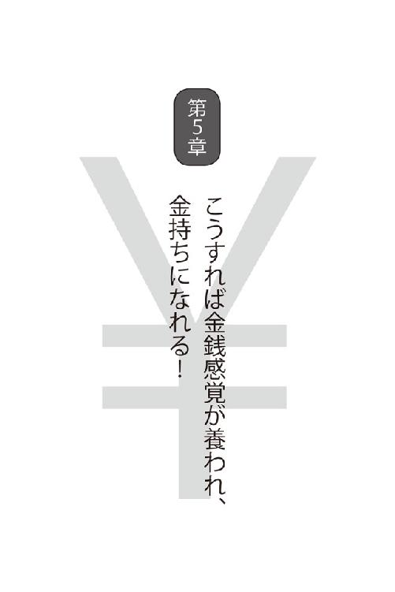
１ 小さなお金を大事にすると、お金の方から寄ってくる、それに気づいたら金持ちだ
山内一豊の妻は、小さなお金を貯める名人
戦国時代の武将の妻として、多くの人に名前を知られている人物に、山内一豊の妻がいる。あるとき、夫の一豊は徳川家康に目通りするチャンスを得たが、そのセレモニーで乗るのにふさわしい名馬がない。頭をかかえている夫の前へ、ヘソクリで貯めた大金をぽんと投げ出し、名馬を買うように勧めたのだ。
まさに日本的な良妻賢母のお手本といってよいだろう。夫の一豊はこの名馬によって家康から認められ、立身出世の足がかりをつかんだのだ。小さなお金を大事にすると、大きなお金が寄ってくるという典型的なエピソードといってよい。
『宵越しの金は持たない』とか、『小金を貯めたって仕方ない』などと馬鹿にする人がいるが、これは大きな心得違いというものだ。小さな金を貯めれない人間に、大きな金を貯めることなどできるはずがないからだ。どんな小さなお金でも、使わないで手本に残すには、意志の力、自制心が必要とされる。天下の家康はそんな堅実な人間性や、用意周到さを評価したのであり、『お金』だって、そんな人物のもとへは安心して集まってくるものなのだ。
生き金は真心のあるなしで決まる
ところで「あの人は金の使い方が上手だ」とか「金の使い方を知っている」と評価される場合がある。人間は金を儲けて、金を使うために生きているのだから、金使いの善し悪しが、人物評価につながるのはもっともである。どんなに札ビラを切っても、金銭感覚の高い人物として評価されないならば寂しい限りだ。
では、生きた金を使うとは、どういうことなのか。それはお金を使う行為の中に、真心の裏づけがあるかどうかで決ってくる。誠実で、謙虚に相手を思いやるこころがあれば、使った金は生きてくる。その行為は感謝され、２倍にも３倍にもなって返ってくる。たとえ一輪の花、１枚の葉書きでも、こころを通い合わせる心配りがあれば、生きた金の使い方になるのだ。
２ 約束・時間を大事にする人は金の方から集まってくる
一日の「ムリ・ムダ・ムラ」を省く
「時間とは消費するものなり、かくしてその罪は我らにあり」
これはオックスフォードのオール・ソウルズ・カレッジの日時計に刻まれた文字である。まさに『光陰矢の如く、学成り難し』は、洋の東西を問わない厳粛な事実といえるが、時間を大切にできる人は、有能な人物といってよい。
トヨタ自動車では、時間管理に「ムリ・ムダ・ムラ」を省くというカンバン方式を創業以来実践して有名になっている。この発想は企業のみならず個人に当てはめても有効だ。長い人生、一日、一日の時間の使い方に「ムリ・ムダ・ムラ」はないかをチェックし、自己の向上に役立つ時間に当てたなら、その成果ははかり知れない。
ニュートンは「年代記」を15回も書き直し、歴史家のギボンは「自叙伝」を４回も書き改めたという。これも時間を無駄にせず、コツコツと努力を積み上げてこそ可能になったものだ。まさに人生を成功へ導く秘策は、有効な時間の足し算といってよいだろう。
時間にルーズなことは、大金を失うこと
ところが時間にルーズで、約束の時間を守らない人がいるものだ。こんな人の場合、お金に足があり、約束の場所で待っているとしたならどうするのだろう。相手が現金なら、きちんと約束の時間を守るというのか。
これは大いに心得違いというものだ。なぜなら、待ち人はどんな大金を運んできたかも知れず、また良好な人間関係こそ金を生みだすチャンスだからだ。
何度もいうように、人生の成功者とは時間を上手に使う人たちのことだ。そんな成功者の貴重な時間を無駄に消費させたならば、その罪は大きい。約束の時間に遅れるなど、あってはいけない、言語道断な行いと肝に銘ずるべきであろう。
一見、忙しそうに振舞い、遅れたいい訳に使う人がいるが、それは本当の時間の大切さに気づいていない無神経な人だ。いつまでも無神経でいるなら、お金はその人を離れ、飛び去っていくに違いない。
３ 公私のけじめをつけられないような人は金も信頼も得られない
金の動きはガラス張りにしよう
公私を混同する。これは小さなことでは、会社の電話などを私用に使ったり、事務用品をもち出したり、よくあることだ。立場が上になれば、高級官僚や政治家が超豪華な接待を受けたり、オーナー社長が従業員に私用を命じたりなど、枚挙にいとまがない。
経営の神様といわれた故松下幸之助氏がまだ従業員10人ぐらいの個人商店を経営していたころの話だ。松下氏はその日の決算を毎日従業員に発表したという。「今日はこれだけ売れたぞ。それでこれだけ利益があがったぞ」と発表したのだ。株式会社であれば決算の公表は義務づけられているが、個人経営の間は別に公表しなくてもかまわない。
しかし松下氏は、公私混同が起きないように、金の動きをガラス張りにしてケジメをつけた。一見、簡単なようでなかなかできないことなのだ。
自己中心主義は金に見放される
さて、公私のケジメがつかないという人は得てして自己中心的で、我が儘な人が多い。誰でもやっている、みんなで渡れば恐くないとばかりに、ドサクサにまぎれて私利私欲に走るのだ。そうかと思うと、虎の威をかりるキツネよろしく、何らかの権威をかさにきて弱い者をイビッたりする。
どこか曖昧で、狡猾なのだ。清廉潔白とまでいかなくても、自分と他人の境界線をわきまえるぐらいは必要だろう。ケジメが必要なのは、公私混同ばかりではない。自分の利益だけを考えて、いつも他人を利用しようとする商取り引きも、注意を要するだろう。人を利用しようとすれば、利用しようとする気持ちが先に立って、全体を冷静沈着に見る余裕がなくなってしまう。その結果、判断を誤り、自分が不利になる。つまりお金にも運にも見放されるということだ。
人間は公私、自他の枠組みの中で、互いに価値を認めて利用し合っていく。見方を考えれば助け合うということだ。公私混同は、自分だけがよい目を見たいという助平根性が強すぎることから生れてくる。
４ 人に金儲けのチャンスを与えるようになれば、自分も金持ちになれる
「もらうより与えよ」を心がけよう
金儲けに熱中するあまり、自分の利益ばかり考える人がいる。他人を押しのけ、人を犠牲にしなくては、自分の利益が得られないという発想だ。しかし、これは何の根拠もない馬鹿げた考えだと知る必要があるだろう。なぜならば、他人への奉仕がなければ、お金など一銭も入ってくる道理はないからだ。たとえ、自己中心主義で金儲けをしても長続きするものではない。人に金儲けのチャンスを与える人こそ、自分の財産も殖え繁栄が訪れることを知るべきなのだ。
大切なのは、奪い取ることではなく、仕事を創ることである。創造こそ、他者を傷つけず、利益をともに分けあう手段なのだ。「もらうより与えよ」の精神が、商売を永続的に成功に導く王道なのは、江戸時代から日本の商人道が教えてくれている。
周囲の人たちに、尊敬や思いやりのこころで接するのに、どれだけの費用がかかるというのか。頭を下げるのはタダなのだ。ほんのちょっとの心がけで、周囲の人々に認められかけがえのない存在になる。何ごとも、もらうより与えよのサービス精神が、商売を成功させるポイントなのだ。
自発的にプラスアルファの努力をする
「もらえるより与えよ」のサービス精神が大切なのは理解できた。次はサービスの中身について考えてみよう。ただ頭を下げるだけでは有難迷惑の場合だってあるのだから。
日雇い労働者から身を起し、アメリカを代表する鉄鑛王となったアンドリュー・カーネギーは、プラスアルファの努力の大切さを説いている。プラスアルファとは、給料に相当する努力を一つの基準とし、給料以上の努力を自発的にどれぐらいやっているかが、成功・不成功の分かれ目になるという考えだ。もちろん、この努力は誰かに強制されるものではない。ときには、奉仕した相手から、それに相当する代償をもらえない場合もあるだろう。にもかかわらず、プラスアルファの努力は有効で、この習慣が身につけば、自発的に他者に金儲けのチャンスを与えるようになり、自分も稼ぐことができるのだ。
５ 共働きでお金を貯めたいなら、夫の収入だけで生活する設計をたてよう
先憂後楽こそ、成功への一里塚
戦後間もない頃は、「一人で生活できなくても、二人ならできる」と、結婚に踏み切った夫婦は多かったものだ。住居費や食費、交際費など二人で一緒にすれば半分で済むという計算だ。もちろん、そんな考えで結婚した夫婦は無駄使いなど一切せずに、節約に励んだのはいうまでもない。ところが夫婦共稼ぎが一般化した今日では、妻の収入が殖えるのはよいのだが、その分、消費も多くなり、かえって家計が苦しくなってしまうケースも少なくない。どうしてこんな現象が起きるのかといえば、ひとえに生活設計の甘さやその場がよければすべてよしとする快楽を優先させる考えに起因している。
東京ドームのある『後楽園』は誰にも馴染みのある場所だが、後楽園の名称の起源となった『先憂後楽』という言葉を知っている若者は少ないのではないか。その意味は、気がかりなこと、面倒なことは先にすませ、楽しみは後に残しておくということだ。イソップ物語の「アリとキリギリス」ではないが、キリギリスのように、毎日快楽重視のその日暮らしを続けていれば、そのツケは必ずまわってくると覚悟しておいたほうがよいだろう。
一人の物を二人で使う
さて、夫婦共稼ぎの話だが、二人で稼いでも、生活設計は夫の収入だけでまかなうことを基本とすべきだ。前述した戦後間もない夫婦の発想は、一人の物を二人で分け合うという考えだ。当然、夫の収入で家計をまかない、節約した分は貯金にまわされた。まして、妻が働き収入を得たならば、そっくりそのまま貯金されたのはいうまでもない。今の夫婦の場合はどうだろう。妻の収入のほとんどは、消費生活の一部として消えているのではなかろうか。せっかく妻が働いても、何ら身につかないぜいたく、虚栄、快楽のために費やされるとすれば百害あって一利なしだ。これでは生活の基盤は、いつまでたっても軟弱なままだ。片方に万一のことが起ったらどうするのか。夫の収入だけで生活を支える意味がここにあるのだ。
６ お金を貯めるにも、「タダより高いものはない」と心得よ
タダはゼロ。ゼロのことをラブという
タダという概念を少し理屈っぽく分析してみよう。タダというのは数字でいうゼロのことでありゼロは無限大に近い概念だ。つまり、有限な存在である人間には、所詮、身丈の合わない抽象的概念がタダということになるといってよいだろう。
どんなに多い数字でもゼロを掛けるとゼロになってしまうのだから恐ろしい。たとえば「安物の買いのゼニ失い」も、それに近いお話だ。価格が相場より安いからと購入したところ、商品価値がゼロでは大損ではないか。カゴ抜け詐欺に引っかかるのも、この世の中、破格に安い商品取り引きなどあり得ないことを肝に銘じてないから起きるのだ。
つまり「タダ」という価格設定の背後には、何が隠された下心のようなものが存在するといえるだろう。簡単にいえば、買収であり、目くらませだ。タダの商品を大量に配り、集まってきたお客さんに、高額な商品を売りつけるのも「タダより高いものはない」の典型的なパターン。
ここで注意したいのは、タダのものに触手を動かす買い手の側にも、依頼心というか、ガードの甘さがあるということだ。
タダという文言には、要注意
では、ガードの甘さとは何なのか。それは『タダ』であることの背景を考え、分析しないいい加減さだ。ものごとの道理として、タダというものが、この世には存在しにくいのは前述したとおりだ。仮にあるとすれば、神や仏の御心に近い『愛』によって成りたつ行為といってよい。しかし、真の愛こそ、この世に存在し難いものではなかったか。決してないとはいえないが、商売に愛をもち込んでは、話をややこしくするだけだろう。
一般論として、タダという唄い文句には、用心するに越したことはない。民放ＴＶがタダなのも、ボランティア活動が無償奉仕なのも、街頭で配られるティッシュがタダなのも、それぞれの理由があってのことなのだ。
タダの仕組みを分析するのも、ゼニ失いをしないエクササイズになるだろう。
７ 楽観的な人には、人とお金が集まってくる。お金も円満を好むのだ
楽観的に考えれば、資産は殖える
有名なたとえ話にこんなのがある。
アフリカの砂漠へ靴を売り込みに出かけた二人のセールスマンが、まったく異なったテレックスを本社へ送ってきたというのだ。その一つは「スグ クツヲ オクレ」というもの。もう一つは「アフリカノヒトハ、クツヲハカナイ」という文面だった。
前者は楽観的な考え方で、裸足で歩くのがアフリカの一般的な風習なら、その風習を変えれば靴は飛ぶように売れると判断したのだ。一方は、悲観的な考えで、裸足の習慣があるのなら、靴は不要と考えた。事業を発展させ、金持ちになるのは、もちろん前者なのはいうまでもない。
アメリカで「成功哲学」という自己啓発のメソッドを確立した人に、ナポレオン・ヒルという博士がいる。彼は、人間のこころにはコインの裏表のように、積極的心構えと消極的心構えがあると説いている。消極的心構えの人は、いつも疑念、恐怖、こころの貧困、などと一緒に行動し、積極的心構えの人は、富、健康、愛情、創造的ビジョンなどの前向きなことを考えていると定義づけているのだ。参考にすべき指摘ではないか。
貧しいのは、こころの状態に起因する
あらゆる豊かさ、富の増大は一つの心構えから始まるのは本当のことだ。女優エリザベス・テーラーのもとの夫で、一文なしと大富豪との間も何度往復した映画プロデューサーの故マイク・トッドはこう語っている。「破産の一時的な状態だが、貧困はこころの状態である」と。どんなに巨額な損失をこうむっても、それを挽回するガッツさえあればノープロブレム。もっとも恐ろしいのは、こころが宿し、貧困をあまんじて受け入れてしまうことなのだ。
同じ内容のことを、別のいい方で表現しておこう。多くの人は、年収１億円の実業家を見て、自分も年収が１億あれば、あんな感じに振舞えるというだろう。しかし、実は逆なのだ。そんな風に振舞ったから年収１億が稼げるようになったのも真実なのだ。
８ 朝早く起きようと心がけるだけで、お金の貯まり方が違う
アメリカのビジネスマンも早起きだ
日本では昔から『早起きは三文の得』といわれ、勤勉は生活には欠かせない習慣とされていた。『朝は朝星、夜は夜星』、お天とうさまと一緒に行動していれば、時間が最も有効に使えるというわけだ。だが、この早起きをしようと励んでいるのは、日本人だけに限らない。アメリカのビジネスマンたちも、せっせと早起きに励んでいるからだ。中には朝５時に出社する社員もいて、その日のほとんどのデスク・ワークは朝飲前にこなしてしまう。マイクロソフトを育てあげたビル・ゲイツも早起きでは有名な人物だ。
早起きのよい点は、早朝は人間の脳がよく働き、創造的才能が発揮しやすいこと。事務的な仕事や込み入った神経を使う仕事に適していることだろう。朝から午前中にかけて、いかに能率よく仕事をこなすかが、一日の仕事の勝敗を決するといっても過言ではない。ニューヨークの猛烈ビジネスマンは、午前中に事務的仕事をこなすのは勿論のこと、朝食をとりながらの商談や会議を盛んに行っている。
早起きで、自己管理に訓練を
子供のころ事故で手に怪我をし、その不幸をバネにして世界的に名を轟かせた野口英世博士はこういっている。「誰よりも、３倍、４倍、５倍、勉強する者、それが天才だ」。野口英世が無類の早起きであったのは、いうまでもない。とはいえ、早起きがつらいのも事実である。暖かいふとんにくるまって、出社ぎりぎりまで、うつらうつらしているのは至上の快感だ。その快楽に訣別し、ガバッとふとんをはねのけるのはかなりの勇気と決断が必要だ。だからこそ、『早起きは三文の得』になるのだが。
つまり早起きをして損なことは一つもない。こころにも身体にもよいし、確実に時間を増やせることがさらによい。それだけで自己管理が上手な人間になれる。朝を制する者は人生を制すると考え、早起きの習慣を身につけようではないか。
９ 自分とは正反対の友人と付き合うことで金運に恵まれることもよくある
先入観で、交流範囲を狭めるな
世の中には、反りが合わないというタイプはいるものだ。感情的な嫌悪感が先に立ち、つい接触することを避けてしまいたくなる。しかし、この癖をそのまま放っておけば、イヤな人物とはいつまでたっても交際できずに終わってしまうだろう。
昔、楠木正成の家臣に泣き男といって、非常に泣くのが上手な者がいた。泣き男など戦国時代にふさわしくないので、誰もが彼を嫌っていた。ある戦の折、正成は自分が討死したように見せかけるため、その男に僧の姿をさせ、いかにも悲嘆にくれて菩提を弔っているふりをさせた。すると、その泣き方があまりに真に迫っていたため、敵方はすっかり正成は戦死したものと思い込んだ。そのスキに正成は不意討ちをかけ、大勝利を得たのである。適材適所に人を使う、お手本のようなエピソードといってよいだろう。人間は一人ひとりみな違っている。虫の好かない人がいるのは当たり前の話である。だからといって、気嫌いすることに終始すれば正成のような人間通にはなれないのである。
懐が深くなれば、お金が寄ってくる
だから思い切ってこちらからアプローチをすることだ。そうすれば相手もそれなりの反応を示してくれるものなのだ。最初はぎこちない部分もあるだろう。それを意に介さず、回数を重ねていくと、なんとなく感情の交流が生まれ、互いに譲れるところや、性格の違いが理解できるようになってくる。
少なくとも、自らアプローチする前と後とでは、人間的な幅に格段の差ができてくるだろう。自分を客観的に見る視点も生まれ、こころにゆとりができてくるに違いない。
人との交流は、先入観をもたず、あるがままに見るところから始めなくてはならない。そして、できるだけ多くの人と交流し、他者の知恵を借りることを知ることだ。そうなれば、お金は懐の深い人間が好きだから自然に集まってくるに違いない。
10 金銭に執着する人間を軽蔑する人に、お金は残らないと、心得よ
金が恐いから、金を手放すのだ
かつて江戸時代の色男は、「宵越しの金はもたねえ」などとイキがって、仲間内の飲み会や吉原での女遊びにうつつを抜かした。あげくの果ては、落語にもよく登場する身代をつぶし落剥の身をなげく若旦那になるというのが一つのパターンであった。
つまり、せっせと働き、コツコツと小金を貯める生き方を、暗に軽蔑していたことになるが、こんな人物にお金が貯まるわけがない。いつもサイフの中は空っぽで、ピーピーいっていたに違いない。
それでも、こんな台詞が流行した背景には、武士階級にかわって商人や職人などの庶民階級が力をもってきたことであるだろう。元禄時代以降、江戸の町には消費ブームがわき起こり宵越しの金をもたなくても何とか暮らしていけるようになったのだ。
戦後間もなく起こったバブル時代のようなものだが、浮世の風はままならぬもの。逆風が吹くと、首をちぢめて『引かれものの小唄』を口ずさむのも、かつて威勢のよい啖呵を切っていた連中と相場は決まっている。
コツコツと金を貯め、金に親しめ
ところで、金銭を軽蔑すれば、お金が貯らないのは本当のことだ。お金に執着するという表現は適切ではないが、お金を愛する人のもとにお金が寄ってくるのは真実だ。
もともと金銭を軽蔑する人は、お金が恐いため、軽蔑というポーズをとる場合が少なくない。好きな女性に対し、わざとそっ気ない態度をとるようなものだ。好きだという本心を見透かされたくないために。
たとえば、もちなれない大金が入ったような場合、なんとなく落ち着かない気分に襲われた経験はないだろうか。お金のことが気になって仕方がないのだ。極端な場合、いっそあんなものないほうがさっぱりすると、早々と使ってしまうということになる。
お金には魔性があるのだ。よい使い方をすれば、幸福をもたらし、悪く使えば災いを招く。したがって、コツコツと金を貯め、金に慣れることも大切な修業なのである。
11 リスクをちゃんと計算しておけば、商売で大失敗することはない
当てとフンドシは、向こうからはずれる
病原菌に犯された牛や鶏、鯉などが社会的大問題になったが、牛丼のチェーン店経営者はいうまでもなく、それぞれの業界関係者は青天の霹靂の災難に頭をかかえていることは想像にあまりある。まさに死活問題。世の中にはこんな理不尽なことも発生するのだ。平穏無事なとき、いかに危機管理の対策をたてておかねばならないか、もって他山の石とすべきだろう。
この病原菌問題は、国家レベルの危機管理の問題で、少々テーマが大き過ぎる。個人レベルへ話を移せば、「当てとフンドシは向こうからはずれる」という諺がある。当てにしていた仕事が受注できない、入金の予定が狂った、期待していたほど商品が売れない、といった状態だ。こんな事態はよく起こることだが、まず注意すべきは、計画の甘さだろう。そもそも読みが正確でなく、希望的な観測を現実のものと判断したため誤りが起きたのだ。そこで重要なのは、そうした事態が起きたとき、すぐに代替策がとれるかどうかだ。つまりリスク（危機）管理ができているかということなのである。
リスク管理とは、自分が背負える
さて、どんな商売でも、仕事にはリスクはつきものだ。リスクのない仕事など存在しないといってよい。逆にいえば『絶対儲かる』という仕事や話はないと考えるべきで、むしろ儲けの大きさは、負担するリスクの大きさに正比例するといってよいだろう。商売はリスク管理がしっかりできていれば、大きな失敗はしないという基本がここにあるのだ。リスクとは、いい換えれば、どこまでのマイナスを自己責任で背負えるかということだ。最悪な事態が発生しても、それをフォローできればノープロブレム。そのためには普段から自分の実力を正確に見極めることが必要になる。自分の実力をあまりに超える仕事は、リスクが大き過ぎると判断するのが正解だ。
12 長所を伸ばせば道は開ける。「好きこそものの上手なれ」が金持ちへの道
得意分野でエキスパートになる
「好きこそものの上手なれ」人間は好きなことは一生懸命やるので、上達が早いということだが、これは仕事にも当てはまるといってよい。
どんな小さな分野でも、その分野のエキスパートになったなら、金持ちになれる可能性は高くなる。そこで、まず考えなければならないのは、自分の得意分野、得意技を見つけることだ。
この世には30万以上の職業があるとアメリカの経済学者は指摘している。つまり、すべての仕事が自分に合わないということはないのである。ないと思っているのは、大半の人が真剣に自分の得意分野を追求せず、その可能性に目をつぶっているだけなのだ。そして自分に適した仕事がないと嘆き、欲求不満の面白くない日々を送っているのだ。
戦いの前半は、何が自分に合っているかを突きとめることだ。あわてることはない。同じ指紋をもった人間がいないのと同じように誰の遺伝子の中にも、必ず得意技の一つや二つは組み込まれているのだから。
現在の仕事を続けながら、視野を広げよう
さて、得意技を探しながら、考えを広げていくのも有効な方法だ。たとえば、ガソリンスタンドで働いている若者を例にとろう。若者は結婚をし、家を建て、子供を育てたいと考えているので、もっと給料のよい職場に移ろうと思っている。
しかし、こんな場合、せっかちに職を変えることよりも、今の職場を中心に視野をぐんと拡大してみてはどうだろう。ガソリンスタンドの単純な作業だけを考えるのではなく、石油産業全体のことを考えるのだ。自分が属しているのは、世界で最も巨大で利益の多い業態なのだ。そうすると自分が属しているのはガソリンスタンドの店員ではなく、巨大産業の一員としての自覚が芽生えてくる。暫くは職場を離れず勉強してみると、さらに多くのチャンスと報酬を手に入れる手段が見えてくるに違いない。
自分が本当にやりたいことがわかったら、そこへ至る道はいろいろなものなのだ。
13 金を生み出したいなら、人脈を大切に育てよう、協力してくれる他人の力は大きい！
悪ガキ時代の交友は、人脈の宝庫
たとえば、ある人物の人となりを見る場合、その人の交友関係を見ればよいという考え方がある。類は友を呼ぶのたとえどおり、優れた人材のまわりには、優秀な仲間が集まっていることが多いからだ。別な言葉でいえば、これを人脈という。
世の中には有名校を卒業して、知識が豊富で、頭が切れるという人はたくさんいるものだ。しかし、そういう優秀な人材が金持ちになり、恵まれた生活を送っているかというと、必ずしもそうではない。
その理由は、多くの場合、人柄というか、人間関係をうまく作るコミュニケーション力が不足していることに起因する。
つまり人脈を育てることが下手なのだ。このことを逆から見れば、人間力があり、人脈づくりが上手ならば、人生を成功へ導き、金儲けもできるということだ。
人は成長の過程で、学校、地域社会、仕事、結婚、趣味のサークルなど、人間関係をつくるチャンスはいくらでもある。特に小・中学校などの悪ガキ時代にできた交友関係はあなどり難い。当時の仲間が立身出世し、大政治家、高級官僚、実業家などに変身することもあるからだ。こういった友達の輪を広げ、信義をつくした交友を深めれば、金は向こうからやってくるといってよいだろう。
君子の交わりは水のごとし
ところで、プロゴルファーのアーノルドパーマーをマネージメントする会社の代表者にマーク・マコーミックという人脈づくりの天才がいる。その彼が人のこころを読み、よい人間関係を築くテクニックを説いているので列挙してみよう。
①積極的に人の話を聞け、②積極的に観察せよ、③喋りすぎるな、④第一印象をもう一度吟味せよ、⑤学んだことを口にする前に考えよ、⑥思慮深くなれ、⑦たまにはつき放すことも大切だ、いかにもビジネス最前線で活躍する人物の戦略的なテクニックとして、参考にすべきことは多い。
14 真の金持ちは、ふだんの情報と知恵を制することに努力するものだ
よほどの極秘情報以外は、刊行物から得られる
実業家、ビジネスマン、商店主など、有能な人物は、ほとんど例外なく本をよく読んでいる。めまぐるしく変わる社会は、読書による情報収集は欠かせないといってよい。
経済通で作家の堺屋太一氏も、世の中の８割ぐらいの情報は、書物や発表された資料を読めばわかると語っている。「本を読むなんて面倒なことはご免だ」「本から得た知識など実社会では役に立つものか」と口をとがらせる人もいるだろうが、それは早計というものだ。何故なら、読書を通じて何かを知り、考えるというシステムを身につけることは、空気や水のように必要だからだ。どんなによい商品でも、時代の変化とともに、どこかに改良の余地が現れてくる。それを見つけるノウ・ハウ、ネタが「読書」という行為には、いっぱい詰まっているのだから。
読書などしなくても、必要な情報は同業者や仲間との対話から得られるし、自分で考えれば遅れをとらないと自信満々の人もいるだろう。しかし、そんな人たちこそ、本を読み、資料に目を通すことを習慣づければ、もっともっと発展・成長できることを知ることだ。
図書館の片隅は、アイデアの宝庫
読書のいいところは、習慣さえつければ、いつでもどこでも手軽にできることだ。まとまった時間がとれなくても、トイレや電車の中、喫茶店や寝る前の一刻など、コマ切れの時間ならいくらも捻出できるだろう。要はやる気の問題だ。時間がコマ切れの場合は、読むべき対象も短い部分にコマ切れにし、付箋をつけたり、コピーを取っておいたりすると、頭脳への吸収が早くなる。ときには散歩がてらに、近隣の図書館に出かけるのもよいだろう。図書館にはあらゆる分野の知識、情報が系統的に並べられており、係員に聞けば、読みたい本を見つけることができる。世間一般の平均的なアイデアはほとんど図書館の片隅に眠っている。それを上手に加工すれば、金儲けにつながるのだ。
15 成功のための羅針盤として確固とした「座右の銘」を掲げよう
偉人伝から「座右の銘」をピックアップしよう
『読書のすすめ』と同じ主旨だが、人生の指針として「座右の銘」をもつことは、必要な心得だ。たとえば、徳川家康は「人生は重たき荷物を背負い、遠き道を往くが如し」と言った。じっくりと腰を据え、物ごとに対処する家康らしい心構えがうかがえて頼もしい。徳川家康はことの成り行きを見極め、いつどこで勝負を賭けるかの状況判断の天才だった。その家康でさえ、こうした「座右の銘」をもち、自分をいましめていたのだ。
では、「座右の銘」を見つけるには、どうすればよいのだろう。その一つの方法として、優れた人物の伝記を読むのは効果がある。世に偉人といわれる人々は、必ず堪え難い困難に見舞われながら、それを克服し、道を切り開いている。そんな苦労を想像し、感動的エピソードに触れるだけでも、勇気が湧いてくるものだ。そんな中から、最もこころに響いた一節を「座右の銘」にすればよいのである。
日本の財閥には、家訓がある
「座右の銘」ほど大げさなものでなく、日ごろ目についたり、何かのヒントになりそうな文章を日記やノートに書きとめておくのも役に立つ。野球が好きなら野球選手から、音楽が好きならお気に入りのミュージシャンから、インパクトのある言葉を集めるのも効果があるだろう。そうした言葉は、自分が悩んだり、困ったとき、精神を鍛え、練りあげ、鼓舞してくれるものだ。道に迷い、進むべき方向がわからなくなったとき、一条の光を放射してくれるに違いない。
三井、三菱、住友のような大財閥にも、江戸時代から続く家訓がある。創業以来今日まで、営々とその家訓を守ってきているところにスゴサがある。新興企業が決してまねのできない奥深さだ。時代を越え、したたかに生きぬく本当の金持ちたちには「座右の銘」のような精神的バックボーンがあるのを知っておくのも無駄ではないだろう。
16 金持ちになったらおおらかな気分で、セコセコしないことが肝心だ
金持ち喧嘩せずの心意気で接する
昔からよくいわれる諺に、「金持ち喧嘩せず」というのがある。金持ちたるもの、いつでもゆったりと構え、小さなことにいちいち目くじらを立てない様子を指している。余裕というか、こころが安定しているというか。
一方、金のない奴は何となくセコセコし、態度に落ち着きがない。どうしてそうなるのかといえば、自分に自信がもてず、何かにおびえているためそうなるのだ。たとえば、セコついた人物は、折角チャンスがめぐって来ても、自信がないために決断ができず、チャンスをとり逃してしまう。あげくの果てに、やっと飛びついた話がとんでもない喰わせもので、大損したりして、ますますセコついた性格になってしまうのだ。
金持ちはどうか。どんなおいしい話でも、まずはゆったりと構え、その話の真実性を見極めるのだ。プログラムに整合性があるか、プロセスに抜け穴はないか慎重に検討していく。そして納得できたら、計画通り進まなかったときのリスクを考える。リスクのない話など、この世には存在しない。リスクよりチャンスの方が大きいと判断したら、金持ちは自己責任で実行に移すのだ。セコついた人物と金持ちの違いは明らかだろう。
他人のせいにせず、失敗からも学ぶ
何ごとも、こうした平常心で望めば、成功の確立は高くなる。万一、失敗した場合も、自分が犯した計算違い、判断ミスなど、その失敗から多くのことを学ぶのだ。他人のせいなどに決してしない。セコセコとうまい話にだけありつこうとする人物は、最後まで失敗から何かを学ぶことはできないのだ。
金持ちになりたかったら、ものごとの道理、自然の流れを見極めることだ。相手がやけに急ぐ場合など、それだけで要注意だ。急いではことを仕損じると、ゆったり仕事を進めながら、相互の利益配分を案配する。最後は、肩をたたき、喜び合えるのが金持ちの仕事のやり方だ。お金も、こうした悠揚迫まらざる態度が好きなのはいうまでもない。
17 同じランクの人間と付き合うのではなく、ワンランク上の人と付き合えば金も貯まる
いつも上を向いて歩けば金も貯まる
人間関係というものは、大阪弁でいう「ちょぼちょぼ」という間が、一番長続きするものである。「ちょぼちょぼ」とは、似たりよったりのこと。つまり、ランクが同じということだ。
頭の優秀、家庭の条件、妻が大学出と高校出とか、社会的にも経済的にもあまり両者がかけはなれていると、互いに遠ざかっていく。そして、それがもとへもどり、互いの疎遠を許せるのは、現役を引退する60代になってからである。
ともかく「類は友を呼ぶ」のたとえのように、同じランクの者同士が親密な付き合いになる。だが、同じランクの友人と付き合っているうちは、金持ちにはなれない。
相撲の世界でもこんなことがいわれる。
「番付が落ちるとその位置の相撲しかとれない」
金持ち同士は近親憎悪というか、同じ金持ち同士で反発し合うことがあるが、貧乏人同士は互いに傷をなめ合い、それで満足してしまったりする。金持ちになった昔の仲間の悪口をいうことで互いに慰め合うだけ。これでは金持ちになれるわけがない。貧乏暮らしに安住するわけだ。
金持ちになりたければ、ワンランク上の人と付き合うことが前提になる。
そうはいっても、自分が上へ伸びようとしても周囲の力を借りることができず、効率的でない。では、どうすればいいか。
自分より少し上の、勢いのある人との付き合いが望ましい。あまりかけ離れると挫折感を伴うから、少し上なら「うん、ヤツなら追いつけそうだ」と意欲が湧いてくる。学生時代の勉強やスポーツと同じで、下ばかり見ていると伸びないし、記録も伸びない。
金持ちになるのも同じで、貯めているライバルを見つけることが肝心。自分が１００万円を貯めていたら２００万円貯めている相手をターゲットにする。もし、相手を追い越したら、さらに上のランクを狙って競争する。これは、金持ちになるための一つの布石である。この繰り返しが、やがて大金持ちになる重要なことである。
◆ お金の格言集 その２
＊ 金は芸減らし 金にこころがひかれると、芸がダメになる
＊ 金は湧き物 金は不意に手に入ることもあるから、なくてもくよくよしない
＊ 金持ち喧嘩せず 喧嘩は得するより損することが多いので、金持ちは他人と争わない
＊ 金持ちと灰吹きはたまるほどきたない 金持ちは財産が殖えるほどケチになる
＊ 金持ちと貧乏者は黙って居られぬ 金はあってもなくても苦労するので、金のことを口にしない者はいない
＊ 金を持つときゃ貧乏が卑し 金がないときは、貧乏暮らしも当然のように思うが、金をもつと貧乏が卑しく思える
お金が貯まる賢い習慣術
発行日 2012年1月10日電子版発行
著 者 金持ち開発研究会
本作品の全部あるいは一部を無断で複製・転載・配信・送信したり、ホームページ上に転載することを禁止します。
本作品の内容を無断で改変、改ざん等を行うことも禁止します。
また、有償・無償にかかわらず本作品を第三者に譲渡することはできません。
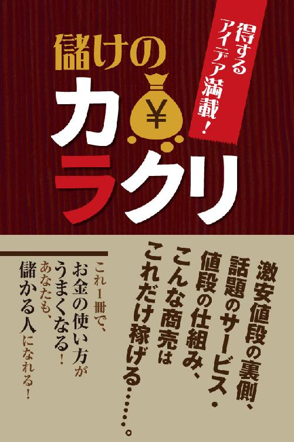
はじめに
「経済の話をしましょうか」と言うと、「え？ 難しそう」とか、「あまり興味ないな」と敬遠する人も、「どうして１００円ショップは、あんなに安く売れるのか、興味ない？」とか、「パックツアーの安さの秘密、知りたくない？」なんて聞けば、きっと「教えて！」と目を輝かせると思う。この本には、難しい経済・経営のことが書いてあるわけではない。世の中で『なぜ？』と首をかしげたくなる、儲けや値段のヒミツを、ちょっとのぞいてみた本なのだ。誰もが興味を持ちそうな疑問とその答えを、読みやすく、分かりやすく、１見開きに１トピックの単位で、簡潔にまとめてみた。どこから読み始めても、抵抗なく読めるはず。読み終わったときには、儲けのヒミツについて、あなたはもう、かなりの事情通。そしてそれは、実は、社会全体の裏の事情とも通じていることになるのだ。《経済》とは、お金中心のこの世の中で、どのように賢く生きていくかを考える学問だといえる。そのカラクリが分かってくれば、お金の使い方もきっと上手になるはずだ。
平成不況の荒波に揉まれ、社会全体は、どうもあまり元気がない。しかし、そんな中で、コストダウンの工夫や「損して得取れ」式の発想など、誰もがみな、不況のトンネルを抜けようと努力している。わたしたち消費者も、いろいろなしくみや得するアイデアを学び、パワフルに生き抜いていこう。
目 次
１ 養鶏農家は激減 それでも卵の総生産量は２・５倍増
２ 大量集客で特売品以外も買ってもらおうというシステム
３ スーパー商法を参考に薬屋さんも安売り競争
４ 幅広い人気の回転寿司儲けはお客の回転率で決まる
５ モー烈値下げは大歓迎牛丼２００円台 低価格競争
６ バブルがはじけてファミレスはデフレ時代の二分化へ
７ 超激安スーツ戦争現在の目玉は２プライスシステム
８ 安ければ流行遅れも何のその９割引もあるアウトレット商品
９ 眼鏡にかなうか安売りメガネおしゃれも考えた品揃えに
10 海外激安パックツアー信じられない安値の秘密
11 お土産購入で協力しよう？ 成り立つ格安バスツアー
12 商品を安く仕入れるからくり家電量販店からの仕入れ
13 めざましい普及率の伸びパソコンが値下がりするのはなぜ？
14 電話機を売るより通話料奨励金で販売代理店の尻叩き
15 癒し、それともカリスマ美容師？ あなたは何を求めますか？
16 原材料が違ってもワンプライスなら買いやすい
17 飲んべえのおとうさんの味方割り戻し分で激安値段を実現
18 １００円ショップは大にぎわいその大躍進の秘密は？
１ 安いと思ったら輸入盤どうして高い？ 国内盤ＣＤ
２ 紙代・印刷代に原稿料本の値段はどうやって決まる？
３ エビの値段は意外にも中国・黄河の雨量次第
４ 果物の王様マスクメロン１玉１万円という値段はどこから？
５ デリケートなマツタケの人工栽培ができるのはいつの日？
６ 高い山の上で買うからか観光地のジュースは高い
７ 原価の５、６倍の値が付く定価花に囲まれ優雅に大儲け？
８ 原油価格は同じはずなのにガソリン地域格差はなぜ生じる？
９ 世界一物価の高い東京にも安さで自慢できるものがある
10 少子化の影響はこんなところにもますます高騰する私大受験料
11 コンタクトレンズが目が飛び出るほど高いのはなぜ？
12 「募金、お願いしまーす！」赤い羽根の原価はいくら？
13 利用者の意識も変化女性グループ客にかかるホテル業界
14 10年選手がよく当たるまだまだ買い足りないのかな？
15 エンゲージリングの相場は給料の３カ月分って、誰が決めた？
16 どうしてこんなに高いの？ 町の薬局で買う風邪薬
17 ホテル代込みの値段でも正規の航空運賃より安いパックツアー
18 いろいろあるぞ航空券海外旅行、どのチケットがお得？
19 誰もがやがてはお世話になるすぐ燃やされてしまう棺桶の値段
20 死んでいくにも気にかかるお葬式にはいくらかかる？
21 やっぱり必要なのかしら？ バカにならない戒名料
22 世界一の栄誉のあかし金メダルのお値段は？
１ 誰もが思わずハマるカタログショッピングの魅力
２ テレビショッピングなら低価格のうえ、おまけもいっぱい
３ 絶対に元を取るぞという人で満員盛況ケーキ食べ放題
４ 気楽で安けりゃみんな行く居酒屋人気は衰えない
５ ショットバーの値段はショバ代込みでもいい気持ち
６ ハッと気付けばウン十万の出費冷や汗タラタラで痩せられる？
７ 女性会員にかかっているお見合い産業の経営
８ ハンバーガーの分をサイドメニューで収益をあげる
９ アメリカ式「出前」が急成長の理由っていったい？
10 コーヒーチェーン１杯１００円は努力のたまもの
11 脱サラで持ち帰り弁当店オープン「中食」産業、今後の見通し
12 お昼どきならグッとお得ランチメニューはなぜ安い
13 エアコンはダニやカビの温床毎年きれいにクリーニング
14 配達に行きます。集荷もします。時間指定のサービスもあります。
15 時間はお金にかえられないピンチになったらバイク便！
16 「女に生まれてよかった！」レディース割引の意味は？
17 結婚式場の稼ぎ頭は料理利用者の見栄に式場はニンマリ
18 タダだと思った教科書「国の負担により給与」の実態
19 新春恒例の景気づけ２万円で10万円のお買い物
20 電化製品無料保証をしてもメーカーが損をしない理由
21 サービスいろいろ付いても金利手数料があるから大丈夫
１ 鉦太鼓にクラリネットちんどん屋さんは街頭宣伝のプロ
２ 大ヒットなら１００万本ゲームソフト製作はいい商売？
３ １日12時間以上走りっぱなし宅配ドライバーは高給取り？
４ 登山家の定番アルバイト高層ビルの窓拭き
５ 稽古とちゃんこと昼寝の日々お相撲さんはいい商売？
６ お相撲さんの実入りも不況の影響を受けて減る？
７ タレントで稼ぐ落語家も長屋暮らしはお題の中だけ
８ 講演料に呼ぶ講師のセンセイに料金表や相場はあるの？
９ 売れっ子もいれば無名の人もはなやかな世界のギャラいくら？
10 目にやさしく、心を癒す、都会のオアシスレンタル業
11 「ヘーイ、タクシー」と気楽に乗れない不況の時代
12 熟年マダムのお友達ホストたちにもランクはあった
13 まだまだ元気だアダルトビデオ出演料は断然女優の勝ち！
14 脱サラ組が多い業界「何でもやります」の便利屋さん
15 「アメリカンドリーム」はやはり海の向こうだけ
16 脱税で捕まった人の保釈金ってどうやって決まるの？
１ 少々お高いかもしれませんが修正技術料込みとなっております
２ 版権・商標登録・キャラクター儲けの手段はこんなところにも
３ 需要があって供給されたブルセラショップの今
４ 「ひひひ、見ちゃったぞ！」タレコミ料の相場はいくら？
５ 仕掛けられた盗聴器を探せスパイ並みの仕事の料金は？
６ あなたのルーツ、ご先祖様をご予算に合わせて探します
７ 元手いらずの金儲け？ 何とかしてよ名簿ビジネス
８ 由緒ある商売、質屋さんの偽物を見分ける本物の眼
９ 刺青を彫る彫り師さんの料金は？
第１章 激安値段の裏側
１ 養鶏農家は激減
それでも卵の総生産量は２・５倍増
「卵は物価の優等生」といわれるが、それも当然。ここ10年どころか70年代と比べても、その値段はほとんど変わっていない。むしろ安くなっているくらい、というびっくり価格なのは、養鶏が常に進歩し続けてきたからである。工業製品と同じで、工場での大量生産が可能になったから安値を維持できるのかしらと思ってしまう人もいるかもしれないが、実はその通り！ ほとんど工場といってもいいほど大規模な養鶏場で、やっぱり工場のようなコンピューター管理のもとに、大量生産されているのである。ちなみに70年代のはじめに比べ、養鶏農家１戸当たりの卵の生産量は２５０倍になっている。これは、養鶏農家の数は当時の１パーセントにも減っているのに、卵の総生産量は２・５倍に増えていることから算出できる。
では具体的に、養鶏はどのように進歩してきたのだろう。まず、昔は平飼いといって、土の上に放し飼いにされていたが、今はケージ飼いが一般的になった。いわばニワトリのマンション・ライフ。これにより土地の利用効率が飛躍的にアップ、さらに自動的に卵を集めパックするシステムができると、人件費を大きく削減できることとなった。飼料も、原材料のトウモロコシなどはほとんどアメリカから輸入していたので、円高でますます安くなり、さらには品種改良やホルモン投与などもあって、ニワトリ自身の産卵数も２倍ほどになっている。
ところで味のほうはどうかというと、ケージ飼いしたためニワトリが運動不足になったせいか、昔の卵より味は落ちたという声も少なくない。また、物価の優等生であるが故に卵の値段が上がらず、小さな養鶏農家は、収入が増えず苦労しているという現実もある。
２ 大量集客で特売品以外も
買ってもらおうというシステム
主婦のみなさんが、新聞よりも注目しているもの、それがスーパーの折り込みチラシだ。１円でも安い卵をゲットするため、各スーパーのチラシを徹底的に比較検討。結果、歩いて１分のところにあるスーパーよりも、自転車で行く距離にあるスーパーのほうが、５円も安く卵が売られている。そうと知ったらママチャリ飛ばして行きますよ、ってな勢い。
そんな主婦をもとりこにする特売品には、実は一定のルールが。スーパーの商品は卵、牛乳、パン、インスタントラーメンといった、いわゆる日配品と呼ばれるものと、トイレットペーパー、しょうゆ、砂糖、洗剤、サラダ油など、買い置きやまとめ買いがきくものの、およそ２種類に大別される。どちらも毎日の生活に欠かせないもので、日々減っていく。つまり確実に需要があり、しかも来店客の３割から４割が購入する商品だ。そういった確実な需要からスーパーは、これらの商品を大量に安く仕入れることが可能になるというわけ。さらに各メーカーも協賛ということで、そのスーパーに若干の使用料を支払い、棚を貸してもらう。客がその商品を一度購入したら、将来的にも固定ユーザーになる可能性があり、特売を利用した宣伝効果もねらっている。
だが、悲しいかな、特売は薄利多売。実際、いくら売っても儲けは少ない。しかし特売の真の目的は、他店より１円でも安い商品で客を呼び込むことで、その店への集客数を増やすことにあるといえる。特売目的で来た客が、ほかの定番商品にも目移りし、「あら、これもあの店より安いわ」「こんな商品があったのね。試してみようかしら」なんて、特売商品と併せて購入してくれればしめたもの。店側にはそんな企みがあるのです。
３ スーパー商法を参考に
薬屋さんも安売り競争
薬屋さんで日用雑貨品も売る店が増えている。いわゆる薬の安売り量販店だ。大手チェーン店もでき、店頭には安売り商品が山のように積み上げられている。薬屋さんが、なぜ日用雑貨品も売るのかといえば、これはもう、より多くのお客さんに来てもらうため。昔から、シャンプーや化粧品といった日用雑貨品も扱っていた薬屋さんが、安売りをするようになったのは、60年代半ば頃から。実はこの時代、全国にスーパーマーケットが相次いでオープンしたのだ。店頭にキッチン用品や洗剤、トイレットペーパーなどの特売品をずらっと並べて客を集めるスーパーの商法を、薬屋さんたちはまねたというわけ。特売の新聞広告チラシを入れたりといったこともそうだ。
今、女子高校生や若いＯＬなどが、安売りのシャンプーや化粧品を物色している派手な店構えのチェーン店は、薬屋さん、いわゆる薬局のイメージとはほど遠い。化粧品のついでに流行のサプリメントを買って、そのまたついでに頭痛薬と胃腸薬を買って、といった具合だ。
確かに昔ながらの薬一筋という薬局には、ちょっと入りにくい感じもするが、スーパーのような店頭なら、気楽に入れる。
さてここで、日用雑貨品以外に薬も安くなるのかといえば、自分で選ぶシステムの量販店では、確かに一般の薬局・薬店よりも安く購入できる。これは大量仕入れにより仕入値が抑えられるから。また、スーパーのように店内を歩いて客自身が薬を選ぶシステムのため、人件費が安くすむということも理由の一つ。しかし言うまでもなく、安心して薬を買うためには、信頼できる薬剤師のいる薬局・薬店を利用することが望ましい。
４ 幅広い人気の回転寿司
儲けはお客の回転率で決まる
若者から家族連れまで、相変わらず高い人気の回転寿司だが、お店のある場所によって、郊外型と繁華街型という２通りのタイプがある。
郊外型は最近増えている新しい形態。家族連れなどが主なターゲット。客一人当たりいくらくらい使っていくかという客単価はやや高めで、１５００円前後といったところ。そのかわり、当然だが、ある程度の品質が求められる。給料日のおとうさんが「みんなで寿司でも食べに行くか」というノリで出かけるということからも分かるように、ファミリーレストラン志向の客層が狙い目といえる。
一方、渋谷・新宿などで若いサラリーマンや大学生が行列をつくる従来タイプの店は、繁華街型。混雑時には時間制限をしたりして回転率を高める工夫をしている、いわゆる繁盛店。客単価は１０００円以下、８００円台といったところ。若い人たちにも安心の価格だ。また、若者や女性に人気のメニュー、サラダ系の軍艦巻や卵焼き、茶碗蒸しなどは原価率が低い。のり巻や味噌汁もそうだ。それに比べ、ハマチ、サーモン、マダイ、甘エビなどは原価の高いネタ。そこで、平均すると40～50パーセントといわれる原価率の、より低いものを、より多くレーンに流すといったこともしている。さらに、できるだけ長時間レーンに流してロスを極力減らす、輸入の冷凍ものをネタに多く使うといった工夫や、チェーン店では、大量仕入れによって原価率を目いっぱい抑えている。
いずれにしても、皿の模様で値段も分かるし、サイフの中身を確認しつつ食べられる回転寿司には安心感がある。また、グンと性能のよくなった寿司を握る寿司ロボットが、人件費削減に大いに役立っているという。
５ モー烈値下げは大歓迎
牛丼２００円台 低価格競争
ファーストフード界に旋風が吹き荒れたのは01年、夏のこと。業界の雄「吉野家」が牛丼・並盛を２８０円に一気に値下げしたのだ。ではなぜ、そんな大幅な値下げが可能だったのだろう？
まず考えられるのは、チェーン店ならではの、スケールメリット（調達や生産サイドにおける大量仕入れで、少しでも安く買いつけるという仕組み）によるコストダウンだ。吉野家はアメリカ産の牛バラ肉を大量輸入しているが、その量は、わが国の総輸入量の約40パーセントを占める。これは驚異的な数字だ。食材として牛を丸ごと全部使うわけではないので、頭数にすると３５０万頭分にもなる。そして吉野家は、米やタレに使う白ワインなどでも、国内最大級のユーザーなのである。さて、ほかにも理由はないかと探してみると、あとはもう企業努力というしかない。加工機械に改良を加え作業効率アップをはかる、人件費などのコストを削減する、といったことなどだ。いくらデフレの時代とはいっても、それまで４００円だったことを考えれば、まさに衝撃的な値下げだったことは、１店あたりの来客数が、値下げ断行後、最初の１週間で２・７倍に、また、値下げした８月１カ月間の売上げが、60数パーセントも伸びたことからもわかる。とにかく食材が足りなくなりそうになって大あわてだったというから、これはもう、ハンパじゃない。
では、他のチェーン店はというと、ただ指をくわえて見ているだけ なんてことはない。牛丼２００円台の低価格競争は、ますます激しさを増している。商品の質を落とさずに値段が下がるのなら、消費者にとって、こんないいことはない。「今日もお昼は牛丼で決まり！」だね。
６ バブルがはじけてファミレスは
デフレ時代の二分化へ
バブルの幕開けのころの時代のファミレスを憶えている人はいるだろうか。ファミレスは、当時二分化した。一方はもとのファミレスのまま、一家揃って安心のお値段で、ハンバーグやステーキ・ディナーが楽しめて、昼はおしゃべりの場になって......という具合。もう一方は、もう少しおしゃれにロマンチックにして、カクテルなんかもあってデートもＯＫ！ という郊外型レストランの方向。
さて、バブルがはじけて価格破壊、デフレスパイラルにはまり込んだ最近の二分化は、一方はやはり従来のファミレス（ただし、ドリンクバー併設）、もう一方ははっきりと「とにかく安い」路線。こっちは値段を下げた分、客の平均年齢も下がり、高校生が集まるようになっている。人件費削減のためか、従業員が店内を忙しそうに走っているのと、各テーブルにコールボタンがついているのが特徴。
ファミレス経営の特徴は、セントラルキッチンで調理されたチルド料理が各店に配送されることだ。現場ではアルバイトがマニュアルに従ってそれらを温めたり盛り付けるだけ。どの店で食べても味は変わらず、料理人の良し悪しによる影響もなし。セントラルキッチンが材料を大量購入するため、コストも削減できるし、生産地直結の新鮮で安全な材料も安価に利用できる。
減農薬野菜を使ったり、カロリーや塩分量の表示をしたり、和食メニューを充実させたり、ドリンクバーにエスプレッソマシーンを置いたり、ファミレスも時代の動きをよく見て日々進化しているのだ。ランチもあり、現代の「定食屋」として、サラリーマンやＯＬの客が多いのもうなずける。
７ 超激安スーツ戦争
現在の目玉は２プライスシステム
スーツといえば、まあ５、６万円、ボーナスでちょっといいものをオーダーすると10万円以上というのが普通だった。それが、ここ10年ほどの間に驚くほど値下がりした。３万円台でもお買い得という感があったが、今日び、１万円なんて当たり前。郊外型量販店の台頭で、それまでの常識がすっかり覆された。スーツはサラリーマンにとって毎日着る仕事着というかもはやユニフォームみたいなもの、これはうれしい。
では、どうしてこんな安い価格で提供できたのかをさぐってみよう。まず、出店するにも郊外は、都会や駅の近くと違って土地が安い。さらに人件費を抑えるために海外で製造、しかもパーツごとに大量発注してコストを徹底的に削減。加えて同業者同士の激しい競争があった。この段階でかなりの激安スーツが出現したが、そこに殴り込んだのが大手スーパーの１万円ポッキリスーツ。これが今の超激安スーツ戦争の火付け役だった。当然それに対して量販店がさらに安いスーツを開発、対抗し、今に至っている。
バブル崩壊以降、都市部の地代が暴落、激安スーツの店は都市部にも進出したが、そこで出てきたのが、２プライスというシステム。普通10段階ほどある価格設定を１万９０００円と２万８０００円の２通りに絞り込んだのだ。何だかんだ言っても生地や縫製・加工・デザインと、１万円の品はそれなりのレベルということが分かった消費者は、現在この２プライスに群がっている。これらの店はしゃれたブティック風の内装で、20代～30代の若手ビジネスマンを中心に、確実に顧客をゲットしている。それにしても、団塊の世代と呼ばれる人たちが就職した頃、スーツは初任給の２、３倍もしたが、現在は初任給の10分の１。時代は大きく変わった。
８ 安ければ流行遅れも何のその
９割引もあるアウトレット商品
「アウトレット」のお店が増えている。アウトレットのもともとの意味は「出口」。アパレル業界では、メーカーや小売店の在庫処分セールをいう。当然、超格安商品が並ぶ、在庫処分の出口である。
アウトレットという言葉を日本で耳にするようになったのは最近だが、本場はアメリカ。メーカーがアウトレット店を直営していることが多く、メーカーの過剰在庫がズラリと並んでいる。当然一般小売店に並んでいてもおかしくない商品ばかり。だから間に業者が入らない分、実際かなり安い。日本のアウトレットのお店の中には、アメリカのメーカーから直接買いつけているところもあるくらいだ。
では日本のアウトレット商品はというと、最後の最後まで売れ残った商品であることがほとんど。たとえばデパートで売れ残ったものをカード会員などお得意様のみのバーゲンで売り、そこでも残れば社員販売などで売る。それでも売れ残ったものをデパートの最終バーゲンに回し、そこでもまた売れ残ったものをアウトレット店に並べるという売り方になる。こうなると、品質はともかく流行なんて言葉とは縁がなくなってしまうのは、致し方ない。50パーセント、60パーセント引きなんて当たり前、なかには定価の90パーセント引きなんていうものまであったりするアウトレット商品。最新流行の服を探すのでなければ、確かにおすすめではある。
９ 眼鏡にかなうか安売りメガネ
おしゃれも考えた品揃えに
価格破壊の波が押し寄せている今日の日本。価格破壊はカメラや家電ばかりではない。ここ数年、メガネの安売り店が目につくようになった。メガネといえば、かけるのは近眼の人ばかりではない。乱視の人や老眼の人など、老若男女、本当にたくさんの人たちがメガネのお世話にならざるを得ず、当然のことながら、メガネ産業は不況知らずということになる。
ひと昔前メガネは、メガネの専門店か、デパートのメガネ売り場での購入が大半で、大きな粗利が常識だった。それが今はやはり、安売り店で購入する人が大勢を占めている。趣味もかねて、ブランドものを集めている人や、専門店との長年のつきあいから安売り店を利用しない人もいることだろう。しかしおおかたの人は「安いに越したことはない」という感覚で、安売り店を利用したのである。
この安売り店のメガネ、値段の仕組みがどうなっているかというと、メーカーへ一括大量注文をしたり、自社ブランドの製造で、目いっぱい仕入値を安く抑えるという手段を講じたり、いわゆる「デッドストック」という売れ残り品を安値で仕入れたりしているのである。このデッドストックは、１００円前後の価格だというから、利益率を考えると驚きだ。また、レンズ、フレームともに当然のことながら、ブランド品にはこだわらずに、安いものを仕入れた。こういった仕入れにより価格を下げてきたのだ。
ただ、当然といえば当然だが、フレームの種類が少ないし、おしゃれな感じとはほど遠い商品も多く、一時の盛況はどこへやら。これではいけないと近頃は、安売り商品のほかにブランドものも並べて品揃えを豊富にしているおしゃれな店が増えてきた。
10 海外激安パックツアー
信じられない安値の秘密
最近、流行の海外激安パックツアー。航空運賃、宿泊費込みで目を疑いたくなる金額が提示されている。「本当にこれで利益があるの？」と考えてしまう。
しかし、これにはそれなりの儲かる仕組みがあるのだ。それは、ツアーの価格設定の段階で金額を最低に企画して、そのツアーに付帯する各種オプションで利益を上げるというものだ。つまり、どんなパックツアーにも必ずついているオプショナルツアーのほうに価格を上乗せするというものだ。
例をあげて説明しよう。スペイン・マドリードへのツアーを組み、本場のフラメンコショー鑑賞ディナーや迫力満点の闘牛観戦をオプションにする。そして１万円であがるオプションを２～３万円で提供すると、そこに儲けが出るという仕組みだ。ツアーの参加者は、もともとのツアー料金が安いため、現地でのオプションの金額には、あまりこだわらずに参加することがほとんど。
さらに、スペインの帰りにポルトガルに立ち寄るツアーだと、ポルトガルでも、エボラなどの世界遺産訪問という各種オプショナルツアーを用意して前出のような差額を儲ける。そして、ここでは「一カ所の訪問国で切符を切った場合、帰りにもう一カ国立ち寄れる」という航空運賃規則を利用する。つまり、スペインからポルトガルへ立ち寄っても、実は航空運賃は変わらないのだが、あらかじめもう一カ国分の航空運賃を上乗せして、さらなる差額を儲けるということだ。また、日本の旅行代理店とタイアップしている現地旅行会社が、市内観光などのツアーの一環として免税店に立ち寄れば、キャッシュバックがあるということは周知の事実だろう。
11 お土産購入で協力しよう？
成り立つ格安バスツアー
「マツタケ食べ放題ツアー・信州の名湯付きで９８００円ポッキリ！」「バーベキューに巨峰食べ放題ツアー驚きの６７００円！」などの格安バスツアーが大人気。祝日はもちろん平日でも、熟年夫婦やオバさん同士のグループなどの参加者で、にぎわっている。
しかし、高速代金＋バス乗車料＋昼食代＋美術館などの入場料＋宿泊代......と考えれば、あれっ？ 旅行を企画した会社の儲けは？ いえいえ、儲けはちゃんと計算されているのです。旅行会社もボランティアにあらず。儲けを出しながらも低料金を設定するために並々ならぬ努力をしている。
旅行代理店は、とにかく値切りに値切りまくる。バス会社の料金、美術館や博物館など観光名所の入館料・入場料、宿泊料金、そして食事代。定期的に、ある一定の人数を確実にという顧客が見込めれば、今の世の中、首をタテに振らないワケにはいかない各業者。仕入れ値ギリギリの攻防戦の末、両者の意見が一致したところで、格安ツアーが成立。
さらに格安ツアーを成功させるうえで最も重要なのが、トイレ休憩や酒造・工場見学などという名目で立ち寄るドライブインや土産物店からのバックマージン。バス１台につきいくらとか、お客一人につきいくらとか、代理店に上納するわけだ。トイレ休憩のつもりが、「そういえばおみやげ買ってなかったわ」と、土地の名産やそれらを加工した商品に目を奪われ、思わず購入。土産物店もにっこり。商品を購入しなくても店に客が寄りさえすれば、キックバック（礼金）があったり、売り上げに応じてマージンを支払ったりする契約もあるとか。そりゃドライブインもトラックの運ちゃんを相手にしてるだけではやっていけないもんね。アリな話だ。
12 商品を安く仕入れるからくり
家電量販店からの仕入れ
「この値段より安く売っているお店があったら、お知らせください。その値段よりさらに安くご奉仕！」などといううたい文句で、値引きにしのぎを削っている家電激安店。今や買い手側もいくつかの店の広告を比較したり、何軒かの店を回ったうえで、購入するという具合だ。しかし、それにしても安い！ いったいこの安さの裏側はどうなっているんだろう。
そこで着目するのは当然仕入れ方法。普通、家電販売店はメーカーから商品を仕入れるのだが、激安店の仕入れは違う。秋葉原などの家電量販店から商品を仕入れているというのだ。「それでは仕入れが高くつく」と考えるのは、我々のような素人。ここに、この商売の秘密が隠されている。
家電量販店はその名称のとおり、メーカーから大量に商品を仕入れている。大量に仕入れるため、メーカー側からはリベート（割戻し金）が入る。また、メーカーからは販売員も派遣され、人件費の節約にもつながる。そこで、売れ残ったり、いまいち人気のでない商品は、激安店に仕入れ値を切っても卸してしまうのだ。仕入れ値を割り込んでも、家電量販店は、ちゃんと元は取れるようになっている。このようにして激安店は、商品を安く仕入れている。そしてこの方法だと、激安店も、量販店も、買い手である我々もメリットがあるというわけ。
さらに他の仕入れ方法として、激安店が現金で大量に仕入れるという方法がある。この場合は、現金取引ということで、値段をとことん叩いて仕入れるという仕組みだ。
ちなみに家電は３月決算のメーカーが多く、また、４月に新製品を売り出すことが多いため、３月が最も家電お買い得の時期だという。
13 めざましい普及率の伸び
パソコンが値下がりするのはなぜ？
かつての自家用車ではないが、一家に１台という勢いで普及率を伸ばしているのがパソコン。それに伴い、技術革新が進み性能はどんどんアップし使いやすくなっているのに、価格は下がる一方。なかには５万円以下、３万円台なんていう、中古品並みの価格のものまである。会社間の情報のやりとりはもちろん、個人でもＥメールでお手紙（？）交換、かつて百科事典で調べていた項目をインターネットで調べ、家計簿や日記もという具合に、パソコンはますます生活になじんできた感がある。
パソコンはご存じのとおりハードディスクやＣＰＵなどの、多くの部品を組み立ててつくられている。よって全部の部品の合計が本体価格ということになるが、部品が標準化されたことと、需要の大きな伸びもあり、大量生産の効果で特にＣＰＵのコストが下がった。当然全体の価格も低価格化し、また、それぞれの部品を大量に仕入れることで安くできるため、中国や東南アジアの工場で部品をつくらせたりという努力をしている。
ただし、伝染病ＳＡＲＳがはやり、中国などとの行き来が難しくなったりすると、とたんに値が上がったりするという事態も起きた。
パソコンの低価格化は、パソコンメーカーが、今後も「いかに安く部品の調達と仕入れができるか」にかかっていることは間違いないようだ。
14 電話機を売るより通話料
奨励金で販売代理店の尻叩き
携帯電話は爆発的な伸びで普及し、03年１月末の国内の携帯電話契約数は、驚くなかれ、７３９０万件に達した。そしてその端末の価格は値下げに次ぐ値下げ、とうとう「１円」「０円」などというメチャクチャな値段となった。だが、ちょっと待ってほしい。こんなでたらめといってもいいような価格で売って（０円では「売って」いることにならない？）、いったい電話会社は儲かっているのだろうか？ 携帯電話機を１台つくるのにかかる原価は、約１万円。とすると、携帯電話の販売代理店は、１万円で仕入れて０円で売っていた（？）のでは、儲かるどころか１台売るごとに１万円の赤字を背負い込むことになってしまう。しかしながら電話会社の経営は、実は通話料で成り立っているのだ。ということは自社の回線を使う携帯電話機を１台でも多く売る必要がある。そこで電話会社は、携帯電話機の販売代理店に対し〈販売奨励金〉を支払って、尻を叩いたのである。この「１台売るごとに○万円」という〈販売奨励金〉のほうが、希望小売価格の７～８掛けというメーカーからの仕入れ値を上回る。こうなると販売代理店は、契約者を多く集めれば儲かるわけで、携帯電話機を売って儲ける必要はなくなったのである。「タダで配ってもいいや」というわけだ。
しかし、不必要に契約、解約、契約と繰り返せば、「契約１件に付きいくら」という〈販売奨励金〉がその都度入ることになると考えた不届きな代理店が出るなどのトラブルが発生、契約者さえ増やせばいいというこのシステムにストップがかかった。かくして、普及の伸びも「成長期」から「安定期」に移行した今、携帯電話機の販売代理店も、事業形態を変えるなどの工夫を強いられている、というのが現状のようだ。
15 癒し、それともカリスマ美容師？
あなたは何を求めますか？
放っておいても勝手に伸びる髪の毛。伸ばしっぱなしというわけにもいかず、特におとうさんは毎月一度はカットしなければならない。ならば、できるだけ安いところを、ということで最近人気なのが、「１０００円カットの店」「シャンプーとカットとセットで１８００円の美容院」だ。
美容院を例にあげると、通常の店では４５００円はするカット代。高い、高過ぎる......と某大手の美容院チェーンがリーズナブルな料金への「プロジェクトＸ」に挑んだ。まずは美容師の作業をビデオに撮り、その動きをこと細かくチェック。結果、その手順２００以上のうち、髪をカットするまでに必要な動きは３分の１から４分の１だった。そして、これ以外のムダな動きを排除すると、結果客ひとり当たりにかかる時間も短縮。回転率も早くなり、安い料金設定も可能となった。美容院業界に革命を起こした。さらにこのような店では、独自に開発したシャンプーやトリートメントなどのプライベートブランドを持ち、そちらで儲けている場合もある。そしてさらに進化したカタチが「１０００円カット」。「もう前髪、襟足だけで結構です」というニーズに合わせて、カット時間も10～15分とギリギリ短縮。こうして、美容院業界の価格破壊は起こり、格安カットの店は、世に認知されていった。
しかし、客も美容院などにさまざまなサービスを求めて来る場合もある。なじみの美容師とのとりとめのない会話、プロに髪の毛を洗ってもらうことの快感、マッサージなど。癒されに行く場合もある。通常の店だと、そういった目に見えないサービスが料金に含まれている。これを考えると、やはり個人個人、自分に合った利用の仕方、店を選ぶのがいいのかも。
16 原材料が違っても
ワンプライスなら買いやすい
コーヒーやジュースなどの缶飲料は、98年の値上げ以来、原材料の安そうなお茶も含め一律１２０円。同一商品の内容量の違う２５０ミリリットル缶と３５０ミリリットル缶も同じ１２０円である。なぜどれも同じなのだろうと首をかしげる人もいると思う。原材料が全く同価格ということはあり得なさそうだし......。
ここで原料コストを考えると、コーヒーの原価は確かにお茶よりも高い。内容量が違えば当然価格も違って当たり前。ところが「１００円ショップ」の隆盛を見ても分かるように、ワンプライスだと買う方も買いやすいし、売る方も商品管理が楽というメリットがある。そこで１２０円という価格設定を先にして、そこに原価のほうを調節して合わせているのだ。コーヒーでいえば豆の量、缶のサイズを調節するのである。
また、缶飲料の稼ぎ頭は自販機だ。その現実からも、いろいろと商品を取りそろえた自販機１台で、平均した儲けを出すようにしているのである。コーヒー党、お茶派、ジュース好き、みなさんのご要望に応えましょう、というわけだ。「マージンミックス」という考え方がこれである。
では、缶飲料の原価はというと、43円前後が平均的なところ。75円から80円ほどが、容器代と流通コストということになる。そこで最近見かけるようになったのがスーパーなどのプライベートブランド。運送費などを抑えられるため、６本パックなどでまとめ売りをする、かなり安い商品もある。それにしても 。
最近は水筒持参で会社に行くおとうさんが増えている。「保温できていいけれど重くて......」とぼやくが、確かに原価は一番安い......。
17 飲んべえのおとうさんの味方
割り戻し分で激安値段を実現
今、全国的に増えているのが、酒の安売り店。では、どのくらい安いのかというと、酒屋やＪＲの売店でビールの３５０ミリリットル缶を買うと、２３０円。それが、１ケース24本入って３０００円台、店によっては、半額というところも。確かにこの値段なら、酒の安売り店にわざわざ車で買い出しに行くのも当然。なにしろ酒の激安店、店舗数は酒屋全体の１パーセントほどに過ぎないのに、売上高では10パーセントを占める。しかも激安値段で売ってさえ、である。これは、１件あたりの売り上げがいかに多いかということを物語る数字だ。では、なぜこんなに安くできるのだろう。実は、酒類が流通する際、業界の慣習として発生する、「割戻し＝販促リベート」がある。メーカーから問屋、そして小売店と流通する際、それぞれ取引額に応じて発生するその割戻し分を、値引き分にまわすのである。ここで自店の取り分を目いっぱい抑え、その分価格を思い切り安くして量を売る。客のほうも、安ければたくさん買う。たくさん売れれば、次に大量に仕入れることができる。するとさらに割り戻し分が増え、もっと価格を引き下げることができるのである。卸される値段は同じでも、こうして安売り店は実績をつくってきたのだ。
洋酒の場合は、もともと代理店や問屋が間に入り、多額の中間マージンをとっていた。ところが直接外国で買えばグンと安い。そこで安売り店は、輸入総代理店を通さずに輸入、中間マージンをカットすることで、「希望小売価格」の半値、店によっては７割引き、なんていう値段を可能にしたのである。66年から認められている、「並行輸入」と呼ばれるやり方だ。
「ウチの近所にはまだないんだよね～」と、近くに安売り店ができるのを心待ちにしている、飲んべえのおとうさんたちは多い。
18 １００円ショップは大にぎわい
その大躍進の秘密は？
巷に登場した頃の１００円ショップは、商品も少なく、スーパーの店先にワゴンで出店するなど、細々と商売していたものである。それが、今の１００円ショップはどうだ。商品の品質はグンとよくなり、昔とは比べものにならない。品数も増え、品質も向上、とても１００円とは思えない商品が、ズラリと並んでいる。実際、１００円という安さに、思わず衝動買いをしてしまう魅力があるのだ。必要なもの以外にも、「あら、こんなものまで１００円なの!?」とか「まぁこんなものがあると便利ね」といった具合に、ついいろいろ買ってしまったりすることも多く、客単価は意外に高い。店内は中・高校生も含めた若い女性や主婦でいつもにぎわい、最近は男性客やお年寄りのファンも増えているという。
立派な店舗を持ち、大手スーパーの１フロアを独占して出店している店も続々増え続けている。昔ならスーパーに来た客を当てにしたところだが、今はというとその集客力で、逆に１００円ショップがスーパー側に感謝されている。また全国展開している大手チェーン店では、大型店舗を出店していたりもする。不況もどこ吹く風。すごい勢いだ。
業界のトップを行く「ダイソー」では、毎月７００点もの新製品を投入、しかもその約半数が自社開発商品。店頭の目新しさの追求と顧客を飽きさせない工夫に抜かりはない。
１００円ショップがここまで大きく伸びた裏には、メーカーや問屋からの現金での一括大量仕入れがある。その注文数はなんと、１００万個という単位。また人件費の安い海外工場での製造によるコストダウンの工夫や、前記のようにオリジナル商品の開発に余念がない。
デフレスパイラルの時代に、商品の価格設定はどんなメーカーや店も頭を悩ませているが、あくまでワンプライス、ワンコインにこだわり続ける１００円ショップは、ますます躍進を続けるだろう。
第２章 儲けのしくみを探ってみれば...
１ 安いと思ったら輸入盤
どうして高い？ 国内盤ＣＤ
音楽ファンにはありがたいことに、最近ＣＤ（コンパクトディスク）の値段がグンと安くなっている。ところがよくよく見ると、安いＣＤはどれも輸入盤。国内盤ＣＤは、ちっとも安くなってない、相変わらず高いじゃないか、ということに気づく。では、どうして国内盤ＣＤは、輸入盤に比べて高いのだろう。
確かにマスターテープを入手し日本国内で作られる国内盤は、音質、耐久性ともに、輸入盤より優れているといえる。さらに当たり前だが、国内盤には、外国語の歌詞のほかに対訳や日本語の解説もついている。それらのコストが上乗せされることになる。具体的には、マスターテープから起こすＣＤの制作費に加えて、日本語への翻訳料。音楽評論家に解説を依頼すれば、その原稿料。さらに国内盤のジャケット印刷代にケース代。こういったものが含まれるため、国内盤は輸入盤より高くなっている。
もともと、例えば世界中がマーケットであるアメリカのＣＤなら、ヒットすれば何百万枚も売れる。しかし同じヒットといっても日本国内マーケットでは数十万枚がいいところ。市場規模の違いもまた、価格設定に影響しているといえるだろうが、これは致し方ないかもしれない。
また、国内盤にはポスターがおまけとして付いていたり、ボーナストラックとして、何曲か余分に入っていたりする。少々高くても、そのへんの特典がうれしいという人も多い。だからというか、メーカー側はけっこう強気、「何だかんだ言っても、やっぱり国内盤のほうがいい」と言ってもらえるはずだと、自信をちらつかせている。要は、買う側（聴く側）が、低価格か、あるいは品質＋特典か、どちらにこだわるかの問題といえる。
２ 紙代・印刷代に原稿料
本の値段はどうやって決まる？
活字離れが著しいとはいっても相変わらず読書好きの人は結構多いし、雑誌だってそこそこは売れている。その本も価格の付いた立派な商品だ。写真集は高いし、雑誌は比較的安い。では、その値段はどんなふうにして決まるのだろう。一応、おおまかな価格設定の仕方はあるのだ。
まず本が企画されると、どのくらい売れるかを見込んで定価や刷り部数を決める。１冊１０００円の本を１万部刷れば、完売すると売り上げは１０００万円になる。経費の中で一番分かりやすいのが、著者に原稿料として支払われる印税。だいたい10パーセントが著者に支払われるから、この場合１００万円ということになる。あとは製作費。表紙カバーなどのデザイン料、写真やイラストにかかる経費、紙代、写植・製版代、印刷・製本代で全体の25～30パーセント。さらに流通経費として取次店（本を扱う問屋さんのようなもの）に、８パーセント、書店に22パーセント。残りの30～35パーセント、つまり約３分の１が、出版社の利益となるわけだ。もちろんオールカラー印刷の本や、箱入りなど装丁で凝るなどすれば、製作費は高くなってしまうので、利益率が下がってしまったりする。有名タレントの写真集で高額なギャラを払わなければならないというときも同様。
本の世界には「再販制度」というものがあり、いっさい値引きはしない。だから価格破壊の心配はないが、書店も取次店も買い取ってはくれない。売れ残れば即、返品されてくる。このあたりが「出版は水もの」と言われるゆえんだ。本がどんどん売れて増刷を重ねれば、増刷分からは不要となる経費もあるので、出版社の利益は増える。また、雑誌など固定読者が付いているものは、ある程度売れる計算が立つので安くできるのだ。
３ エビの値段は意外にも
中国・黄河の雨量次第
世界一エビを食べる日本国民だが、国内で獲れる量はわずかなもの。ほとんどを、東南アジア、オーストラリア、インド、アフリカといった地域から輸入している。特に大正エビは中国から大量輸入している。この大正エビの価格は、毎年春の交渉によって決められるのだが、黄河流域から渤海湾へいたる地域の降水量が基準となって決められる。雨がたくさん降れば、黄河流域で産卵する大正エビは産卵状態がよくなり、豊漁となって値が下がる。自然と経済とのおもしろい関係だ。ここで昔の話だが、実際には黄河流域の降水量は年々減る一方なのだが、中国側が出してくるニセのデータをそのまま信用して、日本はかなり高い値段でエビを買っていたという。最近は、向こうの方が一枚上手だったと気付いた日本側も、黄河流域の降水量を厳しくチェックするようになった。
また、料亭でドーンと出てくる最高級品、伊勢エビ。こちらはなぜあんなに高いのかというと、弱くて養殖が難しいから。卵からかえるとフィロゾーマというプランクトンになるが、細い足が折れやすく、足が折れるとエサが捕れずに死んでしまうという。無事に大人になるのは10匹中１匹、あるいは１００匹中１匹などというのでは、あの高値も無理もないのかもしれない。海底でタコのえさになっているなどという話を聞くと、タコが憎くなってくる。
４ 果物の王様マスクメロン
１玉１万円という値段はどこから？
果物の王様、マスクメロン。それにしても高すぎない？ たまにお買い得、なんていうのもあるけれど、だいたい１玉５０００円以上。お見舞いに下げていこうとデパートや高級フルーツショップに行けば、最低１万円。どうしてこんなに高いのだろう。露地栽培のプリンスメロンなんて、眼中になしって感じだ。
さて、そんな高級マスクメロンは、温室で目いっぱい手を掛けて育てられたものだ。なにしろ「娘がいたらメロン農家にだけは嫁にはやるな」という言葉があるほどメロン栽培の仕事は厳しい。専用ガラスを使っての温室栽培は味も見映えもいいが、設備にお金がかかるうえに、育てる手間が他の栽培方法とまったくちがう。高級メロンは病気に弱いので、水と温度の管理が非常に難しい。水の量に気を遣いながら、夏でも冬でも、昼は30度、夜は20度の温度に保つため、冬のボイラーに使う重油代もかかる。しかも、１本のツルに花は３つだけ、さらに間引きするので、１本のツルから収穫できるメロンは、結局１玉だけなのだ！ こう聞けば、なるほど高いのも当たり前かと納得してしまう。結局庶民には縁のないものなのね......。
だがしかし、である。メロン栽培には、温室、ハウス、露地の３つの栽培法があるが、最近では、アムスやアンデス、夕張などのハウスメロンでも、外見も味も温室メロンとかわらないものが栽培できるようになってきた。これは朗報。消費者は、結局はおいしければ大満足。味も遜色ないのなら......安いほうがいい！
ちなみにマスクメロンといえばあの網目模様だが、あれは実は、単に果肉の発育に表皮の成長が追いつかずに、ひび割れが入ったもの。
５ デリケートなマツタケの
人工栽培ができるのはいつの日？
マスクメロンが１玉１万円なら、１本１万円というのが国産マツタケ。これまた何というバカ高値かと思うが、こちらはいったいなぜこんなに高いのだろう。これでは中国産や韓国産、カナダ産などといった外国産のマツタケが幅をきかせて当然である。
さて、マツタケの高値の理由は、量が少ないからということにつきる。シイタケやシメジ、ナメコなどと違い、人工栽培ができないのである。明治の末期から研究されてきたというが、現在まだ、成功していない。マツタケの菌糸は、松の根の細胞部分まで侵入、炭水化物をもらい、水を与えている。そこまではわかっているのだが、それ以外の部分での生態など、解明されていない点が多いのである。そしてさらに環境悪化もあって、マツタケはますます採れなくなってしまったのである。その裏には火、燃料の問題もあった。昔、おじいさんは山へ芝刈りに、ではないが、人は山へ燃料にするための薪をとりに入った。小枝や落ち葉をたくさんあつめてきたので松林には日光が降り注ぎ、きれい好きでデリケートなマツタケが育つのにもよい環境がつくられていた。ところが燃料としてプロパンガスが普及したことにより、人々は山の掃除〈＝手入れ〉をしなくなった。現代の日本の腐敗物だらけの荒れた松林では、マツタケはほとんど育たない。
雑木林というとほったらかしで人間の手が入らないほうがいいように考えてしまいがちだが、実は雑木林も人間の手が入らなければ荒れ放題になってしまうのである。こう考えると、環境問題とマツタケの高値は、かなり関わりがあるといえる。現在のところマツタケの人工栽培の研究は、マツタケが生育しやすい環境をつくってやる、というところまでである。
６ 高い山の上で買うからか
観光地のジュースは高い
観光地に行ってまず「ギョッ」とするのは、自動販売機の缶飲料の高いこと。「ええっ、１２０円の缶コーヒーが２５０円？」と、びっくりする。これはどこに行っても体験することではあるけれど、やっぱりその都度驚かされる。それでもまあ、のどが渇けばつい買ってしまうし、文句を言う人もいない。子どもにねだられれば、がまんしろとも言えず、買ってしまうことになる。子ども連れといえば、遊園地や野球場でも値段が高い。おとうさんのビールもしかりである。ただしこちらは、みんな分かっているから入場する前にコンビニで買ったりして、さすが、しっかりしてる、おかあさん！ それにしてもどうしてこんなに高くなってしまうのだろう。
一般の販売機で、１２０円売りのジュースやコーヒーが、１５０円で売られている遊園地、２００円で売っている映画館、１５０円で売る野球場。２３０円売りの缶ビールが３５０円というところもあった。それぞれ割高になっている理由は何だろう。
販売店員の人件費というところもあれば、自販機のレンタル料を上乗せさせてもらっていますとか、非日常を体験できる、その付加価値料が上乗せ分だとか、わけのわからない理由ばかり。
もっとも、１２０円という値段はメーカーの決めた、あくまで標準小売価格。売り値を売る店が決めて何が悪いと言われれば、返す言葉はないけれど。ただし、ふもとからヘリコプターで缶やペットボトルの飲料を運ぶという山小屋の、２５０円、３００円で売ってもヘリのチャーター代を引いたらほとんど儲けなしという話には、納得させられるものがある。こんなふうに、それなり納得できる理由を提示して欲しいものだ。
７ 原価の５、６倍の値が付く定価
花に囲まれ優雅に大儲け？
ガーデニングブームも追い風となってか、花の売れ行きは順調に伸び、花屋さんは１兆円産業となった。全国の花屋さんの数は約３万軒。１軒当たりの売り上げは、単純計算で３０００万円ということになる。普段、誕生日などのちょっとしたお祝いに花束を贈ったり、冠婚葬祭以外でも、花は、贈り物としてすっかり定着した感がある。それにしても１軒あたり３０００万円と聞くと、儲かる商売なんだなあと思ってしまう。しかも店先に並ぶ花たちは、仕入れ値の２、３倍、ものによっては、あるいは店によっては５、６倍の値が付けられるという。ぼろ儲け状態だ。
ところがである。花はナマモノ、もし売れ残ってしまえばメチャクチャ値を下げて売るか捨てるしかない。商品として日持ちしない花には、仕入れ値の何倍もの値を付けなければ商売が成り立たないのである。さらにチマチマと仕入れていたのでは店頭が貧弱になってイメージが悪い。そんなわけで、仕入れる際にある程度のロスを計算に入れなければならないのだ。
ところで最近、スーパーの店先で、小さな花束が売られている。しかも、その花束が、２００円台から３００円台と、花屋のものよりかなり安い。家庭に飾るなら、あるいは仏花にならちょうどいいという値段である。これらは業界で「カジュアル・フラワー」と呼ばれており、「少々傷ありの規格外品」なのである。花屋さんでは売れないものがスーパーに安値で持ち込まれるのだ。それでも安いのでなかなか人気がある。
とまあ、こんなライバルも出現して、花屋さんもなかなか大変のよう。付加価値をつける意味で、ラッピングやフラワーアレンジメントなどを客に提案、配達サービスもするなど、少しでも儲けを出そうと必死なのだ。
８ 原油価格は同じはずなのに
ガソリン地域格差はなぜ生じる？
もはや自家用車は、一家に１台は必ず、２台ある家も珍しくはない。近所のスーパーへもクルマで行くというように、すっかり現代人の足代わりとなっている。その自動車、便利ではあるが、なかなかお金のかかるものである。自動車を買うときにかかるだけではない。毎年自動車税がかかるし、車検のときには重量税がかかる。そしてガソリン代だ。なにしろガソリンは、その値段の90パーセントが税金だ。しかし、そのガソリン代だが、地域によってかなり大きな値段の格差があるのはなぜだろう？ 関東地方だけに限っても、10円から50円もの差があることも。同じ原油価格なのに、なぜこんなに違ってしまうのだろう。
これは実はきわめて単純で、需要と供給の関係という以外にない。つまり、ガソリンスタンドの密集地帯では競争が激しいため安くなる。逆にまばらな地域ではちょっと高め、ということになる。こう聞くと、密集地帯では安くともたくさん売れるから儲かっているなと考えがちだが、実際にはほとんどが税金というガソリンだから、激しい競争地域で生き残るため目いっぱい安く売ったのでは、それほど利益はない。
公平な競争が維持されるようにと「特定石油製品輸入暫定措置法」が廃止された96年から、わが国の石油産業は一大転機を迎え、このように、市場での生き残りをかけた激しい競争が展開されている。ガソリンスタンド経営は、なかなか大変なようである。
それにしても灰皿の吸い殻を捨ててくれたり、窓を拭いてくれたりのサービスはうれしいが、いくらあちらが無人スタンドとはいえ、アメリカの４倍も５倍もするガソリン代、もう少し何とかならないものだろうか。
９ 世界一物価の高い東京にも
安さで自慢できるものがある
世界一物価の高い都市・東京といわれるが、信じられないことに、地方から来た人がその安さに驚くものがある。営団地下鉄料金だ。03年10月時点で初乗り１６０円。もちろん一駅だけではない、たとえば丸ノ内線で池袋から新宿方面行きに乗れば、４駅目の「本郷三丁目」まで１６０円である。ＪＲのローカル線をずっと利用していた人が上京すれば、ちょっとびっくり、である。さらに地方で電車に乗って３００～４００円かかる距離も２００円台だ。実際初乗り１６０円というのは、ほかの都市の市営地下鉄などに比べても、かなり安いのだ。やはり東京の地下鉄は、日本一安いのである。
ではどうして安いのか。その理由は、利用客がずば抜けて多いということだ。地下鉄の建設コストやランニングコストは東京とその他の都市の地下鉄で、大きな差はない。原価をまかなうためにいくらの料金を設定すればいいのかは、利用客の数で決まる。利用客が多いほど安い料金設定ができるのである。いつも満員、ギュウギュウすし詰めの代償がちょっぴり安い料金ということか。
ところで、同じ東京の地下鉄でも営団に比べて都営地下鉄のほうが少し高め。これはなぜかというと、都営地下鉄は営団地下鉄より、より深いところを通さなければならないので建設コストが高くなってしまうことが、まず一つ。もう一つは利用客の数が少ないことである。営団線は前記のいつもギュウギュウ満員路線を多く抱えているが、都営線は住民の要望に応えて、交通の便の悪かった人口の少ないところにも通している。そのため、そういった路線では収益はそれほど上がらないのである。
10 少子化の影響はこんなところにも
ますます高騰する私大受験料
国公立大学の法人化もあって、かまびすしい受験生の周囲だが、不況もあってか受験生一人が、受験する大学の数が減っている。その原因は、もちろんというべきか、受験料の高さ。しかも今後、ますます高くなるという。こちらの原因は、少子化。子ども、つまり受験生の数が減れば、これも当然だが受験料も値上がりする。そこへもってきてこの不景気。受験料高騰化をあおる相乗効果のようなものである。
バブル当時、10年以上前は、５校、６校、10学部など、下手な鉄砲数撃ちゃ当たるで、バンバン掛け持ち受験をする受験生もかなりいた。しかし最近は５校以内がほとんど。挑戦校、本命校、滑り止めの３校程度が大半のようだ。それにしても、いったいどうして受験料は、こんなに高い？
試験にかかる実費、つまり問題制作費や試験監督の人件費、会場費などは３０００円～５０００円程度のはず。実際に予備校の模試はそんなものだ。ところが私大の受験料は、実は、大学財政をささえる貴重な財源になっている。どこの大学も財政が苦しいとはいうが、その不足分を受験生からも補おうというわけだ。授業料を値上げすれば親も学生もうるさいが、受験生なら立場も弱い、文句も出ないだろうというわけである。
私大の受験料の相場は３万５０００円前後。併願すれば、試験ごとにこの金額がかかる。国公立大でもセンター試験と２次試験で計３万円以上かかる。何かと出費がかさむ受験生の親にとっては、頭の痛い春である。しかし、子どもの数が減るから受験料を上げれば、受験生が減って収入が減る。財政を考えれば受験料は上げざるをえない。大学もまた、大きな課題を抱え、頭を悩ませているのである。
11 コンタクトレンズが
目が飛び出るほど高いのはなぜ？
メガネを掛けるのは嫌という人の、つよーい味方がコンタクトレンズ。それにしてもメガネに負けず劣らず、高い！ ずいぶん安くなったとはいっても片方で１、２万円はする。乱視用のソフトコンタクトなどは３万円前後。それなのに結構あるのが、床に落として踏んでしまったとか、顔を洗っていて排水口から流しちゃったなんていう事故。泣くに泣けないとはこのこと。それでも最近は半値くらいで安売りする店も増えてきている。ずいぶん思い切った値引きである。
実はコンタクトレンズの原価は、数十円ほどのようだ。それがなぜそんなに高価になってしまうのかというと、メーカーがレンズの性能をアップするための研究費を上乗せしているのだという。ソフトタイプのものができたり、酸素を通すものができたり、どんどんよいものができているが、それらの研究・開発にかかる経費は、実は、使用者が負担しているというわけだ。さらに広告宣伝費などがかかることはわかるが、そのほかに医師へのマージンも含まれているようだ。コンタクトレンズはメガネ同様医療用具であり医薬品ではない。だから購入に際し、必ずしも医師の処方を必要としないが、できれば購入する際には検眼や装着について、医師の診察を受けるべきであり、そのための手数料も上乗せされているという。実際、アメリカなどと比べると、日本のコンタクトはかなり高めだ。
性能もずいぶんよくなって、しかもここまで普及しているのだから医師の処方は不要ではとも思うのだが、そうもいかないらしい。ルーズな使用で失明の危機に、なんていうこともあるそうだから、これは致し方ないかもしれない。
12 「募金、お願いしまーす！」
赤い羽根の原価はいくら？
「赤い羽根」募金は、誰もが何度かはしたことがあるはず。中央共同募金会が行っていて、主に、「市町村社会福祉協議会」が実施する種々のサービス事業、ボランティア事業などに生かされる。お年寄りや障害のある人、一人親の家庭、子どものための施設などに使われるのだ。
で、ここで疑問に思うのが、募金をしたという証に胸に付けてもらえる赤い羽根。当然あの羽根もただであるはずがない。いったい原価はいくらくらいなのだろう。
そのコストは１本約３円程度とのこと。なんとすべて内職者の手によってつくられるという。その数、年間およそ５０００万本！ ニワトリ１羽から取れる羽根の数は約１２０本。その羽根を脂肪分を取るため洗剤で洗い、それから赤い色に染めて乾かす。それが内職者のところに持ち込まれると、使えない羽根をより分けながら、ピンを付ける。すべて手作業なので、１日１０００本ほどしかつくれないという。ピン以外のシールなどのものもあるが、行程もコストもほぼ同じ。羽根をつくる時点ですでに、ボランティア精神に依るところ大、である。もちろん国土緑化の「緑の羽根」、水難救助の「青い羽根」、交通安全の「黄色い羽根」、赤十字の「白い羽根」も、コスト的には変わらないとのこと。
10円寄付すると７円が、１００円なら97円が、実際の寄付金額ということになる。「情けは人のためならず」。いろいろな色の羽根を、胸に付けて歩こう。
13 利用者の意識も変化
女性グループ客にかかるホテル業界
都会の一流ホテルを除いて、今、最も沈滞ムードの業界の一つにホテル業界があげられよう。宿泊客の減少はもちろんだが、それにも増して深刻なのは、宴会場など付属施設の利用数の減少である。バブルがはじけ、不況の波がどっと押し寄せて以来、料金の高いホテルでの結婚式は人気が低迷気味だし、会社をあげての宴会などもめっきり減ってしまうなど、利用者の意識も変化しつつある。
しかし、そんななか、相変わらず人気を保っているのが、宿泊中心のホテルやビジネスホテル。利用客へのサービスの充実を図り、レイトチェックアウトを採用したり、季節ごとに便りを出したりと、主に女性客を対象に、きめ細かなサービスを展開している。
これに対して旅館は少し立ち後れているといえよう。まず、旅館の料金体系は、ホテルのルームチャージと異なり、一人１泊いくらというもの。一部屋の宿泊客の人数は多いほうがいいし、平日などもなるべく空き部屋状態にしたくない。そこで、これからの旅館は女性グループ客の獲得や老人のグループ利用を範疇に、いっそう宿泊客の獲得に力を注いでいく必要がありそうだ。
さらにホテル、旅館両者とも、現代のインターネット時代を反映した顧客の獲得方法を習得していくべきだろう。インターネットを利用することで、いつでも誰でも、空き室の状況や料金、施設の特徴やサービスといった情報を入手でき、すぐに予約できる。そうすると当然、旅行代理店への手数料も省かれ、利用者側だけでなく、ホテルや旅館側にとってもメリットは大きいといえる。
14 10年選手がよく当たる
まだまだ買い足りないのかな？
ひと晩で夢のような大金持ちになれるといったら、それこそ夢のような話だが、それが現実になってしまうのが「宝くじ」。１枚３００円のくじが１等で、なんと２億円に！ 10枚まとめて買って前後賞が付けば３億円になる。00年にスタートした「ロト６」では、１等賞金４億円も出た。持ち越し分が加算されて、こんな莫大な賞金になったのだ。
これだけの賞金を支払う宝くじは、いったいどのくらい売れているのだろう。01年にはついに宝くじ人口は１０００万人を超え、年間販売額も１兆円の大台を突破した。そのうち当選金として購入者に還元されるのは売り上げの46パーセント。地方自治体には収益金として40パーセントが、公共事業などに使われるために納められる。
ところで02年度の「宝くじ白書」によると、１０００万円以上の高額当選金を手にした人の約６割が、10年以上購入を続けていたという。また、宝くじ長者のモデル像は、前記の購入歴10年以上に加え、血液型Ａ型の50代とのこと。男性は「みずがめ座の会社員、名前と姓のイニシャルがＴ・Ｋ」さん、女性は「うお座の主婦Ｍ・Ｋ」さんという。「使いみちは？」という問いには「貯蓄」と答えた人が最多で４割を超え、「当選の秘訣は？」という問いに対する答えで最も多かったのは「運」。こちらは６割を超えた。なるほど、やっぱりね、という感じ。「日頃の行い」と答えた人もいたという。うーん......。
45年の終戦の年に産声を上げた宝くじ、95年に50周年を迎え、この年、今もおなじみの鯨のマスコット（２代目）がつくられたが、彼（？）の名前は『クーちゃん』という。
15 エンゲージリングの相場は
給料の３カ月分って、誰が決めた？
デ・ビアス社といえば、世界のダイヤモンド市場の90パーセントを支配しているという。そのデ・ビアス社81年のＴＶコマーシャルを覚えている方は、もはや立派な中年。「婚約指輪はあなたの給料の３カ月分」とはそのコマーシャルのコピー。それ以来誰もが、婚約指輪は給料の３カ月分のダイヤモンドを贈らなければならないと考えるようになった。いや、贈らざるを得なくなったというほうが正しいか。
その結果、同社は、日本で大儲け。味を占めたか、今度は「スイートテンダイヤモンド」なのだそうだ。「結婚10年目を記念して妻に贈ろう」ということなのだが、ご主人たちにとっては大きなお世話である。だいたい、何でこんなにダイヤモンドは高いのか。
それにはやっぱりというか、前出のデ・ビアス社が、関係している。世界中で産出されたダイヤモンドの原石の約８割は、ロンドンのＣＳＯ（中央販売機構）に集められる。ここでサイトホルダーと呼ばれるメンバーにのみ、この原石が売られるのだが、このメンバーになるためには、デ・ビアス社の厳正な審査をパスしなければならないのである。メンバーのほとんどはユダヤ人だそうだ。こういった統制があって、ダイヤの高値は維持されてきたのだ。
しかしその一方で、１カラット１万５０００円を切る、実に庶民的な人工ダイヤモンドも登場した。お値段は天然ダイヤの１００分の１以下。もちろん素人目には全く見分けがつかないほどだ。技術の勝利である。
ただ、高いからこそダイヤモンドと思っているレディーも多いようで、果たして人工ダイヤで満足してくれるかどうかは、彼女次第。
16 どうしてこんなに高いの？
町の薬局で買う風邪薬
町の薬局で風邪薬を買おうとしたら、意外に高いので驚いたという人は多いと思う。確かに病院へ行けば、半額とか、それくらいですむ。病院でもらう風邪薬のほとんどは、健康保険の対象となっているからだ。薬局で保険証を出したら風邪薬を割り引いてくれるなんてことはないのである。しかしというか、そもそも、風邪をひいて病院へ行くという発想は、世界中見ても日本くらい。先進国のなかでは、医療費が安いほうだということもあるかもしれないが。そう考えると売薬も、もう少し安くならないものかと思ってしまう。
さらにＴＶコマーシャルなどで流れている新製品に関しては、新しい成分が含まれていたり、何より新薬開発にかかった研究費などが上乗せされているため、より高くなる。また、漢方薬の草や木の根などは、自然のものだ。大量生産のきく化学薬品よりも、当然高くなる。さらに量に限りがあるうえ、同じ風邪でも、引きはじめにはこれ、のどの痛みにはこれ、熱が出たらこれ、というように、その効能は細かく分かれている。これも割高になってしまう一つの理由だろう。総合感冒薬というのは化学薬品の世界だけのようだ。
というわけで、似たようなものだったら一番安いものを買ってやれと思うかもしれないが、そこはやはり、薬である。症状を薬剤師さんに説明、それに合ったものを飲むべきだ。結局早く病気が治ることが、一番安上がりなのだから。
かつて問題になった医療機関のビタミン剤をバカスカ出すやり方もそうだが、昔ながらのことわざで「薬九層倍」とは、よく言ったものである。
17 ホテル代込みの値段でも
正規の航空運賃より安いパックツアー
正規の料金を知ったらその高さに驚いてしまうのが航空運賃。例をあげればエコノミークラスでも正規料金で34万円かかる成田＝ロサンゼルス往復。しかしエイチ・アイ・エスなど格安航空券取り扱い業者の広告を見て欲しい。往復５万円前後のものがゾロゾロ。安いツアーなら同じ料金で２人で行ける。どうしてこんなに安くできるのだろうか。
さて、日本では海外航空券の正規料金は、国際航空運送協会（ＩＡＴＡ）の運賃会議で協議のうえ決定された海外航空券の正規料金の金額を国土交通省に申請して、認可される。ところがこれが前記のようにバカ高いのだ。
そこで格安航空券取り扱い業者は利幅を思い切り下げて、薄利多売しかないと、ほとんど卸値に近い値段で売っている。また、ＪＴＢなど大手代理店の場合は、人件費もバカにできない。ところが若い社員が多い格安航空券を扱う代理店は、人件費を目いっぱい抑え、その分をまた値下げに回しているのだ。さらには店舗というものを持たず、インターネット上だけの代理店も登場し、とんでもない安値で航空チケットをネット販売しているところもある。海外へ行く人はますます増え、特に成田などは便数も豊富。それが閑散期の過度の安売りの原因になっているともいえるようだ。
とはいえ、やはりといおうか、あまりに安すぎるものには注意したほうがいい場合もある。ごく一部ではあるが、ネット販売業者のなかには、カード決済後、何の連絡もないので問い合わせたところ、その業者はすでに倒産していたなんていう例や、予約もされていなかったという事実もあった。もっと安いところはないかと必死になって、結局振り込んだ分が丸損では、泣くに泣けない。格安航空券は慎重に、ね！
18 いろいろあるぞ航空券
海外旅行、どのチケットがお得？
さて、正規の航空チケットのバカ高さは、よーくお分かりいただけたと思うが、では、どうしてこんなに値段に差がついてしまうのだろう。どこが違うのだろうか。知っておいても損はない。
航空券（チケット）の種類だが、大きく分けると３種類に分けられる。まず、正規の航空運賃で発券された「正規料金の航空券（ノーマルチケット）」。とにかく高いのが最大の欠点だが、ノーマルチケットは取り消しや変更に関しては、ほとんど制限がなく、購入時に座席指定もできる。途中で降りて滞在すること（ストップオーバー）も無制限、全く自由に旅程が組める。また、配偶者は半額になる割引サービスもある。次は「格安航空券（ＩＴチケット）」だが、業者によってはちょっとアブナイところも、ということはすでに書いた。しかしそれにしてもお買い得なのが格安航空券。格安チケットで乗っても、機内サービスとかは同じだし 。ただしスケジュールの変更なんて、まず無理。出発直前に急病にでもなったら、下手をすれば全額パー！ だいたい出発のひと月前でも、取り消しや変更に対して手数料が発生する。まあ、メチャクチャ安いということを考えたら致し方ないところか。正規料金の２割以下なんていう、とんでもない値段も少なくないし。そしてもう一つがこの両者の間の「ペックス」。航空会社別に設定された正規の割引チケット。航空会社の変更はできないものの、格安航空券と比べるとキャンセルやルート変更などの条件が緩くなる。ノーマルチケット同様、航空会社で直接購入できる。近頃ずいぶん安くなって格安航空券との価格の差があまりなくなった。
さてさて、あなたはどのチケットを購入しますか？
19 誰もがやがてはお世話になる
すぐ燃やされてしまう棺桶の値段
葬式といえば必ずお世話になるのが棺桶、つまり棺。すぐに火葬され燃やされてしまうのだからみんな同じかと思ったら、松・竹・梅ではないが、ランクは棺にもあった。普通、葬儀全体を葬儀社に一任という形がほとんどだから、葬儀費用が、やれ１００万かかった、２００万円だという話にはなっても、そのなかで棺がいくらで、なんてことはあまり気にしない。
ここで葬儀屋さんに聞いてみると、一般的に５、６万円というところが最もポピュラーとのこと。ちゃんと請求書に細かな内訳を書きますよ、とのことだ。ただし、祭壇や遺影、骨壺など含めて「ご葬儀一式」で50万円とか60万円とか、そんな形でおすすめするという。これは純粋な葬儀費用で、生花、盛り物、香典返しなどは含まれない。で、棺桶の話に戻るが、最も廉価なものの原価は８０００円から１万円程度で、これは作りも簡単でただ板を打ち付け箱状にしただけのもの。最期のお別れをするために窓が付いたもの、取っ手が付いたもの、箱の周りに彫刻が施されたものなど、手が凝るに従って高価なものになるという。底以外の面に彫刻のあるものは７、８万円、覗き窓が付いて10万円前後するそうだ。またキリスト教徒の葬儀によく使われる布張り窓付きは５万円前後とのこと。またケヤキやクリの木を使ったものは高い。さらに１本の木からくりぬいてつくったものには、何百万円もするものがある。あっという間に灰になってしまうのだが。こういった人の葬儀は、いったい総額ではどれほどになるのやら。
ちなみに儲かっていそうな葬儀社だが、不況もあり盛大な社葬のようなものは減ったし、個人も同様で、一番儲けが出る通夜・忌中払いの飲食や香典返しの返礼品を皆さん抑えられるので、どうも......というお話。
20 死んでいくにも気にかかる
お葬式にはいくらかかる？
結論から言うと、03年時点で、葬儀費用の全国平均は１７０～１８０万円程度で、東京都の平均はそれより40万円程度お高くなっているそうだ。いずれにしてもかなりの額である。死んでいくのも結構大変!?
さて、冠婚葬祭のお付き合いは、なかなか難しいものがある。そこで祝儀・不祝儀を問わず、心をこめてと思うのだが、形式的なことを省くわけにもいかないのが付き合いというヤツである。そこでお香典をふところに、駆けつけることになるが、ここでまた「相場」などというものが出てくる。親戚同士にしても、あそこに合わせなくちゃ、あそこより高くしたらダメ、などなど、かなり面倒だ。
それでもまあ平均的なところはあるわけで、03年、40代の人を対象にしたある葬儀業者の調べによれば、親戚や兄弟姉妹の場合３～５万円、親なら10万円、会社関係や友人、ご近所の人の場合５０００円といったところ。
で、冒頭の葬儀費用がお香典だけでまかなえるかというと、これはちょっと無理のよう。
もちろん葬儀業者にも、やはり当たりはずれはある。高い業者、安い業者いろいろあるのはこの業種に限らない。葬儀業者の営業先は警察と病院で決まり。大きな病院の専属となっている業者もある。こういった業者は同業他社との競争もそれほどなく、安定した収益を見込めるということで、少々高めのようだ。やはり価格競争は消費者の味方といえる。また、なかには暴利の業者もいるので注意したい。インターネットで価格をオープンにしているところ、すぐに見積もりを出してくれる業者もあるので参考にするといいだろう。
21 やっぱり必要なのかしら？
バカにならない戒名料
葬式といえばお坊さん、お坊さんといえば戒名......。現在の日本では、亡くなると仏式で葬儀を行い葬られることがほとんどで、亡くなった人には寺から戒名が授けられ、位牌やお墓の卒塔婆に記されるが、その戒名を付けてもらった際に手渡すのが戒名料である。もちろん読経をしてもらった際のお布施とは別物だ。では、どのくらいかかるのだろう？「お志で結構です」というお坊さんもいるが、相場というものもありそうだ。
戒名には、大きく分けると４種類ある。まず、最も一般的で字数も多く安い「信士・信女」は15～30万円。「居士・大姉」がつくものは30～50万円。「院号」のつくものが50～１００万円となる。さらにその上に「院殿」というものがあり、こちらは数百万円！ 最上の位であり、昔は将軍に与えられたこの戒名は、一寺を建立するほどの貢献があった人に贈られるというが、どの程度の貢献が必要かといえば、寺院の宗派、格式によってまちまち。この「院殿」号を付けたら、お寺さんと、のちのちそれなりの付き合いが必要になる。子孫にまでずっと負担がかかる。一回きりの付き合いというわけにはいかないのだ。
また戒名は原則として夫婦同格。いくら亭主関白でも、自分は居士、妻は信女というわけにはいかない。なかなか面倒なものである。
もともと戒名とは生きている間に出家し、仏の弟子となって与えられる名。日頃、仏壇に手を合わせるでもなく、仏教とはあまり縁のない生活をしていた人に必要かどうかを、考え直してみる必要もあるかもしれない。
だいたい親や祖父母など大切な人であっても、その戒名を言える人がどれだけいるのか、疑問ではある。
22 世界一の栄誉のあかし
金メダルのお値段は？
下世話な話で誠に恐縮だが、オリンピックの金、銀、銅のメダルは、開催国でつくることになっているが、はてさて金メダルのお値段は、いったいいくらくらいなのだろう。金メダルっていうくらいだから、純金の固まりなんだろうか。あまり裕福でない国で開催された場合、その国では銅に薄く金メッキをしてつくるなんてことも、可能なのかしら？
いえいえ、実は、金メダルの製法は、オリンピック憲章で決められていて、金メダルの場合は純金で、銀の台にメッキをするのである。正確には、純度92・５パーセントの銀台に、純金６グラムを使って頑丈にメッキせよとなっている。また、直径60ミリ以上で厚さは３ミリ以上と、サイズも決められているのだ。では、これを計算すれば金メダルの原価が分かることになる。
そこで金１グラムを１４５０円として計算してみると、×６グラムで８７００円。台に使った銀の値段を足しても３万円弱。「想像していた値段より安いな」と感じた人のほうが多いだろう。こんなものなのかと思ってしまう。やはり金メダルの価値は、表彰台の一番高いところに立てるということと同じで、値段ではなくあくまで栄誉、ということなのだ。だから、またまた下世話な話で恐縮だが、質屋さんに持ち込んでも、メッキだからたいしたお金にはならない。
ただし、大リーグのホームラン記録を打ち立てた際のバットやボールではないが、「あの、誰それが取った金メダル」という付加価値は付くだろう。中国で、北京オリンピック誘致の資金にと、水泳競技の世界選手権の金メダルが競売にかけられたことがあったが、このときは日本円で５００万円ほどの値が付いた。
また、余談だが、のちに世界ヘビー級チャンピオンになったボクシングのモハメド・アリ（当時の名はカシアス・クレイ）は、ローマ大会で取った金メダルをオハイオ川に投げ捨ててしまったというのは有名な話。
第３章 話題のサービス値段の仕組み
１ 誰もが思わずハマる
カタログショッピングの魅力
忙しくて買い物に行く時間がない人だけがカタログショッピング、と思っている人は、はっきり言って遅れている。カタログに載っている商品は「多種多彩」で「安く」て「面白く」て、今や買いたいものがあるから見る人よりも、「自分が何を買いたいのかを知るために見る」人の方が多いかもしれない。
カタログはだれでも簡単にタダで送ってもらえ、注文も簡単なら送料もかからない場合も多く、お店で買うより値段も安いとなれば、あまりにうまい話でほんとにちゃんとした商品かどうかが気になるところだ。
カタログショッピング商品が安いのには、当然秘密がある。まず、店売りではないので問屋や卸業者が間に入らず、中間マージンがかからないこと。当然、卸業者に値段を「叩かれる」こともない。次に、「限られた種類の商品を大量生産」。カタログショッピングは全国展開が基本だから、全国からの注文となれば数がまとまる。
また、買う方も「どうせ送ってもらうなら」とまとめ買いをしたくなる心理も働く。もちろん、カタログには、「パンスト十足」「シーツ五枚」といった割引値段がある。同一商品を大量に発注・生産させることで仕入れ単価を下げることができる。
商品のラベルを見ると、中国・タイは当たり前として、カンボジア、マレーシアにベトナム。その生産地は人件費が日本とは比べものにならないほど安いアジア全地域に広がっており、「一銭でも生産コストを下げよう」という企業努力がうかがえるのだ。
衣類や靴などは試着ができないのがカタログショッピングの弱みでもあるが、最近はきめ細かいサイズ展開で、問題解決を図っている会社も多い。
２ テレビショッピングなら
低価格のうえ、おまけもいっぱい
不景気のせいか、映画みたいな、おしゃれでアートなＣＭが減ったその一方で、「安い！」「これは便利！」「豪華おまけつき」「今日に限って一点の値段で二つ」......と、露店のタンカバイみたいなテレビショッピングのＣＭや番組が目につく。なんとなく見ているうちに、「おいおい、こんなに安くて大丈夫かい、誰かを泣かせてるんじゃないか？」などとつい思ってしまったりするんだけど、大丈夫、あれはそれなりの目的で、それなりに採算の合うテレビ作戦なのだ。
まず、紹介する商品の原価が安いこと。次に、放映の時間帯のＣＭ料金が、深夜枠だと30～50パーセントくらい安いこと。さらに、会社は始めからテレビショッピングで儲けようとは思っていないこと。つまり、目的は違うところにあるという。
これらの会社はテレビショッピングのほかに、カタログショッピング、通信教育などの部門を持っていることが多く、というより、実は主力展開はそちらだったりするのである。安くてお得なテレビショッピングを購入した人の顧客リストを作り、「本業」のセールスをしたい、というのが目的なのだ。いわば、テレビショッピングは客寄せでもあるわけで、儲け度外視の安値がつく。ということは、うまく利用すれば消費者はお得、ということでもある。
通販ばかりだと、どんな人がどんな説明をして、おすすめのポイントはどこという、「人」が介入する余地がまったくない。テレビとはいえ、汗だくになって「いかに便利かお買い得か」を説明する人を見るのは、なんとなく安心（疑いも含めて）できるような、そんなおまけもありますね。
３ 絶対に元を取るぞという人で
満員盛況ケーキ食べ放題
バイキングや焼き肉食べ放題といった店で、心の底から「元を取った！」と言えることって、考えてみるとそうそう多くない。くやしいけれど。量が食べられなかった、安い物ばっかりだった、あっというまに時間切れになっちゃった......。
その点、ホテルのケーキバイキングは消費者にとって勝ちレースだと思える。一流シティホテルでも一人１０００円から２０００円くらいで、時間制限を設けているところが多いが、飲み物、デザート類が食べ放題。これはいけるでしょう。だいたいホテルといえば、コーヒー一杯で税・サ別最低５００円は取られる。ケーキを二つ食べればもうクリアできたも同然。普通にケーキが好きな人だったら２個はいくでしょう。ホテルのパティシエがつくったケーキだもん。自他ともに認めるケーキ好き、甘い物好きなら、５個６個、いや、10個でもまだまだ。
これって、どうなってるの、宣伝？ そう、はっきりいってケーキバイキングは赤字の分は宣伝費用と考えてやっているところが多い。ケーキを10個食べた客が宿泊客になってくれたり、バーやレストランを利用してくれたり、結婚式場を申し込んでくれることを期待した作戦なのである。
だから、ケーキバイキング専門の店はないし、いつでもやってるコーナーもない。昼間は開いてないパブとか宿泊客の朝食ルームとか、空いた場所の空いた時間を利用していることが多いのも、なるほどなるほど。
４ 気楽で安けりゃみんな行く
居酒屋人気は衰えない
居酒屋はずーっと「安い」。ずーっと価格破壊である。だから、気合いの入ったデートや商談のとき以外は、学生も、サラリーマンもＯＬも、おじさんもおばさんも、居酒屋を愛用する。
当然似たような居酒屋が乱立し、チェーン店がどこに行っても待ち構えている、という状態になっている。現在、料理やおつまみの原価率は25～35パーセントと言われているが、簡単に値上げはできない。こんな状態から差別化を図るために、特別な材料を使った特別料理をメニューに入れる店もある。たとえば銘柄鶏を使用した焼き鳥や、郷土料理など。そうすれば、多少値段が高くても客は納得するのである。
飲み物に関しても、価格設定は難しい。ビールも日本酒も、酒屋に行けばいくらで買えるか客がみんな知っているのだから、高くしようがない。そこで居酒屋のお助けドリンク「サワー」が登場する。
サワーはあまり酒に強くない人に人気の飲み物。というのも、「少しずつ飲んでいると、どんどん氷が溶けて水みたいになって、飲み過ぎることがない」から。実際その通りで、実は、サワーはほとんど氷と炭酸やジュースなどでできている。アルコールはほんの少ししか入っておらず、したがって原価率はうんと低い。ウーロンハイ、麦茶ハイなど、店でつくれるものだと原価はさらに下がり、４５０円のウーロンハイで一杯50円以下だという。
氷も入れず、ほかの飲み物で薄めもできず、値段も知られているビールに比べたら、サワー様々なのだ。梅、カルピス、メロン、ラズベリー......サワーのメニューが増えるのも当然かも。
５ ショットバーの値段は
ショバ代込みでもいい気持ち
居酒屋でわいわいやるものいいけど、たまには静かに、あるいは仲間と飲んだ帰り道、一人でもう一杯だけと思うとき、ひっそりと小さな灯りをともしたショットバーはいいもの。
不景気の世の中で派手なバーは姿を消しても、地味目であまり流行に左右されず、それでいて、控え目ながら「ここ」という個性があるショットバーはけっこう生き延びていたりする。
さて、そんなショットバーでシングルのウイスキーを注文すると、５００～６００円くらいから。一本のウイスキーは７２０ミリリットル、30ミリリットルのシングルなら24杯取れることになり、一本２０００円のウイスキーならシングル一杯83円くらいという計算。
これに氷やソーダを加えたとしても......。高いだろうか。ディスカウント・ショップでウイスキーを買い、冷蔵庫の氷を入れて、ジャージ着てスポーツニュース紙を読みながら部屋で飲むのがいい、という人には高い。ショットバーのインテリアに囲まれて、古いジャズが流れていて、キラキラに磨いたクリスタルガラスのタンブラーで、バーテンダーが上手に飲み物をつくってくれる、そういうところでゆっくりちびちび飲むのもいいなー、と思う人にはそれだけの値段を払う価値がある？
ショバ代というか、「環境料」「演出料」が込みになっているということで。
６ ハッと気付けばウン十万の出費
冷や汗タラタラで痩せられる？
ご存知ベッカムさま夫妻を広告塔にしたりするのをはじめ、ハデな宣伝活動を展開するエステサロン。それが「キレイになりたい」「ヤセたい」「変身したい」という願望をくすぐる。でも、エステ初心者には、興味はあるが実際に足を踏み入れられない人が多い。きっかけさえあれば......。
そんなとき、近所で開店するエステサロンからダイレクトメールが届く。あいさつ状、コースの説明のリーフレットの中でひときわ目をひく「フェイシャル無料券」。きっかけを与えられた彼女は、そのサロンのドアをたたく。そして一度施術を受けると、継続してやらなければキレイになれないと思い込む。トドメはエステティシャンの言葉。「あなたのお肌、キレイにして差し上げたいんです」その言葉に、じ～んときて、10回20万円もする美顔コースにサインをすることに。でもサロンを出て、ふと我に返る。そして「無料だったのに高い買い物をしてしまった」ことに気付く......。
消費者センターにはエステサロンと客とのトラブルが数多く寄せられる。その多くは「無料体験で行ってみたら無理やり契約させられた」というもの。服を脱がされ、何にも考えずにマッサージをしてもらっているところへ巧みな話術で話を進められ、うなずいてしまった結果である。ところが、一見華やかに見えるエステ業界も生き残るための顧客獲得に必死。あるサロンで営業をやっていた人は１年間で10キロも痩せたという。「ヤセたい」のであれば、いっそエステの営業で働けばいいという話でもないが。
世の中には無料とうたいながら、生き残りのため、身ぐるみはがそうとする悪徳サロンもある。だがエステには「癒し」の役割もある。ダマされる前に、自身の目で信頼できるサロンかどうか見きわめることが大切だ。
７ 女性会員にかかっている
お見合い産業の経営
初婚年齢が年々上昇傾向。かなり昔の73年には男26・７歳、女24・３歳、ところが01年には男29・０歳、女27・２歳と30年の間に約３歳もアップ。結婚難ともいわれる今日、晩婚化は少子化をも引き起こし、社会問題にも。しかし、世の適齢期の男女は必ずしも「結婚しない」と確固たる主張を持っているわけではない。フタを開けてみれば、ねるとんパーティと称するお見合いパーティや結婚情報会社、出会い系サイトまでも大盛況。しかし、どれも男性のほうが圧倒的に多いのが事実。その多くは親に「いい歳なんだから早く嫁でももらえ」と、尻を叩かれ結婚情報会社を訪れる。
そんなこんなでお見合い産業は、けっこうオイシイ。ねるとんパーティを主催し、商売としてはじめたいのなら元締め組織の加盟店に登録。加盟料は50万円、それとパーティ告知の広告料を払うのみ。開催の仕切りは本部。参加費は男性が８０００円、女性は５０００円。そのなかから本部に支払うマージンは一律３０００円。そこでこういったお見合い産業のネックとなるのは、やはり女性会員。特にチェックポイントは、女性会員の入会金をゼロにすること。タダに惹かれた女性がどれだけ多く集まるかで、数十万円の入会金を支払う男性会員を集められるかどうかが決まる。
また某大手結婚情報会社では、入会金と登録料で20万円弱。プラス月会費が１万円で２年間の期限付き。正直、会員に送るプロフィールにとりたててお金がかかっているとは思えない。２年間のうちに見つけられなければさらに更新料が。入会金２万円、年会費３万円のある会社の場合、毎月２名の紹介のうち、相手に断られた場合、２名を４名に増やすことでその追加料２万４０００円を払うシステム。今どきちょっとバブリーな商売だ。
８ ハンバーガーの分を
サイドメニューで収益をあげる
ハンバーガー業界を引っ張る大手チェーン「マクドナルド」。71年、東京は銀座三越に第１号店をオープン、03年には約４０００店舗に達した。２１０円売りから１３０円売りへと大幅値下げしたのは95年、さらに03年にはなんと、59円という信じられない値段に！ 現在は80円売りとなっているが、それでも儲けはほとんどないはず。いったいどこで利益を出しているのだろう。
しかしお店に入ってみると、ハンバーガーだけををかじっている人というのはほとんどおらず、多くの人がポテトやドリンクなどを一緒に注文している。実はこういったサイドメニューは、かなり低い原価率なのである。またセットで注文するとお得感があるが、やはりポテトやドリンクが付いてくる。これら原価率の低い商品（ポテトは原価の約２割）で、収益をあげる工夫をしているのだ。
特に親子連れは、店にとって利益率の高いセットメニューのお得意様。ハンバーガーの安さに安心しきっているということか。学生もまた、同様である。さらに店側は徹底した管理体制で食材を一括大量仕入れ、アルバイトを有効に使い、人件費も目いっぱい抑えている。
03年、ハンバーガーが80円になり、２７０円の「プレミアムマック」ほかの発売で、高級バーガー路線に舵を取り直すのかとも思えるが、あくまで庶民の味方でいて欲しいものだ。
９ アメリカ式「出前」が
急成長の理由っていったい？
舌を噛みそうな「ホーム・ミール・リプレースメント」、なんのことはない「出前（デリバリー）」のこと。アメリカでは近年急成長の業種のひとつだが、日本では「ソバを取る」「天丼を取る」なんてのは、昔からジョーシキの文化なのだ。
とは言っても、混んだ道路や静かな住宅街をスイスイ走る屋根つきバイクに乗り、派手でポップなユニフォーム姿でピザを配達するデリバリー・ボーイはちょっと目新しくて、たちまち日本にもアメリカ型出前が定着した。若い人にも子どもにも大人気のピザというところもよかった。
ホーム・ミール・リプレースメントは、見た目が新しかっただけではない。日本の伝統芸能（？）的出前とはっきり違う経営戦略とは、・メニューを絞り込む（材料を抱え込まなくてすむ）、・出前だけでお店での飲食はなし（キッチンのスペースさえあればいい）、・調理が簡単でアルバイトでもＯＫ（人件費の削減）、・スピード配達がセールスポイント（従来の出前と差別化）・単価を上げて配達一件あたりの利益を確保（ピザそのものの原価はけっこう安くて、値段の約30パーセント）、・ピザ一枚の注文でもニコニコ配達......など。
やっばり、アメリカ出前だけあって、ファーストフードの戦略によく似ているなと、感じてしまう。
というわけで、最近はやや乱立気味の宅配ピザ。ということは、メニューやサービスなどでの他店との差別化や、宣伝・広告が欠かせない要素になってくる。しょっちゅう郵便受けに割引サービス券つきのチラシやメニューが入っているのも、その努力のひとつなのだ。
10 コーヒーチェーン
１杯１００円台は努力のたまもの
今、街角でちょっとコーヒータイムでくつろごうと思ったら、１００円台のセルフ式コーヒーショップだろう。
さて、昔ながらの喫茶店だと１杯５００円はとられるコーヒーがこんなに安く飲めるのはなぜだろう。
まず業界大手で日本で初めてのコーヒーチェーン、「ドトールコーヒー」の場合は、もともとコーヒー豆の輸入・焙煎・卸を事業の中心としてスタートした会社が小売りや店舗運営にも乗り出したという形。さらにはハワイに自家農園まで持ってしまった。生産部門も加わったわけだ。こうして一貫した自社体制を確立、コーヒー１杯１８０円を可能にした。
もちろん他のチェーン店、「プロント」やＪＲの駅構内にある「ベックスコーヒーショップ」なども、原材料を大量に一括で仕入れる、セルフサービスにすることで人件費を大幅に削減するなどの工夫と努力でコストダウンを図り、１杯１００円台のコーヒーでがんばっている。
また外資系の「スターバックス」などは、２００～３００円台ではあるが、最近人気のエスプレッソを看板メニューに低価格コーヒー業界に参入、躍進がめざましい。
このようにチェーン各店の出店攻勢はすさまじいものがあるが、不況で一等地から撤退する企業が増えたことも、追い風となっているようだ。
では昔ながらの、多少値段は高くとも、クラシックが流れ、ゆっくりと落ち着いた雰囲気の喫茶店はというと、減りつつあるとはいうものの、隠れた固定ファンがいたりする。こういった店は回転率よりも客単価で勝負となるが、実際のところ、経営はなかなか厳しいようだ。
11 脱サラで持ち帰り弁当店オープン
「中食」産業、今後の見通し
テイクアウト食品といえば、お弁当。つくりはしないが持ち帰って食べるので外食とも違う「中食」産業と呼ぶのだそうだ。フランチャイズへ加盟することにより、経営のノウハウを教えてもらえたりできるから、完全な独立開業に比べリスクが少ないため、その利点に注目、脱サラしてチェーンのお弁当店を始めるという人は多い。また有名なフランチャイズ店なら、開業と同時にネームバリューに関しては万全ということになる。なかなかおいしい。
さらに原材料の仕入れはチェーン全体で一括購入だから、かなり抑えることができるが、これは個人で経営していたのではできないメリットだ。フランチャイズの加盟に関してなかなかきびしい部分もあるが、脱サラという強い決心をした人なら決してクリアできないことはないだろう。
利益率は、一般的なフランチャイズ店の場合、粗利50パーセント、純利20パーセントあたりが目標ラインか。
わが国のホーム・ミール・リプレースメントの代表ともいうべき「持ち帰り弁当」。働く女性は相変わらず増えているし、全体的に見れば、まだまだ大きくなるであろう「中食産業」。
ただコンビニが増え、同業者も増えて飽和状態にある今、それぞれの店の経営はなかなか大変なようではある。「○個以上なら配達も致します」など、いろいろサービスに工夫を凝らしている店も多い。
12 お昼どきならグッとお得
ランチメニューはなぜ安い
今、多くのレストランが、ディナーよりグッと安めの値段で、同じメニューのランチを提供している。同じメニューなのにどうして安くできるの？ と悩んでしまう人もいるだろう。同じ料理なのだから、材料費に差はないと思われる。それではどうして値段を下げることができるのだろう。
実は、どこの店でもこういったサービスをしているので競争の意味もあるけれど、粗利が少なくなってしまう分を人件費の節約や、お客の回転率で補い、値段を下げているのだという。具体的にはこうだ。昼の客は、ほとんどがサラリーマンやＯＬ。当然昼食にかけられる時間は、昼休みの１時間以内に限られている。実際は45分程度がいいところ。それが夜の客はというと、仕事の疲れを取りストレスを癒そうと、ゆったりと構え、ワインなどのアルコールをチビリチビリやりながら、ということになる。だいたいアベックなど複数で来店、２時間以上居座る客もザラ。ここで仮に客が支払う額が同じならば、客の回転率がよい分、昼のほうが利益率がよいということになる。というわけで、少々値段を下げてもほとんど変わらない利益を上げられることになる。そしてまた、ランチは同じ料理を出しても、メニューの種類は「Ａ、Ｂ、Ｃの３つのうちからお選びください」というように、少なくなっているのが普通。これは調理にかかる人手と時間が節約できる。このこともランチタイムの客の回転をよくすることになる。こんな理由で１品あたりの値段を下げられるのだ。
さらに、ランチメニューには宣伝の意味もある。ランチを食べて、「おっ、この店はうまいね」ということになると、夜も来てくれたりする。それに期待して、「コーヒーとサラダも付けちゃおう」というわけだ。
13 エアコンはダニやカビの温床
毎年きれいにクリーニング
最近では、マイナスイオン発生器やクリーニング機能が搭載されたエアコンが売り出されているが、家電リサイクル法の施行の影響もあって、エアコンの買い替えには、慎重にならざるを得ない。そこで、注目を浴びているビジネスが、エアコンクリーニングだろう。エアコン内部のカビやダニなどがアレルギー疾患の原因として取りざたされ、エアコンクリーニングサービスは年々マーケットを拡大しつつある。
新規に起業する場合、まず設備投資（エアコンクリーニングのための道具を一式揃える）、そしてエアコンの内部機械の知識を伴う洗浄技術の取得があげられる。しかし、これらは短期間の研修を受けることでクリアできることを考えると、起業しやすいビジネスといえよう。
会社や家庭に出向き、作業する。エアコン１台にかかる時間は、およそ１時間30分から２時間程度。クリーニング料金は、家庭用が８０００円から。オフィスなど業務用のビルドインタイプは２万５０００円以上。かかる経費は主にクリーニング用の洗剤という点もビジネスとしては見過ごせない。エアコンも１年に１度はクリーニングという昨今。毎年依頼してくれるクライアントを確保し、また、折り込みチラシなどで営業をかけ、顧客の確保を目指している。ただ、最近は一般家庭で自分で簡易クリーニングできる「洗浄スプレー」なども発売された。ライバル出現というところか。
14 配達に行きます。集荷もします。
時間指定のサービスもあります。
現在では当たり前になった「宅配便」だが、ひと昔前までは郵便局の小包や大きいものは大手運送会社を利用するしか方法がなかった。ではなぜ宅配便がここまで普及したのだろう。
ここには視点を変えた流通システムの確立があったのだ。荷物を送りたいという個人のニーズに対して、それをまとめて地域別に配送するという市場が確立されたわけだ。日本全国ほとんどの地域へ、たった１日で荷物を配達する。電話をすれば集荷にも来てくれるから、お年寄りも大助かり。これらは確かに新しいシステムだ。
宅配便のシステムは、まず個人や集荷している店から荷物を預かり、集荷場に集める。それを地域別に振り分け配送する。配送された荷物は、全国のキーポイントの配送所から、小型のトラックなどで各家庭やオフィスに配送されるというものだ。この配送するトラック１台あたりの担当地域は意外に狭く、距離、時間ともに短縮される。ここにこのシステムのメリットがある。
今では時間指定のサービスなど、利用者にとってはますますありがたいサービスが増えている。しかし、これなどは運送会社にとっても、予定が立てやすくなるうえ、仕事の効率がよくなり、また、荷物の滞貨の解消につながるのだ。なにしろ運送会社にとって「倉庫代」はかなり大きな出費になるのだ。
もちろん、受取人が留守で再度配達したり、交通の便の悪い場所への配達など、運送会社にとってのデメリットはそれなりあるが、全体的には需要と供給のバランスがとれた市場になっている。
15 時間はお金にかえられない
ピンチになったらバイク便！
「しまったぁ！ この書類をどうしても午前中に得意先に届けなければいけない！ でも別の得意先の営業部長が30分後に大事な打ち合わせで来ることになってるし......」
さあ、困った！ こんなときにありがたいのが「バイク便」。たとえば新宿 品川くらいの距離なら３０００円程度で１時間以内に届けてくれる。
では、東京から大阪に出張で、新幹線に飛び乗ったはいいが、肝心の書類を忘れた！ なんていうときにはどうしたらいいだろう。これもバイク便におまかせ、だ。「ええっ、大阪までバイクをすっ飛ばすなんて、いったいいくらかかるの!?」と、心配する向きもあろう。しかし、あるバイク便会社の場合、最短４時間、料金７０００円台という。
どうしてこんなサービスが可能なのかといえば、まず東京駅や羽田空港までバイクで運び、新幹線レールゴーサービス、航空貨物便（カーゴサービス）、さらには現地の提携バイク便業者などをうまく組み合わせて、先方に届ける、というわけだ。同様に、東京 名古屋、東京 仙台など地方主要都市への便も、最短４、５時間で届けてくれる。福岡へも同じくらいの時間で、料金は１万円前後。知っていれば、いざというときに使える方法だ。
もっとも実際にはビジネスマンより、何とかギリギリで間に合わせようと印刷会社の地方工場へ版下原稿を送る出版社や、締め切り間近の原稿を東京の出版社へ送る地方在住の作家や漫画家などの利用がほとんどだという。また一般の人が利用するケースはまれだが、受験票を自宅に忘れた大学受験生の依頼があったりと、なかなか頼りになるサービスであることには間違いないようだ。
16 「女に生まれてよかった！」
レディース割引の意味は？
レディース割引と言えば、古くはパブ、ディスコ。女性を呼べば自動的に男性客も集まるという魂胆で始まった、らしい。それから、旧国鉄の「ナイス・ミディ・パス」というのもあった。このころになると、「女性も呼べば......」ではなく、「女性の方がカネも時間も持ってる」時代。
現在では東京都などで、毎週水曜日は、映画館入場料が通常１８００円のところ１０００円のレディースデー。映画館にあまり来ない女性の足を向けさせるため、というのがスタートの理由だというが、それってホント？ まあ、水曜日に映画館でデートすれば、男の財布も８００円分助かるわけだけど、毎回ねらっていると絶対「セコいヤツ」って思われそうだ。
女性は一人で行動しない、来るとなれば絶対に誰かを連れてくるという読みもあるらしいが、最近女性一人で映画を見ている人も少なくない。発想が古いんじゃないか？ と思いつつも、割引には大賛成。
そのほかのレディース割引ではホテルの宿泊パックがある。ホテルによってメニューはさまざまだが、会員になってレディースプランを予約すると、宿泊料が半額になったり、レストランの食事も格安でセットになっていたり、夏ならホテルのプール使用も割引パックになっていたりする。
これも、ホテルライフを楽しむゆとり（精神的にも経済的にも）があるのは女性ということと、あとあとごひいきに、ということなのだ。
一流のシティホテルじゃなくても、最近はビジネスホテルの女性パックも人気。女性の出張に合わせた優待プランがある。その他、パチンコ、競馬など、今まで女性がお金を落とすとは思われていなかった男性中心の業種も、女性は立派なターゲットになっているのだ。
17 結婚式場の稼ぎ頭は料理
利用者の見栄に式場はニンマリ
結婚式にかかる費用は、３００万円前後というのが一般的のよう。では原価はというと費用の55～60パーセントという。
では結婚式場の儲けの稼ぎ頭はというと、やはり料理だった。式場に支払われる費用総額の半分が料理代というのが、ほとんどの式場で共通した数字。３００万円の式だったら１５０万円が料理に掛けられるお金ということになる。そしてこの料理がウェディングドレス代など、諸々の要素のなかで原価率が最も低いのである。和食の場合は30パーセント、洋食では25パーセント前後という。これはおいしい。それに料理には、和食にしても洋食にしても、幾通りかのランクがある。ここでＡ、Ｂ、Ｃとランクがあれば、たいていの人はＡとは言わずともＢを選ぶそうだ。最低ランクでいいという人は少ない。「あまり料理が貧弱だと親戚に恥ずかしい」「会社のお友達も呼ぶのよ、最低ランクの料理なんて笑われるわ」ということになるわけだ。見栄や思いこみに振り回されることはないんだとわかっていても、いざとなるとこうなるから、式場側はニンマリである。その他の要素としては、前出のウェディングドレス代や和服の場合も含めた着付け料、ウェディングケーキやキャンドルサービスなどなど、また最近はビデオ録画を依頼する人も多いという。これらの原価率は、およそ70パーセント程度という。ドレスを持ち込めば持ち込み料、ヘアメイクリハーサル料、普通のお化粧に戻してもらう「お引き上げ料」なんてものもあって、とにかく結婚式はお金がかかるのである。
ただし最近は若い人もしっかりしていて、オフシーズンや仏滅など、少々安めの時期をねらう人も少なくないようだ。
18 タダだと思った教科書
「国の負担により給与」の実態
確か高校に入学したときに、初めてお金を払って教科書を買った。中学校まで無料で配られていたものだから、何か損をした気分だった。
ところで、教科書って義務教育までホントにタダでもらえるものなの？
「国・公・私立の義務教育諸学校（小・中学校、中等教育学校の前期課程及び盲・聾・養護学校の小・中学部）で使用される教科書については、全児童生徒に対し、国の負担により無償で給与されています」とは、文部科学省のお言葉。しかし、「国の負担によって......」というところに注目。「国の負担」って、国に税金払っているのは我々国民。ってことは、結局タダではない。税金が教科書のお金をつくりだしているってわけだ。
考えてみれば「へぇ？」な話。小・中合わせておよそ５００点近い種類があるという教科書。それをお役人が一つひとつ丁寧に編集して、出版するワケがない。教科書をつくっているのは出版社で、当然企業。それなりに利益を出さなきゃならないので、国から出版費用をいただいているのだ。
実際、教科書ってどれくらいの値段なのかというと、１点あたりの平均定価は小学校で３４１円、中学校で４８５円。で、一式になると小学校３１７６円、中学校だと４６００円という数字が浮かび上がる。こうした価格設定で、30万部以上売れた場合、１割ほどの儲けが出るようになっているという。１割の儲けでも、大量部数がハケれば、その利益は順当に比例。固定読者は全国の小中学生。１００万、２００万のベストセラーだ。さらに教科書は４年に一度の改訂。一度検定が通れば、安定した収入が見込める。しかも顧客は日の丸親方。その間、何もしなくても収入があると考えれば、教科書出版社というのはかなりオイシイ。
19 新春恒例の景気づけ
２万円で10万円のお買い物
福袋といえば新春恒例の、デパートの初売りには欠かせないものとなった。お楽しみにと購入するなら、１万円、２万円といったあたりがお手ごろ価格か。それにしてもなぜこんなに人気があるのだろう。その秘密は、やはり「得しちゃったぁ！」という思いを味わえること、つまり正価のたった２割で買えたということがこの上ない喜びなのだそうだ。そう、２万円の売値の福袋の中には、約10万円相当の商品が入っているという。サイズが合わなかったり、ちょっと似合わないかもなんていうことがあっても、デパートの商品はほとんどがブランドものだったりするので、プレゼントに使える。また、友達と何人かで行って、帰りに喫茶店などで中身をチェック、お互いに欲しいもの、不要なものを物々交換しちゃうというツワモノも。
しかし、それにしても、である。話題づくりといってしまえばそれまでだが、家に帰って開けるまで、中身が分からないお楽しみの部分はどこへやら、ここ数年の福袋はスゴイことになっている。00年には東京地区のデパートが２億円の宝石福袋を販売して売れ残ってしまったとか、02年には、関西地区のデパートが２億５千万円の宝石の福袋を１億円で売ったり、03年、東京地区のデパートでは、ナント５０００万円の最高額の福袋。中身は、宮大工が作る別荘！ これって、袋に入らない！
こうなるともう、よほど話題性のある福袋を用意しなければ、正月商戦は乗り切れないのかも。
まあ、不況が続く世の中、これくらい派手な景気づけがあってもいいのかもしれないが......。
20 電化製品無料保証をしても
メーカーが損をしない理由
テレビや冷蔵庫、洗濯機、パソコン、携帯電話など、電化製品に多い無料保証。期間は１年間というのが最も多い。保証期間内に故障したら、「タダで修理します、修理代はいただきません」というヤツだ。
しかし、最近の電化製品は性能もよくなっており、購入後１年ではめったに壊れない。「せっかく無料保証されているんだからそのサービスを利用しない手はない」と何だか本末転倒なことを考えてしまったりもするが。
無料保証のしくみは簡単。その製品の価格の中に、修理代も含まれているのだ。価格設定の後、予想販売台数の何パーセントが修理台数になるかを予測。そのアフターサービス代としていくらかを最初の価格に上乗せ。こうして定価が決定。「製品を店頭に出し、実際に販売してるのに、『壊れるかもしれない』可能性のある製品を出荷してるわけ？」とか「自分のは壊れないのに、同じ製品を買ったほかの誰かのために少し高いお金を払っているわけ？」と考えると、腹立たしくなってくる人も多いことだろう。
しかし、メーカー側からは「１年間保証」が当たり前でも、実際に販売する店で、保証期間をもう少し長く設定しているところも多い。家電量販店では、価格競争からサービス競争時代へ突入。５年間の保証から挙げ句、永久保証なんてサービスを持ち出す店も。でも永久に保証されても、メーカーにその製品の部品が残っているかどうかという問題もアリだが。
以上のようなことをふまえて電化製品を買うときの心構え。メーカーの１年保証は当たり前。それを頭に入れ、定価よりもより安く購入できる店を探す。その際、その店の保証期間にも注目。現実味のある、自分にとって本当に必要なサービスか否かって見きわめが大切だ。
21 サービスいろいろ付いても
金利手数料があるから大丈夫
「この商品、今すぐ手に入れたいけどボーナスまでカツカツだし......」とか「持ち合わせがない！」ってときに、サイン１発、即、購入可能なクレジットカード。さらに海外旅行でのショッピングにも役立つ。現金やトラベラーズチェックの束を持ち歩き、いちいち現地通貨に両替しなくても、見慣れない現地通貨を一つひとつ数えなくても、カード１枚提示すればＯＫ。便利になりましたよねえ。しかもカードの入会費は無料、タダというところが多くて、こんなにサービスしてもらっていいの？ って疑問に思うことも。
だが、その実態は「金利手数料」で儲けているのである。
その仕組みはこうだ。まず、店で客がカードで買い物をする。その代金はカード会社が店に一括で支払う。客が支払うべき代金は、カード会社が立て替えているワケだが、カード会社は客に代金のほかに金利手数料を請求する。これが商品の５～７パーセントという金額。分割払ではさらに利息が。リボルビング払いだと利用した金額にかかわらず、あらかじめ決められた金額（率）をカード会社に支払わなければならない。カード会社には、加盟店からの手数料とカード会員の年利10パーセント前後の金利手数料という額が入ってくることに。またキャッシング利用はもっと金利が高い！ 年利10～20パーセントもするのだ。
つまり、年会費無料のウラには、客である自分達が金利によって、それを支払っているという構図が。今や国民ひとりあたり２、３枚は持っているというクレジットカード。信販系、銀行系、流通系とその種類もさまざま。年会費無料のところも多いけど、その特典も各種違ってくる。
ともあれ実はこんなふうに高い金利を払わされてるのだから、マイレージや買い物するたびにポイントが付くなど、得をしたと思えるカードを選ぶのが、賢い利用法といえよう。
第４章 こんな商売でこれだけ稼ぐ
１ 鉦太鼓にクラリネット
ちんどん屋さんは街頭宣伝のプロ
いっときめっきり姿を見なくなってしまった「ちんどん屋」さんだが、、ここにきてまた、ちょくちょく見かけるようになって来た。そもそもちんどん屋とは、「東西屋」、「広目屋」などとも呼ばれてきた、わが国独特の「街頭宣伝業」。昔はビラを配りながら商店街を練り歩くちんどん屋さんのあとを、子供たちが行列を作ってついて歩く光景も珍しくなかったものである。
さて、このちんどん屋さん、バブル全盛時代のように景気がよすぎると、かえって仕事が減ってしまうという。宣伝にある程度以上にお金をかけられる場合、テレビタレントを呼ぶなどイベントが大掛かりな企画になってしまい、ちんどん屋さんたちの出番は減ってしまうのだそうだ。
では、宣伝のために、そのちんどん屋さんを頼むとなると、いったいいくらくらいかかるのだろう。
一般的な相場は、１日10万円前後という。これはオーソドックスな４人編成で来てもらう場合である。鉦太鼓（ちんどん太鼓）・クラリネット（トランペット）・サックス・ビラ配りというのが基本。さらにゴロスと呼ばれる大太鼓、または三味線などが入って５人編成くらいまでがよく見かけるパターン。１軒のお店で頼むとなるとなかなか大変なので、商店街で支払うギャラを出し合って呼ぶケースがほとんど。１軒だけで呼ぶのはパチンコ屋さんが多いという。
後継者不足が心配されていた時期もあったが、「全国ちんどん博覧会」なるイベントも催されるなど再び注目を集めている。最近は若い人の弟子入りが増え、また、脱サラしてちんどん屋さんを目指す人もいるという。ただし、大都市以外では、その商売はなかなか厳しいようだ。
２ 大ヒットなら１００万本
ゲームソフト製作はいい商売？
コンピューターゲームのゲームソフトを新たに１本つくるには、ゲームデザイナーがストーリーを練って、というところから始まり、キャラクターデザイナーがキャラクターをつくり、プログラムやコンピューターグラフィックス作成、音楽を作曲、最後にまとめの編集作業。こんな具合にとてつもなく時間のかかる作業なのだ。作品によっては１年以上の時間を費やす。メーカーの開発スタッフのほかに、大勢の外部スタッフ（下請けの製作会社など）がいて、それぞれ製作に関わっているのが実情。こういった社外スタッフには、普通５パーセントの印税が、報酬として支払われる。
人気シリーズの新作ソフトの発売前日には、店の前に徹夜の行列ができるほど、相変わらずコンピューターゲームは、子どもから大人まですごい人気だ。ソフトの売れ行き１００万本なんていう話を聞くと、ゲームソフト開発会社はずいぶん儲かっているんだろうなと思ってしまうが、実際のところはどうなのだろうか。
さてここで、冒頭の徹夜組がでるほどの人気ソフトなら大勢で分け合ってもかなりの額になるだろうが、一般的には２、３万本も売れればいいほう。仮に５０００円のソフトの場合、１万本しか売れなければ、印税報酬は２５０万円。半年もかけて、なおかつ５人も10人もでつくったとしたら、この金額を分け合えというのはあまりに酷！ とてもじゃないが割に合う仕事ではない。印税ではなく「買い取り」という場合もあるが、せいぜい１００万～２００万円という世界。確実に入ってはくるが、いくら大ヒットしても余分にもらえることはない。やはり内輪でケンカになりそうだ。大儲けも可能とはいえ、どうやらなかなか大変な仕事のようである。
３ １日12時間以上走りっぱなし
宅配ドライバーは高給取り？
03年４月に、郵政事業が公社化された。ヤマト運輸が76年に「宅急便」をスタートさせて以来、宅配便業界は右肩上がりを続け、今や郵政を追い越そうというところまできた。00年度に取り扱った荷物の数はなんと26億個！ それが郵政事業公社化の一因ともいわれている。ただしここへ来て宅配便市場は、ほぼ飽和状態となり、そのためヤマト運輸などは、郵政事業への参入も計画中という話もある。
そんななか、いつも忙しそうにオフィス街を走り回っているのが、宅配便のセールスドライバー達。汗をかきかき、段ボール箱が山のように積まれた台車を押している人もいる。いったい彼らセールスドライバーは、どれくらい稼いでいるのだろう？ と考える人は少なくないはず。
宅配便のセールスドライバーの報酬は月給制。基本給プラス歩合給に諸手当が付く。宅配業界中堅クラスの某社に勤めるＡさんは30歳、中途採用、勤続５年、扶養家族２人である。その給与明細をのぞかせてもらおう。
さてＡさんの基本給プラス諸手当は、30万円を少し超える程度だ。毎月この額が保証されることになる。さらに歩合給が配達個数と集荷の金額によって上乗せされる。お中元・お歳暮のシーズンなど、繁忙期には手取りでも40万円を超えるが、あまり忙しくない月などは手取り30万円をやっと確保、という程度とのこと。年２回ボーナスが出るが、夏冬合わせて手取り約１２０万円。休日は年間１２０日ほどでそれなり多いが、仕事に出れば、印象が悪くなるからテレテレ歩いているわけにもいかない。１日12時間以上走りっぱなしなんていうのは当たり前。かなりハードな仕事である。「これで額面年収６５０万円は、ちょっと少ないぞ」とはＡさんの台詞。
４ 登山家の定番アルバイト
高層ビルの窓拭き
高いビルの屋上からロープを垂らし、窓拭きをしている人がいる。ゴンドラと呼ばれる箱にのっている人もいるが、ロープのみを頼りに作業をしている人も多い。壁を軽く蹴って左右に動きながら見事なモップ裁きで、窓を１枚１枚拭いていく。高所恐怖症の人にとっては考えられない仕事だ。
実は高層ビルの窓拭きの仕事は、登山家や大学の山岳部の人たちのアルバイトで支えられていたりする。山登りは用具代、遠征費など想像以上にお金がかかる。また海外など長期遠征などもあるので、大学を卒業しても、山をやり続けたければ、遠征などもあり一般企業への就職は難しい。となると、アルバイトしかないのだが、そのなかで高層ビルの窓拭きは、お金を稼ぎながらトレーニングにもなる、いい仕事ということになる。しかも１日２万円前後と、アルバイトとしては高額だ。
それにしても今は高いビルが多いので、地上30メートルだ50メートルだという高さになる。下を見れば人は豆粒、クルマはおもちゃという世界だ。おまけに風が吹けば揺れる。かなり危険な要素を含んでいる仕事ではある。となると、そんな状況でも、「これもいい訓練」と冷静に対処できるクライマーほど、ビルの窓拭きにもってこいの働き手はいない。かなり古いが「山男にゃ惚れるなよ」と歌われても、下から見上げ、「カッコいい！」と目をハート形にする女性もいるかもしれない？
５ 稽古とちゃんこと昼寝の日々
お相撲さんはいい商売？
昔、相撲は年に10日の興行だったからお相撲さんは「１年を10日で暮らすいい男」などと言われていた。今では大相撲は１場所15日間、年に６場所、とすると「90日で暮らすいい男」か。いずれにしても、地方巡業などはあっても、基本的にあとは部屋での稽古とちゃんこに明け暮れる日々。しかし、だからといって力士がみんな「いい暮らし」をしているかといえば、どすこい、いや、どっこいそうではない。
力士社会は実力主義のきびしい社会だ。番付がすべてなのである。10年やっていても「序の口」「序二段」「三段目」「幕下」の間をウロウロしていたのでは、給料はもらえない！ その上の「十両」に上がってはじめて、給与という形でもらえるのである。それまでは「場所手当」がもらえるだけ。そう考えると十両に上がってもさぞかし給料は安いんだろうなと考えるかもしれない。ところが十両の月給は１００万円を超える。並のサラリーマンでは、とてもかなわない。それほど番付による差は大きいのだ。まさに天国と地獄。さらに幕内へ上がれば「前頭」でも１３０万円を超えるし、「小結」「関脇」と昇進し、「大関」なら約２５０万円、最高位の「横綱」の給与は３００万円近い。天国も天国である。
さらに出世によって「タニマチ」と呼ばれる後援者が付くと、ご祝儀もドドーンと入ってくるのだ。
それだからこそ、みんな未来の関取（十両以上）を、横綱を目指し、日々、汗を流すのである。
ちなみにお相撲さんの言う「どすこい」の意味だが、「ドス声」、つまり「ドスのきいた声」がもとだという。
６ お相撲さんの実入りも
不況の影響を受けて減る？
きれいな芸者さんにお酌をされ、おいしいものをさんざん飲み食いして、支払いもせず、逆にご祝儀までもらっちゃうのがお相撲さん、というか関取衆。「やあ、よく来てくれました」という意味合いのものだ。まさに「ごっつぁん」である。こうして十両以上になると、いわゆるタニマチ（自分の見込んだ力士を応援して引き立てていく人）と呼ばれる後援者からご祝儀をもらったりもするわけだ。このご祝儀にも相場はあって、横綱は１００万円前後が相場。大関や人気力士は50～70万円、三役クラスから平幕（前頭）で20～50万円。十両でも10万円くらいになる。また、関取が連れてくる２、３人の付き人たちも２、３万円はくるんでもらえる。
さて、こういったひいき筋、つまりスポンサーが化粧まわしなどを寄贈してくれ、いろいろ面倒みてくれるのだから、いいタニマチを持っているかどうかで化粧まわしの数にも差が出てくることになる。だから逆に言うと懸賞金も減ってしまうなど、世の中が不景気になると、お相撲さんは影響をもろに受けることになるのだ。
実際バブル崩壊後は世の中不況一色、さすがに後援会からの招待も減っているというし、ご祝儀の額にしてもかなりダウンしているとの話もある。
ここで、ではどうしたらお相撲さんを呼んで一緒にお酒を飲んだりできるのかだが、これは普通に考えたら難しい。そこで東京や出身地、地方場所の開催される名古屋、大阪、福岡その他にある、その力士の後援会に入るのが、最もチャンスがある。どうしても来て欲しいと、所属している相撲部屋に無理にお願いすれば、前記のご祝儀相場を上回る額を要求されることになるかもしれない。
７ タレントで稼ぐ落語家も
長屋暮らしはお題の中だけ
落語界は師弟関係が大変厳しく、入門したあとは師匠の家の小間使いなどやりながら、稽古稽古に明け暮れる。そんな長い長～い下積みの苦労を積み重ね、「真打ち」を目指すのだ。
やっとお許しをもらうと「顔見せ」といって、寄席に出られるようになるが、せいぜい10～15分程度のもの。これが「前座」と呼ばれる世界。前座のうちはギャラは１回２、３万円。しかも毎日「高座」に立てるわけではない。収入は全く不安定。それが「二つ目」に上がると、出演料は数倍にアップする。それでもまだまだ半人前。「真打ち」までいって、はじめて一人前。出演料も10数倍にはね上がる。めでたく一人前、というわけだ。
ところで最近の落語家は、寄席ばかりが稼ぎどころではなくなった。テレビやラジオに引っ張り出されレギュラーで出演していたり、バラエティー番組に出るなど、落語家というよりすっかりタレントっていう感じの人もいる。また、話術を生かし、イベントの司会を頼まれたりもする。果てはすっかり茶の間の人気者になり、コマーシャルにまで出る人もいるなど、なかなか忙しいのだ。もちろんその分稼ぎも増え、年間数千万円という高額所得者も少なくない。時代は変わったと感じさせられることが、こんな世界にもあった。
８ 講演料に呼ぶ講師のセンセイに
料金表や相場はあるの？
講演会、講習会などを開き、その世界の有名人やコンサルタントの先生を呼びたいというとき、その講演料、あるいは謝礼はいくらくらい用意すればいいのだろう。実際こういった場合の公示料金表のようなものは、ない！ しかし、あちこちでひんぱんに講演をしているセンセイのなかには、自前の料金表なるものを持っている売れっ子もいるにはいる。また、主催者に提示された金額を見て、はじめて交渉開始する人もいるようだ。
それにしても、予算だけでも決めておかなければならない。どんなふうにして決めればいいのだろう。これは常識の範囲でとしか言いようがないのである。
例えばＡ先生としよう、その人の話をどれだけの人が聞きたいのかによって、支払える金額が決まることになる。主催者の支払い能力の問題だ。Ａ先生の講演をどうしても聴きたいという人が10人しかいなければ、一人１０００円として、１万円しか集まらず、会場費が無料だとしても、１万円しか払えない。Ａ先生がよほどボランティア精神に満ちた人であっても、たぶん首を横に振るだろう。ところが「１万円払っても、ぜひ聴きたい」という人が１００人いれば１００万円集まり、かなりの講演料を支払えることになる。主催者がどれだけ人とお金を集められるか、ということになる。手腕が問われるところだ。
講演料は、いわゆるコンサルティング料などより高くなるのが普通で、これは準備に時間がかかる、つまり時間的にかなり拘束されるから。講演時間が１時間であっても、その資料集めなどに１週間かかることもあるからだ。もちろん交通費その他も加味しなければならない。
９ 売れっ子もいれば無名の人も
はなやかな世界のギャラいくら？
アイドルタレントの世界は華やかである。だからアイドルなのよと言われれば、なるほどその通りなのだが、それにしてもと思ってしまう。なにしろ中学生や高校生が何億、何十億と稼ぎ、そのタレントの所属事務所の大人達何十人もの社員を、食わせているのである。当のご本人にしても、別荘を買っただの、億ションを購入などと騒がれる。しがないサラリーマンのおとうさんたちにとっては、何ともうらやましい話である。
さてアイドルたちに限らず、タレントのギャラは普通、所属する芸能プロダクションから支払われる。ほとんどが「年俸制」か「歩合制」。年俸制の場合は１年契約で年俸いくらと決められ、それを割って月給として支払われることが多い。その間にどれだけ売れても契約期間途中でのギャラアップはない。歩合制は、どちらかというと大物タレントが結ぶ。プロダクション側とタレントとの力関係によって取り分の割合を決めるが、50パーセントから、超大物の場合は80パーセント前後がタレントの取り分となる。
ただ、新人はほとんど仕事がない。かといってギャラを支払わないわけにもいかないから月給10万円程度で先行投資となる。いつか売れ始めれば、大人何人もその新人が食べさせてくれる日が来るかもしれない。まあ、ギャンブルのようなものか。
10 目にやさしく、心を癒す、
都会のオアシスレンタル業
ホテルやレストラン、喫茶店、銀行、デパート、展覧会場、どこでも欠かせないインテリアとなっているのが観葉植物。これらのほとんどはレンタルで業者から貸し出されたものだ。
手入れが簡単な観葉植物とはいえ、いくつもの大きな鉢を、ずっといい状態にしておくにはそれなりの世話が必要ということで、観葉植物のレンタル業が成立している。なにしろ相手は生きもの、クーラーの冷風や暖房による乾燥に気を配り、水やり、肥料、病虫害からの防備、植え替え、たまには日に当てたりと、手間がかかる。
業者は依頼主と相談して、どこにどんな鉢をいくつ置くかを決め、植物の持ち込みのほか、日ごろの手入れや入れ替えなどを行う。
レンタル料金は、高さ30センチくらいの鉢が１カ月５００円くらいから。２メートルもある大きなものだと、月に２０００円から３０００円。イベント会場などをのぞくと、ほとんどの場合は長期契約になるし、ちょっとした喫茶店でも小さな鉢の五つくらいは貸し出せ、これがオフィスや建物単位の契約になるとなかなかの収入になる。
この仕事の利点は、大規模にもできるし、アルバイトを使って個人でやることもできること。がんばり次第で月商１００万以上も夢ではない。
もともと植木や園芸が好きで、植物に愛情を持っている人向き。力仕事もあるので体力も必要。
11 「ヘーイ、タクシー」と
気楽に乗れない不況の時代
夜遅くの帰宅時や雨降りの日などついついタクシーにお世話になるものだが、やはり料金が高いと感じるのは、皆同じだろう。社用で使うときは気にならないタクシー料金も、自分で払うとなると気になるもの。タクシー料金ってどうやって設定しているんだろう。
タクシー料金には、ガソリン代は当然だが、ほかに保険料、償却費、修繕費などが含まれ、さらに営業所の経費なども含まれている。そして最も大きな割合を占めているのが、もちろん運転手や他の従業員の人件費だ。その割合は、料金の80パーセントくらいだと考えられる。運転手の人件費としての割合は75パーセント、そのうち15パーセントは税金と保険関係などで引かれてしまうので、売り上げの60パーセント位が運転手の取り分だ。つまり、一日３万円売り上げがあれば、１万８０００円が運転手の取り分ということになる。タクシー会社の取り分はというと、３パーセントほどしかない。
現在の、この不況下、社用での利用も減り、毎日コンスタントに何万も稼ぐというご時世ではない。「バブル時代はみんな、領収証を要求した。会社の経費で落とせたんだね」「今の収入は、よかった頃の半分」など、タクシーの運転手さんたちからは、昔を懐かしむ声が多く聞かれる。タクシー業界も厳しい時代のようだ。
12 熟年マダムのお友達
ホストたちにもランクはあった
今やホストクラブは大盛況。熟年のセレブなマダムばかりではなく、若い女性の間でもホストクラブに通う人はかなりの数に上っている。ホストクラブは言うまでもなく、そこで働くホストを目当てに女性たちは通うのだが、ホスト達の現実は、なかなかきびしい世界のようだ。
ホストの収入は、日給と指名料、チップから成り立っている。日給は店から出る給料だが、ここで注目したいのは指名料とチップである。自分を指名してくれる客がいなくては指名料は入らない。しかも指名料の30～50パーセントは店に入るシステムになっている。そこでホストたちは客の女性たちに気に入られ、指名してもらい、さらにチップを稼いで収入をアップさせようとする。ちなみにチップは最低ラインが１万円で、全額ホストたちに入ることになっている。そして、指名の数とどれだけのチップを稼ぐかでホストのランク付けが決まる。腕のいいホストになると、月収１００万円は稼いでいるという。
しかし、その反面売れっ子ホストの手伝いをする「ヘルプ」と呼ばれるホストもいる。指名客もおらず、もちろんチップも入らず、収入は店からの給料だけというホストである。売れっ子ホストと「ヘルプ」とでは、収入は雲泥の差になってしまうのだ。
さて、客である女性たちはといえば、一人一回平均２、３万円を優雅に使って、お目当てのホストに尽くしてもらっているというわけだ。
13 まだまだ元気だアダルトビデオ
出演料は断然女優の勝ち！
昔も今も根強い人気があるアダルトビデオ。とはいうもののレンタル用のアダルトビデオの世界も、低価格、大量生産の時代になってきているようだ。ではこのアダルトビデオをつくるにあたっての費用は、いったいどのくらいかかるのだろう。
まず、出演する女優・男優を含めたスタッフのギャラは総額でおよそ２００万円くらい。出演する女優のギャラは有名女優ならいざ知らず、素人のような女優ではせいぜい４、５万円というところ。アダルト界で売れっ子の女優でも１００～１５０万円程度だという。有名になればなるほど、ギャラも上がるわけだ。
相手役の男優は、高くても15万円ほどで、安いと５０００円程度だというから、女尊男卑というか女高男低というか、このギャラの差には、ちょっとびっくり。その他のスタッフの人件費の総額は１００万円～１５０万円ほど。そのうち監督が半分くらい取って、残りをその他のスタッフ、つまり助監督、カメラマン、照明、音声、メイクなどといった人たちで分け合う。
そしてその他の費用として、スタジオの使用料が20万円、ビデオの編集代、ジャケットのデザイン料や印刷代が全部で20～40万円、これにビデオのダビング代（１本５００円）を加えてもざっと見積もって３００万円で上がってしまう。
今の時代、何でも安いに越したことはないが、コンピューターがこれだけ普及し、インターネット全盛期を迎えた現代、アダルトビデオ業界のさらなる発展を期待したい......？
14 脱サラ組が多い業界
「何でもやります」の便利屋さん
近所の電信柱に貼られたチラシに「なんでもやります。お電話ください。便利屋○○」、テレビでも２時間ドラマの主人公になって犯人捜しに奔走したり、ドキュメンタリーではその悪戦苦闘ぶりが注目されてみたり......と最近なにかと話題の便利屋さん。その業務内容たるや、台所や換気扇の掃除、引っ越しなんて家事のお手伝いから、ハチの巣捕り、ネズミ駆除など動物関係から、冠婚葬祭の代理出席、果ては別れさせ屋にいたるまで、まさになんでもアリ。
脱サラ組が多いのがこの業界の特徴。しかし、最近ではフランチャイジーを募ってフランチャイズ展開している会社も多い。最初から独立して、試行錯誤を繰り返しながら、どうやら軌道にのせるといったやり方より、手っ取り早く知識と収入を得られると人気も出ている。フランチャイズに加盟した場合、加盟料は１００～２００万、保険料が50万、ロイヤリティーが55万といったところで、最初の半年で純利益50万、半年後には90万を超えると景気のいいコピーで誘っているところもある。
実際、危険度が高かったり、手間がかかる依頼は、高額の料金が望める。どんな依頼にも臨機応変にスピーディに対応していれば、仕事にアナがあくということもなさそうだ。ただ加盟者により月収20～50万と差が出てしまうこともあるとか。将来的には高齢者のひとり暮らしがこれからますます増えていくので有望といえる。掃除をしてあげたり、料理をつくってあげたり、時には介護をしながら、おじいちゃん、おばあちゃんの話し相手になってかわいがられでもしたら、おじいちゃん・おばあちゃんのネットワークからイモヅル式に顧客が増えるかも。
15 「アメリカンドリーム」は
やはり海の向こうだけ
米大リーガーやヨーロッパのプロサッカー選手の年俸には、そのあまりの高額さに驚かされるが、ボクシングの世界チャンピオンのファイトマネーには、まさに目がテンになってしまう！ 世界ヘビー級タイトルマッチのギャラが、なんと、１試合で数十億円！ このことだけを聞くと、プロボクサーは、なんていい商売なんだ、と思う人も多いだろう。ところが、である。
実は、こんなに高額のギャラを手にするのは世界ヘビー級戦を戦う選手や世界レベルの中量級のスーパースターなど、ごく一部の選手のみ。日本にもこれまでも、そして今も世界チャンピオンはいるが、ギャラのケタが全く違う。数百万円から１０００万、２０００万円がいいところ。特に人気のある選手でも数千万円が精いっぱい。そのうえ世界タイトルに挑戦することになっても、挑戦者のギャラはチャンピオンに比べずっと安いし、タイトルを奪取しても２度目の防衛戦までは、前王者が興行権を持つという決まりがボクシング界にある。だから３回目の防衛戦までいってはじめて、自分のジムが興行権を持つことになり、ファイトマネーも増えていく。
世界戦を戦う選手でこれである。彼らがほかに仕事を持たねば生活していけないというのはよく分かる。いやいや、なかなか大変な商売だ。当然デビューしたての日本人ボクサーに至っては、何カ月に一度の試合を戦って、ギャラは５万円だ10万円だという世界。アメリカンドリームにはほど遠い。ガンバレ！
16 脱税で捕まった人の保釈金って
どうやって決まるの？
保釈金という言葉はテレビのニュースや新聞でおなじみだが、「どういうものなのか、きちんと説明して」と言われると口ごもってしまう人は少なくないだろう。
保釈金というのは、刑事事件で起訴され被告人となった人が、有罪が確定するまで、とりあえず拘置所から出て自由の身でいさせてもらうための保証金。被告人が裁判中に逃げて姿をくらまさないように、お金を国が預かりますよ、という制度なのだ。いわば借金をするときの担保のようなものである。保釈金は「預かり」なので、裁判が終われば（あるいは死亡したときも）返してもらえる。しかし保釈されたのち、決められた住所にいなかったりきちんと裁判に出廷しなければ、一部あるいは全部の保釈金が没収される。
さて、その額がどのようにして決められるかというと、被疑者の経済状況や財産、罪の重さなどを考慮、「保釈金として、このくらいの額を設定すれば逃げないだろう」というように決められる。
ちなみにＫ元自民党副総裁は３億円、同じくロシア通の国会議員Ｓと某プロ野球監督の奥さんＮは５０００万円、盗撮タレントのＴは５００万円だった。このように、政治家やタレント、実業家などといった人たちは、脱税やら汚職やらで捕まっても、何千万、何億という保証金をさっさと払って、拘置所から出てしまう。
それぞれの保証金の額が高いか安いかは読者の判断に任せるとしても、ポンとそういう額の保釈金を払えるということが、何ともうらやましい......。
第５章 こんな仕事で儲ける人も...
１ 少々お高いかもしれませんが
修正技術料込みとなっております
デジカメもかなり普及してきたが、入学式や成人式など、人生の節目には、やはり写真館で記念写真を撮ってもらう人は多い。さすがに２～４枚組（２～４ポーズ）で６０００円から１万円などかなり高いが、その最たるものは何といってもお見合い写真だろう。同じサイズで頼んだ記念写真の２倍ほどの値段が一般的。ある写真スタジオで、八切りサイズ１ポーズ１万円の結婚写真と同じものが、倍近い１万８０００円。この差はだいたいどこも同じようだ。ではいったい、どうしてこんなに高くなってしまうのだろう。そのわけは、修正代にあった！
「お見合い写真って修正するの？」と驚いた人もいるかもしれないが、99パーセント、修正の手が入るとのこと。一番多いのが、輪郭を少しほっそりさせる、顔の陰影を強調、彫りを深くして鼻筋をスッキリさせる、目をパッチリさせるの３ポイントだそうだ。
お見合いの話が持ち込まれると、女性は相手の男性の写真ももちろん見るが、学歴や年収、背の高さなど身上書のほうをを必死になってチェックするものだが、男性の場合は女性の写真をパッと見た印象で決めることが多いという。
というわけで、ほとんどの場合、修正が必要となるので、はじめからその修正代を上乗せしておくのだそうだ。修正は普通、ネガの時点とプリント後の２回、丁寧に手作業で行われる。
２ 版権・商標登録・キャラクター
儲けの手段はこんなところにも
ロングセラー商品やヒット商品には、その個性的なネーミングによるものが多い。例えばアジアを旅行中、「味の素」の看板を発見、「こんなところにジャパニーズパワーが!!」とびっくりした人もいるはず。
最近、日本でも欧米並に商標権や著作権、版権といった知的所有物に対する意識が高まってきている。そのため、あらゆる商品名がすでに商標登録されているという。たとえば「明日使えるムダな知識を」でおなじみのテレビ番組でも紹介されていたものだが、人気の時計「G-SHOCK」は、類似品が多く出回ったため、「A-SHOCK」から「Z-SHOCK」まで商標登録されているというのだ。実際には「G-SHOCK」しか使用されてないのに。しかし、こういった幽霊部員のようなネーミングが特許庁には数多く存在する。
そんな現実をうまく利用した商売が「未使用登録商標売買の仲介業」。眠っている商標権を使いたがっている人に売り、しかもその権利を持っている人からも手数料をいただく。両者から各５万ずつ、ひとつの商標権の売買の仲介をするだけでガッポリ10万円。
さらに似たような商売に、「キャラクター商法」というものも。マンガやイラストのキャラクターには「版権」がある。そのキャラクターが商品やグッズに入れられると、キャラクターの作者にはグッズの販売価格の３～６パーセントが版権使用料として転がり込んでくる。日夜、創作活動に忙しい作者に代わり、彼・彼女をマネージメント。さらに新たなキャラクターを描かせて企業に売り込む。また実在の有名人をイラスト化し版権登録し、使用料を本人と山分け。自分に才能がなくても稼げることを立証する商売だ。
３ 需要があって供給された
ブルセラショップの今
買う人がいるから売る人がいるのか、売る人がいるから買う人がいるのか、ニワトリと卵状態のマーケットで、これははっきりしている「買う人がいるから売る人がいた」のがブルセラショップ。だって、買う人が現れるまで、そんなもん売り物になるなんて、ほとんどだれも思っていなかったんだから。
売り手はご存じ、チュー坊や女子高生。使用済み制服は簡単に量産するわけにはいかなかったけど、下着となったら中国経済特区のオートメ工場みたいに量産ができた。女の子たちは３枚１０００円のパンツをまとめ買いして次々にはき替え、ブルセラショップに持ち込んだ。買い取り価格は１０００円から１５００円。彼女たちの儲けは一枚あたり７００～１２００円になる。ゲーセン代、カラオケボックス代、洋服代、飲食代として使われた。ブランド物は買えない額なのである。
店が客に売るときは、これが１枚５０００円になった。
使用済みパンツの状態次第で高値もつくということで、粉チーズを揉み込むとかあれこれ工夫したり、小娘ばかりに小遣い稼ぎをさせる手はないと、パートを辞めたおばさんが年齢を詐称して売る例もあったというが、まあ買う側は本物と信じて買ってしまえば、あとは妄想とイメージの世界なんだし。それに、「違うっ！」と言って消費者センターに駆け込むこともできないわけで、店丸儲けの商売である。
最盛期には１カ月百万円も儲けていた店もあったそうだが、あまりにマスコミをにぎわせ、取り締まりも強化された結果、現在では、またひっそりと「そのスジ」の人を相手にするだけになったようだ。
４ 「ひひひ、見ちゃったぞ！」
タレコミ料の相場はいくら？
「タレコミ」という言葉をご存じだろうか。情報をこっそり漏らすことだが、このタレコミのおかげで成り立っていると言えるのが写真週刊誌。写真週刊誌にはありとあらゆる情報が寄せられる。「売れっ子歌手の誰々が、どこそこでタレントの誰々とデートしている」とか「映画俳優の誰々が、一般人らしい女性とどこそこのバーでイチャイチャしている」なんていうものだ。有名人も楽じゃない。どこで誰が見ているかわからない。
さてその情報がもとで見事にスクープとなったとき、いったいどれくらいの情報提供料がもらえるのだろう。これは意外にも安く、１万円から数万円といったところのようだ。ただ、ニセの情報でお金だけをせしめようなんていう不届きな輩もいるので、簡単に高額の謝礼は払えないという。情報をもらいカメラマンがすっ飛んでいったらウソだった、なんていうことも多く、さらに提供者のほうから「ウン十万円で買わない？」なんて売り込んでくる場合もあるが、こういったネタに限ってろくなネタではないのだそうだ。だからよほどの大物タレントのスクープでも、10万円なんてとはめったにないという。
また意外にも、正真正銘のスクープになるネタの場合、名前も名乗らない代わりに情報料もいらないというケースが多かったりする。同業者が漏らしているのでは？ とも勘ぐれる事実だ。実際、すっかり有名になった女性歌手の昔のカレが、昔自分といちゃついていたときの写真を持ち込んだり、今はすっかり落ちぶれたタレントが若手の売れっ子のスキャンダルを提供してくる、なんてことも多い。こんな場合はお金より恨み辛みである。なかなかどろどろした世界のようだ。
５ 仕掛けられた盗聴器を探せ
スパイ並みの仕事の料金は？
近頃出回っている盗聴器は、超小型で性能もよい。スパイ映画に登場するようなものと比べても引けを取らない。そこで悪いいたずらをするヤツが増える。最近、一人暮らしの女性や主婦から、盗聴器が取り付けられていないか調べてくれという依頼が増えているという。主婦の場合は、夫が妻の浮気の現場を押さえようと取り付けた場合が多いというが、一人暮らしの女性の部屋で発見されることもあるというから、「いったいどうやって？」と考えるとちょっと怖い。突然掛かってきた電話口の向こうで「おまえ、今、恋人に電話していただろう......」なんて言われて、真っ青になって依頼してくる女性もいたという。こういった個人宅の場合、かかる経費は２～10万円前後。
また、企業からの依頼ももちろん多い。何といっても情報戦・諜報戦の時代である。社長室や会議室から発見されることが多く、電話のヒューズに取り付けられていたなどということは数知れず。特にコードレスホンは危険とのこと。企業が相手となると、料金は10～50万円。電話の台数や面積によって差がある。
盗聴器探しのプロはマルチバンドレシーバーなどの道具を使って、調べる。たいていの場合はそれほど時間をかけずに発見してしまう。
さて、事実身近なところでも盗聴は行われている。盗聴器発見機は市販されているものもあるが、１、２万円程度のものではなかなか探し出せない。あやしいぞ、と思ったら、信頼できる調査会社・専門業者に依頼するのが一番だろう。不安な日々を送っていては、ストレスもたまる。安心を買うためには多少の出費はやむを得ないといったところか。
６ あなたのルーツ、ご先祖様を
ご予算に合わせて探します
昔の海外ドラマ「ルーツ」ではないが、自分のご先祖様について知りたいという人も少なくないだろう。事実、自分の家の家系図づくりというのは、密かな根強いブームがずっと続いている。
では本格的な家系図づくりを依頼したらいくらくらいかかるのだろう。これは、どのくらいまで調査するのかによっても違うし、残されている資料の多少によっても変わってくる。本家で寺に過去帳がある、ある程度までの系図があるなどの場合は、ずいぶん調べやすくなる。もちろん、かかる時間も同様だ。となると、どこまでさかのぼって調べたいのかということと、予算との兼ね合いということになる。ただしよほど頑張っても江戸時代前半まであたりのようだ。江戸時代にも二度、家系図づくりが流行したらしいが、どこの出か分からない武士が、「えー、ウチは、藤原氏の流れで」とか「桓武平氏の......」とか、適当につくったものもあるようで、ちょっとアブナイ。一般的なところでは、かかる時間は数カ月、費用は10万円から50万円ほどのようだ。
家系図づくりは、行政書士事務所などで請け負ってくれるところもある。民間のさまざまな調査を請け負う会社や事務所もあるが、業者によってはたいした調査もせず料金は高い、というところも。事前によく話を聞き、納得してから依頼すべきだろう。
さて、30代もさかのぼれば、先祖の数はいまの日本の人口ほどになるし、一代を25年から30年として計算した場合、その頃の先祖は鎌倉時代あたりの人になる。こう考えるとスゴイと思ってしまうが、普通の人がここまでさかのぼれることは、まずあり得ないという。
７ 元手いらずの金儲け？
何とかしてよ名簿ビジネス
昨今、「名簿ビジネス」という、いわば情報を売る、ちょっとアブナイ儲け口がある。例えば学校の名簿。母校の卒業アルバムなどに載っている名簿を業者に売ると、５０００円ほどになったりするという。元手がかからないということで安易に売り渡すヤツがいるのだ。また今は、あちこちのいろいろな業種のお店でメンバーズカードなるものをつくらされたりするが、その記載情報が業者に売られることもあるのだそうだ。なかには「どいつが、オレの情報を漏らしているのか突き止めてやる」と、カードをつくるとき、わざと１字違えておいて、後日舞い込むダイレクトメールと照合する人もいるという。
購入する側は、この営業用のダイレクトメールを送る際に、営業資金の投資効率アップをねらって名簿を買うわけだ。中学生になった子どもの名簿があれば学習塾も的を絞りやすいし、表彰された、勲章をもらったという人のリストがあれば、授賞記念パーティーはいかがと営業をかけられる。
それにしてもどこで漏れたか知らないが、七五三、成人式の案内に、土地や先物取引、果てはお墓まで。ここまでくると、何とも不愉快になってしまう。タイムリーなものに関しては、絶対情報が漏れているなと考えざるを得ない。おまけに最近は、ダイレクトメールならず電話まで。
名簿の値段は、一人１円２円のものもあれば、当然、売り上げの額が高額になるほど高くなる。ちなみに最も高額で売り買いされるのは、ソープランドなど、ピンク業界で働く女性たちのリストだとか。お金を持っていてなおかつ高い商品を買ってくれることが多いからだという。
個人情報漏洩に誰もがピリピリしている今、何とかすべき問題ではある。
８ 由緒ある商売、質屋さんの
偽物を見分ける本物の眼
質屋さんという商売ができたのは、鎌倉時代という。それがほぼ現在の形になったのは江戸時代。すごい歴史のある商売だ。
質屋が銀行など他の金融機関と違うところは、ある品物（「質草」という）を持ち込み、それを預けることで、その品物の価値の範囲内でお金を貸してくれるというところ。これを「質預け」というが、これは約束の期限内に元金と利息を支払えば、預けた品物を返してもらえるというシステム。利息を支払えば質入れ期間の延長もできるし、お金が返せないときは、そのまま品物を手放すことになるが貸付金の返済義務はない。だからはじめから売るつもりで「不要になったので手放したいから、買い取ってください」と持ち込む利用者もいる。
さてそうなると、質屋にとって最も大切なものは「鑑定眼」ということになる。本物と偽物を見分ける「眼」だ。動産査定のプロと呼ばれるのもうなずける。ましてや最近は若い女性までがバッグや宝石、海外ブランド品などを持ち込む。昔の時代劇の１シーンのように、ぐうたら亭主を抱えた妻が、タンスの中から着物を取りだして質屋へ、といったふうではなくなった。質草は時代を反映する、という言葉は確かに言えそうだ。
また、この頃は、「質預け」だけでなく、「店頭販売」を行っている質屋さんも増えた。昔の暗いイメージはすっかり払拭され、ほとんどブランドショップかブティックか、といった店構えのところもあり、若い女性でも平気で入れる雰囲気だ。質屋さん側も、気軽に利用して欲しいという。
ちなみに質屋さんには、「全国質屋組合連合会」という組織があり、会員数は約３５００店という。
９ 刺青を彫る
彫り師さんの料金は？
昔は刺青といえばそのスジの人と、相場が決まっていたものだが、最近は若い層まで気軽に刺青を入れている。あまり深く考えずに入れてしまうのだろうか。彼らにとっては昔ながらの刺青と、現代のＴＡＴＯＯ（タトゥー）は別物なのかもしれない。
さて、その刺青だが、彫ってもらうとしたら、いったいいくらぐらいかかるのだろう。これは、大きさや図柄、その彫り師さんによっても値段はまちまち。この図柄はいくら、というところもあれば、かかった時間で請求されることもある。安いが技術は下手、というのでは話にならない。その彫り師さんの作品をいろいろ見せてもらったりして決める必要がある。
ちなみにある彫り師さんの場合は１時間に２万円～５万円くらい、これはいわゆるワンポイント的なものの場合。だから１時間で終わればこの料金ですむ。しかし、テレビの遠山の金さんじゃないけれど、全身にすごい刺青を彫れば、何百万円というお金がかかる。しかも、70～80時間もかかるし、１日何時間も彫り続けられるものではないという。その理由は「痛み」。刺青は、針で皮膚から０・８ミリのところまで刺し込み０・６ミリのところに定着させていく。この痛みが半端じゃないのだそうだ。大の大人が泣きわめくこともあるという。そのスジの人が刺青を入れるのは、威嚇の意味もあるが、こんなすごい彫り物をしたということはものすごい痛みに耐え抜いたんだぞ、ということを周囲にアピールすることにもなるという。要するに、ものすごい痛みなのだということはわかる。面白いことに、この痛みに耐える辛抱強さは女性のほうが上とのこと。さて、大作は週１回通い、せいぜい１、２時間ずつ彫ってもらうわけだが、このペースでは完成までに８カ月も10カ月もかかることになる。大変な作業だ。
ところでこの刺青、法令により18歳未満の人に彫ることは禁じられており、18歳以上でも未成年の場合は、親の承諾が必要。知らずに彫ってしまうと、彫り師さんが罰せられることになる。また一度入れた刺青を取るには、手術しないと完全には抜けない。費用は彫ったときと同じくらいかかるとのこと。保険はきかないのであしからず。
「刺青」という文字をあてるようになったのは、明治の末頃からだそうだ。肌に刺した墨の色が青く見えるので、「刺青」の文字をあてるようになったと。
儲けのカラクリ
発行日 ２０１２年12月20日電子版発行
著 者 裏市場研究会
本作品の全部あるいは一部を無断で複製・転載・配信・送信したり、ホームページ上に転載することを禁止します。
本作品の内容を無断で改変、改ざん等を行うことも禁止します。
また、有償・無償にかかわらず本作品を第三者に譲渡することはできません。
お金の増やし方・貯め方・守り方が身につく、マネー術大全 4冊セット
2016年07月07日 発行
著 者 節約術研究会 お金の法律研究会 金持ち開発研究会 裏市場研究会
発行所 株式会社スマートゲート
〒101-0064
東京都千代田区猿楽町1-5-4 猿楽堂ビル2F